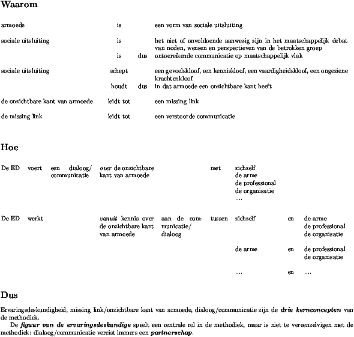

Gemaakt in opdracht van De Link vzw.
Met dank aan
alle opgeleide ervaringsdeskundigen, hun collega's en hun leidinggevenden, die toen we er hen om vroegen, zonder één uitzondering bereid waren om open naar hun ervaringen en inzichten te kijken en erover te communiceren en zonder wiens bijdragen we dit boek nooit hadden kunnen schrijven: Ann, Brigitte, Claudia, Daniëlle, Danny, Guido, Hans, Hilde, Isabelle, Janetta, Jo, Kathleen, Krista, Kristel, Kristine, Lies, Lieve, Lisette, Marc, Martine, Olga, Paul, Rosita, Rudy, Sandra, Steve, Swa, Tinne en Vio.
alle anderen wiens ervaringen we bij gebrek aan tijd niet uitgebreid konden beluisteren, maar die evengoed met moed en doorzettingsvermogen dagelijks gestalte geven aan deze participatieve methodiek en op die manier hun bijdrage leveren tot een meer humane samenleving met minder uitsluiting.
Copyright © 2008 De Link vzw.
Dit boek draagt de auteursrechtelijke bescherming van de Creative
Commons-licentie Naamsvermelding-GelijkDelen. De integrale tekst van
deze licentie en een verkorte versie ervan zijn te vinden op de volgende
internetadressen:
http://creativecommons.org/licenses/by-sa/2.0/be/legalcode.nl,
http://creativecommons.org/licenses/by-sa/2.0/be/deed.nl.
De inhoud van dit boek wordt hiermee vrijgegeven aan de gemeenschap en mag daarom gekopieerd, verspreid en aangepast worden, mits vermelding van de bron, zonder mogelijkheid van verhaal tegenover de oorspronkelijke auteurs en met inachtneming van de voorwaarde dat het resultaat blijft beantwoorden aan deze voorwaarden en dus vrij blijft voor de gemeenschap.
Het is nog maar van 2003 geleden dat de eerste opgeleide ervaringsdeskundigen in armoede en sociale uitsluiting hun intrede deden in het werkveld. Hun aantal groeit en meer en meer organisaties zetten de stap om een ervaringsdeskundige aan te werven. Hierdoor halen ze het perspectief van mensen in armoede binnen in de eigen organisatie in de hoop op die manier een structurele verbetering van de kwaliteit van de dienstverlening te kunnen realiseren.
De voorbije twee jaar hebben we met belangstelling naar dit fenomeen gekeken. Via dit boek willen we geïnteresseerde lezers de kans bieden om met ons mee te kijken naar de vele boeiende dingen die er te zien zijn en naar wat de betrokkenen eruit leren.
In dit inleidende hoofdstuk schetsen we wat contouren en vertellen we hoe we te werk gingen. In de volgende hoofdstukken zetten wij een stapje terug en laten we zoveel mogelijk de betrokkenen zelf aan het woord.
Het Vlaamse decreet inzake armoedebestrijding1 erkent verenigingen waar armen het woord nemen en ervaringsdeskundigen in armoede en sociale uitsluiting als twee basismethodieken in de strijd tegen armoede. Het decreet staat hiermee een uitgesproken participatieve aanpak van de strijd tegen armoede voor.
Deze beleidskeuze staat tegenover de hardnekkige realiteit dat mensen die verplicht worden om in armoede te leven, slechts in geringe mate participeren aan velerlei maatschappelijke goederen zoals inkomen, arbeid, onderwijs, wonen, gezondheid, rechtsbedeling, collectieve voorzieningen en cultuur. Armoede schept dus een multi-aspectuele kloof tussen armen en de rest van de samenleving, een kloof die ze volgens de definitie van de jaarboeken armoede en sociale uitsluiting niet op eigen kracht kunnen overbruggen [Vranken e.a. 2004, p. 50].
Die structurele kloof is echter lang niet de enige kloof die door armoede geslagen wordt. Armoede schept ook een gevoelskloof, een kenniskloof, een vaardigheidskloof en een ongeziene krachtenkloof [Spiesschaert 2005, p. 29-59]. Armoede schept dus ook een specifieke niet-zichtbare binnenkant, die daardoor grotendeels onbekend blijft voor wie geen leven in armoede heeft meegemaakt. Vergelijkbare effecten zien we ook bij andere vormen van sociale uitsluiting ontstaan, vertelde een gesprekspartner ons tijdens een interview.
“Armoede houdt ook kansarmoede in, maar er bestaat meer kansarmoede dan armoede, want kansarmoede gaat niet altijd met armoede gepaard. Ik ken bijvoorbeeld een dokterszoon die nooit armoede gekend heeft, maar die wel enorm veel kansen gemist heeft omdat hij van zijn vader nooit liefde gekregen heeft. Die vader had geen tijd voor hem omdat hij altijd met andere vrouwen bezig was om het nog niet te hebben over alle bijkomende problemen die dat met zich meebracht. Eigenlijk is kansarmoede zeer erg, want omdat die zoon die kansen gemist heeft, gaat hij ze ook moeilijk kunnen geven aan zijn eigen kinderen. Emotioneel gemis is een heel cruciaal gegeven bij kansarmoede.”
Dit alles houdt in dat onze kennis en ons begrip van de armoederealiteit beperkt en selectief zijn. Het maakt de armoedeproblematiek extra weerbarstig. Het blijft moeizaam worstelen om er meer greep op te krijgen. Die worsteling is ook zichtbaar in de manier waarop we op zoek zijn naar een passend woord, waarin de kern van het probleem adequaat gevat kan worden, zoals in het volgende citaat uit een interview goed aangetoond wordt.
“Toen, op dat ogenblik, dus eind jaren tachtig, begin jaren negentig, noemden wij dat cliënteel risico-gezinnen, vierde wereld, sociale gevallen. Ge kent ze wel. Nu zijn we die kansarmen gaan noemen.”
Ook de volgende passage uit een interview is hiervan op een heel andere manier een illustratie.
“Ik vind dat er een verschil in betekenis is tussen armoede en kansarmoede. Zelf zit ik nu in de armoede, maar ik vind dat ik als kind niet in de armoede gezeten heb. Ik heb toen wel geen kansen gekregen om te ontwikkelen zoals het zou moeten. Maar zolang ik thuis was, dat was tot mijn acht jaar, heb ik nooit in de armoede geleefd. En nadien, in de instellingen, heb ik ook nooit armoede gekend, want ik heb daar elke dag eten gekregen en ik had er alles wat ik moest hebben. Maar ik heb in heel mijn kindertijd niet de nodige kansen gehad om mij te ontwikkelen. En ik heb niet de kans gehad om mijn middelbare school af te maken, omdat ik altijd van instelling moest veranderen. Geen kansen krijgen werkt ook demotiverend, zodat je op de duur niet meer kan volgen op school. En zo ben ik van het algemeen vormend middelbaar onderwijs overgestapt naar het technisch onderwijs en daarna naar het beroepsonderwijs en zo altijd maar verder bergafwaarts. Ik vind dat verschillend van armoede.”
De gebrekkige kennis over armoede en de onzichtbare kant van armoede leiden tot heel wat onbegrip, wederzijdse vooroordelen, misverstanden en communicatiestoornissen tussen professionele dienstverleners en mensen die in armoede leven. Dit is waar het concept `missing link' over gaat [Spiesschaert 2005, p. 61-72]. Het hanteren van een dergelijk concept kan erg behulpzaam zijn om permanent alert te blijven voor de fundamenteel verschillende realiteiten en de fundamenteel verschillende ervaringen van armen en niet-armen. Daarom vormt dit concept een hoeksteen van de methodiek ervaringsdeskundige.
De methodiek van het werken met ervaringsdeskundigen in armoede en sociale uitsluiting werd sinds 1988 ontwikkeld binnen de experimentele onderzoekscontext van De Cirkel, vzw, een Antwerpse vereniging waar armen het woord nemen. De methodiek werd er ook voor het eerst in de praktijk gebracht. Het was immers deze vereniging die er als eerste voor opteerde om mensen in armoede zelf als professionele krachten in te schakelen in de armoedebestrijding [De Cirkel 1996].
Door deze mensen als volwaardige werknemers tewerk te stellen kreeg men de garantie dat hun perspectief structureel binnengebracht werd in de organisatie. Op deze wijze werd de opgebouwde deskundigheid en praktijkervaring in verband met armoedebestrijding mede bepaald door de rechtstreeks betrokkenen.
De aldus opgebouwde kennis en de eraan ten grondslag liggende visie op armoede en armoedebestrijding is samengebracht in een methodisch handboek en heeft de basis gelegd voor de reguliere opleiding tot ervaringsdeskundige in armoede en sociale uitsluiting die sinds 1999 in het volwassenenonderwijs ingericht wordt [Spiesschaert 2005].
Deze opleiding, gekoppeld aan de decretale verankering van de methodiek, kan ertoe leiden dat de methodiek van het professioneel inschakelen van ervaringsdeskundigen uitgroeit tot een belangrijke maatschappelijke dynamiek in de armoedebestrijding.
Het is niet enkel voor Vlaanderen een vernieuwende aanpak om mensen in armoede tewerk te stellen en op die manier hun armoede-ervaring professioneel in te zetten in de armoedebestrijding. Ook in een internationale context is dit het geval. Dit betekent dat van al wie bij die methodiek betrokken is, opleiders, dienstverleners, beleidsverantwoordelijken en ervaringsdeskundigen zelf, ieder op zijn manier pionierswerk aan het verrichten is en dus een proces van leren door ondervinden doormaakt.
Om dit proces van leren uit ondervinding zo vruchtbaar mogelijk te kunnen laten verlopen, is voortdurende reflectie en terugkoppeling nodig, onderbouwd met grondige en betrouwbare kennis. Die is echter niet zo maar voorhanden.
In het werkveld kan men immers niet terugvallen op vroegere ervaringen met die methodiek. En aangezien ervaringsdeskundigen terecht kunnen komen in heel uiteenlopende sectoren, die elk hun eigen specifieke eisen stellen, kan men zeker niet volstaan met het terugvallen op de ervaringen die De Cirkel en vervolgens De Link met die methodiek opgedaan hebben, omdat ze zich eerst in een experimentele en vervolgens hoofdzakelijk in een opleidingscontext situeerden.
Onderzoek om de in de praktijk opgedane kennis en inzichten te bundelen en te ontsluiten was dus dringend nodig. Daarom besliste De Link om in 2006 en 2007 een deel van zijn middelen daarvoor in te zetten.
De focus van dit onderzoek, waarvan de resultaten in dit boek gebundeld werden, was gericht op het grondig in beeld brengen van hoe de functie van ervaringsdeskundige in armoede en sociale uitsluiting in al zijn facetten op het terrein gestalte gegeven wordt en wat daar allemaal bij komt kijken.
We gingen ervan uit dat daarbij het perspectief en de eigen klemtonen van de diverse betrokkenen van belang zijn. Concreet betekende dit dat we zeker oog wilden hebben voor de invalshoek van de ervaringsdeskundige zelf, van diens directe collega's en van het leidinggevende compartiment van de organisatie. Thematisch gezien hadden we vooral oog voor de betekenis van de methodiek voor de diverse betrokkenen, voor de taken en functies van de ervaringsdeskundige, voor de samenwerking tussen de ervaringsdeskundige en de andere betrokkenen en voor allerlei omkaderingselementen en randvoorwaarden.
Het onderzoeksmateriaal bestond uit diepte-interviews over de hiervoor vermelde thema's met alle relevante betrokkenen uit zes werksettings waarin een ervaringsdeskundige tewerkgesteld was. Om in het onderzoek betrokken te kunnen worden moest een werksetting aan de volgende criteria beantwoorden:
De Link zelf kwam niet in aanmerking als setting.
Uit alle settings die op basis van de hiervoor vermelde criteria in aanmerking kwamen, werden er bij lottrekking zes uitgeselecteerd. We hoopten dat het lot zou zorgen voor een grote spreiding in tewerkstellingssectoren en voor een goede mix tussen grote en kleine organisaties en tussen mannelijke en vrouwelijke ervaringsdeskundigen. Het lot was ons gunstig gezind, zodat we geen extra settings moesten uitloten om aan een goede spreiding te komen.
Dit betekent dat diepte-interviews afgenomen zijn van de relevante betrokkenen uit de volgende settings:
Wie concreet binnen iedere setting de relevante betrokkenen waren, werd door de ervaringsdeskundige uit die setting zelf ingevuld. Van onze kant gaven wij de ervaringsdeskundige mee dat hij/zij daarbij moest denken aan zichzelf uiteraard in de eerste plaats, aan de collega waarmee hij/zij het meest samenwerkt, eventueel aan nog andere collega's waarmee hij/zij samenwerkt en aan zijn/haar leidinggevende figuur/figuren. In de hele grote settings vroegen we tevens aan de directe leidinggevende figuur of het voor het onderzoek relevant kon zijn om ook iemand uit het centrale management of het hogere kader te bevragen. Zo kregen we per setting zicht op een netwerk van personen dat in die setting met kennis van zaken kon praten over de toepassing van de methodiek aldaar.
Bij het uittekenen van het onderzoek, bij het afnemen van de diepte-interviews, bij het opvolgen van het uitschrijven en verwerken van de interviews en bij het rapporteren over de resultaten ervan werden ervaringsdeskundige medewerkers van De Link intensief betrokken.
In de hiernavolgende weergave van de onderzoeksresultaten laten we zo veel mogelijk de betrokkenen zelf aan het woord. Onze eigen reflecties trachten we beperkt te houden. Daarbij laten we ons hoofdzakelijk leiden door wat het beroepscompetentieprofiel ons over de functie van ervaringsdeskundige te vertellen heeft [SERV 2006].
In dit boek presenteren we een samenhangend verhaal over de methodiek van het inzetten in de armoedebestrijding van opgeleide ervaringsdeskundigen in armoede en sociale uitsluiting. De grondslag voor die handelwijze vonden we in een bepaalde toepassing van onderzoek, gericht op het verwerven van kennis over nieuwe concepten [Glaser and Strauss 1967]. Ons doel was een grondige kennis te verwerven over de methodiek zoals die in het werkveld gestalte krijgt en daarvan een globale synthese aan te bieden aan de lezer, zodat hij samen met ons van naderbij kennis kan maken met de methodiek.
Elk van onze gesprekspartners heeft vanuit zijn eigen functie en vanuit zijn eigen context een stukje bijgedragen tot dit globale verhaal. We waren dankbaar voor elk nieuw stukje dat werd aangereikt en dat ons beeld vollediger maakte. We waren niet geïnteresseerd om te gaan onderzoeken waarom uitgerekend persoon X met het stukje Y kwam aandragen. Tot op zekere hoogte was dat trouwens een kwestie van puur toeval, omdat in een bestek van één gesprek nooit alles gezegd kan worden over zo een ruim onderwerp als dit. Daarom willen we ook in de manier waarop we dit verhaal brengen het de lezer zo gemakkelijk mogelijk maken om zich te concentreren op het globale beeld zoals dat uit de verhalen naar voor is gekomen.
We besteden dan ook nauwelijks aandacht aan het situeren van de persoon van wie we hier in de tekst een citaat opnemen. Aanvankelijk was het zelfs niet onze bedoeling om aan te geven of een bepaalde uitspraak al dan niet van een ervaringsdeskundige afkomstig was. Bij het proeflezen van een eerste ontwerp van deze tekst bleek echter dat zo een werkwijze het in de schijnwerpers plaatsen van het globale beeld niet bevorderde maar integendeel net belemmerde. De aandacht van de lezers werd afgeleid omdat ze zich hoe dan ook bleken af te vragen vanuit welk perspectief een bepaalde uitspraak afkomstig was en dit dan bij gebrek aan informatie daarover, maar zelf trachtten af te leiden uit de context van het citaat of uit bepaalde details ervan.
Tegen die achtergrond besloten we om onze gesprekspartners die we hierna aan het woord laten, aan te duiden met `EDR.' (ervaringsdeskundige respondent) of `ODR.' (opgeleide deskundige respondent). In dit laatste geval kan het gaan om een collega van de ervaringsdeskundige of om een persoon met een leidinggevende functie.
Wanneer in het verhaal van een gesprekspartner een ervaringsdeskundige persoon expliciet bij naam genoemd werd, hebben we die naam steeds vervangen door de aanduiding `ED.' Als de naam van een collega of een leidinggevende opdook in het verhaal, dan is die vervangen door de aanduiding `OD.' Waar een betrokken organisatie concreet bij naam werd genoemd, hebben we die vervangen door de aanduiding `ORG.' En naar analogie hiermee hernoemden we een bij naam genoemde entiteit van zo een organisatie tot `DIENST.'
Aangezien het inschakelen van ervaringsdeskundigen als professionele krachten in de armoedebestrijding een volledig nieuwe en nog jonge methodiek is, treft men in het werkveld in verband met de methodiek vaak een zeker pioniersgevoel aan. In een eerste pioniersfase worden immers bakens uitgezet.
EDR.: “Pionierswerk is heel moeilijk werk, maar ik kan wel dingen doen die voor anderen binnen tien jaar misschien niet meer mogelijk zijn. Het is hier heel veel werken op basis van uw intuïtie en niet vergeten, de methodiek: waarvoor gij werkt, voor wie gij werkt, en vanuit welke visie, van wat uw opleiding is geweest. En daar blijf ik vanuit gaan, die echte roots, want het is geen gemakkelijke job.”
Maar afgezien daarvan maakt iedere setting die van start gaat met een ervaringsdeskundige een evolutie door. In veel verhalen was dan ook een aspect van verandering en groei aanwezig. Hiermee gaven onze gesprekspartners aan dat het aangewezen kan zijn om vanuit een dergelijk procesmatig perspectief met de methodiek aan de slag te gaan. Alvorens aandacht te besteden aan een aantal andere facetten ervan, willen we daarom een inzicht trachten te geven in de ontwikkelingen die zich in een organisatie terzake kunnen voordoen. Men vertelde over een groei en verandering inzake de toepassing van de methodiek die zich zowel op het niveau van de betrokken actoren als op organisatieniveau manifesteerde. Voorts speelt het feit dat de methodiek zelf in de samenleving nog volop bezig is met het verwerven van een passende plaats in het geheel van de armoedebestrijding, ook een rol.
Dat ervaringsdeskundigen ingeschakeld kunnen worden in de armoedebestrijding als volwaardige professionele krachten, is nog niet algemeen gekend. Een eerste kennismaking met dit gegeven kan daarom nodig zijn om verdere stappen mogelijk te maken. Dit geldt zowel voor ervaringsdeskundigen zelf als voor andere werkers en verantwoordelijken in de armoedebestrijding.
EDR.: “De sociaal verpleegkundige van Kind en Gezin die toen bij ons aan huis kwam, opperde het idee om iets te gaan doen met al die ervaring van mij. Toen heeft ze verteld over de functie van ervaringsdeskundige bij Kind en Gezin, over de opleiding die Kind en Gezin aan die mensen gaf en wat die opleiding inhield. Op die manier ben ik in aanraking gekomen met heel het ideeëngoed in verband met ervaringsdeskundige. Voor mij was dat iets helemaal nieuws. Het was de eerste keer dat ik hoorde dat iemand die zelf vanalles had meegemaakt, die dingen nadien soms ook kon gebruiken in zijn werk.”
Een eerste kennismaking met de methodiek kan heel uiteenlopende vormen aannemen. Het kan zelfs een eerder toevallige samenloop van omstandigheden zijn.
ODR.: “Ik heb toen de kans gekregen via een vaste benoeming om in Antwerpen te gaan werken. Ik ben daar dus in Antwerpen-Noord, de coté van het centraal station, de Stuyvenbergbuurt, gaan werken en daar was men pas gestart met het Horizon-project. Ik heb daar eigenlijk onmiddellijk in dat Horizon-project kunnen instappen. Ik was nog maar een paar maanden in Antwerpen, toen ik die kans kreeg.”
Uit meerdere verhalen komt naar voor dat men de stap naar een actieve betrokkenheid bij de methodiek gezet heeft vanuit een interne motivatie.
ODR.: “Wat ook een belangrijke rol gespeeld heeft, is er voor open willen staan. Nu kunnen we al zeggen dat we er effecten van zien. Maar als ge aan het begin staat, is dat niet het geval en waarom begint ge er dan aan? Ik denk dat het belangrijk is dat ge er voor wilt open staan.Als ge er niet voor open staat of al vooroordelen hebt, dan maakt ge het uzelf veel moeilijker. Ik vind dat ge het eerst moet proberen en dat ge u pas dan een oordeel kunt vormen. En nu zijn we dat proberen door en zien we al de effecten ervan en die zijn gunstig.”
Bekeken vanuit de visie die aan de methodiek ten grondslag ligt, gaat het waarschijnlijk om een zo goed als ideaal scenario wanneer een dienstverlener de samenwerking met een ervaringsdeskundige aangaat op basis van een door hem persoonlijk ervaren tekort:
ODR.: “Aanvankelijk werkte ik heel alleen. En ik merkte toen, hoe goed dat ik ook mijn best wou doen, dat er een bepaald cliënteel was, waar het niet mee lukte.Ik miste iets in die gezinnen. Ik kon er voor mijn eigen geen weg mee. En ik ben te rade gegaan bij de hoofd-sociaalverpleegkundige in de hoop dat ze mij kon helpen om te begrijpen wat ik miste.
Dat is voor mij de start geweest van de samenwerking met een ervaringsdeskundige.”
Op het eerste gezicht lijkt het opmerkelijk dat een betere kwaliteit van het eigen leven een element kan zijn dat ervaringsdeskundigen motiveert om zich voor de methodiek te engageren. Misschien heeft het te maken met het feit dat ervaringsdeskundigen de eigen ervaring als een bron van kennis hanteren, ook wanneer het gaat over het verkennen van de waarde van de methodiek voor de strijd tegen armoede.
EDR.: “Ik wou destijds wel proberen om die opleiding bij Kind en Gezin te doen en dan als ervaringsdeskundige te gaan werken, niet zozeer omdat ik mensen wilde helpen, maar eigenlijk omdat ik niets beters te doen had, zoals men soms zegt.Het is pas tijdens de opleiding en toen ik ervaarde dat hetgeen ik er leerde ook relevant was voor mezelf, dat ik er beginnen aan denken ben dat ik misschien wel mensen zou kunnen helpen met mijn eigen ervaringen.”
De inbreng van ervaringen uit de eigen levensgeschiedenis tijdens de functieuitoefening geeft de functie van ervaringsdeskundige een meer dan gewone persoonlijke kleuring. Tegen die achtergrond kan het zin hebben om ook de kennismaking tussen de ervaringsdeskundige en zijn collega's een persoonlijke toets te geven.
Interviewer: “En hoe zijt ge dan stillekesaan een opening beginnen vinden om een functie te hebben hier?”EDR.: “Door mij eerst als mens aan te bieden bij wijze van spreken. Dus niet in mijn functie van ervaringsdeskundige, maar alleen `ik ben ED met heel mijn achtergrond, met heel mijn hebben en houden,' en dan pas mijn functie zelf.”
Interviewer: “En wat moet ik daaronder verstaan: u als mens aanbieden? Ja, wie ge zijt, maar tegenover wie?”
EDR.: “Dus dat ge u eerst vanuit uzelf voorstelt, hé, dus `ik als ervaringsdeskundige,' tegenover mijn collega's. Dus eigenlijk tegenover ORG, zal ik maar zeggen. Ik heb ondervonden dat dit beter werkt. Toen ik destijds stage deed als ervaringsdeskundige, heb ik gemerkt dat dit een heel andere positie geeft als ik mij eerst voorstel als mezelf en dan pas na een tijd als ervaringsdeskundige. Na de introductieperiode heb ik hier kans gezien om mijn functie uit te werken en pas dan ben ik mezelf eigenlijk ook als ervaringsdeskundige beginnen voor te stellen. Maar ondertussen kenden ze mij wel al als mens.”
Interviewer: “Als ge u presenteert als mens, vragen ze dan niet, wat komt gij hier doen?”
EDR.: “Jawel, en ik geef daar ook uitleg aan, maar daar stopt het. Allee, ik bedoel, daar stopt het in de zin van er werd ook op dat moment niet echt uitgevraagd: `oh ja, en wat is dat allemaal, en hoe doet ge dat en over wat gaat dat?”'
Een kennismaking met de andere als persoon kan eventueel bevorderd worden door de heersende cultuur in de organisatie.
ODR.: “De informele individuele gesprekken die ik met ED gehad heb hier aan het bureau hebben een grote rol gespeeld. ED is heel open en ED vertelt ook heel veel over zijn proces.Ik heb dus ED goed leren kennen als persoon, in belangrijke mate hier aan het bureau door individueel contact met hem, dus zonder zijn tandempartner. Dat is dus gebeurd tijdens momenten dat ik met hem alleen werkte. Hij begon dan meer over zichzelf als persoon te vertellen. En ook ik ging meer over mezelf als persoon vertellen.
Hier kan zoiets. Bij ons wordt zoiets wel gedaan. Wij zijn een team dat heel veel aandacht schenkt aan het persoonlijke contact. Hier heb je soms dat je denkt: : `Oei, oei, oei, we zijn nu gewoon aan het babbelen.' In het begin lijkt het zo, omdat je dan eigenlijk nog niet weet welk effect dat later toch wel blijkt te hebben, en omdat je het eigenlijk ook niet met het oog op dat effect doet. Dat lijkt niet professioneel, maar toch is het dat wel. Want ge moet mekaar toch kennen. Onze identiteit is immers een van onze werkinstrumenten.”
De mogelijke betekenis van de functie wordt vaak slechts al werkend zichtbaar.
EDR: “De hulpverleners hier weten pas wat nodig is als ze ons kennen en weten waar we voor kunnen dienen, want dat hebben we hier moeten uitzoeken.”
De aanvankelijke verwachtingen die men tegenover de methodiek koestert, komen niet steeds overeen met een juiste of een volledige kijk erop.
EDR.: “Voor ik hier kwam hebben ze zich voorbereid op de komst van een ervaringsdeskundige door mensen van Kind en Gezin uit te nodigen. Daarvan hebben ze geleerd hoe ze zich het best op mijn komst konden voorbereiden. Die mensen van Kind en Gezin spraken wel vanuit hun concrete ervaringen met een ervaringsdeskundige, maar dat was geen opgeleide ervaringsdeskundige. Van daaruit hadden ze een aantal ideeën ontwikkeld die wat mij betreft, niet altijd adequaat waren.”
De aanvangsmotivatie, ook al steunt ze niet op een correct beeld van de methodiek, kan wel erg betekenisvol zijn, omdat ze de betrokkene de stap doet zetten naar de methodiek, waarna hij er zich al werkend een meer adequaat beeld van kan gaan vormen.
ODR.: “Mijn verwachting met die samenwerking was van: ik ken die wereld niet. Die schrok mij zelfs een beetje af, in die tijd. Dat was zo een beetje van: waar kom ik hier terecht? Hoe moet ik daar mee omgaan?En dan lees je in de literatuur over kinderverwaarlozing en kindermishandeling. `Daar zou je moeten leren mee omgaan binnen ORG,' dacht ik toen. Want wij komen daar eigenlijk wel mee in aanraking. Wij werken met de allerjongste kinderen in onze maatschappij, de meest kwetsbare populatie van onze maatschappij.
En hoe ga je ermee om? Tot waar ligt die grens? Ga je met je eigen waarden en normen, ja dan geef je ook dat gezin met die kinderen geen kansen. Versta je? Dus dat was mijn eerste bedoeling van leer mij dat kennen. Waar moet ik mijn limiet leggen?
En door te gaan samenwerken met een ervaringsdeskundige ontdekte ik dan zelf: als wij komen, ah tiens, die deuren gaan veel rapper open, er is veel vlugger communicatie. En nog, door nog langer samen te werken, heb ik zelfs ontdekt dat ik mijn eigen stijl kan houden. Een stijl, denk ik, die behoorlijk direct kan zijn, behoorlijk confronterend kan zijn. Wat vroeger, als ik alleen werkte, heel moeilijk was. Want dan was het van klinkt het niet dan botst het. Terwijl dat je nu telkens iemand mee hebt die ergens een verduidelijking kan gaan geven. En dan merk ik nu dat juist, waar dat ik vroeger dacht van dat is de zwakte van mijn stijl, heb ik daar de sterkte kunnen van maken. En ik kan nu in mijn communicatie veel vlugger to the point komen, dan dat ik vroeger kon.”
Voor een goed functioneren van de methodiek is het wel nodig dat er gaandeweg een meer adequaat beeld gevormd wordt van de functie van ervaringsdeskundige.
EDR.: “Zo is het voor mij ook belangrijk om te weten welke de verwachtingen zijn van de hulpverlener. Want als hij naar mij toe een aantal verwachtingen heeft, die niet in overeenstemming te brengen zijn met mijn functie, bijvoorbeeld: `ik wil dat je dat en dat doet,' dan wil ik dat hem vooraf wel kunnen zeggen en als hij per sé aan dat idee blijft vasthouden, dan wil ik de gelegenheid hebben om te zeggen dat hij het dan maar zelf moet doen.”
Om een betere afstemming te krijgen is het dus aangewezen om geregeld elkaars visie op de functie en op de methodiek opnieuw af te toetsen.
ODR.: “Het is vooral door informele persoonlijke contacten dat ik stilaan een beter zicht heb gekregen op hoe ED hier werkt. Want daarin is hij eigenlijk altijd heel open geweest. `Ik zie dat zo,' zei hij altijd. Hij had het altijd over `ik, ik, ik,' en over `jullie als begeleiders zien dat anders.' En in het begin was ik daar niet mee akkoord, met dat beeld van `wij als begeleiders.' En ik had altijd zo iets van: `wat zegt gij nu?' Dus ik dacht in het begin: `ED is ook een begeleider.'Dat ik nu kan zeggen dat de functie van ervaringsdeskundige voor mij duidelijker geworden is en dat het effect van een ervaringsdeskundige hier goed te zien is, heeft te maken met het feit dat we al een heel proces doorgemaakt hebben. Het heeft ook te maken met het feit dat ik echt aanvaard heb dat hij een andere functie heeft, dat hij informeel bezig is met de cliënten en dat hij toch gemakkelijker contact krijgt met hen.”
Gaandeweg kan men ook leren om op een meer effectieve manier gebruik te maken van de mogelijkheden die het inschakelen van een ervaringsdeskundige kan bieden.
EDR.: “In het begin liep dat toch niet zo vlot. Dat heeft lang geduurd. Want ik denk dat dat nog maar een maand of vijf, zes is, dat de trajectbegeleiders eigenlijk al vanaf de eerste stappen naar ons beginnen te bellen, terwijl dat het heel lang geweest is dat er echt zo al een uitspraak van de RVA moest zijn en alles erop en eraan voor ze ons opriepen. Dan kunt ge er ook niet veel meer aan doen natuurlijk.Of ook nog, nu krijgen we al meer dan een maand de ruimte. Maar daarvoor was het al van zeg, volgende week moet die een oplossing hebben, want dan wordt die uit zijn huis gezet. Hallo! Spring er dan maar eens efkes op!”
ODR.: “Ja, dat heeft veel te maken met het feit dat er vroeger geen ervaringsdeskundigen waren. Sommige mensen probeerden toen zelf wel vanalles en nog wat te doen, maar binnen hun eigen beperkte mogelijkheden. En die hadden voor zichzelf een patroon ontwikkeld en die hielden dat aan, ook toen hier ervaringsdeskundigen kwamen. En nu gebeurt het al meer van `ah, ja, dat is waar, er zijn daar ook nog twee mensen, we gaan daar eens naar bellen, want ja, als ze iemand volgende week zijn huis uit zetten, zou ik dan niet beter eens contact opnemen met die mensen.?' Maar dat moest ook groeien hé, in het begin.”
EDR.: “Het was paniek vanuit de trajectbegeleiders, soms hé.”
Vanuit het theoretische gedachtegoed in verband met de methodiek wordt wel eens gesteld dat een keuze om met een ervaringsdeskundige in zee te gaan door alle betrokkenen gedragen moet worden. De praktijk loopt lang niet altijd volgens dit ideale scenario. Soms staat hij er ver af.
EDR.: “De keuze om een ervaringsdeskundige in ORG te plaatsen is een keuze van het beleid geweest. Het was geen vraag van de diensten zelf.”
Als de start volgens een dergelijk scenario verloopt, kan dit wel eens tot harde en moeizame confrontaties leiden.
EDR.: “Heel veel discussies, heel veel woordenwisselingen wat voor deze mensen vreemd was, die open communicatie. En ook nog dat iemand, en dan nog wel iemand uit een kansarm milieu, zijn bek durft open te trekken.”
Het is in die omstandigheden ook moeilijker werken.
EDR.: “Het feit dat de samenwerking met een ervaringsdeskundige van bovenaf opgelegd is, zal de zaak altijd blijven bemoeilijken. Mocht men er zelf voor gekozen hebben, dan zou men tenminste al een idee hebben waarvoor men gekozen had en zou men ernaar kunnen handelen. Maar als het opgelegd wordt, is het niet zeker dat men weet waarover het gaat. Dit belet niet dat ik van sommige mensen ruimte krijg om mijn inbreng te doen en met hen samen te werken.”
Soms zijn er binnen een organisatie grote verschillen tussen de motieven van de betrokkenen om een ervaringsdeskundige binnen te halen. Soms wordt de keuze niet door alle betrokkenen gemaakt of gedragen. Dit betekent nog niet noodzakelijk dat de methodiek er geen kansen krijgt om voet aan de grond te krijgen en zich te ontwikkelen.
ODR.: “Er zijn een heleboel collega's die hoofdzakelijk op het feit zitten van `ik heb ongelooflijk veel zelfvertrouwen, ik heb de wijsheid in pacht en diene andere gaat mij niet komen zeggen dat ik niet geheel juist ben.' Dus die zich daarvan afsluiten. Wij hebben een aantal collega's die pertinent niet willen samenwerken met een ervaringsdeskundige. Die het dus ook uitstralen en ook zeggen.Maar ge moet daarom nu niet alles in de negativiteit zien, want die mensen blijven wel aanwezig op vergaderingen waarin ED-1 en ED-2 een heel grote invloed hebben als er over gezinnen gesproken wordt.
Dus ze kiezen er wel voor van ik ga er eigenlijk niet in mee stappen, maar zonder dat ze het eigenlijk zelf willen, dragen ze er wel de gevolgen van op de langelaatste duur. Die andere collega's worden dus ook wel een stukske bevrucht zonder dat ze zelf voor de methodiek kiezen.”
Om de methodiek kansen op slagen te geven, ook al zijn niet alle betrokkenen overtuigd van de waarde ervan, is het waarschijnlijk aangewezen om medewerkers de vrije keuze te laten in welke mate ze zich engageren in de concrete implementatie ervan.
ODR.: “Dat is dus een voorwaarde, hé, dat men de verpleegkundigen zelf keuzes moet kunnen laten maken. Wat ORG nu doet is: ED, gij zit in die regio en er zitten daar zoveel verpleegkundigen in. En aan de verpleegkundigen wordt gezegd: jullie werken vanaf nu samen met ED. Klikt het of klikt het niet, ik bedoel, ge doet maar.”Interviewer: “En dat is niet juist?”
ODR.: “Ik denk niet dat dat juist is. Ik denk dat ge er bewust voor moet kiezen. Dat dat geen opgedrongen keuze kan zijn.”
Ook mensen de kans geven om de zaak wat vanop een afstand te bekijken en in hun eigen tempo stilaan meer bij de methodiek betrokken te geraken kan zinvol zijn.
EDR.: “We hebben een regioherverdeling gehad. Dat maakt dat mensen van een ander team erbij gekomen zijn. Ze aanvaarden me wel, maar het moet efkes, weet ge wel, vanop een afstand. Nu ja, dat is hun recht hè.Er zijn dan ook nieuwe mensen bijgekomen die je ook wel een stuk op hun tempo er moet mee laten kennismaken. Het is ook allemaal nieuw hè.”
Waar mensen het gevoel krijgen dat de methodiek hen opgedrongen wordt, kan dit soms meer deuren sluiten dan het er opent.
EDR.: “De teams waarin ik nu kom, hebben daar niet zelf voor gekozen, maar zijn aangeduid door de regioverantwoordelijke en werden uitgekozen op basis van de regio's waar zich volgens een analyse het meeste armoede manifesteert. Deze teams voelen zich geviseerd. En die weerstand leeft echt, zodat het hopen is op iemand of enkele personen die bereid zijn om naar mijn functie toe een opening te maken.”
Ook een dienst moet zich instellen op de nieuwe methodiek. Men kan dit doen door zich vooraf op de komst van de ervaringsdeskundige voor te bereiden.
ODR.: “Op het hoofdbestuur was de invoering van de methodiek al lange tijd in ontwikkeling en in voorbereiding. Maar die fase was nog niet volledig af toen zich plots de opportuniteit van de sociale maribel aandiende. De start is dus eigenlijk te snel gekomen en was onvoldoende voorbereid.Het concept ervaringsdeskundige was theoretisch goed voorbereid, maar de implementatie niet. De mensen zijn dus op het terrein verschenen, maar hun komst was niet voorbereid en dat heeft gemaakt dat het op het terrein echt wel zoeken geweest is.”
Externe omstandigheden kunnen roet in het eten gooien en het op gang trekken van de methodiek bemoeilijken.
EDR.: “ORG zou pas in 2006 ervaringsdeskundigen aannemen, maar er werden nu subsidies vrijgemaakt en wij werden hier gedumpt. Maar aan de andere kant zijn zij ook opgezadeld geweest met ons, eigenlijk onvoorbereid. Heel onvoorbereid. Wij werden gewoon eigenlijk als twee partijen in elkaars schoot geworpen. Gij bekijkt maar wat ge er mee aanvangt. In zee zonder zwemband.En dat was het moeilijke voor mij, dat er ganse discussies en ik weet niet wat waren. Als de mensen beter zijn voorbereid op ervaringsdeskundigen, is er misschien minder discussie nodig. Zij hadden hier het idee dat zo een functie van ervaringsdeskundige dicht aanleunt bij om het even welke andere functie hier. Maar het is niet te vergelijken met een andere functie, helemaal niet.
Nu hebben ze al de ervaring van er mee te werken, dus die volgende ervaringsdeskundige die hier komt, kan het al wat gemakkelijker hebben, want ze weten al van: `ah, ja, dat zit zo.'
Ja, ik heb wel ondersteuning nodig gehad. En dat mag misschien in de toekomst een ervaringsdeskundige doen, die ondersteuning geven. Ge vecht tegen een bierkaai op.”
Zich als dienst instellen op de methodiek houdt vaak in dat er op verschillende vlakken veranderingsprocessen op gang moeten komen. Het kan bijvoorbeeld gaan om aanpassingen die nodig zijn op grond van inhoudelijke aspecten van de methodiek. Soms betreft het ook eerder praktische aanpassingen.
Iedere organisatie wordt uitgedaagd om een aangepaste concretisering te vinden voor de methodiek. Een goed startpunt is het scheppen van een passende ontwikkelingsruimte.
ODR.: “Ja, wij zijn daarin nog aan het zoeken, inderdaad. Ik zou hier willen beklemtonen dat het nog altijd iets totaal nieuws is voor ons. En toch zijn wij daar al een tijd mee bezig. Zelfs een jaar voordat zij in dienst zijn gekomen, waren wij er al mee bezig in de stuurgroep.Dat is ook enorm moeilijk, ook omdat het een functie is die nog niet bestond. En wij hebben ook altijd tegengehouden dat het snel een definitieve vorm moest krijgen. Want hadden we dat niet gedaan, dan hadden ze zo een project al lang geannuleerd. Wij hebben altijd gezegd van laat dat zijn tijd. En aan de stuurgroep van laat ons kijken, laat ons niets overhaasten.
We hebben chance gehad dat we die ruimte hier wel gekregen hebben, wat hier niet altijd het geval is. Want de directie, dat is: `dat is iets nieuw en dat moet opgevolgd worden en dat moet bekeken worden en dat moet resultaat hebben en dat moet si en dat moet la.' Wij hebben altijd gezegd van: `Ow, ow, ow. Rustig, rustig, rustig. Laat dat groeien, laat dat zijn.”'
Ook voldoende tijd nemen kan van belang zijn om de ontwikkeling van een methodiek binnen een organisatie kansen op slagen te geven.
ODR.: “En het kabinet en zo volgt dat project ook wel op. Die zullen die verslagen wel niet lezen, maar die willen af en toe wel een stand van zaken hebben. Van hoe zit dat daar nu mee. Zeker in het begin als dat project liep, was dat echt sterk aanwezig. Wij voelden dan toch ook een beetje die druk. Wij hebben altijd gezegd, geef ons de tijd. Geef ons de tijd. En dat is goed uitgedraaid. Uiteindelijk hebben wij die tijd wel gekregen, hé. Maar ik moet zeggen, het project wordt blijvend opgevolgd.”
Omdat de functie van ervaringsdeskundige nieuw is, komt de ervaringsdeskundige geregeld terecht in een werkomgeving waar men niet zo'n duidelijk beeld heeft van wat de functie eigenlijk inhoudt.
EDR.: “Ja, ook het idee dat we, hé, hulp verlenen. Wij zijn geen hulpverleners. En dus altijd: `wij zijn dat niet, wij zijn dat niet.' En ik ben ook al aan het denken geweest om dat zo eens op een cassetteke te zetten. Voilà. Dan is dat gevecht al minder hard, in die zin dat ge dan niet langer constant in herhaling moet vallen.”
Er kan aanvankelijk ook onduidelijkheid bestaan over hoe de functie ingevuld kan worden.
ODR.: “We hadden er zo wel een notie van dat ED een soort vertolker was tussen de cliënt en onszelf. Dat inzicht was in het begin bij ons wel aanwezig, maar hoe we daar dan mee moesten werken, dat was in het begin voor ons niet zo duidelijk en wij vonden dat ook niet zo eenvoudig.In het begin zagen wij het verschil tussen een ervaringsdeskundige en een begeleider niet zo goed. En het duurt wel even eer ge in die nieuwe visie ingewerkt zijt.”
Bij het zoeken naar een passende functie-invulling is de inbreng van de ervaringsdeskundige onmisbaar.
EDR.: “Ik kan hier in ORG ook praten over mijn job van ervaringsdeskundige en daarover reflecteren. En ik doe dat ook regelmatig.”
Het impliceert echter niet dat de ervaringsdeskundige daarover die duidelijkheid kan geven die men misschien soms wel verwacht.
EDR.: “Van mij verwacht men na zo een verkenningsperiode dat ik duidelijk zou zeggen welke taken ik kan opnemen, maar ik kan dat niet. Ik kan wel zeggen van waaruit ik wil werken, namelijk vanuit het feit dat ik het perspectief van de cliënt en de participatie van de cliënt belangrijk vind. En ik vind dat des te belangrijker als het om gedwongen hulpverlening gaat. Maar dan nog is mijn taak niet fundamenteel anders. Mijn taak is immers ervaringsdeskundige zijn.”
Het vraagt ook van de ervaringsdeskundige tijd om zich een duidelijk beeld te vormen van wat zijn functie binnen de specifieke context van een concrete organisatie zou kunnen inhouden.
ODR.: “Op teamvergaderingen zei ED aanvankelijk niet veel. Hij kon op de teamvergadering ook niet goed verwoorden wat zijn functie inhield. Er werd in elk geval daarover niet veel gezegd. En ik denk dat ook hij in het begin nog niet zo scherp zag als nu, dat zijn functie echt anders is dan die van een begeleider. Hij gaf dat verschil in functie af en toe wel een beetje aan, vooral op de momenten dat hij aangaf wat hij niet deed.Nu zien we daarin heel duidelijk een stijgende lijn. Ook nu nog steeds gaat het in stijgende lijn. Dit is mogelijk geweest omdat met heel het team geïnvesteerd is in die opbouw. Er is ook met heel het team geïnvesteerd in het geven van een concrete taakinhoud en een plaats aan de ervaringsdeskundige en aan zijn functie.”
Een goede theoretische voorbereiding is belangrijk, al staat ze niet garant voor een probleemloze toepassing van de methodiek.
EDR.: “Ik vind dat de functie van ervaringsdeskundige goed beschreven staat. Wie dat geschreven heeft en wie daarvoor gekozen heeft, is voor mij echter niet duidelijk. Ik vermoed dat men zich op het beroepsprofiel gebaseerd heeft, want er staan dingen geschreven, waarvan ik vind dat ze passen bij de taak van een ervaringsdeskundige.Er staan zeer goede dingen in. Maar dat maakt de confrontatie met hoe het er hier in de praktijk aan toe gaat des te moeilijker.”
Bij het zoeken naar een passende verankering van de methodiek binnen een organisatie kunnen de kansen die de methodiek er kan krijgen of zelfs de affiniteiten tussen personen, beslissende factoren zijn.
EDR.: “Toen ik in ORG beginnen werken ben, werkte ik op twee plaatsen. Ik werkte gedeeltelijk hier in DIENST-1, maar ik werkte ook gedeeltelijk in DIENST-2, een ambulante dienst van ORG. Ik had ook twee tandempartners. Ik had OD-1 hier in DIENST-1 als tandempartner en ik had OD-2 als tandempartner in DIENST-2. Maar met haar klikte dat niet. Dat liep niet vlot. Zij was mijn type ook niet. En bij OD-1 klikte dat wel.Ik heb dan gezegd tegen OD-1 dat ik dat niet meer zag zitten. En toen hebben we daarover gepraat. Ik heb toen trachten duidelijk te maken dat ik dat niet kon volhouden, dat het op die manier niet kon blijven duren. En dan heb ik die job in DIENST-2 afgebouwd.”
Affiniteit kan ook groeien.
ODR.: “Wij hebben hem graag, maar hij ziet ons ook graag. Dat is iets wederzijds. Dat gaat echt al verder dan ons waarderen in onze functie van begeleider. Want ik hoor dat dan wel bij hem, dat hij vanuit zijn verleden een negatief beeld van die begeleidersfunctie had.”
Het is hard voor een ervaringsdeskundige om in een omgeving terecht te komen, waarin hij wantrouwen tegenover de functie voelt.
EDR.: “In de fase van vertrouwen opbouwen naar de methodiek toe, kreeg ik op een bepaald moment de vraag waarom er zo een methodiek moest komen. Wat kan die wat een hulpverlener niet kan? Hoeveel nieuwe disciplines moeten er nog komen? Het waren allemaal vragen die aantoonden dat men er niet in geloofde. Het was een tijd van heel confronterende gesprekken. Ik heb toen geprobeerd om mezelf te blijven en op die vragen in te gaan, want ik voelde dat er ook wel een zekere nieuwsgierigheid was, dat men er wel iets meer over wilde weten. Wat kan een ervaringsdeskundige dat een hulpverlener niet kan? Daarop zei ik: `Ik weet niet of ik iets kan, maar ik kan wel spreken over armoede, over dingen die ik heb meegemaakt. Als je het niet zelf meegemaakt hebt, kan je er niet over praten. Ik kan dat wel, maar ik kan dan weer niet praten over de dingen die jij hebt meegemaakt.' Zo hebben we een tijdje gesprekken gevoerd.”
Niet elke verankering geeft de methodiek evenveel kansen.
EDR.: “Ik ervaar hier een probleem. Het is immers niet mogelijk om aan hun verwachtingen te voldoen en tegelijk te beantwoorden aan de functie van ervaringsdeskundige, zoals die beschreven staat.Is men er zich voldoende van bewust geweest dat men niet enkel een functie moest creëren, maar dat men ook moest zorgen voor de nodige ruimte om de functie waar te maken?”
De ervaringsdeskundige vervult zijn functie steeds vanuit zijn specifieke invalshoek, en die is gefocust op het recht en de gelijkwaardigheid van de kansarme [SERV 2006, p. 9]. Daarom verlangt de ervaringsdeskundige een verankering van zijn functie op een plaats in de organisatie van waaruit hij nog zicht kan houden op het effect van zijn inbreng op de cliënt.
EDR.: “Het zou beter zijn moest ik vast in één team kunnen werken, omdat mijn werk dan meer effect zou hebben. Het team zou evolueren en ik zou die veranderingen ook kunnen zien, ik zou ook beter kunnen zien welke effecten mijn inbreng heeft voor de cliënten. En dat zou voor mij veel minder stresserend zijn.”
Omdat in veel organisaties het nog vaak de allereerste keer is dat de functie van ervaringsdeskundige ingevuld wordt, moeten veelal ook nog allerlei heel praktische zaken organisatorisch in de plooi vallen.
ODR.: “Nu hebben ze een GSM, maar dat heeft heel lang geduurd, hé, eer zij een GSM hadden. Iedereen zat maar bezig van `ja maar, ze moeten toch een GSM hebben. Ik zit hier met een probleem. Zij zijn ergens op huisbezoek. Ik kan hen niet eens bellen! Allee, waarom hebben die geen GSM?' Ja, dat is administratie, en dat is...., ja, wat is dat allemaal? Maar uiteindelijk hebben ze toch een GSM gekregen.”
Elke werkomgeving vraagt van een nieuwe medewerker een zekere aanpassing.
EDR.: “Als je in een organisatie of een dienst begint, is het eerste wat je moet doen de dienst leren kennen en dan kan je beginnen aan het uitvoeren van je taak. Dat is hier met mij in ORG zo gebeurd en dat is goed verlopen.”
Vanuit de organisatie kan men dit aanpassingsproces trachten te bevorderen via een inschakelingstraject.
ODR.: “De ervaringsdeskundigen hebben een inwerkingsperiode nodig gehad. Het eerste half jaar tot het eerste jaar hebben ze de werking van de instelling moeten leren kennen.”
Bij het inschakelen van een ervaringsdeskundige wordt het aanpassingsproces vaak doorkruist door het feit dat niet enkel de nieuwe medewerker, maar ook de functie zelf nog zijn plaats moet vinden.
EDR.: “Het eerste jaar kwam het er voor mij vooral op aan om het hier gewoon te worden. En het lukte me vlugger om in de bewonersgroep ingeburgerd te geraken dan in het team. Het klikte beter met de groep. En eigenlijk geleek ik in de beginfase sterk op de bewoners in de manier waarop ik functioneerde. Het is maar langzaamaan dat ik meer als ervaringsdeskundige ben gaan functioneren.”
Meer dan een andere functie wordt de functie van ervaringsdeskundige tot op zekere hoogte persoonlijk ingekleurd. In een pioniersfase geeft men dit fenomeen wel eens hoofdzakelijk vanuit dit pionieren betekenis. En dan krijgt een bijkomende ervaringsdeskundige misschien veel minder de ruimte om zijn functie op een persoonlijke manier in te kleuren.
EDR.-2: “Dat zoekgedrag van mijn eigen, ja. Een stuk van mijn eigen zoekende houding, zoeken binnen ORG. Zeker. En met mijn eigen manier van werken ook, ja.”Interviewer: “Gij hebt dan het gevoel gehad dat er niet veel ruimte was voor uw zoekproces omdat ED-1 dat al vooraf gedaan had.”
EDR.-2: “Ja. En ik merk dat nog. Dat is nog soms zo, ja.”
Interviewer: “Is dat omdat gij verschillend in stijl zijt, wat het uitoefenen van uw functie betreft, ligt dat daar?”
EDR.-2: “Tja, het uitoefenen van mijn functie op zichzelf niet, denk ik, hé. Of, ja, misschien, ja.”
EDR.-1: “Gij hebt uw eigen manier van werken.”
EDR.-2: “Mijn manier, ja, natuurlijk.”
EDR.-1: “Wel, dat is uw stijl ook een stuk, hé. We bereiken allebei zowat hetzelfde, allee, we willen allebei hetzelfde bereiken, maar het is op een andere manier dat we het doen.”
EDR.-2: “We hebben een andere manier. Ik heb een andere aard ook, hé.”
EDR.-1: “Er is wel de ruimte rond de invulling van het werk.”
Interviewer: “Dus dat was iets dat in het begin moeilijk lag voor u.”
EDR.-2: “Ja. Met momenten is dat nog, hé, ED-1. En dan is dat zo, pff, van oei, we moeten zien van met mekaar niet in de clinch te komen of zo. Wij praten er dan ook over of wij gaan efkes uiteen.”
EDR.-1: “Alsof dat we al een koppel geweest zijn.”
EDR.-2: “Allee, ja.”
EDR.-1: “Nee, maar het is wel zo dat als er iets is, dat we proberen het toch op tafel te leggen en er proberen mee om te gaan met ons beiden.”
Waar een organisatie ruimte laat voor evolutie, ziet men door de tijd de functie van ervaringsdeskundige vaak ook effectief groeien, waardoor ze voor de organisatie steeds waardevoller wordt.
EDR.: “Mijn eerste functies waren heel sterk gericht op de bewonersgroep en op individuele bewoners. Ook nu nog doe ik heel veel in de groep en ben ik ook veel individueel met bewoners bezig. Maar na het eerste jaar ben ik ook stilaan meer een functie naar het team beginnen krijgen en heb ik ook meer een plaats in het team gekregen. Het is iets waaraan OD en ik samen gewerkt hebben en waarover we samen gepraat hebben en waarover ik stilaan ook meer met het team beginnen praten ben. Eigenlijk heb ik hier al een enorm grote evolutie doorgemaakt, waardoor ik nu ook veel meer deel met de andere mensen van het team. Ik deel met hen zeker niet alles wat ik met mijn tandempartner deel, maar ik werk wel veel meer met hen samen dan in het begin.”
Naarmate de functie in betekenis groeit, is het vaak ook gemakkelijker te begrijpen dat het een functie betreft die een blijvende meerwaarde kan geven.
ODR.: “De functie van ED heeft met de tijd meer en meer betekenis gekregen. Het effect van zijn functie is nu goed zichtbaar. En ik vind dat zijn functie blijvend nodig is. Het is niet zo dat je zou kunnen stellen: door ED zijn mijn kijk en mijn denken wat veranderd en nu kan ik wel weer verder zonder hem. Het is net zijn permanente inbreng die zo belangrijk is, want wij werken hier met mensen en elke mens is uniek en elke situatie is anders. En daarom moeten we blijven reflecteren, moeten we met elkaar blijven praten over situaties, over onze kijk, over onze gevoelens.”
Soms wacht men liever nog wat met het implementeren van sommige facetten van de functie, ook al ziet men voor de toekomst daar wel kansen liggen.
EDR.: “Ik put ook geregeld uit wat er in het beroepsprofiel over mijn functie staat. Eigenlijk zijn er nog heel veel dingen die ik zou kunnen doen en die ik niet doe. Ik ben nu vooral heel sterk aan de basis bezig, dicht bij de mensen, het directe werk. Op het vlak van deelnemen aan stuurgroepen en op een structureel niveau ben ik voorlopig nog niet bezig. Maar ik wil daar later wel iets rond doen.”
Het effect van de meerwaarde die uitgaat van het inschakelen van een ervaringsdeskundige kan in het begin soms zelfs grotendeels beperkt blijven tot één enkele medewerker binnen de organisatie, namelijk de persoon waarmee de ervaringsdeskundige het meest intens samenwerkt. Aan sommige ervaringsdeskundigen kan dit aanvankelijk veiligheid bieden. Een dergelijke aanzet voor de functie hoeft niet in te houden dat haar betekenis steeds daartoe beperkt zal blijven.
EDR.: “Eigenlijk vond ik het team niet belangrijk de eerste jaren dat ik hier werkte. Ik vond het ook niet belangrijk wat die andere collega's dachten. We hebben dat ook zo beschreven in het jaarverslag. Voor mij was het voldoende dat ik mijn tandempartner mee had. Ik had niemand anders nodig. Mijn tandempartner in haar specifieke positie volstond voor mij en naar de rest van het team had ik eigenlijk ook geen functie.Maar mijn tandempartner vond dat we die methodiek van ervaringsdeskundige verder moesten uitbouwen, zodat gans het team er de vruchten van kon dragen. En dus zijn we daar anderhalf jaar tot twee jaar geleden aan beginnen werken. En nu merk ik ook dat dit een goede zaak is. Maar ik wil toch mijn vaste tandemrelatie niet kwijt geraken en het is niet de bedoeling dat ik met de andere teamleden in tandem ga werken. Ik ga hen ook nooit alles vertellen wat ik tegen mijn tandempartner vertel. Er zal daar altijd een verschil blijven.”
Een groter bereik realiseren voor de functie vereist een stapsgewijze en vooral een intentionele aanpak, waarbij de evolutie die alle betrokkenen ten aanzien van de methodiek meemaken, een rol speelt.
EDR.: “Zolang mijn baas niet weet wat mijn functie inhoudt, kan hij ze ook niet inzetten op andere plaatsen in ORG waar ze zinvol zou kunnen zijn. Nu nog niet, maar in de toekomst zou ik wel graag samen met OD ertoe willen bijdragen dat ook de rest van ORG meer voordeel kan halen uit de methodiek. Nu ben ik daar nog niet klaar voor, maar ik wil op termijn ook niet dat mijn functie niet verder reikt dan deze dienst, want dat zou ik beleven als ter plaatse trappelen. Toen ik hier begon te werken, verwachtte ik trouwens dat men veel meer beroep zou doen op ons als tandem om overal in ORG ondersteuning te bieden in casussen waarin men vast liep.”
Inzicht in het mogelijke belang van een grotere uitstraling van de methodiek kan samengaan met een groter besef van de betekenis ervan.
ODR.: “Ik denk dat de methodiek nog niet veel uitstraalt naar andere diensten. We beginnen eigenlijk pas nu te voelen dat die methodiek effect heeft op onze werking. We zijn ons daar nog maar recent meer bewust van geworden. En zo is bij ons nu toch wel het besef aanwezig dat wij zelf aan het veranderen zijn, en dat wij die werkwijze misschien toch wel eens wat meer moeten gaan toelichten.We zijn ons nog maar pas nu echt aan het realiseren dat we die methodiek ook echt toepassen en dat we dat niet alleen hier mogen laten, dat we dat misschien toch wel moeten uitdragen of het alleszins al verwoorden, zodat onze collega's ons misschien ook beter gaan begrijpen.
Interesse hebben ze zeker, maar ik denk dat het maar effect kan hebben als ze ook echt gaan samenwerken met een ervaringsdeskundige. Anders werkt dat niet, denk ik, want het is zo geen theorie waarover ge leest en die ge dan kunt gaan toepassen zonder de ervaringsdeskundige.”
In het licht van het concept van de missing link kan men stellen dat de inschakeling van een ervaringsdeskundige zijn concrete meerwaarde realiseert in de samenwerking tussen personen met een heel uiteenlopende achtergrond. Maar door die uiteenlopende achtergronden wordt alles ook wel minder vanzelfsprekend.
Het kan tijd vragen om een samenwerkingsrelatie uit te bouwen waarin men de andere als een gelijkwaardige collega benadert.
EDR.: “OD is mijn tandempartner. Maar in het begin was die tandemrelatie heel sterk een coachingsrelatie, zelfs een soort relatie die heel dicht bij een hulpverleningsrelatie aanleunde. Ik had toen op verschillende gebieden veel miserie.”
Als je beter op elkaar ingespeeld geraakt, lukt samenwerken op een niveau van gelijkwaardigheid soms gemakkelijker.
ODR.: “In het begin bracht ED zijn mening niet zo gemakkelijk. Dan zei hij wel eens: `Jullie zijn de begeleiders, jullie zullen het wel het beste weten zeker.' En ik heb heel dikwijls gezegd: `Maar neen, ED.'Maar nu kunnen we echt over de dingen babbelen en dan geraak ik in de begeleiding van mijn cliënt weer een stap vooruit.”
In een streven naar gelijkwaardigheid is het niet altijd gemakkelijk om de bestaande verschillen te blijven toelaten.
ODR.: “Voor ons was hij een evenwaardige collega en wij zien hem nog steeds als evenwaardig, maar hij wil dat wij zien dat zijn functie anders is. Op een bepaald moment zei hij: `Ik ben van een andere soort.' En ik heb daarop spontaan gereageerd: `Neen, ik vind dat niet.' Maar door het beeld dat hij van zijn functie ophangt wordt ge uitgedaagd om daar dieper op in te gaan.Ik vind het boeiend te zien hoe hij een beeld schetst van zijn functie. Hij zegt dan: `Ja, ik ben echt een voorman van mijn soort. En jullie zijn een andere soort.' En al wil ik ergens niet dat hij dat zo stelt van die andere soort, toch is het slechts daardoor dat ik pas echt goed heb kunnen beseffen dat hij eigenlijk wel gelijk heeft, want dat het zo is.
En als je kan vertrekken van dat anders maar toch evenwaardig zijn, dan wordt het heel boeiend om daar mee te werken. Want dat blijft niet beperkt tot mijn relatie met ED. Ik trek dat open naar mijn begeleidingen hier. Ook dat zijn mensen die uit een ander milieu komen. Dat betekent niet dat ze daarom minder zijn, maar het betekent wel dat ik moet trachten om hen beter op weg te helpen met respect voor hun eigenheid.
Doordat hij dat beeld van die andere soort gebruikt en doordat ik dan probeer mij in die andere soort in te voelen en ze te begrijpen, komen er dingen in beweging. En dit kan alleen maar leiden tot meer respect voor die mensen en voor hun perspectief en tot een minder veroordelende kijk. En ik zie dat dan niet alleen wat mezelf persoonlijk betreft, maar ik zie dat ook maatschappelijk.”
Gaan de ervaringsdeskundige en zijn collega's zich omwille van hun verschillende achtergrond tegenover elkaar als opponenten gedragen?
EDR.: “Vroeger lachte ik daar mee, maar eigenlijk klopt het wel dat uw loyaliteit voor een stuk gaat naar de organisatie waarin ge werkt.Vroeger dacht ik meer: ik ben voor de armen en ik ben zelf een arme en ik ga voor hen opkomen en vechten en knokken, al moest ik heel de organisatie overhoop gooien. Niets is minder waar. Die loyaliteit is er wel degelijk. Dat groeit stilletjesaan. Ik zie dat gebeuren bij mezelf. Het is een loyaliteit die niet zozeer naar de organisatie op zich gaat, maar wel naar de mensen die er werken. Het gaat om de mensen tegenover wie ge loyaal wordt.”
In het veld van de dienstverlening aan mensen in armoede ziet men nog veel toekomstkansen weggelegd voor het actief betrekken van opgeleide ervaringsdeskundigen bij die dienstverlening. Eigenlijk is men in het werkveld nog maar pas begonnen met een kennismaking met de methodiek en moet er nog veel meer ervaring opgebouwd worden met de toepassing ervan in de praktijk.
EDR.: “De toekomstkansen voor ervaringsdeskundigen zijn ook afhankelijk van hoe goed de functie gepromoot kan worden. Ook ervaringsdeskundigen zelf kunnen daartoe bijdragen. Want veel organisaties weten niet wat een ervaringsdeskundige daar zou moeten komen doen. Ze kennen de functie eigenlijk niet. In al de sollicitatiebrieven die ik tot nu toe geschreven heb, heb ik ook telkens proberen uitleggen wat een ervaringsdeskundige voor die organisatie zou kunnen betekenen. Ik heb daar heel veel reacties op gehad en ze hadden er allemaal interesse in.”
Organisaties en diensten gaan in de praktijk op zoek naar samenwerkingsformules die aansluiten bij de eigenheid van de organisatie en aangepast zijn aan de vereisten van haar dienstverlening. Daardoor is er in het werkveld een grote verscheidenheid aan concrete samenwerkingsformules.
EDR.: “Ik denk dat de methodiek van ervaringsdeskundige in elke organisatie verschillend is. Ik bedoel dat ik denk dat ge als ervaringsdeskundige voor elke vereniging of voor elke organisatie een andere aanpak moet hebben. Hoe je aanpak is, hangt sterk af van wat voor organisatie of vereniging het is waarin je terecht komt en welke mensen daar werken.Ik denk bijvoorbeeld maar aan hoe verschillend verenigingen waar armen het woord nemen kunnen zijn. En elke werker die daarin werkt heeft dan nog eens zijn eigenheid en gaat anders om met de mensen. Als ge in zo een organisatie terecht komt als ervaringsdeskundige, dan gaat gij helemaal anders moeten omgaan met die werker dan wanneer ge in een andere vereniging zou werken met andere eigen specifieke kenmerken.”
Omwille van het gegeven van de missing link, waaraan de methodiek van het inschakelen van ervaringsdeskundigen zijn ontstaan dankt, moet men bij de keuze van een concrete samenwerkingsformule noodzakelijkerwijs ook nagaan in hoeverre de gekozen formule een voldoende stevige dialogische kern bevat. Dialoog is immers een noodzakelijke voorwaarde om een volwaardige ontplooiing van de methodiek mogelijk te maken. En daarenboven werkt de dialoog verrijkend.
EDR.: “Het komt er op neer dat je eigenlijk die andere kant beter leert kennen. Hoe meer dat je die andere kant leert kennen, hoe eenvoudiger dat het wel een stuk is om een manier te vinden om er positief mee om te gaan.”Interviewer: “Als ervaringsdeskundige?”
EDR.: “Ik denk dat het wederkerig is. Van hoe meer dat ze alle twee inderdaad die andere kant zien, en ook wel leren kennen.”
Interviewer: “En praat ge daar expliciet over?”
EDR.: “Soms wel, soms niet. Weet ge wel, dat varieert. Plus, ieder heeft zijn persoonlijkheid, dat hangt er ook mee samen.”
Interviewer: Hoe is dat bij u, hoe is dat bij mij, dat soort gesprek wordt ook soms gevoerd?
EDR.: “Ja. Meer in duo dan. Soms in team, maar dan meer beperkter.”
In dialoog gaan betekent perspectieven uitwisselen. Dialogeren is een wederkerig gebeuren.
EDR.: “Mijn vertrekpunt is vanuit de kansarmoede. Dat is mijn bril waarmee ik kijk. Maar ik moet zeggen hier in het team vind ik dat dat al bij al meevalt. Er zijn collega's die ook mijn kijk voor een stuk kennen en ook wel op de duur hun eigen kijk daar wat door laten beïnvloeden. En het is ook omgekeerd, hé. De kijk van de maatschappij geven zij dan aan mij door. Dat maakt dat we wisselen, awel schommelen ertussen.”
Een dialoog kan erg geanimeerd verlopen.
EDR.: “Er worden hier soms wel eens hevige discussies gevoerd. En ik ben niet bang om zo een discussie aan te gaan, maar de collega's ook niet. En dat moet kunnen, want dat is goed. Want mensen moeten er niet zo maar vanuit gaan dat ge gelijk hebt. Maar ik moet ook niet zo maar afhaken en zeggen: `Ja, oké, als jullie denken dat ik geen gelijk heb, trek dan jullie plan.' Dat hoeft ook niet.”
In dialoog gaan is dus niet een strijd voor het eigen gelijk voeren. Een dialoog komt echter moeilijk tot stand als men uitgaat van het eigen gelijk.
EDR.: “Het gaat er dan niet over dat die mensen niet hun best doen. Het gaat er ook niet zozeer om of ze het goed of niet goed doen. Maar het gaat erover wat ik er zou kunnen betekenen als ervaringsdeskundige. En dat hangt van de werkers af. Als de werkers er voor open staan, dan zou ik er als ervaringsdeskundige veel kunnen veranderen. Maar als de werkers hun oogkleppen opzetten en zeggen `dit is de goede manier,' ja dan...”
In de dialoog is wederkerigheid essentieel, waardoor er een gelijkwaardigheid in de relatie kan ontstaan.
ODR.: “En dan denk ik dat de samenwerking ook, voor mij dan althans, een heel grote meerwaarde geeft, omdat er op tijd en stond ne keer gezegd wordt: `kijk, dat en dat en dat is al positief.' Maar ook dit kun je weer omdraaien, hé. Ook dit heb ik al met ED meegemaakt, dat ik dan soms positiviteit zie, en dat ED helemaal door de knieën gaat. Dit is een systeem tussen twee mensen, hé.”
In het werkveld treffen we samenwerkingsformules aan waarbij men het ontstaan van een dialogische dynamiek structureel tracht in te bouwen. Meestal gaat de ervaringsdeskundige in zo'n geval met één of enkele collega's een intense samenwerkingsrelatie aan. En die samenwerkingsrelatie(s) is/zijn het fundament waarop de functie van ervaringsdeskundige uitgebouwd wordt. Op dit soort samenwerkingsformules en op alles wat men er over te zeggen had, gaan we hierna in onder de noemer van het tandemmodel.
Daarnaast treffen we formules aan die eerder uitgaan van het idee van een multi-disciplinair team waarin de functie van ervaringsdeskundige gezien wordt als een autonome gespecialiseerde functie naast andere gespecialiseerde functies. Het kan om allerlei formules gaan die met elkaar gemeen hebben dat ze geen structureel ingebouwde voorzieningen of mechanismen bevatten ter stimulering van een dialogische dynamiek. In het licht van het concept van de missing link is het wellicht minder vanzelfsprekend om te verwachten dat ook in zo een constellatie de samenwerkingscontacten door een diepgaande dialoog gekenmerkt worden. Bij een dergelijke formule zal de kwaliteit van de samenwerkingscontacten immers eerder afgemeten worden aan de mate waarin ze taakgericht en functioneel verlopen.
EDR.: “De invulling van de functie van ervaringsdeskundige in ORG is veranderd. Vroeger ging de ervaringsdeskundige in tandem met een sociaal verpleegkundige bij gezinnen op huisbezoek. Nu gebeuren die bezoeken minder samen en meer alleen. Dit geeft een andere manier van overleg, die vaak minder diepgaand is, omdat je niet kan refereren naar gemeenschappelijke ervaringen met dat gezin.Als je samen naar een gezin gaat is het gemakkelijker om diepgaand overleg te hebben over hoe de ervaringsdeskundige en de regioverpleegkundige naar die situatie kijken, omdat ze allebei die situatie hebben meegemaakt.
Als je alleen gaat en je vindt dat er daarna over een bepaald gezin overleg nodig is, dan kan dat op het team gebeuren. Maar dat overleg is minder intens.”
Het tandemmodel wordt vanuit de theorie naar voor geschoven als een waardevol model [Spiesschaert 2005, p. 104-111]. Samenwerkingsvormen die op dit model geënt worden, trachten immers maximale kansen te bieden voor een dialogische interactie.
Als we het in deze tekst over tandemformule hebben, hebben we niet in de eerste plaats een samenwerkingsvorm voor ogen die volgens strikte regels twee personen op een eerder exclusieve manier met elkaar verbindt. We willen er wel een samenwerkingsformule onder verstaan die als bed voor dialoog fungeert, een samenwerkingsformule die een diepgaande dialoog structureel inbouwt.
In het concept van de missing link neemt het fenomeen van de communicatiestoornis een belangrijke plaats in. Communicatiestoornissen ontstaan omdat de ervaringswereld van mensen in armoede fundamenteel verschilt van de ervaringswereld van wie armoede niet heeft meegemaakt. Stoornissen in de communicatie vinden hun oorsprong dus in het onbekend zijn met elkaars ervaringswereld. Een diepgaand contact is nodig in de toepassing van de methodiek om het ontstaan van dergelijke stoornissen tegen te gaan.
EDR.: “Ik heb een hele hechte band met mijn tandempartner en die tandemrelatie zit goed. Ik vertel mijn tandempartner veel.Als het over gevoel gaat, komt dat er bij mij niet in vloeiende bewoordingen uit. Ik zit dan meestal nog te dicht op dat gevoel. En toch kan mijn tandempartner mij dikwijls verstaan. Het is al veel gebeurd dat wij op zo'n moment elkaar aankijken en dat zij alleen al op basis daarvan weet wat ik ga zeggen. Want als ik het dan niet onder woorden gebracht krijg, dan kan zij het soms wel wat verwoord krijgen.”
Vanuit dit diepgaande contact kan een kwaliteitsvolle relatie ontstaan. In zo een relatie kan men veel met elkaar delen.
Het is een relatie met een hoog betrouwbaarheidsgehalte.
EDR.: “Ik heb het geluk dat mijn tandempartner hoe dan ook aan mijn kant staat, zelfs al heb ik het helemaal verkeerd voor. Ze gaat daarin dan niet mee met mij en ze zal mij proberen uit te leggen dat ik het verkeerd voor heb, maar zij zal mij nooit afvallen.”
Eerlijkheid is in een betrouwbare relatie onontbeerlijk.
EDR.: “Voor mij is het belangrijk dat mijn tandempartner niet bemoederend en niet betuttelend is. Ook eerlijkheid is heel belangrijk in een tandemrelatie, zelfs al doet die eerlijkheid pijn.”
Een ander element van de betrouwbaarheid bestaat erin dat men er kan op rekenen dat de tandempartner inspanningen zal leveren om de dialoog gaande te houden.
EDR.: “Mijn tandempartner is ook belangrijk op momenten dat ik ergens mee vast zit of als ik ergens niet over wil praten, of ook nog als er in het team over een bewoner gepraat wordt op een manier die bij mij de gedachte oproept: `Weten jullie eigenlijk wel, waarover jullie het hebben? Hoe kunnen jullie nu weten hoe die persoon zich voelt?' Op dergelijke momenten sluit ik mij volledig af en doe ik niets meer, behalve wat krabbels maken op een stuk papier. Dan heeft mijn tandempartner heel vlug door dat er mij iets scheelt en dan zegt ze dat ook en dan stelt ze me daarover vragen in de zin van: `Zou het kunnen dat...., of zou het kunnen dat....' En dan praten wij dat uit. Eigenlijk een beetje dezelfde manier van bevragen als ik soms naar bewoners doe.Zij kan mij ook vragen stellen tot ze het verstaat. Ze zal daarbij ook trachten uit te leggen wat ze daarin niet verstaat. En als ze het wel verstaat, zal ze mij trachten uit te leggen hoe zij er naar kijkt. Soms vertelt ze mij dan wat zij ziet wat ik aan het doen ben, zonder dat ik dat zelf al had gezien van mijzelf. En dat kan gaan over iets in verband met mijn werk, maar het kan evengoed ook gaan over de problemen thuis.”
Men kan binnen de relatie met inzichten op de proppen komen die nog niet volledig gerijpt zijn.
EDR.: “Ik vertel haar meestal ook als ik hier op het werk met een probleem zit waar ik nog niet uit ben. Ik zeg haar dan dat ik met een probleem zit en dat ik haar dingen ga vertellen waar ze nog niets mee mag doen in het team, al heb ik dat nu minder nodig dan in het begin.”
Niet enkel inzichten krijgen in de relatie de nodige ruimte om te kunnen rijpen. Dat is ook het geval met andere aspecten die een invloed hebben op hoe men functioneert. Vanuit de tandempartner kunnen impulsen komen om reflectie te stimuleren.
EDR.: “Als ik mijn tandempartner iets vertel over mezelf, zal ze mij daarin niet altijd volgen. Zij kan even goed zeggen: `Maar ED, gij zijt toch slimmer dan dat. Waarom doet ge dat dan op die manier? Doe dat eens zo.'Je hebt van die vrienden die je altijd gelijk geven, ook al heb je geen gelijk. Eigenlijk heb je daar niets aan. Ik moet geen gelijk krijgen. Ik moet me een betrouwbaar beeld kunnen vormen van mezelf, bijvoorbeeld van hoe ik overkom bij mensen. En in functie daarvan zal mijn tandempartner mij de gepaste dingen zeggen.”
Persoonlijke gevoeligheden kunnen in de relatie een plaats krijgen.
EDR.: “OD is voor mij een heel goede tandempartner omdat ze omgaat met de informatie over mijn persoon op de manier zoals ge dat moet doen. Mocht ik diezelfde soms zwaarwegende informatie over mijn persoon aan de andere collega's uit mijn team vertellen. dan weet ik dat zij daar anders mee zouden omgaan. Ik denk dat ze mij te veel zouden bemoederen, dat ze te zorgend zouden zijn of me te veel zouden beschermen. En ik weet dat ik daar allergisch op zou reageren.Na een voorval dat me diep geraakt had, waren we met de collega's nog samen iets gaan drinken en de collega die recht tegenover mij zat, vroeg me de hele tijd: `Gaat het, ED?' En eigenlijk wilde ik alleen maar gerust gelaten worden. Mijn tandempartner verstaat mij daarin en zij zal zoiets niet doen. Ik heb daar ook niets aan. Dan lijk ik zo een zielenpoot en ik wil allesbehalve een zielenpoot zijn. Ik ben dat ook niet.
En ik denk dat dit een belangrijke reden is waarom ik bepaalde dingen wel aan mijn tandempartner vertel en niet aan mijn andere collega's.”
Kenmerkend aan de tandemformule is dat het gaat om een intentionele interactie die men hanteert als een instrument voor het genereren van een betere kennis over armoede. Maar ook over de methodiek zelf wordt nagedacht.
EDR.: “In de tandemgesprekken hebben we het veel over moeilijkheden waarmee ik geconfronteerd word thuis of op het werk. Ik praat er met mijn tandempartner ook veel over de verschillen tussen de wereld van de middenklasser en de wereld van iemand uit de kansarmoede en samen denken wij daar veel over na. Met de andere mensen van mijn team doe ik dat veel minder. De tandemgesprekken worden ook gebruikt om plannen te maken voor de verdere uitbouw van de methodiek of voor het uitdragen van onze ervaring met die methodiek.”
Een deelaspect hiervan is dat men ook geregeld stilstaat bij de kwaliteit van de tandemrelatie.
EDR.: “En als er daarin iets niet goed gaat, dan stellen we dat opnieuw af.”
Het model van de tandemwerking impliceert niet dat de ervaringsdeskundige slechts met één enkele opgeleide deskundige in interactie gaat. De tandemrelatie kan immers als een uitvalsbasis dienen voor de contacten met andere medewerkers van de organisatie.
EDR.: “Omdat ik in tandem werk, heb ik nooit schrik om in het team iets te zeggen, ook al geraak ik moeilijk uit mijn woorden.Mijn tandempartner kan ook helpen bij het verduidelijken van iets wat ik probeer te zeggen en dat er niet zo goed uitkomt of dat door mijn collega's niet zo goed begrepen wordt. Zij doet dat geregeld door mij te vragen: `ED, bedoelt ge dit?' En dan kan ik dat eventueel bevestigen.”
Net zo goed is de tandemrelatie een uitvalsbasis voor het zelfstandig uitoefenen van een aantal taken.
EDR.: “Ik doe zaken alleen, zoals bijvoorbeeld het cliëntenoverleg in verband met een gezin dat hier nog bij ons opgenomen geweest is en waarmee ik nog contact heb. En als ik ergens vragen rond heb of ergens mee zit, dan praat ik daarover met mijn tandempartner. Ik kan daar eigenlijk gemakkelijk over praten.Als ik met iets vast zit, dan weet ik dat ik onmiddellijk naar iemand van mijn team kan gaan om daarover te overleggen. Ik weet dat ik op hen kan rekenen.”
Een tandemrelatie kan dus een voedingsbron zijn en een opening naar de omgeving.
ODR.: “Hier is dat heel sterk gestart vanuit die tandemrelatie. Dat was heel belangrijk. Eerst moest er dat vertrouwen zijn tussen de ervaringsdeskundige en zijn tandempartner.En nu stilletjesaan voelt hij dat dit ook in het team kan. Zelf kan ik dat ook echt wel voelen. En ik voel ook dat dit nog altijd aan het groeien is.”
Een tandemrelatie kan dus een samenwerkingsformule zijn van waaruit de betekenis van de methodiek van het inschakelen in de armoedebestrijding van ervaringsdeskundigen steeds verder kan uitdijen: naar de andere collega's, naar de organisatie, naar de regio.
Maar van zo een tandemrelatie kan net zo goed een naar binnen gerichte dynamiek uitgaan.
ODR.: “Ik had een heel nauw contact met ED, omdat we lange tijd in tandem gewerkt hebben. Omdat we daar de klik gevoeld hadden naar elkaar toe, waren wij heel close met elkaar.Ik denk wel dat dat een beetje een gevaar is, en ook een valkuil waar wij vroeger ingelopen zijn, dat we zodanig close met elkaar waren, dat we eigenlijk een klein teampje gingen gaan vormen binnen dat grote team van ORG, en dat we totaal onze eigen weg gingen. We waren zo wat eenzaten.”
Bij een tandemformule is het niet steeds zo dat de ervaringsdeskundige één enkele vaste tandempartner heeft. Soms werkt de ervaringsdeskundige in tandem samen met meerdere partners. Welke concrete vorm een organisatie verkiest kan in de tijd variëren.
ODR.: “Ik heb heel die evolutie meegemaakt, hé. Dus ik ben binnen gekomen bij ORG dat er een één-één koppeling was, de tandem.”
Zo kan men op een bepaald ogenblik sommige consequenties van een bepaalde toepassingsvorm van de tandemformule als een belangrijk nadeel beginnen te ervaren.
ODR.: “Het grote nadeel van dat tandemwerken was: als het klikt is het goed, als het niet klikt, ja dan ben je beiden kapot, hé.”
Een dergelijk ongewenst neveneffect van de wijze waarop men de tandemformule toepast, hoeft niet tot gevolg te hebben dat men dan maar meteen de waarde van de hele formule in vraag gaat stellen.
ODR.: “Ik heb er een ongelooflijke meerwaarde in ontdekt. Want door die tandem, door continu, dag in dag uit, samen te werken leer je elkaar ook van binnenuit kennen. Leer je mekaar ook aanvoelen.Op een bepaald moment is er bij ons een vonk overgesprongen. En wij hebben mekaar gevonden in nadenken over, in discussies, in met mekaar omgaan.”
Het hiernavolgende uitgewerkte voorbeeld is een illustratie van een zoekproces van een organisatie naar het geven van een nieuwe invulling aan het samenwerken met een ervaringsdeskundige, zoals dat naar aanleiding van de hiervoor aangegeven ervaringen op gang kwam. Opmerkelijk in het verhaal zijn de duidelijke krachtlijnen die voorop staan en die het zoekproces moeten sturen. Nog opmerkelijk is hoe een radicaal vernieuwde naamgeving het veranderingsproces moet ondersteunen. Het verhaal spreekt voor zich. Een kleine toelichting of wat verduidelijking erbij geven, vonden we slechts heel sporadisch aangewezen.
ODR.: “Vroeger spraken we van tandem. Nu spreken we van duo's, het lossere duowerk. Ik heb die evolutie meegemaakt binnen ORG, dat men op zoek gegaan is naar een andere methodiek, een methodiek waarin beiden even veel autonomie en zelfstandigheid hebben in het functioneren. Gaandeweg heb ik daar het positieve leren uithalen.Ik denk dat er een aantal randvoorwaarden moeten zijn. Het autonomie geven, dat betekent dat èn de verpleegkundige èn de ervaringsdeskundige beiden voldoende zelfstandigheid moeten hebben om elk hun stuk naar het gezin toe te brengen. Eigenlijk moet ge als verpleegkundige alleen uw plan kunnen trekken in dat ene gezin, en moet ook de ervaringsdeskundige er zijn eigen plan in kunnen trekken. Zodanig dat elkeen heel goed weet: wat is mijn aandeel, wat kan ik bereiken.
En daar bovenop kan je ook nog samen naar dat ene gezin gaan, waardoor er voor het gezin een duidelijke dubbele meerwaarde kan ontstaan.
Wij blijven dus samen in gezinnen gaan. Maar waar het vroeger was: alles of niets, is er nu een bepaalde tussenweg. Dus ik probeer nog samen met de ervaringsdeskundige in gezinnen te gaan. Vanuit mijn kennis van het vroegere systeem, wil ik zo veel mogelijk in interactie samen met de ervaringsdeskundige op huisbezoeken gaan. Dus dat tandemgedoe blijft voor mij heel belangrijk, omdat daarin inderdaad juist die meerwaarde zit. Maar op bepaalde momenten door werkoverlast of door de situatie in het gezin of door het feit dat een van ons beiden niet zo goed meer ligt in het gezin, kunt ge dat eventjes loslaten. En dan kan iedereen zijn eigen ding gaan doen. Dat is die autonomie die ORG er in gebracht heeft.
Als wij ons nu voorstellen in een gezin, zeggen wij, het is mogelijk dat OD alleen komt, het is mogelijk dat ED alleen komt, het is mogelijk dat we samen komen. Maar vroeger was dat zo van: en jullie moeten akkoord zijn met onze beider standpunten. En ook wij moesten samen overeenkomen. Waar we nu zeggen van kijk, het zou kunnen gebeuren dat in de loop der tijden dat jullie zich meer aangetrokken voelen door ED, ga dan een stukje verder met ED. Geef dan de boodschap: efkes jij niet, OD. Of omgekeerd.
Het partnerschap aangaan:
Als ik in een gezin kom, dan voel ik vrij rap aan, spreek ik hier over wat ik ken als generatiekansarmoede? En als ik dat begin aan te voelen, dan spreek ik er al van in een eerste contact over met het gezin: `wat zouden jullie er van denken, moest ik iemand meebrengen?'
Dus ik vraag aan het gezin, vinden jullie dat goed. Ik krijg zelden of nooit de boodschap, neen, we vinden dat niet goed. Om dan in een tweede huisbezoek al ED mee te nemen en de twee met elkaar kennis te laten maken. En eigenlijk hoef ik maar dat te doen. Ik moet die twee partners, ED en het gezin, met mekaar in contact brengen. En ik heb het zelf leren zien wanneer het klikt en wanneer het niet klikt.
Als ik dat voel, dit zie, dan zeg ik: goed, we doen hier mee voort. Ik zal dat huisbezoek dan niet afronden zonder de vraag te stellen aan het gezin: `vind je het goed dat ED de volgende keer weer meekomt?' En ik stel ook iedere keer de vraag: `ED, wil jij hier nog de volgende keer meekomen?' Dus ik vind, beiden moeten die keuzes kunnen maken. Nu, wat zie je dan? Dat je op die manier eigenlijk een opstart hebt.
Als ik de kans krijg, dan probeer ik zo veel mogelijk samen op huisbezoek te gaan met een van de ervaringsdeskundigen, zodanig dat we die eerste stap in ieder geval al kunnen overslaan, de stap van ik moet gaan voelen, ik moet gaan voorstellen om dan pas in de volgende stap te kunnen aanbieden. Mij lijkt het veel interessanter om vlugger met elkaar te gaan samenwerken, en van de eerste keer samen naar een gezin te gaan en dan in de communicatievorm direct te zien van is dat hier iets waar dat ED moet blijven naartoe gaan. En dan zijn we daarin al een stukje op elkaar afgestemd. Dan kijken we eventjes naar mekaar, en aan de blik alleen al hebben we mekaar voldoende begrepen, dat ik dan meestal zeg in gezinnen waar het niet nodig is: `Kijk, ED is nu wel ne keer meegekomen. Dat komt omdat we aan het samenwerken zijn. Maar eigenlijk zal het niet de bedoeling zijn dat ED verder komt, maar is het de bedoeling dat ik als verpleegkundige verder kom.' Dus dat zijn de twee mogelijkheden.
En vanaf dat moment, dat het tweede huisbezoek daar gepasseerd is, dan laat ge het aan het gezin en de ervaringsdeskundige over. En dan zie je dat het gezin na een tijd soms met boodschappen komt van `ja, dat hoeft eigenlijk niet, hoor.' Of waarvan dat je merkt van kijk, er zijn veel vragen naar kennisoverdracht naar de verpleegkundige en na een tijdje staat ED daar bij voor spek en bonen, en dat we dat dan zelf ook zien gebeuren en dat we zeggen: `kijk, ED het hoeft niet meer. Er is een voldoende groot vertrouwen.'
Of het tegenovergestelde, hé. Het gebeurt ook wel heel dikwijls dat ik daar dan eigenlijk sta te kijken gelijk een uil op een zieke koe en dat het gezin met ED in interactie gaat. Dan spreek ik na twee, drie keren gemakkelijk af met ED van `ED, ga ne keer alleen. Ga ne keer gaan horen, wat is er daar eigenlijk? Blijkbaar vindt het gezin niet onmiddellijk een beter contact met mij, ontstaat er geen groter vertrouwen, naar mij toe dan. Ga ne keer. Luister ne keer. Koppel dan terug naar mij en dan kunnen we samen rond dat item gaan werken naar het gezin.'
Voordelen voor de cliënten:
Stel je de situatie voor dat ik in een gezin iets zeg dat niet goed overkomt. Dan kan het gezin kwaad zijn op mij. Het kan zeggen, `OD gij blijft hier buiten, ge komt hier niet meer binnen.' Vroeger was het dan: OD buiten, ED mee naar buiten, hé, en we komen niet meer terug. Dat was dus alles of niets.
Als het gezin nu zegt, `ja maar OD, ge hebt echt wel heel bot op onze tenen getrapt, we hebben liever dat ge niet meer komt,' dan kan ED nu wel nog blijven binnen gaan. En ED kan proberen om dat geschonden vertrouwen opnieuw te herstellen. En uiteindelijk kunnen we dan misschien later weer samen gaan.
Het kan ook andersom zijn, hé. We hebben het ook andersom meegemaakt, dat op een bepaald moment ED de deur gewezen werd. En dan was dat vroeger: `Sorry, mensen, ik en ED komen samen. Als jullie kiezen voor ED niet meer, dan kies je voor beiden niet meer.'
Doordat we nu het mandaat hebben om autonoom te functioneren, is dat probleem eigenlijk een stukske opgelost.
Ik herinner me nog een andere situatie, waarin deze samenwerkingsformule voordelen biedt. Het was een gezin, waarvan ik vond: hier zijn nu alle regels overtreden. En ik wou dat gezin doorgeven aan de jeugdrechtbank met de vraag tot plaatsing. ED werd toen razend kwaad op mij.
Vroeger moest je wel met elkaar zitten discussiëren totdat je weer met een gemeenschappelijk standpunt naar dat gezin kon komen. Terwijl het nu echt wel kan, dat ik mijn ding ga doen en dat ED haar ding gaat doen: dat ik in de praktijk effectief doorverwijs naar de jeugdrechtbank met de vraag van kijk, willen jullie naar een plaatsing gaan. En dat ED, eigenlijk een stuk tegen mij in, met het gezin verder gaat. Dat ze met hen onderzoekt waarom doet OD dat? Dat ze op zoek gaat naar die uitleg die er bij hoort. Dat ze met hen ook nog op zoek kan gaan naar mogelijke alternatieven. En dat ze kan blijven het gezin ondersteunen, ook al zouden die kinderen geplaatst worden, zodat ze ertoe kan bijdragen dat ouders en kinderen zoveel mogelijk contact blijven houden.
Dat is mijns inziens de meerwaarde van het iets lossere systeem.
En dan hebt ge de mogelijkheid om op termijn wel weer samen naar dat gezin te gaan. Of als dat totaal schijnt te mislukken, dat je nog altijd via het team werkt, de professionele communicatie over gezinnen. Vroeger was tandem echt lijfelijk aanwezig zijn samen in een gezin. Nu heb ik het gevoel dat er toch ook wel iets zit in het eventjes wat losser laten en dat die lijfelijke constante aanwezigheid misschien niet altijd moet.”
Voor zover onze gesprekspartner als collega van de ervaringsdeskundige dit inschat, kan deze samenwerkingsformule ook door de ervaringsdeskundige als positief ervaren worden, wat op basis van de verhalen van de ervaringsdeskundigen zelf niet eenduidig kan bevestigd worden.
ODR.: “Voordelen voor de ervaringsdeskundige:
Ik geloof er wel in dat ED met een aantal mensen kan samenwerken. En dan denk ik dat het voor ED ook een meerwaarde kan zijn, om te zien, die stijl van OD of die zachtere stijl van die andere, hoe doet die dat nu. En zichzelf daar een beeld kan in vormen van waar zit het hem nu, met wat bereiken we het meeste? En dan zal zijzelf ontdekken, door over die verpleegkundigen heen te gaan samenwerken, zal zij merken van in bepaalde omstandigheden lukt die stijl beter en ik ga dan ook die boodschap geven aan die verpleegkundige waar ik op dat moment mee samenwerk: `hanteer nu maar die stijl meer.' Of dan in andere momenten die andere stijl.
Voordelen voor de opgeleide deskundige:
Als ik dat dan naar mijzelf koppel, heb ik het voordeel gehad om vroeger met vier verschillende ervaringsdeskundigen samen te werken. Ik heb nog een aantal stagiairs gehad ook. En momenteel werk ik met drie ervaringsdeskundigen. Voor mij is dat alleen maar een meerwaarde.
De allereerste ervaringsdeskundige waarmee ik samenwerkte kwam uit een situatie van incest. Die heeft mij, niet heel die wereld, maar heeft mij een deeltje, een stukje van die wereld leren kennen. Ik heb toen samengewerkt met iemand die echt uit de armoede kwam. En zo heb ik die wereld leren kennen, die overlevingstechnieken leren kennen. En als ge kijkt naar nu, dan denk ik dat ED-1 voornamelijk op het vlak zit van plaatsing van kinderen, van wat het betekent om als kind ontworteld te worden, wat maakt ge mee als kind als je van thuis uit weggetrokken wordt en in een instelling geplaatst wordt, waardoor ik ook met die problematiek meer voeling kan krijgen. Daarentegen is ED-2 een perfecte kenner van alles wat de drugsproblematiek aangaat.
En dan vind ik het zo een beetje aftoetsen van waar ligt de hoofdproblematiek? Ligt de hoofdproblematiek in een drugsprobleem, dan zal ik eerder naar ED-2 toestappen. Maar maken wij mee dat er een dreiging is tot plaatsing, dat het halvelings niet zo goed gaat. Dan zal ik eerder met ED-1 samenwerken.
En dat is dus voor mij nu de meerwaarde, dat ik, ja, ik ga niet zeggen beiden even goed ken, maar beiden toch wel voldoende kan aanvoelen, en zij mij, dat we echt met mekaar heel goed overleg kunnen plegen, dat we kunnen inspringen voor mekaar, dat we ook die uitstraling naar gezinnen toe geven dat we overeenkomen.”
Als je een dergelijke samenwerkingsformule wilt toepassen, dan heeft de ervaring onze gesprekspartner geleerd dat je eerst moet investeren in het uitbouwen van een dialogische relatie, zodat je deze samenwerkingsformule daarop kan enten.
ODR.: “Dialogisch fundament:
Ik denk dat het ook een addertje onder het gras bevat, want als je met een pas startende ervaringsdeskundige op pad gaat, die nog onvoldoende zelfstandigheid heeft in zijn werking, dan kan dat verkeerd aflopen, hé. Dan werkt dat niet zo goed.”
En hoe dan ook moet de concrete formule het uitbouwen van een dialogische relatie nog redelijkerwijs toelaten.
ODR: “En ik denk dan dat je bij mensen die nog echt wel moeten groeien in hun job, zowel verpleegkundigen als ervaringsdeskundigen, dat het op de eerste plaats mekaar leren kennen moet zijn en daar wel tandem nodig is.”
In een samenwerkingsformule waarin ook de ervaringsdeskundige autonoom acties onderneemt, vindt onze gesprekspartner het onontbeerlijk dat er communicatie is tussen de ervaringsdeskundige en zijn collega, zoals uit het hiernavolgende citaat blijkt. Waartoe volgens deze persoon die communicatie in dit concrete voorbeeld moet kunnen leiden, wijkt wat af van wat volgens het beroepscompetentieprofiel eigen moet zijn aan de acties van de ervaringsdeskundige, namelijk dat ze `steeds vanuit zijn specifieke invalshoek' moeten gebeuren, `gefocust op het recht en de gelijkwaardigheid van de kansarme' [SERV 2006, p. 9].
ODR.: “Concrete dialoogmomenten:
Deze samenwerkingsvorm zie ik als een driehoeksrelatie tussen mezelf, het gezin en de ervaringsdeskundige. In die driehoeksverhouding is het denk ik wel een basisvoorwaarde om te kunnen samenwerken met een ervaringsdeskundige, dat er op zijn minst wat ik zou durven noemen een professionele communicatie mogelijk blijft. Verstaat ge? Zodanig dat, als ED met dat gezin blijft voortwerken, dat ED wel over dat gezin een professionele communicatie blijft voeren. Dat kan desnoods schriftelijk zijn, hé.”Interviewer: “Met u?”
ODR.: “Met mij. Met heel het team. Dan blijft ge met die driehoeksverhouding zitten, hé. Dan verwacht ik eigenlijk ook een stukje dat mijn boodschappen over dat gezin via ED toch weer naar dat gezin zouden kunnen gaan. Om op die manier uiteindelijk de meerwaarde te krijgen dat die relatie weer haalbaar wordt.”
In het werkveld koppelt men het inschakelen van een ervaringsdeskundige niet steeds aan het installeren van een of andere vorm van een vast samenwerkingsverband met die ervaringsdeskundige.
ODR.: “In Limburg zien we ervaringsdeskundigen als medewerkers met een zelfstandige functie. Zij kunnen dus zelfstandig taken opnemen. Zij gaan ook verschillende samenwerkingsverbanden aan. Dit betekent dat ze nu eens met die en dan weer met die zullen samenwerken. In andere provincies is het soms meer gebruikelijk om met vaste tandems te werken.De principes van waaruit wij hier werken, maken van de functie van ervaringsdeskundige een moeilijke functie. Ze maken het ook noodzakelijk om de ervaringsdeskundige als een autonome hulpverlener te beschouwen.”
Sommige ervaringsdeskundigen vinden een vast samenwerkingsverband ook niet strikt noodzakelijk, al kunnen ze de waarde ervan vanuit dialogisch oogpunt wel onderkennen.
EDR.: “Een vast partnerschap is voor mij niet nodig. Zelfs mocht ik in een tandemformule werken, dan zou dat voor mij nog met verschillende tandempartners kunnen zijn. Dit neemt niet weg dat ik in tandem werken wel het beste vind, omdat je dan de consulent ook op een andere manier leert kennen, terwijl die ook jou als persoon kan leren kennen. En dat heeft veel voordelen, ook voor de methodiek. Door de andere beter te leren kennen, kan je bijvoorbeeld in het verhaal van de andere veel beter de dingen opmerken, die het waard zijn om er dieper op in te gaan. Door elkaar beter te leren kennen, kan de andere als mens op de voorgrond komen, terwijl etiketten naar de achtergrond kunnen verdwijnen. Dit komt de onderlinge gelijkwaardigheid ten goede.”
In de gevallen waarin men de functie van ervaringsdeskundige als een gespecialiseerde functie tracht uit te bouwen, opereert de ervaringsdeskundige hoofdzakelijk autonoom.
EDR.: “Ik werk hier als ervaringsdeskundige heel autonoom: heel veel van mijn tijd, misschien wel 90%, ben ik zelfstandig bezig.”
Voor de ervaringsdeskundige kan dit een eenzame positie zijn.
EDR.: “Ik heb hier eigenlijk niemand waarmee ik een dichte samenwerkingsrelatie heb en dat mis ik erg. Bijvoorbeeld mijn collega-psychologe, waarmee ik soms praat over de dingen waar ik het moeilijk mee heb, zie ik hoogstens een keer per week. Zij heeft haar eigen werk en ik het mijne.Moest ik nauwer met iemand kunnen samenwerken, dan denk ik dat dat meer evenwicht zou kunnen brengen in mijn situatie. Nu ervaar ik veel druk van mijn werk, en doordat ik er helemaal alleen voor sta, komt het gewicht van die druk volledig in mijn privésfeer te liggen.”
In een dergelijk samenwerkingsmodel vervult de ervaringsdeskundige een aantal specifieke taken die betekenisvol zijn in het kader van een ruimer functioneel samenwerkingsverband.
EDR.: “Trajectbegeleiders en instructeurs roepen ons op. Het is niet zo dat wij de mensen uitpikken bij wijze van spreken. Het zijn alleen de mensen die wij aangeboden krijgen. Allee, aangeboden, het is via mail, via telefoon, persoonlijk bedoel ik. Bijvoorbeeld DIENST geeft een telefoontje van zeg, ik heb hier een klantje, die heeft op dit moment, ik zal maar zeggen, geen inkomen, die is nog aan het wachten, kunnen jullie die begeleiden naar toch al een inkomen, zodanig dat die zijn opleiding niet moet kwijt spelen. En daar springen wij dan op. En eens dat dat inkomen in orde is, dan sturen wij die naar de verwijzer terug.Het is niet zo dat wij jaren aan een stuk begeleiden. De ene keer is dat maar gewoon een gesprek en die heeft ineens uitzicht op wat hij moet hebben. De andere keer is dat maar twee of drie keer, zodanig dat dat inkomen volledig in orde is. Efkes nog een kleine opvolging van een paar maanden en dan is dat gewoon eens bellen van zeg, hoe zit het en gaat het.”
Het model van de ervaringsdeskundige als specialist leent er zich toe om ten aanzien van de functie concrete prestatieverwachtingen te ontwikkelen.
ODR.: “In het licht van de principes die wij hanteren is het noodzakelijk dat een voltijdse ervaringsdeskundige een minimumaantal begeleidingen op zich neemt. Momenteel wordt door ervaringsdeskundigen nog ondergepresteerd. Ze hebben nog ruimte om meer taken op te nemen. Er zou op termijn een veel grotere efficiëntie bereikt moeten kunnen worden door de ervaringsdeskundigen.”
Men kan de waarde van de functie dan vooral gaan afmeten aan economische criteria eerder dan aan een kwaliteitsverbetering van de dienstverlening.
ODR.: “In het begin is er over de komst van de ervaringsdeskundige van hogerhand tegen ons gepraat in termen van wat dat opbrengt. Want in een nieuwe medewerker moet ge eerst wel investeren, maar na verloop van tijd moet die nieuwe medewerker ook een meerwaarde geven. En ik denk dat het in hun termen dan vooral om een financiële meerwaarde gaat, want van hogerhand denkt men financieel. Het gaat dan niet letterlijk om centen opbrengen, maar het geeft wel aan dat men erg bedrijfsmatig denkt. Vertaald naar de ervaringsdeskundige betekent dat dan dat hij op termijn dus ook taken van ons zou moeten overnemen. In hun logica zijn zij geneigd te verwachten dat ED op termijn ook begeleidingen opneemt, zodat het werk onder meer mensen verdeeld wordt.Maar de ervaringsdeskundige neemt van ons geen taken over, want hij is geen begeleider. Het is heel belangrijk dat we dat gegeven niet laten vervagen, dat we hem blijven erkennen in zijn functie van ervaringsdeskundige.”
Het loopt niet altijd gemakkelijk om een functie van ervaringsdeskundige als een gespecialiseerde functie van de grond te krijgen.
EDR.: “Doordat er geen ruimte is om echt samen te werken, is er niet alleen geen kans om de methodiek te leren kennen, maar is er ook geen kans om elkaar beter te leren kennen op professioneel vlak en als persoon, terwijl dat er zeker zou toe kunnen bijdragen om een aantal weerstanden af te bouwen.”
Waar men de functie van ervaringsdeskundige vooral als gespecialiseerde functie ziet, komt de ervaringsdeskundige wel eens in een positie terecht waarin hij weinig concreet voeling kan houden met de situaties waarin men van hem een inbreng verwacht.
EDR.: “Mijn inbreng bestaat erin vragen te stellen aan de hulpverlener: `Wat heeft de cliënt gezegd? Heeft hij hierover en daarover iets gezegd? Hoe heeft hij dat gezegd?' Enzovoort. Maar vaak weten de hulpverleners hierop eigenlijk geen antwoord te geven, omdat hetgeen ze naar voor brengen, hun interpretatie is.De moeilijkheid voor mijn functie ligt dus in het feit dat ik afhankelijk ben van de informatie die men mij geeft en dat ik niet kan nagaan of de informatie betrouwbaar is.
Daarop blokkeer ik als ervaringsdeskundige, want ik kan dan niet echt een inbreng doen en dat is frustrerend. Maar misschien is het dan nog best om geen inbreng te doen, want een inbreng doen op basis van de interpretaties van de hulpverlener is niet goed. Die interpretaties berusten vaak op vooroordelen en dat is een bijkomende factor van frustratie.”
Het is een formule waarbij men van de ervaringsdeskundige vaak verwacht dat hij met een groot aantal collega's samenwerkingsverbanden heeft. Wanneer er naar het functioneren van die collega's geen vergelijkbare verwachtingen gelden, hypothekeert men het totstandkomen van een gelijkwaardige samenwerkingsrelatie.
EDR.: “Er wordt wel verwacht dat wij met iedereen werken, maar zij hebben de keuze of ze ons willen meenemen. Zo zit dat in elkaar. Zij hebben de keuze of ze willen met ons werken. Maar wij moeten.Ik heb een samenwerking stopgezet en dat heeft nogal wat met zich meegebracht. Het lag weer aan mij. Er werd vanalles geprojecteerd op mij, vanalles aan mijn beleving toegeschreven. Dat gebeurt ook hoor.”
Met veel verschillende collega's moeten samenwerken kan ertoe leiden dat de ervaringsdeskundige de controle over zijn functie verliest.
EDR.: “Iedereen bolt wat op zijn eigen en vult in. Ge moet u beginnen aanpassen aan zoveel hulpverleners.Ze wilden ons een deel bijbrengen ook, van psychologie, en elke keer in een gesprek was er toch de houding zo van, ja maar dat ligt daar aan en daar aan, juist of we geen lespakket hadden gehad. In plaats van te luisteren, wat is uw achtergrond, wat hebt ge meegekregen in uw opleiding, wat is uw opleiding geweest? Niks. Zij kwamen aangedragen. Dat was het begin. Wat het ook heel moeilijk maakte.”
Ook in dit functioneringsmodel heeft de ervaringsdeskundige vaak behoefte aan een ankerpunt met wie communicatie met een grotere diepgang mogelijk is.
EDR.: “Een tandempartner is voor mij iemand waarmee ge veel of constant samenwerkt, waarmee ge samen op pad gaat. Dat betekent bijvoorbeeld: als OD naar een vergadering gaat, dat ik meega. Het betekent dus dat ge heel veel dingen samen doet.In het begin was dat hier wel van toepassing met OD-1, omdat ik heel veel op weg was met haar.
Toen OD-1 in zwangerschapsverlof gegaan is, viel mijn tandempartner weg. Ik had toen de keuze: ofwel neemt OD-2 het over, ofwel zit ik zonder tandempartner. En die tweede keuze leek me niet zo goed. Dus heb ik gezegd: oké, waarom niet, we komen heel goed overeen. Dus ik had daar geen enkel bezwaar tegen.
OD-2 heeft dat dan overgenomen, maar ik heb nooit echt met OD-2 in tandem gewerkt. De afspraak was dat we na elke stafvergadering eens een uurtje zouden samenzitten. Dat is twee keer gebeurd en daarna niet meer.
Eigenlijk zie ik OD-2 niet als mijn tandempartner, maar het is omdat OD-2 zegt dat hij nu mijn tandempartner is, dat ik hem ook zo noem.
Voor mij is OD-2 meer dan een tandempartner. Maar aangezien ik het grootste deel van mijn tijd alleen werk, vind ik eigenlijk niet dat ge hier over een tandemrelatie kunt spreken.
Het is eigenlijk veel meer zo dat als er iets op mijn lever ligt of ik zit met iets, dat ik dan aanklop bij OD-2 en vraag of hij efkes tijd heeft om een babbel te doen. En of dat dan tien minuten duurt of een half uur of een uur, dat maakt niet uit. Het heeft dus niets te maken met tijd. Dat is zo gegroeid en ik kan er wel bij terecht.”
Het inschakelen van ervaringsdeskundigen als volwaardige partners in de dienstverlening vraagt van alle betrokkenen aanzienlijke investeringen.
ODR.: “Mijn werkrelatie met ED is veel emotioneler, kwetsbaarder ook. De samenwerking vraagt meer energie, zeker in het begin, maar ge krijgt er veel voor terug. En wat ge er in het begin extra in moet investeren, dat haalt ge er heel rap uit.”
De levensvatbaarheid van de methodiek is immers afhankelijk van het feit of men er tijd en energie in wil en kan investeren en van een open en kritische houding van de betrokkenen. Ook op emotioneel vlak stelt de methodiek haar eisen.
Collegialiteit binnen een team kan ertoe bijdragen dat die voorwaarden vervuld kunnen worden.
ODR.: “Ik vind het ook heel knap dat het team mij de toestemming geeft om op die manier met die drie mensen samen te werken. Zowel naar tijd, naar ruimte, naar alles, naar openheid toe, dat ik kan slagen. Ook van onze teamverantwoordelijke, hé, die mij evengoed ter orde zou kunnen roepen en zeggen: neen, dit is niet wat wij van u verwachten.”
Het betrekken van ervaringsdeskundigen in de dagelijkse strijd tegen armoede kan leiden tot een meer kwaliteitsvolle dienstverlening. Die kwaliteit wordt gerealiseerd door de inzet van alle betrokkenen.
Specifiek verbonden met de functie van ervaringsdeskundige is het zorg dragen voor het eigen ervaringsmateriaal opdat het als een bron van kennis over armoede zou kunnen fungeren.
EDR.: “Jezelf gaan bevragen en terug gaan kijken zijn dragende elementen van de methodiek. Zelfonderzoek naar je levensgeschiedenis en naar de betekenis ervan is een bron van kennis over armoede. Het geeft ook een basis voor het beter kunnen begrijpen van de betekenis van de geschiedenis van andere mensen.Het is inherent aan de functie dat ge bij u zelf blijft stil staan, dat ge u zelf blijft afvragen, kan ik nog die link maken met de betekenis van mijn geschiedenis, enzovoort, en ook: wat zijn mijn behoeften om die link te kunnen maken. Dit is een basiskenmerk van het functioneren van een ervaringsdeskundige.”
Zich voor de methodiek engageren kost energie, ook op emotioneel vlak. Dit kan mensen afschrikken.
ODR.: “Ik merk dat het sommige collega's ook afschrikt, welke energie ze er moeten in steken.In dat verband denk ik aan een periode uit mijn eigen leven. Toen mijn moeder gestorven was, had ik een heel moeilijk moment, en daardoor kon ik bijna niet samenwerken met ervaringsdeskundigen op dat ogenblik.
Dus ik denk dat het ook de vereiste is om te kunnen samenwerken, dat ge op zijn minst op privévlak voor uzelf voldoende zelfvertrouwen, voldoende stabiliteit hebt. Om op de momenten dat je samenwerkt uw eigen privé volledig te kunnen achterlaten, dat je het gevoel kan hebben: ik ben veilig, ik ben er gerust in, dat draait daar wel, ik kan heel diep gaan en dan kom ik naar huis en word ik daar wel weer opgevangen door mijn gezin, door mijn privé.
Dus denk ik dat er ook een aantal collega's zijn die op privévlak te weinig stabiliteit hebben om echt te kunnen samenwerken op een manier waarop dat ik denk dat er samenwerking moet zijn.”
De functie van ervaringsdeskundige kan onmogelijk renderen in een context waarin men niet bereid is om zich in de samenwerking te engageren. Overtuigd zijn van de waarde van de methodiek helpt om die inzet op te brengen.
EDR.: “De belangrijkste voorwaarde voor de functie van ervaringsdeskundige is dat de collega's waarmee ge moet samenwerken er in moeten geloven.Ge moogt dan nog een directeur en een personeelschef hebben die er in geloven, als uw rechtstreekse collega's er niet in geloven, vergeet het dan maar. En als uw directeur er niet in gelooft, maar uw directe collega's wel, dan kunt ge er misschien wel nog iets van maken, want ik geloof in de kracht van de meerderheid.
En van daaruit denk ik dat moest OD er niet in geloven, maar de collega's wel, dat we OD wel zouden kunnen overtuigen om daarin mee te stappen. En dat hij op die manier overtuigd zou geraken. Als het andersom is, als ge er maar één of twee hebt, tegenover een grote meerderheid die er niet in geloven, dan wordt het een heel pak moeilijker.
Als ik terugkijk naar de periode dat ik bij ORG gewerkt heb, daar was er één op heel die kliek die er werkte, die er in geloofde. Dan moogt ge het vergeten. Dan moogt ge de directeur achter u hebben staan, want die geloofde daar ook in, en dan moogt gij uw personeelschef daar achter staan hebben, want die geloofde er ook in. Maar als uw directe collega's waarmee ge moet samenwerken, er niet in geloven, dan moogt ge het vergeten. Dan moogt ge doen wat ge wilt, vergeet het.”
Het is nodig dat er een nauwe samenwerkingsrelatie opgebouwd wordt tussen de ervaringsdeskundige en diens collega's. Dit valt te begrijpen vanuit het dialogisch karakter van de methodiek.
Interviewer: “Als ge dat begrip close gebruikt, hoe moet ik dat invullen? Ik bedoel, wat zit daar dan allemaal onder, onder dat begrip?”ODR.: “Heel nauw samenwerken. Close zijn met elkaar. Professioneel close. Mekaar voldoende aanvoelen. Mekaar ook voldoende kennen. In mekaar ook een voldoende groot vertrouwen hebben en ook over privédingen met elkaar kunnen praten. En er over waken voor elkaar dat het niet verder gaat dan de professionele contacten. Versta je wat ik bedoel?”
Interviewer: “Ja, ja, ik denk het ongeveer wel, ja.”
ODR.: “Allee, het is zich goed voelen bij elkaar. Uzelf kunnen zijn. Ik zeg soms, `mijn tics nerveux die ik heb niet moeten verbergen omdat ED bij mij in de auto zit.' En mekaar aanvaarden zoals ge zijt. Dat is close zijn.”
Bij het uitbouwen van een hechte samenwerkingsrelatie, kunnen sommige aspecten ervan op een bepaald moment zodanige vormen aannemen dat ze vooral als valkuil ervaren worden.
ODR.: “Ik heb vroeger wel ooit meegemaakt dat ik zodanig close werd, dat er eigenlijk geen professionele, geen collega-relatie meer ontstond, maar dat er een relatie ontstond van hulpverlener ten opzichte van de ervaringsdeskundige. En daar wil ik eigenlijk niet meer instappen. Ik bedoel, dat is ook voor mij te belastend, denk ik, om dan uiteindelijk hulpverlener te worden van een collega. Dus ik waak er wel voor mezelf over dat het niet zo close wordt.Ik heb het zelf heel moeilijk om een hulpvraag naast mij neer te leggen. Als iemand mij een hulpvraag stelt, om het even wie het is, wil ik die proberen te helpen. Dus als ED uit haar privéleven bepaalde dingen komt vertellen van ik zit vast, ik zit in de knoop, het gaat niet meer, dan ben ik altijd geneigd om te helpen. Nu, het is een slappe koord tussen gewoon helpen en bijna hulpverlener gaan worden. Versta je? En daarover wil ik voor mijn eigen wel voldoende waken.”
Een hechte relatie kan een afhankelijkheidsrelatie worden, zoals ook door het hiernavolgende citaat geïllustreerd wordt.
EDR.: “En als iemand tijdelijk een beetje moet afhaken, dan moet iemand anders uit het team die rol wat overnemen, dan moet iemand anders dat wat compenseren. Zo werkt het hier, en voor mij mag iedereen hier ziek worden, behalve OD. Voor mij valt die bijna niet te compenseren. En toch zou het moeten kunnen. Want als OD het nodig heeft om thuis te zijn, moet ze dat kunnen zonder dat ik daarop begin te flippen. Maar ik heb het daar zeer moeilijk mee gehad. Ik kon daar niet mee om.Ik kon dat ook niet verstaan. Want in mijn ogen was OD iemand die onverwoestbaar was, iemand die op bijna alles een antwoord weet. Ik was die gaan ophemelen en in mijn ogen was het ondenkbaar dat zij er emotioneel onderdoor kon zitten. Maar blijkbaar is dat niet zo. Dus moet ik dat nu proberen te verstaan.”
De hechte relatie zou ook een hinderpaal kunnen worden om nog voluit de functie van ervaringsdeskundige te blijven vervullen, om de “focus [te blijven houden] op het recht en de gelijkwaardigheid van de kansarme.” [SERV 2006, p. 9]
EDR.: “Die loyaliteit kan soms een valkuil zijn. Hier is dat gevaar niet zo groot. Maar in sommige verenigingen zou die loyaliteit tot gevolg kunnen hebben dat ge de mensen waarvoor ge eigenlijk opkomt, in de steek laat en dat ge hetzelfde gaat doen als de werkers.Als ge bijvoorbeeld zoiets aan de hand hebt in een OCMW dan hebt ge problemen. Want als de mensen die er komen, voor u komen, omdat ze in u geloven als ervaringsdeskundige, dan zijn ze wel gezien als gij op dezelfde manier gaat beginnen denken en werken als de maatschappelijk werkers daar. Dat is een gevaar. In die zin is loyaliteit naar een organisatie of de mensen die er werken een valkuil. En daarvoor moet ge als ervaringsdeskundige verdomd sterk staan.”
Bij het inschakelen in de armoedebestrijding van ervaringsdeskundigen, speelt tijd op verschillende vlakken een belangrijke rol. Het begint al heel basaal aangezien de tijdsfactor ook heel nadrukkelijk speelt in het proces zelf van het maatschappelijk uitsluiten van mensen in armoede. Daarover gaat het in de volgende paragraaf.
Mensen in armoede worden soms onder de voet gelopen omdat de samenleving zich niet weet in te stellen op hun tempo. Waar mensen daardoor uitgesloten dreigen te worden, behoort het tot de taak van de ervaringsdeskundige om hiervoor aandacht te vragen.
EDR.: “Als we bijvoorbeeld plannen maken om met een dossier naar het beleid te stappen, wil ik erover waken dat het niet te snel gaat voor de mensen uit de verenigingen. Dan zeg ik tegen mijn collega's: `Wacht even, ga eerst eens na of ge wel zult kunnen antwoorden op de vragen die men naar aanleiding van dit dossier zal stellen. Neem de tijd, zodat de mensen op die vragen voorbereid kunnen zijn.' Zo dit soort dingen zeg ik dan.”
Tijd is een heel wezenlijke factor voor de methodiek.
ODR.: “Bereidheid om samen te werken is niet evident, omdat samenwerken veel tijd vraagt.”
Tijd is zo een wezenlijke factor omdat het werken met een ervaringsdeskundige een fundamenteel dialogische methodiek is.
ODR.: “Een belangrijk element om het implementatieproces goed te begrijpen, is het gegeven dat de tandempartner van de ervaringsdeskundige de rust kon opbrengen om alles op zijn tijd te laten gebeuren, om voldoende tijd te nemen voor alles. Eerst heeft ze de nodige tijd genomen om samen met de ervaringsdeskundige in tandem ingewerkt te geraken en om die samenwerking te verdiepen. Nadien heeft ze de tijd genomen om de ervaringsdeskundige te stimuleren om ook meer te communiceren met het team en om ook een intensere samenwerking met de overige teamleden uit te bouwen.”
Omdat het zo wezenlijk is, is het een heel goede zaak om structureel met die tijdsfactor rekening te houden.
EDR.: “In het subsidiebesluit is er sprake van de subsidiëring van de functie van ervaringsdeskundige en daarnaast ook van de subsidiëring van een aantal extra uren voor een opgeleide deskundige. Dat vind ik goed. Die extra uren moeten volgens het besluit dienen voor het coachen van de methodiek. Wij gebruiken die uren onder meer voor onze tandemgesprekken. En zo zijn wij onze tandembesprekingen coachinggesprekken gaan noemen. Maar eigenlijk is coaching een fout woord, want eigenlijk coacht OD mij niet. Het is niet zo dat ze mij moet coachen opdat ik mijn job zou kunnen doen.”
Ook waar niet structureel ingebouwd werd dat er tijd nodig is voor het in stand houden van de samenwerkingsrelatie, kan een solidaire inspanning vanwege alle collega's ertoe leiden dat er toch tijd vrijgemaakt kan worden. Dit blijft natuurlijk wel een kwetsbare aanpak.
ODR.: “We hebben natuurlijk een werklast te dragen, hé. Het werk moet gedaan zijn, hé. Nu, binnen deze regio hier zijn we met een aantal verpleegkundigen die zich zowat hebben kunnen specialiseren in die kansarmoede, in het werken met ervaringsdeskundigen. En de rest van het team heeft ons tot nu toe ook voldoende ruimte gegeven, voldoende tijd gegeven om zelf, binnen bepaalde grenzen natuurlijk, te bepalen: wanneer, wat en hoe.”
Met het oog op de diepgang en de kwaliteit van zijn inbreng moet de ervaringsdeskundige de nodige tijd kunnen nemen om voeling te krijgen met het hele spectrum van zijn ervaringskennis.
EDR.: “Ik merk bij ervaringsdeskundigen die het moeilijk hebben om op een vergadering onmiddellijk te reageren, dat dit kan te maken hebben met het feit dat ze op dat moment in hun hoofd daarrond met zoveel vraagtekens zitten dat ze tijd nodig hebben om die allemaal op een rijtje te krijgen. En als je daar dan een tijd kan laten overgaan en je gaat dan terug naar die vergadering, dan kan je soms ineens al die vragen op tafel werpen.Als je de dingen grondig kunt aanvoelen en er ook diep kunt over nadenken, en je kan beide laten samensmelten, geeft dat een meer effectief en een meer genuanceerd inzicht.
Ik heb ook bij mezelf ervaren dat als ik onmiddellijk reageer, dat ik dan soms totaal iets anders zeg dan wanneer ik er langer over reflecteer. Want in het laatste geval kom je juist terecht bij die gevoeligheden, waarnaar je op zoek moet gaan. Als je onmiddellijk reageert, reflecteer je vanuit het gevoel dat onmiddellijk bij je binnenkomt. Maar als je er langer kan over nadenken, kan je het geheel een betere invulling geven en kan je met je reactie bij de andere ook een heel ander effect creëren.
In vergaderingen waarin alles vooruit moet gaan, zit je als ervaringsdeskundige daarom vaak in de kou, omdat je dan de tijd niet krijgt om het allemaal te laten bezinken. En dan heb je dikwijls als ervaringsdeskundige het gevoel dat je het wel hebt willen zeggen, maar er geen kans toe gekregen hebt.”
Een ervaringsdeskundige opnemen in je organisatie is het organiseren van de ontmoeting tussen verschillende werelden. Openheid is een element van een goede voedingsbodem voor zo'n ontmoeting.
ODR.: “Waarom lukt dat in ons team? Omdat wij een goed team zijn, waarin teamspirit belangrijk is, waarin we het heel belangrijk vinden dat we de dingen met elkaar uitpraten, maar waarin we ook de openheid kunnen hebben om verschillende visies te laten bestaan. Communicatie is daarin belangrijk, maar evenzeer het feit dat de ervaringsdeskundige de ruimte krijgt om zijn anders zijn te verduidelijken en daarin ondersteund wordt.”
Een facet van die openheid is een niet te onderschatten toegenomen kwetsbaarheid: alle handelingen worden met een kritische blik gevolgd.
ODR.: “Wat meespeelt is een attitude van openheid die vereist is, om met een ervaringsdeskundige samen te werken. Als je met tweeën naar een gezin gaat, heb je een pottenkijker mee.”
Ervaringsdeskundigen zijn er zich van bewust dat een open houding een noodzakelijke voorwaarde is voor het functioneren van de methodiek.
ODR.: “Het valt op dat ervaringsdeskundigen open durven praten, niet alleen over wat goed gaat, maar ook over de minder prettige dingen die zich voordoen.”
Dit neemt niet weg dat de context het kan bevorderen of bemoeilijken om die open houding te blijven volhouden.
ODR.: “ED is heel open, maar enkel in bepaalde omstandigheden. Hij is bijvoorbeeld niet zo open in groep of tijdens vergaderingen van het team of in andere professionele vergaderingen.Zeker in het begin was dat uitgesproken het geval en was het heel moeilijk om de visie van ED echt een plaats te geven in de teamwerking. Dan moest zijn tandempartner echt wel eens letterlijk `stop' zeggen en uitdrukkelijk vragen: `ED, wat denkt gij over deze teambeslissing?' En zo kenden wij hem in het begin niet zo goed, omdat hij zichzelf toch wel wat afsloot in vergaderingen.
Als persoon ervaar ik hem wel als erg open en eigenlijk is hij ook heel open in zijn communicatie. Als hij met een gevoel zit, ziet ge dat en zegt hij dat ook onmiddellijk. Ik weet niet of dat een eigenschap is van alle ervaringsdeskundigen, maar ik weet dat dit heel belangrijk is, terwijl het toch ook niet zo evident is.
Openheid is iets wat aansluit bij de cultuur van ons team. Het sluit aan bij onze manier van werken en overleggen. Wij vinden het heel belangrijk dat de dingen uitgesproken worden, dat ze gezegd worden. Wij hebben in ons team geen spanningen die weken blijven aanslepen. Wij hebben die openheid structureel ingebouwd. Op onze wekelijkse teamvergadering hebben we het vast agendapunt teamaangelegenheden. En iedere keer vragen we elk teamlid of er in dat verband iets te zeggen is. Dat is niet altijd het geval, maar als er iets is waarvan je denkt, `dat zou ik toch beter eens zeggen,' dan heb je daar de kans toe.
Dus die openheid behoort tot onze cultuur, maar het is daarom nog niet vanzelfsprekend om altijd zo open te zijn. Ook dat verloopt procesmatig. Hoe beter je mekaar en de verwachtingen naar mekaar toe leert kennen, hoe beter dat lukt. Dus dat groeit, en dat groeiproces is in ons team nog altijd aan de gang. En soms besteden we daaraan expliciet aandacht, bijvoorbeeld op een denkdag.”
Zonder open houding is een dialoog niet mogelijk.
EDR.: “Als er geen open en zoekende houding is vanuit de hulpverlener, zelfs wanneer hij op sommige momenten de waarde van de methodiek ervaart, dan blijft er vaak een weerstand naar de ervaringsdeskundige bestaan, omdat de hulpverlener het er moeilijk mee heeft dat iemand uit armoede hem iets kan bijbrengen.”
De voorwaarde van een open houding is in de praktijk niet steeds vervuld.
ODR.: “Maar, allee, ik merk bij een aantal collega's dat er nog onvoldoende openheid is om zichzelf voldoende in vraag te stellen naar die kansarmoede, naar die ervaringsdeskundige toe.”
Wie in de methodiek instapt moet kunnen open staan voor andere dan zijn eigen denkbeelden.
EDR.: “OD, iets jonger, had een open houding, van luisteren meer, ja. Ik denk dat haar thuissituatie er zelfs baat bij heeft gehad dat zij met mij werkte. Het is ook heel confronterend voor de andere kant, maar dat zullen zij u moeten vertellen, hè.”
De samenwerking aangaan dwingt je inderdaad tot kritische zelfreflectie.
ODR.: “Wel, het heeft mij vooral in het begin ongelooflijk veel gekost. Het was een constant bij mezelf binnenin gaan kijken van waar ben ik hier nu mee bezig, van waar kom ik? Mezelf continu in vraag stellen en eigenlijk op de langelaatste duur achterlaten wat ik geleerd had en een totaal nieuwe kennismethodiek gaan hanteren.Vooral in die beginjaren heb ik uren aan mezelf zitten twijfelen, dagen aan mezelf zitten twijfelen, heb ik meerdere malen het gevoel gehad van ik stop er gewoon mee, dit is niets voor mij. Voornamelijk om met die gezinnen te kunnen blijven in contact treden, bleef ik maar bij ieder woord stilstaan: wat heb ik hier nu uitgedrukt? Wat heb ik er mee bedoeld? En vooral ook: leren zien hoe is dat hier overgekomen? En dat heeft een ontzettende energie gevraagd van mij. Vooral in die beginjaren en eigenlijk nu blijft dat nog wel verder energie vragen van mij.”
Met een open houding de samenwerking aangaan is noodzakelijk opdat het inschakelen van een ervaringsdeskundige zijn vruchten zou kunnen afwerpen. Maar ook met een open houding kost het inspanningen om de meerwaarde van de methodiek te realiseren.
ODR.: “Ik vind dat je daar een open geest moet voor hebben. Dat je daar moet voor open staan. Hoe moet ik het zeggen, een juiste combinatie tussen voldoende zelfvertrouwen en toch voldoende ook aan uzelf twijfelen. Het zelfvertrouwen zorgt dat je daar niet totaal mee naar beneden gesleurd wordt.Maar daarnaast moet ge voldoende twijfelen aan uzelf, zodat ge voldoende kritisch met uzelf gaat omgaan om nieuwigheden binnen te pakken en om die nieuwigheden tot waarden van uzelf te kunnen gaan maken. En daarin een juiste combinatie tussen zoeken en trachten te vinden. Wat uiteindelijk ook weer veel energie vraagt. Misschien is dat toch wel het grootste nadeel dan, het zoeken van die gulden middenweg daarin en de energie die ge daarin steekt, dat is misschien wel het grootste nadeel.
Het is een continu proces dat je nooit meer loslaat, mijn twijfel aan de ene kant en het zoeken naar mijn zelfvertrouwen aan de andere kant, en de balans tussen die twee in evenwicht houden. Niet vervallen in: ik, mijn zelfvertrouwen, en dan daalt die andere kant, die die emoties willen zijn, dat je zegt van: `ja, maar, ik en trekt uw plan.' Of ook niet vervallen in: ik word meegesleurd in alleen maar emoties en ik raak mezelf erdoor kwijt. Dat zoeken om het continu in evenwicht te houden en het toch laten bewegen tussen die twee.
Die balans is een voordeel, maar om die balans in evenwicht te houden, moet ge veel energie investeren. Dat vraagt veel energie, het slorpt u wel voor een heel stuk op en dit zou ik durven zeggen, is soms wel een nadeel.”
Men mag verwachten dat wie actief is in de armoedebestrijding dit doet vanuit een respectvolle houding tegenover mensen uit de doelgroep. Een respectvolle houding vormt geen buffer tegen communicatiestoornissen en vooroordelen. Ze voorkomt niet het ontstaan van missing links, maar ze kan het de ervaringsdeskundige, die op dit vlak actief is, wel mogelijk maken om te functioneren.
EDR.: “Ik vind dat ik hier collega's heb die goed bezig zijn als ik dat vergelijk met wat ik soms zie gebeuren in diensten hier buiten waarmee ik al contacten gehad heb. Daar kom ik soms mensen tegen die een heel verkeerd beeld hebben van onze soort, van mensen die zoals ik uit de kansarmoede komen.Ik vind het wel belangrijk om als ervaringsdeskundige te kunnen werken in een team dat al goed werk levert en dat al op een respectvolle manier met de cliënten omgaat. Voor mij is dat belangrijk omdat ik niet het type ben van iemand die overal tegen opbokst. Ik zou dat wel doen als het nodig was, maar misschien niet op de gepaste manier, zodat ik waarschijnlijk weinig effecten zou bereiken en op de duur met iedereen ruzie zou hebben en nergens meer toegang toe zou krijgen.”
Om te kunnen samenwerken is het nodig dat de ervaringsdeskundige en de organisatie voeling kunnen vinden met elkaar.
EDR.: “Om in een organisatie als ervaringsdeskundige te kunnen werken moet ge voeling hebben met of aansluiting kunnen vinden bij de cultuur van die organisatie of moet ge er u aan kunnen aanpassen.Ik denk dat ge u als ervaringsdeskundige automatisch wat aanpast aan de organisatie waarin ge werkt. Als ik naar hier kijk, dan heb ik mij ook een stuk aangepast aan deze organisatie.”
Ook de concrete individuen die met elkaar moeten samenwerken moeten met elkaar voeling kunnen krijgen. Dit heeft tot gevolg dat de samenwerkingspartners van de ervaringsdeskundige niet onbeperkt in aantal kunnen zijn.
EDR.: “Op die manier kan je niet op elkaar afgesteld geraken, met zo veel verschillende personen.”
Overal in de armoedebestrijding is de missing link een belangrijke stoorzender. Ook de samenwerkingsrelaties die de ervaringsdeskundige in het kader van zijn functie aangaat, kunnen er onder te lijden hebben. Daarom is het van belang dat die samenwerking zelf te allen tijde bespreekbaar blijft.
EDR.: “Als er iets is dat op mijn lever ligt, dan zeg ik dat. Ik wacht daar niet mee, en dat weten ze hier ook wel van mij. En omgekeerd veronderstel ik dat dat ook het geval is, al is dat nog niet echt veel voorgevallen.Nog maar een keer eigenlijk en dat ging om een misverstand. Dat was met OD. Zij dacht dat ik van haar niets moest hebben en ik dacht dat zij niets van mij moest hebben en dat zij mij ontweek. Maar blijkbaar zaten we alle twee op een verkeerd spoor. En op een gegeven moment zaten wij eens samen en dan heb ik dat ook gezegd: `ik vind dat raar dat gij zo tegenover mij doet. Ik snap niet waarom. Ik ken u eigenlijk niet en ik heb nooit iets tegen u gehad.' Waarop zei zegde: `Maar gij doet dat naar mij.' Toen werd het duidelijk dat er iets niet klopte. En dat is direct uitgesproken. Dan hebben we gezegd: `we zijn alle twee verkeerd geweest.' Dat heeft maar efkes geduurd en dat is direct uitgesproken.”
Vanuit het feit dat het beroep van ervaringsdeskundige nieuw en jong is, is de voorbije tijd veel aandacht gegaan naar het proberen verduidelijken van de taken en de functies van een ervaringsdeskundige.
Het is daarom opmerkelijk dat de functie van ervaringsdeskundige voor mensen uit de doelgroep vaak geen of weinig verduidelijking vraagt.
EDR.: “Mensen weten vanzelf wat mijn rol hier is. Ik moet dat niet expliciet gaan verduidelijken. Als hier iemand nieuw binnenkomt dan weet hij de dag daarop al wie ik ben zonder dat ik hem dat moet uitleggen. Ik denk dat het zeker drie of vier maanden geleden is dat ik dat zelf nog eens uitgelegd heb aan iemand. Ze weten dat uit zichzelf. Ze voelen dat aan.Als ik mijn rol toch eens moet verduidelijken, dan zeg ik dat ik in het verleden ook vanalles meegemaakt heb, net zoals zij, maar dat ik een opleiding gevolgd heb om er te leren mee omgaan. En ik zeg hen dat ik er ben om naar hen te luisteren als ze ergens mee zitten en om zaken over mezelf met hen te delen. Zo van die gewone dingen zeg ik dan.”
Een belangrijke eigenschap van de functie van ervaringsdeskundige is dat diens eigen ervaring fungeert als een vooraanstaande bron van kennis.
EDR.: “Als ik zo iets uitleg naar mijn team, doe ik dat heel veel aan de hand van voorbeelden uit mijn eigen geschiedenis, of ik vertel hen hoe het voor mij zou zijn mocht ik hier zitten. Ik kan daar heel goed inkomen, want ik heb zelf heel lang in instellingen gezeten en ik zie daarin veel parallellen met hier.”
Zoals elke vorm van kennis is ook dit soort kennis begrensd.
EDR.: “Ik kan maar brengen wat ik heb. Een andere ervaringsdeskundige kan hier zijn eigen ding binnen brengen, zijn eigen gevoeligheid voor de problemen van armoede in zijn eigen stijl.”
De ervaringskennis waaruit de ervaringsdeskundige put, situeert zich niet noodzakelijk in het verleden.
EDR.: “Ik heb geprobeerd om hen dat te laten zien door te vertellen over hoe ik mijn eigen dochter opvoed en dat ik dat waarschijnlijk anders doe dan zij.”
Hierdoor stelt de ervaringsdeskundige zich kwetsbaar op, aangezien hij soms broze informatie uit zijn privéleven in de openbaarheid brengt.
EDR.: “Die mensen hadden ook veel schulden gemaakt omdat ze dingen wilden kopen voor hun kinderen. Dit is typisch gedrag van mensen die weinig gehad hebben in hun leven. Ik zelf heb ook veel schulden, al zou ik misschien het goede voorbeeld moeten geven. Maar ik koop ook heel veel speelgoed en de modernste spullen voor mijn dochter, omdat ik het zelf niet gehad heb. Zo werkt dat nu eenmaal.”
Inhoudelijk krijgt de functie van ervaringsdeskundige een belangrijke persoonlijke kleuring omdat de eigen ervaring als bron van kennis fungeert. Ook in de wijze waarop de ervaringsdeskundige die kennis inzet is een persoonlijke inkleuring zichtbaar.
EDR.: “Het is een voordeel dat ik zelf het comité thuis heb gehad. Ik choqueer de mensen al onmiddellijk. Ik zeg: `ik heb het comité thuis gehad.' Dan zie je die gezichten al van: `Oei, maar gij moet een erg geval zijn.' Ik weet dat ze dan helemaal in de war zijn, hé en ik weet dat ze dan denken `Wat heeft die gedaan?' Maar ik laat ze gewoon bij dat gedacht.”
Die persoonlijke stijl kan eerder assertief zijn, maar net zo goed ook eerder terughoudend.
EDR.: “We zijn dikwijls over onderwerpen bezig, dat ik mijn mond houd. En op het laatste, als ze gedaan hebben met discussiëren, doe ik eens mijn mond open. Het is al naargelang de situatie en ook mijn manier van werken. Ik ben niet iemand die zegt van: `hé, ho, hallo mensen waar zijt ge mee bezig?' Ik denk dat dat voor sommige mensen soms te confronterend is. Wij babbelen en sowieso geeft iedereen zijn mening, en ik mag ook mijn mening geven. En soms is die anders.”
Mensen in armoede zijn het referentiepunt bij alles wat de ervaringsdeskundige doet. Zo wil het beroepscompetentieprofiel het ook [SERV 2006, p. 9].
EDR.: “Voor mijzelf hoeft mijn functie als ervaringsdeskundige niets op te brengen. Als het voor de mensen iets opbrengt, dan is het goed. Als de mensen er iets aan hebben, dan ben ik content en dan heb ik er op die manier toch ook iets aan.”
Het kan moeite kosten om vanuit die missie niet in een strijdscenario te vervallen.
EDR.: “Het is geven en nemen maar op een subtiele manier. Dat heeft me al veel moeite gekost en dat kost me nog moeite. Dat is zo fel tegen mijn natuur in. Maar ik kan het er wel voor over hebben voor mijn gezinnen. De liefde moet van twee kanten blijven komen. Dat heb ik wel in de gaten en dan bol ik wel eens voor iemand die mij iets vraagt. Dan doe ik dat wel eens, maar altijd toch wel met de bedoeling van ik heb u ook wel nodig voor mijn mensen.”
De ervaringswereld van mensen in armoede en van dienstverleners verschilt vaak heel erg van elkaar. Beiden hanteren van daaruit verschillende referentiekaders en andere betekenissystemen. Hierdoor kan men er niet zo maar van uitgaan dat ze elkaar verstaan.
EDR.: “En ge merkt: beide partijen spreken Nederlands en ze verstaan elkaar niet. En dan heb ik wel een behoorlijke tolkfunctie. Ook met externe diensten, doe ik dat.”
Soms neemt de ervaringsdeskundige als het ware plaats midden in de communicatie tussen arme en dienstverlener en tolkt betekenisssen in de beide richtingen opdat beide partijen elkaar beter zouden kunnen begrijpen.
EDR.: “Ik denk dat dit een perfecte case is om te illustreren wat ik vanuit mijn functie kan betekenen. Die betekenis is in dit geval in de loop van de tijd ook veel intensiever geworden. Wat ik in deze casus vooral doe is tolken. Die mensen worden niet verstaan door de andere kant en omgekeerd kan die andere kant zich ook niet verstaanbaar maken bij die mensen. Dus ik tolk zo wat in de beide richtingen.”
De ervaringsdeskundige kan zijn interventie ook focussen op het actief uitnodigen van beide partijen om hun perspectief te verduidelijken of anders te verwoorden. Hier is de ervaringsdeskundige niet zelf de vertaler van dienst, maar eerder de radar die aanvoelt en aangeeft waar een extra vertaalslag nodig is opdat beide partijen elkaar op een correcte manier zouden verstaan.
ODR.: “En dan is het samenwerken met de ervaringsdeskundige een positieve meerwaarde, want dan krijg je een constante. ED en ik durven het met mekaar uitspreken dat we mekaar aan het tegenwerken gaan. Dat ED bijna mijn geweten gaat gaan worden. Dat ze zegt: `Ja, maar OD, wat vraagt gij of wat zegt gij aan dat gezin? Zeg dat ne keer in andere woorden.' Alleen al die vertaalfunctie, van wat bedoel jij nu eigenlijk.”
Via de ervaringsdeskundige kan een dienstverlener toegang krijgen tot betere kennis van en een beter inzicht in de problematiek van een cliënt.
EDR.: “Mijn collega's kunnen op mij rekenen als ze met de begeleiding van iemand in de rats zitten, of als ze uit een bepaald probleem niet uitgeraken of iets uit de problematiek van de cliënt niet begrijpen. Daar kunnen we dan samen naar kijken.Soms gebeurt het dat ze me een nieuw inzicht over een cliënt vertellen dat voor mij helemaal niet meer nieuw is. Dan had ik daar misschien uit mezelf al eerder mee moeten komen.”
De ervaringsdeskundige is in staat om als brugfiguur de communicatie tussen cliënt en dienstverlener te bevorderen.
ODR.: “En dan merk ik ook in de communicatie met die gezinnen dat die zich veel vlugger richten naar ED, dat ED hen veel vlugger begrijpt, en dat ED er ook na verloop van tijd in slaagt om dingen aan mij door te geven. Waardoor dat ook ik vlugger, gemakkelijker toenadering vind naar dat gezin toe. En eigenlijk gemakkelijker op weg kan gaan met dat gezin door die bijna driehoeksverhouding.”
Zo een brugfunctie vervullen is niet echt eenvoudig. De ervaringsdeskundige kan daarbij bijvoorbeeld trachten te bevorderen dat de beide partijen in een gelijkwaardige relatie tegenover elkaar kunnen staan.
EDR.: “Maar wat wel het moeilijke is, is dat we constant tussen de twee partijen staan. Zowel van de ene als van de andere kant zetten ze mij daar tussen.En om gelijkwaardigheid te bekomen moet ge altijd alert zijn. Van niet te veel voor de ene, maar ook niet te veel voor de andere. Ge weet dat ge in functie staat van die kansarme hé, maar in dat facet mogen we ook niet vergeten dat die andere eigenlijk ook meer zeggenschap heeft over die kansarme.”
Interviewer: “Dat is de dienstverlener dan, ja.”
EDR.: Terwijl dat er wel heel veel consulenten zijn die ons als gelijkwaardig behandelen, niet altijd, maar er zijn er wel hé. Maar op zo'n moment is het wel moeilijk, en dat is een gevecht, om niet partij voor de ene, niet partij voor de andere te trekken. En als ik partij trek, dan moet ik zien dat ik de andere niet overtroef, hé, want zolang dat daar geen sprake is van conflicten tussen die consulent en die klant, vind ik niet dat ik daarboven moet gaan staan, boven een van de twee.
Het is soms echt wikken en wegen. En dan probeer ik wel te bewaken dat die consulent niet over mij gaat. Daarvoor is hij aan het verkeerde adres. Maar ik moet ook bewaken dat ik niet over die consulent ga, want dat is ook een verkeerd adres.”
Het inschakelen van een ervaringsdeskundige kan een belangrijk communicatiebevorderend effect hebben.
ODR.: “Mijn individuele begeleidingsgesprekken doe ik alleen met de cliënt, maar ik heb in mijn begeleidingen ook al een paar keren gevraagd: `Mag ED hier eens bijzitten en dat eens mee beluisteren?' En ik heb nog nooit meegemaakt dat ze dat een probleem vinden. En dan spreekt ED vanuit zijn eigen ervaring en vanuit zijn gevoel. En dan is er weer vlotter contact mogelijk met de cliënt.”
Soms heeft de ervaringsdeskundige vooraf het pad geëffend voor een vlottere communicatie met de dienstverlener.
EDR.: “Wij doen heel veel huisbezoeken alleen en dan komt er veel meer los bij de mensen. Dus ik doe OD haar gezinnen en dan loop ik wel alleen en dan ne keer of twee per maand komt zij mee. En ik probeer drempelverlagend te werken dat ze OD dan een deel proberen te vertellen, hé. Dan zeg ik: `OD, luister hier nu eens, maar het hoeft niet allemaal opgeschreven te worden, hè.' Ja, hier zijn we zo ver gekomen dat we op voorhand een vooroverleg hebben, een huisbezoek en daarna verslag samen maken.”
Rechtstreekse interactie kan een belangrijke bijdrage leveren tot een betere communicatie.
EDR.: “Soms vragen ze ook dingen aan mij, waarvan ik vind dat ze ze aan de cliënt moeten vragen. En dan zeg ik ook: `Je moet dat niet aan mij vragen, je moet dat aan je cliënt vragen. De informatie zit bij de cliënt. Je moet de informatie van je cliënt krijgen en niet van mij.”'
De ervaringsdeskundige kan bijdragen tot een betere communicatie door zowel de cliënt als de dienstverlener actief te bevragen.
EDR.: “Op een cliëntenoverleg doe ik mijn inbreng en bevraag ik de cliënt en ook de hulpverlener. Soms merk ik dat de hulpverlener dan toch nog het spoor verliest, en dan wil ik dat niet tijdens het gesprek samen met de cliënt op tafel gooien, want ik vind niet dat de cliënt moet zien dat er een strijd is. Zoiets wil ik dan achteraf wel bespreken met de hulpverlener om met hem te reflecteren over wat hij misschien wel onbewust doet. En dat vind ik heel belangrijk.”
Omdat de ervaringsdeskundige de cliënt kan aanvoelen, kan hij helpende vragen stellen.
EDR.: “Tijdens een gesprek let ik erop of de cliënt de consulent wel verstaat. Ik voel dat aan. Ik hou daarbij rekening met verschillende dingen, ook bijvoorbeeld met mogelijke angstgevoelens bij de cliënt, terwijl de consulent voor die dingen niet zoveel aandacht heeft. Ik zal dan proberen dingen in een meer eenvoudige taal te verwoorden, open vragen te stellen naar de cliënt, die maken dat de cliënt dingen begint te vertellen, waardoor de consulent informatie krijgt van de cliënt. En dan kan ik van de consulent achteraf te horen krijgen dat mijn inbreng het gesprek beter heeft doen verlopen.”
Ook via het aandragen van een ander perspectief kan de ervaringsdeskundige een betere communicatie tussen dienstverlener en cliënt bewerkstelligen.
EDR.: “Toen ik een eigen inbreng mocht doen heeft men de meerwaarde van de methodiek kunnen leren kennen. Men heeft ondervonden dat ik toch een andere kijk heb op sommige situaties en dat ik dingen bespreek, waarbij zij soms niet stilstaan. Bijvoorbeeld herinner ik me nog een cliëntenoverleg, waarin de hulpverleners van de verschillende diensten behoorlijk gefrustreerd waren over de cliënt. Op het overleg bestond mijn inbreng erin om steeds opnieuw dezelfde vraag te stellen aan de verschillende aanwezigen. Het effect was dat, toen de cliënt het overleg vervoegde, men ook aan hem die vraag stelde. De cliënt heeft toen mijn vermoeden bevestigd. Dat was voor hen een openbaring en het gaf hen ook zuurstof: ze werden optimistischer en konden beginnen plannen maken. Er is toen ook in het verslag opgenomen dat ze voor een dergelijke kijk nog geen aandacht hadden gehad en dat ze daar niet bij hadden stilgestaan.”
Een betere communicatie is zowel bevorderlijk voor de dienstverlener, die een beter bereik realiseert als voor de cliënt die gemakkelijker toegang en een beter gehoor krijgt.
ODR.: “Door die communicatie van die ervaringsdeskundige treedt je veel beter binnen en heb je een veel directer, een veel gemakkelijker contact, een veel betere vertrouwensrelatie, een betere communicatie, en alles dat erop en eraan is. In die mate zelfs dat wij kunnen zeggen van `goed, onze waarden en normen zijn hier niet aanwezig, maar wij hebben het volste vertrouwen dat het gezin naar ons gaat komen als er wat is.' Maar andere diensten waarmee we samenwerken, hebben in dat gezin nog niet voldoende vertrouwen verworven en kunnen dus niet anders dan heel anders reageren op dat zelfde gezin. Want zij kunnen niet inschatten wat het gezin gaat doen als er een waarde, een norm overtreden wordt. En zo krijg je dus van die diensten boodschappen in de zin van: dit is een levensbedreigende situatie. Bijlange niet! Dat gezin komt wel af als het niet meer verder geraakt. En dat is zo een beetje wat wij bereiken, denk ik, met ervaringsdeskundigen, hé.”
Niet enkel in het persoonlijke contact tussen cliënt en dienstverlener kan de ervaringsdeskundige bijdragen tot een betere communicatie. Dit kan ook het geval zijn op het gebied van het onrechtstreekse contact. In dit verband worden ervaringsdeskundigen soms betrokken bij het tegen het licht houden van de schriftelijke communicatie van de organisatie in functie van een beter bereik van de doelgroep.
EDR.: “Dat is ook een van mijn jobs, ge weet wel, ge krijgt teksten of folderkes en ge leest dat ne keer en ge kijkt of er zo opmerkingen te maken zijn dat het voor de doelgroep kansarmen niet echt praktisch is. Dan melden wij dat en dan probeert men daar rekening mee te houden, hé. Of als we naar een overleg moeten of een vergadering of een werkgroep. Ge krijgt dan dikwijls documenten. Het eerste wat ik dan vraag is: `Is het de bedoeling dat ik het lees of dat ik het snap?' En ze weten dan al meestal wat ik wil zeggen.”
Naar de doelgroep toe heeft een ervaringsdeskundige een belangrijke drempelverlagende functie.
Hij kan dit bereiken door de cliënt in zijn eigen taal aan te spreken.
ODR.: “Nu, ik zeg dat het een meerwaarde is, dat samenwerken met een ervaringsdeskundige, omdat er dan telkens iemand mee is, iemand die kan terugkoppelen, die non-verbaal op de juiste golflengte zit.”
Ook met zijn directe communicatiestijl kan de ervaringsdeskundige drempelverlagend werken.
ODR.: “Ik ga ook spreken over kansarmoede en ervaringsdeskundigen en in het kader daarvan hebben we ook een aantal keren gezinnen bevraagd over de betekenis van ervaringsdeskundigen. Gezinnen duiden het als een meerwaarde dat er niet zo rond diene pot gedraaid wordt, zoals zoveel hulpverleners doen. Dat er `tjoep, we zijn er,' de directheid, de openheid. Dat ze dat ook ervaren als een meerwaarde.”
Soms verlaagt de ervaringsdeskundige de drempel door zelf een stap naar de cliënt toe te zetten.
EDR.: “We proberen toch mensen zo rap mogelijk te woord te staan. En dan is dat ook op verplaatsing, hé. Dan gaat dat niet alleen op de bureau, dan komen we zelf naar DIENST-1, naar DIENST-2, naar DIENST-3, naar DIENST-4, allee, er zijn verschillende plaatsen. Dat hoeft niet altijd in de bureau te zijn, omdat we ook zo iets hebben van we geven de mensen meer keuzes. Thuis bijvoorbeeld, op DIENST-4 of bij ons op de bureau. Dus dat zijn al drie keuzes. Terwijl als we zeggen kom naar de bureau, is het maar één keuze. En daar verschieten mensen van dat dat kan. Niet alleen dat dat kan op huisbezoek, maar wel dat dat kan dat ze ineens meerdere keuzes krijgen, gewoon zelf een keuze mogen maken.”
Ook op een onrechtstreekse manier, bijvoorbeeld door het nastreven van een meer aangepaste communicatie door de organisatie, kan de ervaringsdeskundige een drempelverlagende functie hebben.
EDR.: Alleen bestaat er nu zo niets concreets, dat je kan zeggen van kijk, hier een folderke. Ik vraag al lang naar een folder. Alleen, oké, hoe begin je aan een folder, wat moet er in staan, hoe gaat ge met die folder om? Het komt er niet van. Misschien moeten we daar toch eens werk van maken.”
Ervaringsdeskundigen zijn goed geplaatst om zicht te krijgen op mogelijke leemtes op het gebied van kennis.
EDR.: “Dat geef ik de mensen soms ook wel mee, van wat de maatschappij zegt, de normen en de waarden.”
Via de contacten met de ervaringsdeskundige kunnen cliënten komen tot het scheppen van enige orde in de chaos van problemen.
EDR.: “Gaandeweg, hé. Eerst komt hun eerste prioriteit. De eerste momenten krijgen wij het verhaal waar ze echt in vast zitten. Financieel over het algemeen. En vanaf het moment dat dat stukske opgelost is, of ze krijgen ondersteuning, of er is perspectief, dan krijgen wij de rest pas. Dus eigenlijk komt het altijd of toch bijna altijd stapsgewijs.Ik pak dat ook op die manier aan naar de mensen toe hé, van kijk, dit probleem dat ge aangekaart hebt, waar gij nu aan gewerkt hebt, en waar we voor gelopen hebben, is in orde, dat is één stuk. Dat wordt afgesloten. Als gij morgen zegt van godverdomme, ik zie het toch niet zitten, en ge hebt een ander probleem, en ge zegt, ik heb die ondersteuning terug nodig, of ik heb u terug nodig, geen probleem, kom gerust of bel gerust dan kunnen we een nieuwe afspraak maken en dan gaan we daarop in, maar dit hier is nu afgesloten.”
Cliënten kunnen voorbeelden vinden waaraan ze zich desgewenst kunnen spiegelen, in de wijze waarop de ervaringsdeskundige zich gedraagt of in de informatie die hij aandraagt.
ODR.: “Zo gebeurt het wel ne keer dat als ED meegaat op huisbezoek en ik zeg iets, dat zij, doeffe derop, zegt van `nee OD, dat niet.' Dus wat merkt het gezin dan? Dat ik soms dingen zeg die ook bij ED moeilijk vallen. En dan merken zij ook dat ED daar in discussie kan over gaan met mij. En dan gebeurt het wel ne keer dat wij in een gezin zelf tot een korte discussie komen. Zo merkt het gezin ook dat in discussie gaan mag. Vooral in die methodiek straal je eigenlijk uit dat die hulpverlener God niet is, tegen wie je altijd alleen maar ja kunt knikken, dat er open communicatie en discussie mogelijk is, dat ook voor ons niet alles zwart/wit moet zijn.Zo leren wij eigenlijk ook een bepaalde mondigheid aan onze gezinnen, hoop ik, denk ik. Een mondigheid, denk ik, die levensnoodzakelijk is om hun weg te vinden in de rest van de hulpverlening. Ik denk nu bijvoorbeeld aan een OCMW. Hoe ga je daar dingen gaan vragen? Ga je dat heel bedeesd gaan doen? Ga je dat zelfzeker gaan doen? Als men u iets zegt, ga je dat dan zo maar nemen of ga je daarover in gesprek?. Dat gezinnen dat ook zien. De samenwerking straalt dat ook een deeltje uit.”
Een belangrijke betekenis van de ervaringsdeskundige voor de cliënt ligt op het vlak van het emotionele.
ODR.: “Ik omschrijf mijn eigen opdracht binnen ORG als het verstrekken van de theoretische achtergrondinformatie, wat wij vroeger gezondheidsvoorlichting en opvoeding noemden. Dus daar zit een van mijn hoofdtaken. En bijkomend krijg ik als taak mee om, waar het lukt, emotionele ondersteuning te geven. Maar de nadruk ligt op theorie, op kennis overbrengen.ED haar kernopdracht ligt totaal anders. Emotionele ondersteuning geven als hoofdopdracht, en daar waar zij daartoe in staat is en zelf de voldoende kennis meedraagt, ook een deeltje kennis toevoegen.
Dus de kennis aan de ene kant, de emoties aan de andere kant.
En als ik alleen op huisbezoek ga, dan hou ik mij ook zoveel mogelijk aan die opdracht. En bij ED is het dan hoofdzakelijk: ik ga bij die moeder gaan babbelen, ik ga een tas koffie gaan drinken, ik ga geen commentaar of geen kritiek of geen boodschappen geven van `uw kindje komt niet genoeg bij, of het moet dat eten, of dat is niet gezond, of......,' ge weet wel. Ik ga bij die moeder gaan zitten. Ik ga er mee gaan praten en via gesprek komen we tot een emotioneel klimaat of tot een emotionele verwerking of, hoe moet je dat allemaal gaan noemen, ik bedoel, tot een positieve evolutie.”
Het beroepscompetentieprofiel duidt het ondersteunen van het groeiproces van de kansarme cliënt, aan als een belangrijke competentie van de ervaringsdeskundige [SERV 2006, p. 22]. Mensen in armoede erkennen in hun eigenwaarde is hiervan een basiselement.
EDR.: “Mijn fierheid maakt dat ik me ook sterk kan verbonden voelen met de bewoners hier en dat ik hun waarde ook kan zien. Eigenlijk zouden ze zich anders moeten kunnen voelen dan dikwijls het geval is. Eigenlijk zouden ze trots moeten zijn, want ondanks al de miserie die ze jarenlang gekend hebben, staan ze er toch maar en houden ze zich nog steeds overeind. Soms zie je mensen die veel meer kansen hebben gehad en die er toch onderdoor gaan als ze met een tegenslag geconfronteerd worden. Maar wij en de mensen van onze soort, wij staan er wel.En dat is ook iets dat in mijn gesprekken met de mensen aan bod komt, die eigenwaarde.”
Ervaringsdeskundigen kunnen heel betekenisvol zijn voor kansarmen door hen toegang te verlenen tot hulpbronnen. Zij kunnen dit doen door cliënten passende informatie te geven over diensten.
EDR.: “Gewoonlijk komen ze wekelijks eens langs hier op de dienst met hun kindje. Ze komen dan eens goeiedag zeggen en soms vragen ze wat uitleg bij brieven die ze in de bus gekregen hebben. En dan zeg ik dat ze met die ene brief naar die hulpverlener moeten, dat ze met een andere brief naar die andere hulpverlener moeten, want dat het om een betaling gaat, enzovoort. Het is eigenlijk wel ingewikkeld en ik versta goed dat ze soms moeite hebben om het te overzien. Er zijn zo veel diensten mee gemoeid dat het zelfs voor de hulpverleners niet altijd duidelijk is wie wat opneemt.”
Meegaan naar diensten kan nodig zijn wanneer de toegang tot die diensten om een of andere reden geblokkeerd is.
EDR.: “Ik ondersteun bewoners ook door soms met hen mee te gaan naar diensten. Als een bewoner vroeger een negatieve ervaring gehad heeft met een dienst, kan het zijn dat hij me vraagt om met hem mee te gaan als hij terug naar die dienst moet gaan en dan doe ik dat. Hij mag mij dat gerust vragen op het moment dat hij klaar staat om te vertrekken. Dat gebeurt heel ongedwongen. Dat moet niet vooraf gepland en afgesproken zijn.Als ik meega moet ik eigenlijk ook niet zo veel doen. Het feit dat ik meega, maakt al een verschil, want ik stel me aan die dienst dan voor als de opgeleide ervaringsdeskundige van ORG en ik leg uit dat ik met die persoon meegekomen ben, omdat hij een aantal vragen heeft. En daardoor stelt de dienst zich meestal al een stuk vriendelijker op.”
De cliënt geeft aan welke graad van ondersteuning in zijn situatie aangewezen is.
Interviewer: “Gaat dat dan over doorverwijzing naar een OCMW bijvoorbeeld?”EDR.-1: “Ja.”
Interviewer: “Gaan jullie dan ook mee of niet?”
EDR.-1: “Niet altijd.”
Interviewer: “Maar dus het gebeurt.”
EDR.-1: “Ja. Het kan. We gaan mee naar de rechtbank, we gaan mee naar het OCMW, we gaan mee naar de RVA. Allee, dat is te zien.”
EDR.-2: “Ondersteuning.”
EDR.-1: “We voelen ook wel aan of die persoon op dat moment echt wel in staat is om dingen alleen aan te pakken. En of die dat al dan niet ziet zitten. Die vraag stellen we dan ook wel. Dus we bieden aan van kijk die kans of die keuze is er. Ofwel neemt ge ze, ofwel niet. Dus uiteindelijk is de keuze bij hen. En soms proberen die het zelf te doen, wat af en toe wel eens tegen de muur lopen is. Maar dan, achteraf, komen ze dan van `ja, en ik heb dat toch geprobeerd en dat gaat niet.' En dan is het van `ja, als gij het ziet zitten kunnen we het ook samen doen.”'
Wanneer een ervaringsdeskundige een cliënt ondersteunt door mee te gaan naar diensten, draagt hij er zorg voor dat dit geen afhankelijkheidsrelatie schept.
EDR.: “Ik heb vooral een ondersteuningsfunctie en een voorbeeldfunctie. Die ondersteuningsfunctie kan heel verschillende concrete invullingen hebben, afhankelijk van de concrete vragen van het gezin. Dit kan ook inhouden: samen naar diensten gaan. Het perspectief is dan steeds het sterker maken van het gezin, zodat de mensen op termijn in staat zijn om dit zelfstandig op te nemen. Ik kan eventueel een aantal keer meegaan naar een dienst, maar op de duur moeten ze dat zelf kunnen. Het is niet de bedoeling dat ik blijf meegaan.”
De basisfunctie van een ervaringsdeskundige naar de organisatie waarin hij werkt en naar de dienstverleners met wie hij samenwerkt, is het bevorderen van de alertheid voor de armoedeproblematiek.
EDR.: “Mijn taak hier is ook om tegen de schenen te stampen van mijn collega's. Zo zie ik mijn taak wel voor een stuk. Natuurlijk niet echt tegen hun schenen stampen, hé. Het wil dus niet zeggen dat ik de mensen aanval. Ik beledig die ook niet. Ik maak het ze alleen moeilijk. Ik ben alert om hen af en toe met hun voeten op de grond te trekken, om te zorgen dat ze niet te snel gaan en dat ze niet vergeten dat ze samen met de mensen op pad moeten gaan.Als ze mij vragen wat doet gij daar, dan zeg ik daarom altijd: `tegen de mensen hun schenen stampen.' Het is gewoon een woordspeling die hier ontstaan is bij het in dienst komen van OD. Dat is zo een echte middenklasser: alleen maar dat wat ze zelf kennen, bestaat en zij hebben altijd gelijk. En die moet ik af en toe eens tegen zijn schenen stampen, bij wijze van spreken.
Op die manier wil ik zeggen: ik probeer de mensen duidelijk te maken dat er nog andere kanten zijn dan wat ze zelf kennen vanuit hun eigen geschiedenis en opvoeding. Eigenlijk is het gewoon mensen laten stilstaan bij de dingen.”
In het kader van die basisfunctie kan de ervaringsdeskundige verschillende meer gerichte functies vervullen naar dienstverleners toe.
Vanuit zijn werkzaamheden krijgt de ervaringsdeskundige zicht op zaken die fout lopen.
EDR.: “Ik zit nu met iemand die aan het wachten is voor opname en dat is drie weken dat hij nu gevraagd heeft voor binnen te gaan, dat ik zeg van `en nu vind ik het echt erover.' Oh, jongens, ik word daar mottig van. Dat kunt ge niet verstaan. Hij zegt: `Ik moet er echt iets mee doen en ik ben er klaar voor.' En elke week komt die bij mij zo van `goh, dat wachten, hé, dat is dodelijk.”'
De ervaringsdeskundige krijgt ook zicht op sommige dingen waartoe anderen minder gemakkelijk toegang krijgen.
EDR.: “Soms gebeurt het dat bewoners me vragen om iets te brengen op het team en dan doe ik dat. Maar ik breng soms ook dingen op het team zonder dat de bewoners me dat expliciet gevraagd hebben. Stel dat er in de groep twee mensen niet overeen komen met elkaar en dat geeft problemen, dan zal ik dat wel vertellen op de teamvergadering en zal ik aangeven dat ik denk dat het nodig is om er wat bijzondere aandacht aan te besteden. Soms merk ik dergelijke zaken voeger op dan mijn collega's, omdat ik meer in de groep zit.”
Niet enkel op micro-niveau, op het niveau van de relatie tussen cliënt en dienstverlener, kan de signaalfunctie van de ervaringsdeskundige betekenis hebben. De ervaringsdeskundige zal de zaken immers op het meest passende forum trachten te signaleren, zodat cruciale informatie terecht kan komen op het niveau waar er iets mee gedaan moet worden.
EDR.: “Als er een beroep gedaan wordt op mij, gaat het meestal om dossiers waarin duidelijk sprake is van een armoedegerelateerd probleem, zoals bijvoorbeeld een huisvestingsprobleem. Als zo een vraag komt, dan praat ik daar over met de consulent. Soms gaat een deel van dat gesprek ook over de armoedeproblematiek in het algemeen. In een dergelijk gesprek komt soms ook aan bod hoe vaak een consulent met dergelijke huisvestingsproblemen geconfronteerd wordt. Ook het gevoel dat een dergelijke problematiek eigenlijk niet thuis hoort op DIENST en dat een consulent zich tegenover een dergelijke problematiek machteloos voelt, komt geregeld aan bod.Dergelijke dingen tracht ik te onthouden voor mezelf of te noteren en ik tracht die te brengen als er een groot regio-overleg gehouden wordt, omdat ik vind dat daarmee rekening gehouden moet worden. Ik geef daar dan mijn mening. Ik zeg dan bijvoorbeeld dat ik het fout vind dat mensen omwille van huisvestingsproblemen bij DIENST terechtkomen en dat kinderen om die reden geplaatst worden. Ik zeg dan dat ik vind dat in zo een geval de diensten geen problemen oplossen, maar er nog bij maken, bijvoorbeeld omdat een plaatsing ertoe kan bijdragen dat kinderen en ouders uit elkaar groeien. In zo een geval gaat het niet om een probleem van die mensen, maar om een maatschappelijk probleem. Op die manier probeer ik ook een andere manier van kijken naar het probleem te introduceren, zodat die kijk ook naar het beleid toe kan gesignaleerd worden.”
Zo kan de signaalfunctie ook tot effecten leiden op het niveau van de organisatie.
EDR.: “Ja maar ja, naar mijn gevoel wordt dat er allemaal wat uit gehaald uit wat wij overbrengen naar ORG van de problematiek van uitsluiting. Daarmee dat die uitgenodigd worden, allee, dat ze er meer en meer rekening mee zijn beginnen houden.”
Door zijn tussenkomsten kan de ervaringsdeskundige de dienstverlener als het ware een spiegel voorhouden, waardoor hij hem uitnodigt naar zijn gedrag te kijken en er over te reflecteren.
ODR.: “Ik spreek nu de hele tijd over ervaringsdeskundigen, maar het is net hetzelfde met verpleegkundigen, hé. Ook verpleegkundigen komen zichzelf wel een keer tegen, hé.En ook wij gaan dan af en toe ne keer steun gaan zoeken in gezinnen voor de dingen die we zelf aan het meemaken zijn. En ook daar kan de relatie zich gaan omdraaien. En dat is dan ook weer een voorbeeld van dat geweten dat mee is, hé. Dan kan ED zeggen: `OD, manneke, let op nu, hé. Wat ik daarjuist aangevoeld heb in dat gezin door met u mee te zijn, dat zit niet juist, hé, maat. Let een beetje op, want ge gaat er toch wel heel ver in nu.'
Waardoor dat ge die communicatie kunt krijgen van `effectief, ja, ED, ik ga daarin veel te ver. Wilt gij efkes mij wat beschermen daartegen? Kunt gij het een stukje van mij overnemen? Kunt gij het wat mee helpen kaderen, al was het maar door gesprek, door communicatie, door discussie?”'
Welke waarde zo een spiegelende functie kan hebben is niet altijd duidelijk vanaf het eerste moment.
ODR.: “Eigenlijk confronteerde ED mij altijd met mezelf. En het is maar heel geleidelijk dat dit voor mij meer betekenis kreeg. Dit is heel procesmatig verlopen. Maar aan de basis ervan ligt wel een systematisch zoeken van zijn kant, maar ook van onze kant uit.Die confrontaties zetten je aan het denken over je taak als begeleider en over de regels die je in je begeleiding hanteert. Je beseft niet steeds goed wat het effect ervan is. Maar als je dat na drie jaar terug bekijkt, merk je wel bij jezelf hoe je ook anders bent gaan kijken naar die cliënten. Omdat hij die dingen vertolkt.”
Door de kloof die armen scheidt van de rest van de samenleving is het begrijpelijk dat het moeilijk kan zijn voor de dienstverlening om zich een juist beeld te vormen van en aansluiting te vinden bij de wereld van mensen in armoede.
EDR.: “Iets wat heel vaak speelt, is dat de hulpverleners voor zichzelf gaan uitmaken of een cliënt nog over groeimogelijkheden beschikt of niet. Daarbij zien ze vaak veel zaken over het hoofd. Dit zijn uiteraard gemiste kansen. De hulpverlener repliceert daarop vaak: `Maar ze hebben al zoveel kansen gehad en ze grijpen ze niet.' Als ervaringsdeskundige probeer ik dan basisinformatie te geven over groei en hoe zoiets werkt. Maar dat houdt geen garantie in voor het feit dat de hulpverlener zijn kijk zal bijstellen. Maar meer kan ik niet doen.”
Het is dus de taak van de ervaringsdeskundige om de dienstverlening hierop te blijven bevragen.
EDR.: “Die ruimte krijgen wij hier wel hé binnen ORG om onze functie uit te oefenen.Maar het is dus ook wel zo dat het een gevecht is.”
Dit hoeft niet in een sfeer van strijd te verlopen wanneer de dienstverleners de ondersteunende waarde ervan kunnen inzien en ervaren.
ODR.: “Want, allee, daar heb ik dan wel heel veel behoefte aan. Aan onder andere met ED constant in discussie gaan over `welke richting moeten we uit? Wat vragen wij nu eigenlijk van dat gezin? Vragen wij niet te veel?'En dan ook over het feit dat het door mijn directe stijl iedere keer zo verloopt dat het vooruit moet gaan, dat het vlug moet gaan: `Ga ik daarin niet te rap? Wat ik van het gezin verwacht, wat ik graag zou hebben dat ze bereiken, ligt dat wel haalbaar?' En dat is een deel van die driehoeksverhouding. Zo van: het gezin, de ervaringsdeskundige en ikzelf. En dan zegt ED dat wel: `Ja, maar, OD jongen, hey!' Soms ben ik ook helemaal de mist in, hé.”
Bevraagd worden zet aan tot meer bewust omgaan met de dingen.
ODR.: “Door ED reflecteer ik meer over mijn eigen functioneren. Ik vind dat belangrijk omdat ik die leefwereld van mensen in armoede echt niet goed ken, terwijl ik wel met die mensen werk.ED maakt evidenties minder evident. Ik heb het dan over mijn functie als begeleider. Ik werk vanuit mijn theorie, vanuit het contextueel denkkader. Maar ED is iemand die bij alles vraagtekens plaatst, even goed ook bij dat contextuele gedachtegoed. En daardoor word ik me bewust dat ik bij sommige dingen niet meer stil sta. Want wij beschouwen hier het contextuele denkkader als onze theorie en wij vinden dat een goede theorie. Maar als ED daar dan tussenkomt met zijn vragen, dan worden we gedwongen om er bij stil te staan. En dan betrap ik er me soms op dat ik denk: `Verdorie toch, nu was ik er zo van overtuigd dat ik dit als een veilige houvast mocht beschouwen.'
Dat blijvend vragen stellen, vind ik iets typisch aan hem. Dat is latent aanwezig. Dat gebeurt niet dagelijks of het is niet zo dat dit alles domineert, maar het is er wel.
Het gaat daarbij lang niet altijd over letterlijk vragen stellen. Vaak is het ook zo dat hij gewoon dingen vertelt over zijn milieu, over zijn vrienden, over zijn leven thuis, over hoe hij naar zijn relatie kijkt, hoe hij de opvoeding van zijn kind ziet. En dat is vaak zo verschillend van de kijk die ik erop heb. En het feit dat ik dat doorvoeld heb, maakt me voorzichtiger. Vroeger zou ik gemakkelijker geneigd geweest zijn om mijn eigen invullingen te geven aan situaties of mijn eigen perspectief op een mogelijke oplossing voor de problemen van een cliënt op de voorgrond te plaatsen.”
De kritische en bevragende functie van de ervaringsdeskundige beperkt zich niet tot het gedrag en de kijk van individuele dienstverleners. Ook het functioneren van de organisatie wordt onder ogen genomen.
EDR.: “Als je inderdaad in sommige gevallen andere collega's hoort vanuit de provincie, dat je dan zegt van uiteindelijk, allee, mensen in Brussel, zien zij dat niet, doen ze daar niets mee? Die mensen roepen, ge weet wel, en ge hoort dan van verschillende mensen hetzelfde verhaal, dan pak ik mijn telefoon en bel ik naar Brussel en zeg ik van mensen hou daar rekening mee.”
In de contacten met zijn collega's zal de ervaringsdeskundige er op gericht zijn het perspectief van mensen in armoede binnen te brengen en van daaruit een inbreng te doen.
EDR.: “Wat ze van mijn functie sterk verwachten is dat ik zoveel mogelijk commentaar geef.”
Het binnenbrengen van het perspectief van mensen in armoede kan er ook in bestaan te trachten aandacht te vragen voor het perspectief van een concrete persoon in situaties waarin die persoon zelf niet aanwezig is.
EDR.: “Dus onder mijn collega's zal ik mij altijd in de plaats proberen te stellen van de bewoners en vanuit die positie bevraag ik hen: `Hoe zou jij je er bij voelen, mocht jij nu in zijn schoenen staan?' Het is ook vanuit dat perspectief van de cliënt dat ik vragen stel bij opties die mijn collega's overwegen. Daarnet overwogen ze om een bewoner voor de keuze te stellen om te gaan werken of hier te vertrekken. Dan is het mijn taak om te bevragen of die bewoner er wel aan toe is om te gaan werken, of die er wel klaar voor is, of hij niet met vanalles zit dat dit in de weg staat.”
Ook door zijn collega's aan te moedigen mensen in armoede expliciet naar hun perspectieven te vragen, stelt de ervaringsdeskundige dat perspectief aanwezig.
EDR.: “Ik blijf zeggen: `Bespreek dat met hen. Omdat er achterstand is, financieel, omdat er vanalles is, wil het niet zeggen dat die mensen achterlijk zijn.' En die streep wordt wel getrokken. Het zijn meestal, wat zeg ik, altijd mensen waar zoveel kracht inzit. Zij kunnen leren van de mensen, en dat zeg ik ook tegen hen en vooral tegen de jongeren, van: `ge moet altijd naar binnen gaan met de bedoeling, ik kan hier een hele hoop meekrijgen.' Dus luisteren! En dan kunt ge pas iets gaan zeggen, als ge weet wat hun verwachtingen zijn.”
“De ervaringsdeskundige participeert in de activiteiten van de organisatie ter bestrijding van de armoede, maar dit steeds vanuit zijn specifieke invalshoek, gefocust op het recht en de gelijkwaardigheid van de kansarme” [SERV 2006, p. 9]. Binnen de dienst of de organisatie voert de ervaringsdeskundige taken uit die het hem mogelijk maken om zijn functie te vervullen.
Een belangrijk kenmerk van het takenpakket van de ervaringsdeskundige is zijn beschikbaarheid, of zoals het beroepscompetentieprofiel het omschrijft: “De ervaringsdeskundige kan door zijn aanwezigheid kansarmen beter bereiken en naar de organisatie toe leiden. Zijn aanwezigheid in een organisatie werkt drempelverlagend” [SERV 2006, p. 9].
EDR.: “Naar cliënten toe ben ik niet bezig met het streven naar het oplossen van zoveel mogelijk problemen. Ik ben hier gewoon en de mensen weten dat ze op mij kunnen rekenen. En dat werkt.”
Het grote beschikbaarheidsgehalte dat eigen is aan de functie van de ervaringsdeskundige bemoeilijkt de zichtbaarheid van diens taken.
EDR.: “Ik doe hier geen dingen waarvan je een tastbaar resultaat ziet, zoals bijvoorbeeld dossiers kopiëren en samennieten. Eigenlijk doe ik heel gewone dingen en heb ik hier niet echt specifieke taken.Ik zit veel in de groep. Soms zit ik een hele voormiddag in de groep en doe ik echt niets. Ik zit dan bij de bewoners en zie wat er gebeurt. Soms speel ik kaart met enkele mensen. En op die manier vang ik heel veel op.”
De beperkte zichtbaarheid van zijn werkzaamheden is niet noodzakelijk problematisch voor de ervaringsdeskundige.
EDR.: “Het is inderdaad zo dat de resultaten van mijn werk weinig zichtbaar zijn. Maar ik ben eigenlijk niet zo resultaatgericht. Als ik af en toe mijn inbreng kan doen ben ik tevreden.”
Soms kan dit er echter toe leiden dat de ervaringsdeskundige gaat twijfelen aan de betekenis van zijn werkzaamheden.
EDR.: “Het is dus niet zo gemakkelijk voor mij om te zeggen wat mijn taken zijn. Soms vraag ik me ook zelf af wat ik hier eigenlijk zit te doen en dan moeten mijn collega's mij zeggen: `Maar ED, ge hebt dit en dat gedaan en ge hebt ons dit en dat uitgelegd.”'
Expliciete waardering van de collega's is dus zeker geen overbodige luxe.
EDR.: “Als ge als webmaster een website gebouwd hebt, dan kan iedereen het resultaat van uw werk zien. Maar van mijn werk als ervaringsdeskundige is dat resultaat niet zo zichtbaar. Niettegenstaande dat, is het wel zo dat als ik ergens een inbreng heb gehad en het heeft resultaat gehad, dat ik er wel regelmatig aan herinnerd word. Dus ze tonen wel waardering voor mijn werk. En ze zijn er hier enorm goed in.”
De ervaringsdeskundige staat niet enkel ter beschikking van de doelgroep maar even goed ook van zijn collega's.
EDR.: “Mijn rol bij het voorbereiden van een beleidsdossier staat niet echt vast. Als mijn collega's vragen hebben bij zaken die in de thematische dossiers van verenigingen staan, dan zullen ze mij die wel stellen.”
Omwille van dit ondersteunend aspect in zijn functie, is de ervaringsdeskundige wel een stukje afhankelijk van zijn collega's om zijn functie te kunnen waarmaken.
EDR.: “Als ik voel dat ik te weinig betrokken wordt dan zeg ik dat ook wel op de wekelijkse teamvergadering, zo van: `Mannekes, ik zit hier nog. Vergeet mij niet. Als er iets is, oehoe!' Ik kan dat wel zeggen.”
Ook in het beschikbaar zijn voor collega's is de functie van de ervaringsdeskundige niet altijd zo gemakkelijk zichtbaar, omdat de betekenis ervan niet ligt in wat de ervaringsdeskundige doet, maar in het perspectief dat hij inbrengt. Hierin erkend kunnen worden is belangrijk.
EDR.: “Toen ik enkele weken terug tijdens de ziekte van mijn tandempartner twee weken na elkaar geen zin had om aan de teamvergadering deel te nemen, zegden mijn collega's dat ze mij misten, dat ze mijn inbreng misten en dat ze het belangrijk vonden dat ik mijn job deed zoals gewoonlijk. Voor mij is het moeilijk om precies te begrijpen wat ze dan missen, want ik doe hier eigenlijk niets speciaals. Soms denk ik zelfs dat ik hetzelfde zou doen moest ik hier als bewoner zitten. Ik ben dus helemaal niet bezig met het proberen goed te scoren bij mijn collega's.Omdat ik zo een goed team heb, heb ik eigenlijk zelfs lang gedacht dat er hier niet zo veel werk meer is voor een ervaringsdeskundige. Maar nu zeggen mijn collega's zelf mij geregeld wat ik allemaal voor hen beteken.”
Gespreksvoering is een kerntaak bij de uitoefening van de functie van ervaringsdeskundige.
EDR.: “ Soms wordt er onder het kaarten veel gezaagd over een bepaalde persoon. Als ik dat opmerk, zal ik dat ook zeggen: `Gij zijt precies altijd maar over die persoon bezig. Scheelt er iets? Is er iets gebeurd?' En dan begint men meestal wel te vertellen, zodat ik beter begrijp wat er leeft.Als ik in de groep zit en ik zie dat er iemand helemaal alleen buiten zit, wat tijdens de zomer geregeld gebeurt, dan zal ik er bij gaan zitten en zeggen: `Gij zit hier helemaal alleen. Er scheelt iets. Ik zie het. Vertel ne keer.' En dan begint die persoon te vertellen, of soms ook niet.”
Bij het voeren van gesprekken met cliënten blijft de ervaringsdeskundige zich bewust van de begrenzingen van zijn functie.
EDR.: “Die vroeg dat ook van `ik wil niet naar een psycholoog, mag ik niet gewoon die gesprekken verder doen met u?' Dat ik dan ook zei van `ja, we kunnen die gesprekken verder doen, maar als ik te ver ga, zeg dat dan, stop op tijd, dat ge uw eigen niet gaat verliezen.”'
In de gespreksvoering met cliënten kan laagdrempeligheid in een vorm die aan de context aangepast is, een wezenlijk element zijn. Concreet kan dit dan betekenen dat het gesprek niet vooraf gepland is of op afspraak gebeurt.
EDR.: “Nu bestaat mijn werk er hoofdzakelijk in om huisbezoeken te doen bij kansarme gezinnen. Ik volg er ongeveer een 30-tal op. Ik maak geen afspraken op voorhand, omdat ik dan de ruimte heb om de tijd uit te trekken voor het gezin dat het op dat moment nodig heeft, zonder dat ik iemand in de kou moet laten staan, wat wel het geval zou zijn als ik op een vastgesteld tijdstip bij een ander gezin moet zijn. Ik zeg dat het niet geeft als ze niet thuis zijn of geen tijd hebben als ik langskom. Dat is normaal als je zonder afspraken werkt. Ik kom dan wel terug langs op een ander moment. Voor sommige gezinnen is het een hele belasting om tijd te maken voor alle hulpverleningsdiensten die aan huis komen.”
Het kan ook betekenen dat het gesprek om het even waar of wanneer plaats vindt, bijvoorbeeld terwijl men samen een activiteit doet.
EDR.: “Ik voer veel gesprekken met bewoners, maar het is niet zo dat ik de gesprekken met bewoners plan. Zo functioneer ik niet. Wat ik bijvoorbeeld wel doe is samen met een bewoner boodschappen doen om dan na de boodschappen samen iets te gaan drinken. Of ik ga samen met een bewoner een eindje wandelen. Tijdens dergelijke momenten ontstaan de meest diepe gesprekken. Die vinden niet op het bureel plaats. Ik voer geen gesprekken van achter een bureau.Ik voer ook geen gesprekken op tijdstippen die van te voren vastgelegd zijn.”
De ervaringsdeskundige beschikt over ervaringskennis over armoede. Die kennis is uniek en men verwacht van hem een eigen inbreng vanuit die kennis.
In dit kader kan de ervaringsdeskundige een inbreng hebben naar het team.
EDR.: “Het is ook een deel van mijn taak om aan het team achtergrondinformatie te geven die de zaak kan verduidelijken, die het voor mijn teamleden verstaanbaar kan maken waarmee het allemaal te maken kan hebben en hoe zo iets kan gebeuren.”
Met zijn specifieke kennis kan de ervaringsdeskundige ook aanwezig zijn op de vergaderingen waaraan de organisatie waarin hij werkzaam is, participeert.
EDR.: “Het gaat er in mijn functie vaak om dat ik bij veel vergaderingen aanwezig moet zijn. Ik zit er dan niet zo maar te zitten. Nee, ik luister ook heel actief, want anders kan ik geen commentaar geven.”
Participeren in de activiteiten van de organisatie is één van de twee sporen in de beroepsopdracht van de ervaringsdeskundige [SERV 2006, p. 9]. Essentieel daarbij is dat de ervaringsdeskundige dit steeds doet vanuit zijn eigen invalshoek.
Omdat de functie van ervaringsdeskundige meestal een éénmansfunctie is, ingebed in een entiteit waarin meerdere collega's wel eenzelfde functie vervullen, kan er bewust of onbewust druk uitgeoefend worden opdat de ervaringsdeskundige ook mee een dienstverlenerspetje zou gaan opzetten in de plaats van zijn hoed van ervaringsdeskundige. Het vraagt van de ervaringsdeskundige een permanente alertheid om zijn functie zuiver te houden.
EDR.: “Ik denk dat ik nooit de band ga loslaten met wie ik geweest ben. Ik ga nooit een hulpverlener worden of mij zo opstellen. Als ik een formulier moet invullen en daar staat bijvoorbeeld op: `Naam hulpverlener:' dan zal ik altijd dat woord doorstrepen en er ervaringsdeskundige van maken. Ik ben eigenlijk heel trots op mijn afkomst.”
In het hiernavolgende citaat is heel duidelijk verwoord hoe uniek de taakinvulling is voor een ervaringsdeskundige bij het participeren aan de activiteiten van de organisatie.
EDR.: “Ik heb een heel uitgebreid takenpakket. Ik zit in zeven of acht verschillende stuurgroepen en ik zit in bijna elke werkgroep. Alleen volg ik die zaken niet inhoudelijk op. Als ik die inhoudelijk allemaal zou moeten gaan opvolgen, dan barst mijn hoofd. Dat gaat niet, dat kan ik niet, dat is te veel.Dus ik weet niet wat er in die dossiers staat en wat er mee gebeurt. Ge moet dat aan mij niet vragen. Maar ik luister wel naar wat men op dat overleg zegt. En als ik bijvoorbeeld hoor dat er met een te groot gemak dingen gezegd worden over mensen in armoede, dan zal ik onderbreken en zeggen: 'Oh, mannen, niet vergeten dat we over mensen bezig zijn, hé. En we zijn over zwakke mensen bezig of mensen die een stuk zwakker in de samenleving staan dan jullie en waarvoor het niet zo evident is wat jullie nu allemaal zeggen.' En meestal verschieten ze dan wel even, maar houden ze er wel rekening mee. Dat is een deel van mijn job.”
Overeenkomstig het beroepscompetentieprofiel behoort ook het aspect `functioneren binnen de organisatie' tot de competenties van een ervaringsdeskundige [SERV 2006, p. 25]. Men verstaat hieronder aspecten van planning, communicatie en samenwerking, zodat de functie binnen een organisatie gestructureerd en gecoördineerd gestalte kan krijgen.
Ook die competentie is dus functiegerelateerd. En het kan nuttig zijn om zich af en toe de vraag te stellen of een actuele operationalisering die band met de functie nog steeds op de best mogelijke manier vorm geeft.
EDR.: “De vragen zijn: wat is het probleem, welke stappen zijn nodig, gaat ge verder ondersteunen, gaat ge verder werken, met wat, welke feedback gaat er zijn? Dus dat zijn allemaal vragen waarrond ge zo wat uitleg geeft en dat is bij elke klant zo. Dus op de duur is dat gewoon niet meer haalbaar om dat bij te houden. We hebben dat een tijd kunnen bijhouden, maar ondertussen zijn we wel al geëvolueerd, zowel in onze job, maar ook met klanten aangereikt te krijgen. Ondertussen zijn we ook wel bekend binnen ORG.”ODR.: “Ik denk dat het nuttiger is dan van iedereen zo maar een verslag op te maken, dat we in de stuurgroep eens gaan bekijken met wat, met welke soort problematiek jullie zich bezig houden.”
EDR.: “Awel maar wat ik daarnet vertelde over wat we doen, zit dat in de verslagen, komt dat er uit in een verslag?”
In het werkveld stelt de vraag zich echter ook of en in hoeverre men kan verwachten van een ervaringsdeskundige dat hij participeert in een aantal meer algemene taken, die niet specifiek tot zijn functie behoren. Staan dergelijke niet-functiegebonden taken de ontplooiing van de kernfuncties in de weg? Bieden ze bijkomende ontplooiingskansen voor de ervaringsdeskundige? Is er een meerwaarde te vinden voor de organisatie in de wijze waarop de ervaringsdeskundige met deze taken omgaat?
Verslaggeving als een mogelijke taak voor een ervaringsdeskundige komt in dit verband geregeld ter sprake. Het beroepscompetentieprofiel verwacht van een ervaringsdeskundige dat hij verslag kan uitbrengen over de eigen acties en ook dat hij in staat is om eigen notities te maken over wat er op een team- of stafvergadering gezegd wordt. Waarom zou een ervaringsdeskundige dan niet mee ingeschakeld kunnen worden in een systeem waarin ieder teamlid om beurt verantwoordelijk is voor het verslag van de vergadering, hoort men wel eens vragen.
EDR.: “Maar er is een groot verschil als ge een verslag voor uw eigen maakt, want dan schrijft gij een paar woorden op, of dat verslag is voor Brussel, hé.”
En zo staat het denken over verslaggeving als een mogelijke taak voor een ervaringsdeskundige misschien wel model voor heel wat van het denken over zijn niet-functiegebonden taken. Vanuit die gedachte duiken we dit thema in.
EDR.: “Ik heb het voordeel dat ik geen verslag moet schrijven over de werkgroepen waaraan ik deelneem. Ik heb een hekel aan verslagen schrijven. Ik kan ook geen verslagen schrijven.Af en toe hier in de teamvergadering als het een korte vergadering is, vraagt OD aan mij: `Ziet ge het zitten?' En dan zeg ik: `Allee, ik zal het proberen.'
En dan schrijf ik praktisch alles uit wat ze zeggen, want ik vergeet dat anders allemaal. Als er bijvoorbeeld vijf punten te behandelen zijn, ben ik al vergeten wat er over dat eerste punt gezegd is tegen dat we aan dat laatste punt zijn, tenzij ik het echt heb uitgeschreven, bijna met elk woord dat ze gezegd hebben.”
Onmiddellijk valt op dat men op nogal wat hinderpalen wijst, maar ook dat die hinderpalen lang niet altijd in verband te brengen zijn met de inhoudelijke kern van de functie van ervaringsdeskundige.
Een geschiedenis in armoede met al zijn rechtstreekse gevolgen is onmiskenbaar een grote struikelsteen.
Het chaotische karakter van armoede is kenmerkend. Vanuit hun geschiedenis hebben mensen in armoede weinig kansen gekregen om ervaring op te doen met het structureren als een instrument om ergens vat op te krijgen.
EDR.: “Als je het moeilijk hebt met het structureren van je gedachten, kan je ook niet goed verslag maken. Een verslag maken is gewoon de punten aanhalen. Ge moet feitelijk gewoon een woord aangeven en dan kunt ge dat zo rangschikken. Ge moet dat door hebben.”
Nog een gevolg van armoede zijn de gemiste onderwijskansen, waardoor een ervaringsdeskundige, vaak ook in het werkveld nog, geregeld hinder ondervindt van belangrijke leemtes inzake kennis en vaardigheden, waarvan men in deze hoogopgeleide samenleving al te gemakkelijk veronderstelt dat iedereen ze in de loop van zijn scholing wel onder de knie gekregen heeft.
EDR.: “Ik heb een stuk het voordeel dat ik hier werk als ervaringsdeskundige en dat ik kan zeggen dat ik nooit geleerd heb om verslagen te maken en dat ik dat dus niet kan. Aan de ene kant ben ik soms opgelucht dat ik iets niet kan, want dan moet ik het ook niet doen, maar aan de andere kant vind ik het soms ook wel heel lastig en denk ik: `had ik dat nu maar eens gekund.' Ergens geeft dat immers ook een stukje een minderwaardigheidsgevoel.Want ge wilt op gelijke voet met uw collega's behandeld worden, maar onderweg moet ge een stuk afhaken, omdat ge dat dan niet kunt. En dat vind ik lastig.
Zelf ben ik dan weer in andere dingen goed, natuurlijk, maar het is toch een beetje ambetant en confronterend soms. Niet omdat ze mij hier als minderwaardig bekijken, maar in mijn eigen gevoel. En het gebeurt wel meer dat ik zo een soort gevoel heb en dat ik dan denk: `ik ben hier nu hard aan het roepen over hoe het allemaal wel moet zijn, en als ik dan zelf iets moet doen, moet ik passen omdat ik het niet kan.”'
In de wijze waarop ervaringsdeskundigen zich kwijten van algemene organisatiegebonden taken voegen zij vaak iets extra's toe.
EDR.: “Ik zie dat meerdere ervaringsdeskundigen moeite hebben met verslaggeving. Maar als ze het dan uiteindelijk toch moeten doen is het resultaat meestal helemaal niet zo slecht en soms zelfs heel goed. Een meerwaarde is dan dat de ervaringsdeskundige meestal andere woorden gebruikt, zodat het verslag nog eens zo duidelijk overkomt, dat het er anders in verwoord staat. Ik vind dit wel heel eigen aan ervaringsdeskundigen.”
In veel organisaties is het niet ongewoon dat medewerkers onder elkaar een aantal noodzakelijke logistieke taken verdelen. Niets belet een ervaringsdeskundige om hierin ook zijn deel op te nemen.
EDR.: “We hebben in het team ook wel zo bepaalde jobkes, bijvoorbeeld de ene is verantwoordelijk voor de vaccins, de andere voor iets anders. En ik ben verantwoordelijk voor de computergebonden dingen. Ik ga naar de computervergadering en naar de programmavergadering. En ik krijg daar wel waardering voor.”
Alles wordt natuurlijk anders indien het toevertrouwen aan de ervaringsdeskundige van logistieke taken een miskenning van diens functie wordt.
EDR.: “Het feit dat mijn baas mijn functie niet kent, beleef ik als een onderwaardering. Ooit heeft hij eens gezegd dat postzegels gaan halen tot mijn taken behoort. Omdat ik er toen op geflipt ben, herinner ik het me nog zo goed. Als hij hier op de dienst langs komt, vraagt hij mij ook altijd om praktische klussen te doen. Ik heb hem daarover al gezegd dat die taken niet bij mijn functie passen.”
Het inschakelen van ervaringsdeskundigen in armoede en sociale uitsluiting als professionele dienstverleners ontleent zijn betekenis aan specifieke inzichten in de armoedeproblematiek.
ODR.: “Sommige mensen denken dat ge kunt leren om mensen in armoede aan te voelen en hen goed te beluisteren. Ik betwijfel dat. Volgens mij zijn er bepaalde dingen die ge kunt leren, en bepaalde dingen die ge niet kunt leren. Ge kunt in sommige dingen wel verbeteren, maar bepaalde dingen hebt ge of hebt ge niet.En daarom vind ik de signalen van mensen in armoede zelf en van de ervaringsdeskundige van onschatbare waarde. Als ge echt armoede wilt bestrijden en als ge daarin resultaat wilt halen, dan moet ge die mee bij u pakken.
Armoede is niet iets wat ge als een vak op school kunt leren, omdat ge niet echt bij de kern van het probleem kunt geraken. De beleving ontbreekt en dat maakt het anders.”
Toen we zo eens zaten te praten, zei ED me: `OD, eigenlijk zijt gij wel een goede. Ge kunt goed luisteren. Ge voelt het goed aan. Maar toch moeten we bij u blijven. Want ge zoudt kunnen denken dat ge het weet, hé. En daarvoor moeten wij bij u blijven.' Daar zit alles in. Dat is inderdaad de essentie van de functie van ervaringsdeskundige.”
De werkzaamheidsgraad van de methodiek is nauw verbonden met de mate waarin de band met die visie bewaard blijft. Daarom besteedt men in de opleiding tot ervaringsdeskundige, in de contacten met praktijkplaatsen en tijdens vormings- en sensibiliseringsactiviteiten over de methodiek ook systematisch aandacht aan de ideeën die eraan ten grondslag liggen. Hierdoor tracht men zoveel mogelijk de garantie in te bouwen dat die wezenlijke koppeling van methodiek aan visie niet verloren gaat. Het ontkoppelen van de methodiek en de eraan ten grondslag liggende visie wil De Link voorkomen, omdat dit in de armoedebestrijding ongetwijfeld contraproductief zou werken en nefast zou zijn voor heel het gedachtegoed met betrekking tot de methodiek van het inschakelen van ervaringsdeskundigen in de strijd tegen armoede.
Systematisch het belang van die koppeling bevestigen blijft noodzakelijk zo lang mensen het bij wijlen moeilijk hebben om in te zien dat een methodiek zonder visie veel kans maakt te zullen falen.
Soms duikt wel eens de wens op om via duidelijke hoe-instructies het moeizame zoeken overbodig te maken dat meestal vooraf gaat aan een goede toepassing van de vernieuwende methodiek van het betrekken van ervaringsdeskundigen bij de strijd tegen armoede.
ODR.: “De stuurgroep is nu aan het proberen die methodiek op punt te stellen. Maar ja, dat is niet zo gemakkelijk.Vandaag zitten wij dus echt te zwoegen aan een methodiek. Ze vragen dat ook duidelijk. Want zo een project dat kost geld en dat moet verantwoord worden. Dat is gelijk alle projecten, hé. En ja, dan moeten we maar zien te zwoegen aan een nota. En ook hoe dat het in de toekomst verder moet.”
Wellicht is een zoekproces in verband met de methodiek niet ongunstig. Misschien is het zelfs eerder heilzaam, in die zin dat het organisaties als het ware uitnodigt om stil te staan bij de visie die de methodiek onderbouwt. In elk geval zagen we in meerdere verhalen visie-aspecten aan bod komen, zoals in verband met de kloof tussen de wereld van mensen in armoede en die van de middenklasser. De wereld van mensen in armoede verduidelijken zien ervaringsdeskundigen daarom als een kernfunctie.
EDR.: “De dingen verduidelijken, de dingen uitleggen vind ik eigenlijk de kern van mijn functie. Ik doe dat overal, in de groep, op het team.”
De wereld van mensen in armoede verschilt grondig van die van de middenklasser.
EDR.: “We hebben hier een eindejaarsfeestje gehad met de collega's. Dat zijn allemaal toffe gasten, daar niet van, en ik amuseer me daar wel.Maar dat is toch anders dan wanneer wij bijvoorbeeld met de mensen van onze opleiding er ene gaan pakken. Dat is anders.
Ook dat wereldje waarin dat allemaal draait: ik kom in de ruigste cafés, maar hier zijn dat allemaal chique cafeetjes en daar voel ik me niet thuis.”
Een persoon uit de middenklasse staat heel anders in de wereld dan iemand die in armoede is opgegroeid.
ODR.: “De wereld van waaruit ik kom, is een wereld die ik de modale wereld noem: heel veel kansen gekregen van mijn ouders. Mijn ouders hebben mij ongelooflijk gestimuleerd. Ik had anders allicht nooit enig diploma gehaald, want ik was een sloddervos in alles. Maar dankzij de stimulering van mijn ouders, zit ik hier nu.En met die ervaring, dat ge echt gedragen wordt naar iets, dat alles ook schijnt te lukken, kom je dan in contact met mensen die juist het tegenovergestelde hebben ervaren in hun leven. Verstaat ge? Gezinnen bij wie er schijnbaar niets meer lukt, die zoveel energie steken in hoe overleef ik hier in deze situatie, en die dus kinderen minder kansen kunnen bieden om echt iets te gaan bereiken.”
Zelfs al merkt men de verschillen, dan is het nog niet zeker dat men er zich rekenschap van geeft dat ze een bron van misverstanden en communicatiestoornissen kunnen zijn. Maar de manier waarop men een situatie bekijkt drukt wel zijn stempel op hoe men ermee omgaat.
EDR.: “Soms gebeurt het dat een consulent wel ziet dat hij vooral met een armoedeprobleem te maken heeft en kan benoemen dat het gaat om huisvestingsproblemen, financiële problemen, een probleem van lage scholing waardoor men veel basiskennis gemist heeft, enzovoort, maar dan toch zegt: `Dat huishouden trekt nergens op, het pedagogisch inzicht trekt op niets.' Daar ga ik dan wel op in en ik probeer dan te verduidelijken dat een gebrek aan scholing aan de basis kan liggen van een zwak pedagogisch inzicht en dat een slechte huisvesting en weinig financiële middelen het onmogelijk maken om een goede huishouding te voeren. Ik doe die inbreng opdat men er in de begeleiding dan rekening mee zou houden.Sommige consulenten hebben dat niet graag als je zo diep op een dergelijk probleem ingaat, omdat ze dan niet meer weten wat ze moeten doen. Want meestal fixeren ze zich op hun vermoeden dat dergelijke levensomstandigheden niet gunstig zijn voor de kinderen en vinden ze dat ze moeten tussenkomen met het oog op het welzijn van de kinderen. Ik probeer hen dan duidelijk te maken dat een dergelijke aanpak enkel gericht is op oplossingen op korte termijn, terwijl er vooral op de lange termijn moet gekeken worden. Daar hebben ze het soms moeilijk mee, omdat ze vinden dat ze als consulent belast zijn met een maatschappelijke opdracht. In dit verband speelt het ook een rol dat hulpverleners bij een gezinsdrama het risico kunnen lopen aangeklaagd te worden wegens schuldig verzuim. Dit geeft onzekerheid voor de consulenten, waardoor ze liever zo snel mogelijk ingrijpen. Dit is veel toegenomen. Ik heb het gevoel dat de bijzondere jeugdbijstand hierdoor teruggaat naar de tijd dat men pardoes in een gezin kwam binnenvallen en de kinderen afgepakt werden.”
Een verschillende ervaringswereld is de achtergrond waartegen mensen in armoede en dienstverleners vaak heel andere betekenissystemen hanteren.
ODR.: “Vooral dat gewoon babbelen met ED is voor mij heel belangrijk, want ik kan daarin als het ware bijna voelen dat hij anders kijkt naar de dingen. En dat wordt soms zichtbaar in kleine dingen. Bijvoorbeeld die keer toen ik hem eens mee nam naar huis en hij daar zat en niet durfde te bewegen. Dat trof me en we hebben daar dan over gesproken. En zo kunnen wij diepe gesprekken hebben over mezelf en over hem, zodat ik achteraf denk: `ED, dat was een tof gesprek.'En dan zag ik: `Ah, tiens, nu begin ik dat vanuit een ander perspectief te zien.' Want ik kom niet uit zo een verleden. Ik heb daar geen ervaring mee. En daarom leef ik vanuit andere waarden en normen.
En zo begin je meer te beseffen dat het inderdaad toch wel anders is als je dat niet hebt meegemaakt, dat je zo iemand nooit op dezelfde manier kan begrijpen of invoelen als hij dat doet. En dat raakte me wel, omdat ik op mijn gevoel aangesproken werd. En hoe meer hij over zichzelf vertelde, hoe meer ook het vertrouwen groeide.
Wij babbelen heel gemakkelijk en het perspectief dat hij brengt ervaar ik als waardevol. En meer en meer tracht ik mij daar dan in in te leven.”
De verschillende betekenissen grondig onderzoeken is noodzakelijk om tot inzicht te komen in waarom de dienstverlening soms niet aanslaat.
ODR.: “Ik heb in het verleden dergelijke dingen al aangegrepen om dan op rustiger momenten te zeggen van `ED, zet u. Wat is die pijn die gij zo hard voelt, van waar komt die? Want ik ken die pijn niet. Voor mij is dat hier gewoon een situatie waarin op een aantal waarden en normen duidelijk beneden de grens gescoord wordt, zodat we er niet zo maar zeker van zijn dat het kind in alle veiligheid die eerste dagen doorkomt. Dat zie jij toch ook? Wat maakt dan dat voor u het andere gevoel er als overheersend gevoel uitkomt?' Zo hebben ervaringsdeskundigen mij geleerd van `ja ja, vanuit uw theorie en vanuit uw kennis en vanuit uw beleving, vanuit uw modale waarden en normen.' Maar kinderen overleven dat uiteindelijk wel, hé. Ik bedoel. De moeder-kind binding, die er bij ons zo spontaan aanwezig is geweest in mijn jeugd, die ik dus nooit heb gevoeld, nooit heb gezien, want die was er gewoon. Het was doodnatuurlijk dat mijn moeder en mijn vader mij graag zagen. Het was ook in mijn jeugd zo doodnormaal dat mijn moeder en mijn vader alles samen deden. Ik beschrijf mijn ouders nu nog steeds als het perfecte koppel. Versta je. Ik kan me dus niet inbeelden wat het is voor kinderen om in een andere situatie te moeten overleven. Dat is mijn afkomst, hé, en ik wil er ook aan vasthouden. Ik wil mijn afkomst niet verloochenen. Ik ben er ook heel fier op dat ik dat heb mogen meemaken.”
Vanuit zijn functie draagt ook de ervaringsdeskundige actief bij tot het zichtbaar maken en verduidelijken van bestaande verschillen in betekenissystemen.
EDR.: “Bij de bespreking heb ik dan iets kunnen zeggen over de vooroordelen. Misschien beleven zij dat niet als vooroordeel, maar ik heb proberen uit te leggen wat dat voor de cliënt kan betekenen. Ik heb ook proberen uit te leggen dat sommige woorden voor de cliënt een andere betekenis kunnen hebben dan de betekenis die zij er aan geven.”
Het is logisch dat die fundamenteel verschillende ervaringsbasis waardoor mensen in armoede zo anders in de wereld staan, zich kan uiten op heel veel vlakken. Zo zijn er meestal merkbare verschillen in de manier waarop iemand uit de middenklasse en iemand die in armoede opgroeide communiceert.
ODR.: “Ik kom met mijn geleerde taal naar die gezinnen toe, gebruik woorden die zij niet meepakken. Wij hebben een verbale taal, noemen ze dat. Wij hebben ook wel onze non-verbale communicatie, maar onze lichaamstaal weegt veel minder door. En ook: wij zijn anders opgevoed, anders gestudeerd. Ik `kijk' niet zo naar uw lichaamstaal. Ik `luister' meer naar wat je mij te vertellen hebt. Dat is weer in tegenstelling tot die gezinnen, tot onze doelgroep, die veel meer kijken van hoe ziet gij eruit, wie ben jij en die aan die non-verbale communicatie zeer veel aandacht geven.”
Ook bij welke omgangsvormen je je goed voelt, heeft veel te maken met je achtergrond.
EDR.: “Ik zit hier op een heel eenzame positie, want ik ben hier de enige ervaringsdeskundige.Binnenkort komt er misschien een tweede bij. Ik verheug er mij nu al op, want als hij of zij er bij komt, dan weet ik dat ik terug iemand zal hebben waarmee ik op een andere manier kan praten dan wanneer ik hier tegen deze collega's praat. Dat is een andere manier van met elkaar omgaan.
Bijvoorbeeld een van de komende dagen zullen ze het wel eens hebben over hoe jij (= de ervaringsdeskundige interviewer) en ik daarnet met elkaar omgingen. Dat is helemaal anders dan hoe ik met mijn collega's omga. Omdat jij er was, was ik anders. Als enige ervaringsdeskundige zal ik me in een gezelschap nooit zo gedragen zoals we nu hebben gedaan. Dan zal ik me ingetogener gedragen, iets meer geremd. Ik pak hier niet uit op een manier zoals ik wel zou doen samen met een andere ervaringsdeskundige. Dan is dat anders.”
Vaak is het pas in de confrontatie met een ervaringsdeskundige dat het voor een dienstverlener zichtbaar wordt dat er missing links in het spel zijn.
EDR: “Bijvoorbeeld zeggen ze over papa's: `die zijn er nooit, ze bieden weinig stimulatie voor het kindje.' Dat is ronduit belachelijk. Voor mij is het, als een vader werkt en hij is gedwongen om na zijn uren nog tuinen te gaan doen om de schuldenlast af te betalen, dan ga je die vader toch niet veroordelen omdat er weinig stimulatie is! Maar dan wordt daar zo op gefixeerd van ja maar die papa kan zich toch niet bezig houden met de kindjes en patati patata.Ja, ik moet ook heel veel aandacht vragen voor de papa's, zoals de vader in dit voorbeeld, en zo zijn er zo veel. Want dat wordt voor die papa's een probleem als dat kindje in de hechtingsfase komt. Die papa's zien zo af, want ze zien hun kind zo weinig dat het kind gaat huilen als ze het willen oppakken. Dus laten we daar naar zoeken. We hebben hier toch opvoedingsconsulenten. Dus stel uw vraag aan die opvoedingsconsulent van `kijk, door omstandigheden ziet het kindje de papa weinig en mensen vinden het zo erg dat hij nu weent, wat kan ik zeggen tegen die mensen?'
Bij mijn gezinnen zit er misschien wel achterstand in financiën en alles, maar ze zijn niet achterlijk hé. En die vinden dat heel pijnlijk, die vaders, dat hun kind weent als ze het oppakken. Dat is een fase waar een baby doorgaat, van: dat zijn bekende mensen voor mij en die zie ik minder. Dat is verschrikkelijk, snapt ge. En dan moet ge niet gaan zeggen dat ons vaders dit of dat..... Zo van die dingen.”
Het concept van de missing link is geen gemakkelijk concept, omdat het vaak haaks staat op het verlangen van dienstverleners om een goede dienstverlener te zijn.
ODR.: “Ook al heb je theoretisch het vage besef van een ervaringsdeskundige als tolkfiguur, dan is het in het begin toch moeilijk om te kunnen zien dat wij middenklassers zijn, dat wij dus uit een ander milieu komen en dat wij het als begeleiders soms fout voor hebben als wij denken dat we het weten.Zo een besef kan soms nogal negatief aankomen. Want ik wil me niet zo vereenzelvigen met dat negatief beeld van begeleider. Ik wil echt wel meer met gevoel werken. Ik wil echt wel luisteren naar wat de andere zegt.
Die functie van begeleider heeft ED toch wel wat meer in vraag gesteld. Maar hij heeft dat maar kunnen doen omdat wij in de communicatie met hem begrip hebben kunnen tonen voor het feit dat er ook nog andere perspectieven kunnen en mogen bestaan en dat we bereid zijn om daar mee naar op zoek te gaan. Ik vind het belangrijk om in al die processen telkens opnieuw op die wederkerigheid te wijzen.”
Voor een dienstverlener is het niet vanzelfsprekend om te zien dat hij ten gevolge van de missing link vanuit een aantal vooroordelen vertrekt.
EDR.: “Heel veel invullingen. Die mensen werden afgeschilderd als labiel, van de hak op de tak. Maar ik kon die mensen natuurlijk wel volgen want ik ben zelf iemand van de hak op de tak, als het mij minder gaat.De mensen werden ook heel snel beoordeeld als zwak. En dan heb ik proberen uit te leggen: het heeft te maken met die binnenkant, ja.
En ja, toch wel wat vraaggericht werken, van: `waarom zegt gij dat die moeder zwakbegaafd zou zijn?' En ge merkt: het is een ver van mijn bed show, armoede. Ook al hebben mensen in armoede gewerkt, gelijk OD-1 en OD-2. OD-2 zegt dan van: `Oei, nu vraag ik mij af of ik mijn werk wel altijd goed heb gedaan.' Dus die begint zich wel vragen te stellen.”
Het is net zo min vanzelfsprekend om in te zien hoe de missing link aanleiding geeft tot foute verwachtingen, waardoor de hulpverlening wel moet falen.
ODR.: “Goh, wel ik ben ondertussen ook met ED al een paar keer cursus gaan geven over kansarmoede. En dus op die manier ook een beetje theoretisch daar gaan bij stilstaan van wat mankeer ik nu eigenlijk? Ik bedoel, waar zit het verschil in ervaringen?En ik denk dat ik sowieso vanuit mijn ouders meegekregen heb van doe maar ferm uw mond open, ge zijt belangrijk in de wereld, ge zijt iemand. Een groot zelfvertrouwen. Ook heel veel vertrouwen kunnen geven aan de mensen rondom mij. Het idee hebben van als je iets wilt bereiken, dan kom je er wel. Dat zijn mijn waarden die ik met de paplepel meegekregen heb.
Wat ik een beetje in tegenstelling ben gaan bekijken met de wereld van de kansarmoede, waar kinderen met de paplepel meekrijgen van uw omgeving moogt ge niet veel vertrouwen, en waar ze vrij rap ook ontdekken dat er niet een eigen wil is, maar dat er nog iets anders is, dat meer beslissend, bepalend is van welke richting dat ge moogt uitgaan. En vooral in die dingen, het wantrouwen, het zelf niet meer in handen hebben, en die cirkel, die vicieuze cirkel die ertussen gaat ontstaan.
Ik heb dat persoonlijk nooit zo ervaren. Integendeel. Mijn vicieuze cirkel was gewoon van: ik wil iets bereiken, ik krijg voldoende ondersteuning en het lukt wel. Versta je?
En met die ervaring die ik dus ook tijdens mijn opleiding nog volop meegekregen heb, kom ik dan in de kansarmoede, wil ik aan dat gezin iets bijbrengen, wil ik met dat gezin iets bereiken, en ga ik er gewoon van uit, dit lukt hier, zonder meer. En dan blijkt, dat lukt niet zomaar.”
Tegen uiteenlopende ervaringsachtergronden kunnen uitspraken een andere betekenis krijgen. Zo kan er, zonder dat men er zich goed van bewust is, stoornis op de communicatie zitten en wantrouwen groeien.
EDR.: “De meeste kansarmen zijn te eerlijk. Te open. Hetgeen dat de kansarmen uitspreken, daar maken de hulpverleners hun verhaal van. Hun verhaal, terwijl de bedoeling van ons mensen heel anders is. In de plaats van die openheid te appreciëren. En hulpverleners slaan in paniek. Ze slaan heel snel in paniek. Dus, het is eigenlijk een stuk blind vertrouwen op ons.”
Het bestaan van de missing link is inherent aan de verschillen in ervaring tussen kansarmen en mensen uit de middenklasse. Stoornissen in de communicatie zullen dus blijven ontstaan en zijn ondanks het besef van een missing link niet te vermijden.
EDR.: “Het voelt voor mij nog altijd vreemd aan om aan die andere kant te staan. Ook nu nog wordt ik geregeld verrast door de manier van denken of handelen van mijn collega's. Onlangs waren ze zo onder elkaar aan het praten over een bewoner en ik vroeg me af of ik wel graag zou hebben dat ze zo over mij bezig zouden zijn. Die dingen zeg ik dan wel op het team en ik vraag hen ook of de betrokkene weet dat ze zo over hem praten.”
Het concept van de missing link en de functie van ervaringsdeskundige die erop gebaseerd is, houden geenszins een impliciete veroordeling van de dienstverlening in of een ongeloof in verandering.
EDR.: “Bij de meeste OCMW's kon je destijds niet terecht. Er zijn er nog die werken als twintig jaar geleden, maar heel veel OCMW's evolueren daar ook in. Die staan veel meer open. Ik zie dat ook hier in ORG. Wij krijgen heel veel vragen van OCMW's: `hoe kunnen we daarmee omgaan? hoe lossen we dat op?'Ik was een echte OCMW-hater. Ge moest me niet spreken over een OCMW. Maar vandaag stap ik wel binnen in een OCMW. Ik sta daar helemaal anders tegenover, omdat ik ondervind dat die mensen ook zoekende zijn.”
Door hun grote gevoeligheid ervoor kunnen ervaringsdeskundigen concrete uitingsvormen van de missing link op het spoor komen en trachten zichtbaar te maken.
EDR.: “In de ogen van die mensen had men die twee kinderen afgepakt van hen en dus trokken ze er aan om die terug te krijgen. Men had die kinderen geplaatst omdat er volgens de normen van de hulpverleners niet goed voor hen gezorgd werd. Die mensen hadden ook geen hoog inkomen. Maar in hun eigen ogen zorgden ze wel goed voor hun kinderen. Ze hadden hun eigen manier om hun kinderen op te voeden, maar de hulpverleners die rond het gezin zaten vonden die manier niet goed genoeg. En doordat er zoveel hulpverleners bij dat gezin betrokken waren, werd de lat altijd maar hoger gelegd.Ik heb dat dan proberen uitleggen op dat overleg. Ik heb proberen te verduidelijken dat iedereen zijn eigen normen en waarden heeft.”
De missing link vereist van de ervaringsdeskundige dat hij met een niet-aflatende houding van gedrevenheid in het werkveld staat. Dit is nodig omdat het beroepscompetentieprofiel van hem verwacht dat hij het perspectief van armen aanwezig blijft stellen [SERV 2006, p. 9].
EDR.: “In al die jaren dat ik werk, heb ik toch wel, ja, een stoute mond is het niet, maar ik zwijg niet rap meer.”
Ervaringsdeskundigen kunnen een sterke motivatie putten uit eigen ervaringen met de missing link waardoor de dienstverlening haar doel niet kan bereiken.
EDR.: “Ik heb zelf ervaren dat er een probleem is in de dienstverlening aan kansarmen. Mijn maatschappelijk werkster van het OCMW was niet goed voor mij en ik kwam niet overeen met haar. En die psycholoog uit de instelling was een onnozelaar voor mij, een uil met een brilletje op. Ook met hem klikte het niet. Ik heb dus zelf ondervonden dat er een groot verschil bestaat tussen ons en hen. Ik heb zelf gevoeld dat er tussen die twee werelden iets moest komen. Ik wist het al toen ik als kind in de instelling zat. Ik zei toen altijd tegen mijn individuele begeleider dat ik later opvoeder wilde worden en dat ik het dan anders zou doen.En eigenlijk doe ik nu op mijn manier wat ik toen al in gedachte had.
Ik kan niet tegen onrecht. Ik ben daar allergisch aan. Ik vind dat het onrecht moet stoppen. Vaak denk ik: `Allee, kom zeg mensen, wordt eens wat slimmer!”'
De bestaande gebrekkige kennis over armoede heeft veel te maken met het feit dat armoede van buitenaf niet ten gronde gekend kan worden. Een meer adequate kennis over armoede verspreiden is voor ervaringsdeskundigen daarom een belangrijke missie.
EDR.: “Soms gaan we vanuit mijn functie ook aan externe diensten informatie geven. Het best geslaagde informatiemoment was een namiddag voor de inspecteurs uit een aanpalende politiezone. We zijn toen gaan uitleggen wat kansarmoede is, dat het veel meer inhoudt dan een tekort aan financiële middelen. Ik heb hen ook uitgelegd van waar het kan komen dat sommige mensen uit de kansarmoede zo een gekleurde kijk hebben op de politie. Dat het bijvoorbeeld verband kan houden met wat ze thuis met de politie meegemaakt hebben of iets dergelijks. Dat hebben we allemaal uitgelegd en sommige flikken vonden dat heel tof. Anderen reageerden als echte flikken, maar zo vind je er overal.Die dingen zou ik in de toekomst graag meer willen doen, ook naar andere diensten binnen onze eigen organisatie.”
Wanneer naast de inhoudelijke inbreng nog gewezen wordt op een aantal bijkomende elementen van de meerwaarde van de functie van ervaringsdeskundige, nemen stijlelementen een niet onbelangrijke plaats in.
Wel vaker hoort men de directe stijl die sommige ervaringsdeskundigen hanteren, benoemen als een meerwaarde.
EDR.: “Twee weken geleden zei iemand van de bijzondere jeugdzorg tijdens een toespraak dat de job van ervaringsdeskundige authentiek is, omdat de ervaringsdeskundige zijn mening er gewoon kan uitflappen en zichzelf kan zijn in de omgang met anderen. Een opgeleide daarentegen moet altijd rekening houden met hoe hij overkomt. Dat heeft ook te maken met evidenties, in die zin dat ervaringsdeskundigen flapuits kunnen zijn, omdat ze ook de mogelijkheid hebben om dat te doen.En daarop was hij jaloers en wilde hij op sommige momenten in onze schoenen staan, omdat hij het gevoel had dat hij heel zijn leven een masker moest ophouden en met vanalles rekening moest houden.
Ik heb hem toen gezegd dat ook wij met dingen rekening moeten houden, maar door onze levenservaring hebben wij geleerd dat we soms tegen de dingen in moeten gaan, ook al klinkt het niet en botst het. Een middenklasser heeft die vrijheid niet. Een stuk van de meerwaarde van een ervaringsdeskundige ligt in het feit dat hij het er gewoon kan uitflappen en kan zeggen: `hier dat is het, doe er iets mee.”'
Voor ervaringsdeskundigen kan het belangrijk zijn dat ze het mandaat krijgen om in de organisatie een directe stijl te hanteren.
EDR.: “Ik ondervind dat ik hier veel kan zeggen. Ik kan hier soms dingen zeggen die niet in dank zouden afgenomen worden, moesten mijn andere collega's die zeggen. Is dat omdat ze denken, die weet niet beter, of is dat omdat ze denken, die is dat gewoon? Ik weet het niet, maar ik ga het wel niet veranderen. Ik heb dat ook tegen OD gezegd als ik hier gesolliciteerd heb: `Ik ben wie ik ben, pak mij zo, want anders gaat ge met mij niets zijn. Ik zal het zeggen zoals ik het denk en klinkt het niet, dan botst het maar.”'
De directe stijl van de ervaringsdeskundige is niet alleen betekenisvol voor de organisatie waarin hij werkt, maar heeft ook zijn waarde in de contacten met de doelgroep.
EDR.: “Ook de directe aanpak.Ik heb eens iemand in begeleiding gehad. De trajectbegeleider gaf die door met de boodschap: `ruikt regelmatig naar de drank.' En inderdaad, als die bij mij kwam: ook die geur van drank. En die wil een opleiding volgen en die wil vooruitkomen en die wil echt wel gaan werken. Dus die wil is er, maar dat probleem houdt haar tegen. Dus, die directe aanpak is toen geweest van `kijk, meiske, nu kunt gij kiezen. Ofwel zegt gij van ik blijf drinken, maar weet dat er dan geen vooruitgang kan zijn, omdat eerst dat probleem moet aangepakt worden.' Hé, want ze gaf dat zelf aan van ik heb een probleem en ik wil eerlijk zijn tegen drie personen: de psychiater, mijn huisarts en tegen u. Dus dat is al een hele stap. En dan heb ik tegen haar ook gezegd van kijk, dat zijn de keuzes. Ofwel pakt ge de keuze van ik blijf drinken en dan geraakt gij niet vooruit, ofwel zegt ge van ik ga stoppen, en ik stop. En dan pas kunt gij verder, want geen ene werkgever gaat u op dit moment willen aannemen.
En dat wordt wel enorm geapprecieerd, die directe aanpak. En niet zo van ja maar, weet gij of denkt gij of ziet gij of. Nee, dat zijn de zaken en daar kunt gij nu eens uit kiezen zie.”
Sommige ervaringsdeskundigen verstaan de kunst om met humor te werken aan een gunstig samenwerkingsklimaat.
EDR.: “Ik zeg tegen OD soms ook: `Hé chef, ja chef.' Allemaal zo van die dingen om de zaken humoristisch aan te pakken. Humor is ook altijd een wapen van mij geweest. Ik zou niet weten waarom ik dat zou laten. Als ik het efkes niet meer zie zitten of ik kan het niet meer aan, dan is dat een manier van mij om mij af te reageren. En ik zie niet in waarom ik dat zou moeten veranderen omdat ik hier werk. En als de collega's daarmee niet zouden omkunnen, ja, dan zegt dat veel over hen. Maar ik trek me dat niet aan.”
De functie van ervaringsdeskundige is gericht op kwaliteitsverbetering van de armoedebestrijding. In die zin zal die functie in de eerste plaats betekenisvol zijn voor mensen in armoede en voor wie werkzaam is in de armoedebestrijding. Maar ook voor de ervaringsdeskundige zelf is zijn functie vaak heel betekenisvol.
EDR.: “Ik heb hier eerst gedurende zes maanden de voorbereiding van het toekomstcongres gedaan. En toen dat contract dan gedaan was en ik hier moest doorgaan, dan heb ik vlakaf gezegd: `Het is de eerste keer in mijn leven dat ik spijt heb dat ik ergens weg moet.' Ik was er ook wel door gepakt en door aangedaan. En ik wist het, hé. Dat contract was maar voor zes maanden en ik wist de einddatum.Maar ik liet dat maar op mij afkomen en de dag dat het zo ver was, was ik echt wel emotioneel. Ik had dat nog nooit gehad. Ik wist niet waar ik het had. De eerste keer in mijn leven dat ik spijt had dat ik ergens weg moest. En ik kon daar niet mee om. Ik was daar onervaren in. Dat was raar. Ik had dat nog nooit meegemaakt.
In de tijd van het faillissement van Sabena toen die mensen daar allemaal hun job verloren waren, zijn er geweest die zelfs zelfmoord gepleegd hebben. Ik herinner me nog dat ik toen dacht: `Waar halen ze het uit? Ze hebben eens een probleem en dan hangen ze zich op. Ze moesten eens in onze schoenen staan. Wij zitten alle dagen volop in de problemen.' Maar nu kan ik dat wel plaatsen. Ik heb datzelfde gevoel ook gehad en dat was maar na zes maanden. En die mensen werkten daar al jaren.”
Vanuit de praktijk schat men in dat de methodiek voor de doelgroep heel betekenisvol is, in die mate zelfs dat men het als een basisrecht beschouwt dat dienstverlening aan kansarmen mee gedragen wordt door ervaringsdeskundigen.
ODR.: “Wat ik zie is dat de meerwaarde naar de gezinnen toe enorm is. Eigenlijk zou ieder kansarm gezin recht moeten hebben op die extra ondersteuning. Dus ik bekijk het vanuit die kant.”
Het is opmerkelijk hoe de functie van ervaringsdeskundige vaak spontaan en zeer vlug betekenis krijgt voor cliënten.
ODR.: “In die zin zitten we dan met drieën rond de tafel, en vrij rap merk ik dat de ogen van mij af naar ED toe gaan. En dat op een bepaald moment, dat ik daar gelijk als vijfde wiel aan de wagen kom te zitten.”
Cliënten kunnen ervaringsdeskundigen ook wel expliciet erkenning geven op de betekenis die hun functie voor hen heeft.
EDR.: “Wij krijgen ook positieve reacties van de werkzoekenden.”
Ervaringsdeskundigen zijn hier gevoelig voor.
EDR.: “Wat ook wel hoopvol is, is de reactie van gezinnen. Dingen die we doen bij de gezinnen, en dan die erkenning die we krijgen en de bevestiging van de gezinnen. Dat kan ook wel zo'n steuntje in de rug zijn.”
Bij de ervaringsdeskundige kan de cliënt erkenning krijgen.
EDR.: “Een stuk erkenning hé, van `amaai, wordt er geluisterd? amaai, houden ze er rekening mee?' Allee, ja, zo van die dingen.”
De ervaringsdeskundige benadert de kansarme in de eerste plaats als mens.
EDR.: “Ik zie mijzelf tegenover bewoners ook vooral als een gewone mens, als een kameraad die hen raad kan geven als ze dat wensen, maar die er bij hen niet zal op aandringen als ze die niet opvolgen.”
Door die benadering kan de cliënt zich in zijn mens-zijn en in zijn menselijke gevoelens erkend weten.
EDR.: “Wat ik wou zeggen van die waarde, hé, die betekenis, ik krijg soms de indruk dat mensen zich veel menselijker voelen vanaf het moment dat ze bij ons zitten dan voordat ze binnen kwamen. En op momenten dat ze zo honderd keer `dank u, dank u' zeggen, dat ik dan zo iets heb van `ow!'Maar wat ik wel vind is, als ik een gevoel aanraak, stuur ik die mens niet altijd direct door naar een psychiater of een psycholoog. Want mensen zijn er niet altijd klaar voor om er iets aan te doen, of ze hebben al zoveel ervaringen met psychiaters en psychologen en weet ik veel wat achter de rug. Het gevoel dat zij op dat moment benoemen, daar probeer ik mee om te gaan. En als daar meer uit komt, dan vragen mensen zelf van `mag ik terugkomen, want eigenlijk heb ik dit stuk nodig.'
Dat is mensen een stuk au serieux nemen, en hen op dat moment ook die erkenning geven, en er stukken kunnen uithalen en dat terug geven.
Dus geven ze soms ook wel aan dat ze zich eigenlijk meer mens voelen als ze bij ons buiten gaan. En dat is misschien ergens wel een van de nadelen, dat als ze hier weggaan uit het bureau zal ik maar zeggen, en terug buiten gaan, dat dan dat menswaardig gevoel wegvloeit, hé. Ze zijn bij ons geweest, dat vloeit weg en van zodra ze buiten komen is dat weer weg, hé, omdat ze daar weer in de shit zitten. En ik weet ook niet hoe ge dat moet opvangen.
Interviewer: “Is het daar dat de methodiek dan juist tot uiting wil komen in zulke gesprekken met de cliënt?”
EDR.: “Ik denk dat wel, ja, een groot stuk toch. Want uiteindelijk, sowieso zijn wij gevoelsgericht, hé.”
Een menselijk contact kunnen ervaren is belangrijk voor de kansarme cliënt maar ook voor de ervaringsdeskundige zelf.
EDR.: “Soms komen mensen mij achteraf vertellen dat ze mij een toffe gast gevonden hebben. Ik denk dat het is omdat ik me gedraag als een gewone mens, omdat ik mezelf ben. Ook omdat ik me weinig afscherm en veel over mezelf vertel. Ik geef me voor een groot stuk bloot, ik geef mezelf, omdat zij ook dingen over zichzelf met mij delen. Als zij mij iets vertellen, dan vertel ik hen iets over mij dat daar bij aansluit en zo loopt dat verder.Er zijn al bewoners die me gezegd hebben dat ik de beste maat ben die ze al ooit gehad hebben. Maar als ze hier dan weg zijn, houdt dat contact ook wel vaak op. Soms denk ik over mijn rol in termen van een soort van georchestreerde vriendschap met de bewoners. Ik noem het georchestreerd omdat het feit dat ik ervoor betaald wordt dat mogelijk maakt. Maar ik beleef het zelf ook wel als een vorm van vriendschap.”
Door iets van zijn eigen ervaringen te delen met de cliënt kan de ervaringsdeskundige deze laatste over de brug helpen.
EDR.: “Maar als ge dan ervaringen van uw eigen vertelt...... Soms zitten mensen vast en ook al zitten ze voor uw neus, dan krijgen die dat er niet uit. En dan geef ik soms een stukske van mezelf en dan krijg ik ineens heel de boterham. Ik vind dat een groot verschil.”
Het geeft de cliënt een goed gevoel dat hij zijn verhaal kan doen aan iemand die vergelijkbare ervaringen gehad heeft.
EDR.: “En als we bij de mensen toetsen, allee, als de mensen voor u of naast u zitten, we vragen dat aan de mensen zelf, dan krijgt ge zo af en toe wel: `Goh, dat doet nu eens goed van met iemand te klappen die weet wat shit is, hé. Die weet wat problemen hebben is.' Want ge ziet mensen soms verschieten als ge over uw eigen leven begint.”
Gelijkaardige ervaringen meegemaakt hebben, kan een hechte band smeden.
EDR.: “Twee weken geleden heb ik een ingrijpend gesprek gehad met een bewoner. Toen hij zijn verhaal gedaan had, keek hij mij aan en vroeg hij zich af of ik dat erg vond, want het waren ingrijpende dingen die hij verteld had. Toen ben ik op mijn beurt over mezelf dingen beginnen vertellen die daar dicht bij aansloten. Dat deed hem heel veel deugd. Op zo een moment klikt er iets tussen ons, want ik heb iets over mezelf verteld net zoals hij iets over zichzelf verteld heeft. En dat waarderen de bewoners heel erg. Barrières en grenzen tussen ons vallen dan weg, want door zijn verhaal geeft hij zich eigenlijk bloot en ook ik geef mij in mijn verhaal bloot.”
Het feit dat mensen in armoede ervaringsdeskundigen erkennen als soortgenoten, opent de deur voor een diepgaander contact.
EDR.: “Door het feit dat ik een van hen ben, pikken ze mijn inbreng en vertellen ze mij ook meer.”
Ook het feit dat beiden eenzelfde taal spreken en zichzelf kunnen zijn is bevorderlijk.
EDR.: “Als ge over kansarmoede spreekt, dan hebt ge OD die zegt: `Ik kom in gezinnen en ik versta die niet. Ik begrijp niet dat die mensen nu niet willen.' Terwijl ik, ik versta de gezinnen eerder dan dat ik de hulpverlener versta. Ik kan heel goed volgen met mijn gezinnen. Absoluut, en ik mag mijzelf zijn.”
Zo een diepgaand contact tussen ervaringsdeskundige en cliënt kan zich snel installeren.
EDR.: “Ik geef de bewoners hier ondersteuning door met hen gesprekken te voeren. Wanneer iemand nieuw hier binnenkomt, heb ik daar meestal snel een goed contact mee. Ik denk dat het tussen mij en bewoners gemakkelijker klikt dan tussen bewoners en de rest van het team. Ik denk dat ik vlugger tot een diepgaander contact kom en ik denk dat ik dichter bij hen sta. Ik denk dat opgeleide deskundigen daarin veel meer grenzen stellen dan ik ooit zal doen.”
Veel uitleg geven is vaak niet nodig.
EDR.: “Het probleem was hier eens: `Hoe stellen we u voor?' Ik zeg: `Zeg maar gewoon een collega. De mensen hebben het zo in de gaten.' En het is zo. De mensen hebben het zo in de gaten. Ze vragen meestal na het eerste contact: `Gij zijt geen verpleegster, hé?' En dan zijn we vertrokken.”
Voor cliënten kan de ervaringsdeskundige de rol van vertrouwensfiguur opnemen.
ODR.: “Wij voelen dat ED dichter bij de bewoners staat dan wij als begeleiders. Individueel hebben wij een heel goed contact met de cliënten die we begeleiden. Maar toch ziet ge dat ED dichter aanleunt bij de bewoners. Tussen ons, begeleiders, en de bewoners is de afstand groter. Bewoners zullen gemakkelijker iets tegen ED vertellen. Tijdens informele gesprekken met bewoners krijgt ED vaak informatie van hen, waarvan wij niet op de hoogte zijn.De vertrouwensband die hij heeft met de mensen, is dichter dan de band die wij met cliënten hebben. Ons zullen cliënten toch vlugger als een strengere figuur ervaren.
Nog deze voormiddag tijdens de cliëntenbespreking op de teamvergadering hebben we het meegemaakt dat de individuele begeleider van een cliënt de problematiek van die cliënt schetste en dat ED dat plots begon aan te vullen met informatie die hij uit die informele contacten had en waarmee hij vroeger niet weg kon, omdat hij het gevoel had dat hij dan klikte. Maar nu zegt hij: `De cliënt weet er van dat ik dat hier ga brengen.'
Voor ons is dat dan nieuwe informatie en daar wordt dan echt diepgaand over gepraat. En dat is echt heel aanvullend. Ja, dan moet je vaststellen: dit is erg waardevol.”
Vaak hoeft de ervaringsdeskundige niets speciaals te doen om door de cliënt als vertrouwenspersoon beschouwd te worden.
EDR.: “Meestal is mijn functie heel bescheiden, ook hier binnenin de dienst. Vaak komt het er op neer dat ik een babbel doe met de mensen. Soms is daar niets meer over te zeggen. Toch komen mensen me soms vertellen, ook als ze hier al buiten zijn, dat ik toch wel wat betekend heb voor hen, dat ze tegen mij dingen hebben kunnen zeggen die ze aan niemand anders zouden verteld hebben.”
Het vertrouwen kan er heel snel zijn.
EDR.: “Ge merkt, als ik in een gezin kom samen met een verpleegkundige, dat ze zich naar mij zullen richten.”
De cliënt in zijn verhaal laten speelt een belangrijke rol bij het bouwen aan vertrouwen.
EDR.: “En dat is ook heel belangrijk. Dat stukske au serieux nemen, er in geloven in wat zijn verhaal is, wat dat zijn waarheid daar is, hé, dat vind ik heel belangrijk. Dat probeer ik ook zoveel mogelijk naar de klant toe te laten aanvoelen, van ge kunt dat hier kwijt op een heel vertrouwelijke manier. Dat vind ik toch altijd nog heel belangrijk. Allee ja, hoe zou ik zeggen, het gevoel van ik kan dat hier kwijt zonder dat van buitenaf iedereen dat moet zien of horen, ja, dat komt wel heel belangrijk over.”
Appèl trachten te doen op de kracht van mensen is een aandachtspunt voor ervaringsdeskundigen.
ODR.: “Ervaringsdeskundigen zijn erg gericht op empowerment, op het erkennen en ondersteunen van de autonomie van de hulpvrager. Ze zijn ook sterk gericht op luisteren.”
De ervaringsdeskundige hoedt er zich voor om de zaak uit handen te nemen van de cliënt.
EDR.: “Wij gaan eigenlijk eerder vanuit empowerment kijken wat er in de mama zit. Ja, het is op weg naar zelfredzaamheid en ze daar wat naartoe wijzen, hé.”
Een ervaringsdeskundige betrapt er zichzelf soms ook wel eens op dat hij durft te zondigen tegen dat beginsel.
EDR.: “Oh, ik heb een misselijk kantje waar ik bij hulpverleners zo een hekel aan heb. Af en toe heb ik zelf ook de neiging om toch te willen redden, een beetje zo. En ik heb zo een hekel aan zo'n mensen.”
Een ervaringsdeskundige zal mogelijkheden van mensen trachten te vitaliseren.
EDR.: “Ik ondersteun bewoners ook in functie van hun individuele begeleiding hier op de dienst. Soms komt een bewoner me zeggen dat hij het gevoel heeft dat zijn individuele begeleider hem niet begrijpt. Dan zal ik bijvoorbeeld vragen: `Ben je dat zeker? Heb je dat al getoetst?' Of ik zeg: `Probeer het eens op die manier te zeggen,' of: `Vraag het eens of ze u verstaat.' Op die manier tracht ik daar mee om te gaan. Ik zal in zo een geval nooit naar de hulpverlener stappen om te zeggen dat hij zo niet met de cliënt mag omgaan, want zo werkt het niet. Maar ik volg dat dan wel verder op. Meestal koppelt de bewoner daarover uit zichzelf terug naar mij, ofwel toets ik zelf eens, in de zin van: `Hoe was uw gesprek?”'
Een basishouding van empowerment is, geen enkele actie te ondernemen over de hoofden van de betrokkenen heen.
EDR.: “Want wat we wel van in het begin gezegd hebben, van dag één dat we gestart zijn als ervaringsdeskundige, dat wij geen klanten opvolgen die van niets weten. Dus ze moeten sowieso de klant geïnformeerd hebben, wie we zijn en wat we doen, en dan de goedkeuring, zal ik maar zeggen, vragen aan de klant.”
Het kan er ook in bestaan ertoe bij te dragen dat anderen dat evenmin doen.
EDR.: “Altijd op voorhand laat ik ze bellen, bij mijn gezinnen, als ze mij meenemen: bellen dat er iemand meekomt, altijd melden. Gij komt in iemand zijne privé, en omdat er toch zoveel hulpverleners over de vloer komen, is het nog geen opendeurdag, hé. Dan nemen ze het zo gewoon aan, dat die ook nog meekomt, en die en die. Hé, alstublieft, hè! En meestal waar heel veel hulp is, is het zo. In een keer heeft die mens compleet geen privé. Ge komt nog altijd binnen waar zij huur betalen en op hun privé. Daar blijf ik bij. En dan schrikken ze wel als ik zoiets zeg. Ja, dat zijn dingen waar ze niet bij stilstaan. `Jamaar kom maar mee.' `Hebt ge gebeld?' `Neen.' En dan ga ik niet mee. `Jamaar, kom maar mee!' `Maar neen!' En dan blijf ik ook zitten. En dat werd gezien als: `die wil niet.' `Neen, niet gebeld, ik ga niet mee.' Er moet iemand het voorbeeld gaan geven, hé.”
Vooraleer mensen ook effectief hun eigen krachten kunnen beginnen aanspreken, hebben ze soms steun nodig bij het verwerven van de nodige kennis en inzichten.
EDR.: “Het is eerst de realiteit een beetje onder ogen laten zien, hé. En dan krijgt ge het. En dan ze zelf naar een oplossing laten zoeken. En dan wel informatie geven, hé. Het kan wel zijn dat ze niet heel goed weten wat ze moeten doen, maar dan gaat het niet om niet kunnen, hé.”
Door zijn functie kan de ervaringsdeskundige ertoe bijdragen dat de stem van de cliënt aan kracht wint.
EDR.: “Door aanwezig te zijn op het overleg, zorg ik er in de eerste plaats voor dat het woord van die mensen zelf meer aan bod komt. Dat vind ik het belangrijkste.”
De ervaringsdeskundige voelt aan wanneer het voor een goed verloop van de dienstverlening cruciaal is dat de cliënt zijn stem laat horen en zal hem daar dan trachten toe uit te nodigen.
EDR.: “Tijdens het huisbezoek is het mijn rol om het gezin te trachten te ondersteunen, vooral ook in het meer stem geven aan het gezin, meer ruimte scheppen, zodat het gezin gemakkelijk zijn perspectief kan brengen. Dit kan bijvoorbeeld door als ervaringsdeskundige weerwerk te bieden aan wat OD zegt, wanneer ik het gevoel heb dat het gezin een andere mening heeft dan hij. Daardoor toon ik het gezin dat je het recht hebt om een andere mening te hebben en om die te uiten.Als ervaringsdeskundige sta ik ook dichter bij de mensen omdat ik weet wat het is om in armoede te moeten leven. Als er bepaalde zaken aangebracht moeten worden bij het gezin, spreken we af dat dit door de regioverpleegkundige gebeurt, zodat ik als functie kan hebben om het gezin te ondersteunen in het brengen van zijn perspectief, van de moeilijkheden waarmee het eventueel geconfronteerd wordt, enzovoort.”
Waar empowerment erop gericht is om mensen in armoede aan kracht te laten winnen opdat ze hun recht op maatschappelijke dienstverlening zouden kunnen effectueren, kan de ervaringsdeskundige soms met ambivalente gevoelens zitten, omdat er dan in feite extra draaglast bij de cliënt komt te liggen, terwijl de verantwoordelijkheid van de dienstverlening wat buiten schot blijft.
EDR.: “Wat ik frustrerend vind, al is frustrerend misschien niet het juiste woord, maar waar ik toch mee zit, is het volgende. Wij steken onze energie in de gezinnen en wij zoeken naar steunpunten bij de gezinnen die hen sterker maken. En dan heb ik zoiets van potverdekke, waarom iedere keer de gezinnen? Waarom zet die hulpverlening niet die stappen naar beneden, naar de gezinnen toe, zodat het voor het gezin gemakkelijker wordt? Ge weet wel, het vertrekpunt is precies wel iedere keer het gezin, maar nooit de hulpverlening. Terwijl, als je het hier bekijkt, in onze eigen dienst, in ons team hier, dan gebeurt die beweging langs beide kanten.Ik vind het voor mezelf ook meer stimulerend, in die zin dat ik er zelf meer energie uit haal, als ik mijn poer inderdaad in diensten kan steken, eerder dan in de gezinnen. Niet dat ik dat laatste niet wil, maar ik heb zo meer het gevoel dat ge in de gezinnen vooral op het individuele gericht zijt, op hun persoonlijk proces, terwijl dat ge via diensten heel wat meer mensen kunt bereiken in de zin van hun situatie beïnvloeden. Ge moet ook met diensten wel een proces aangaan, maar als je bijvoorbeeld iets zegt of iets meldt in een dienst en er een zoekproces mee aangaat in de zin van `oké, hoe gaan we er nu mee om,' dan vind ik dat ge eigenlijk op de duur energiebesparend werkt. Maar nu moeten we de gezinnen eigenlijk sterker maken om zelfstandig dingen te kunnen doen, terwijl die diensten niet veranderen. En onze gezinnen worden nog altijd met dezelfde dingen geconfronteerd in diensten.”
Het is dan ook goed dat empowerment van cliënten er ook kan in bestaan dat de ervaringsdeskundige ijvert voor structurele ingrepen waardoor cli-eënten meer kansen krijgen om hun stem te laten horen.
EDR.: “Hebben we bijvoorbeeld een rondetafelgesprek met andere diensten, dan hebben we, of ik tenminste, zoiets van ik wil daar aan deelnemen op voorwaarde dat het gezin erbij is. En dat wordt een stuk door het team gedragen, dat als er overleg is, dat het zoveel mogelijk gebeurt met het gezin erbij. Dat zijn kleine dingen, maar toch.”
Een ervaringsdeskundige heeft oog voor de krachten die in mensen zitten, doet er appèl op en laat ruimte voor hun ontplooiing.
EDR.: “Op den duur zie je mensen ook groeien en sterker worden, zodat je dan zegt van `oké, ge zijt niet afhankelijk, probeer het nu ne keer. Mislukt het, dan mislukt het. Ge kunt terugkomen als het nodig is.' Maar ge laat ze, bij wijze van spreken, los. En bij sommigen lukt het, en sommigen hervallen. Het is, ja, een proces.Ge moet ze de kans geven om te groeien. En als ze niet groeien, terwijl ge inderdaad met hen bezig zijt, dan is het misschien omdat ge verkeerd bezig zijt en moet ge een andere manier vinden om die mensen een aantal stappen te laten zetten.”
In het licht van dit proces zet een ervaringsdeskundige te gepasten tijde een stap opzij.
EDR.: “Ik ben ook nog een tijd naar ORG geweest. Dat is hier de plaatselijke vereniging waar armen het woord nemen. Ik ben daar mee gestopt, omdat er eigenlijk voldoende krachtige mensen waren die er voor konden zorgen dat armoede een stem kreeg. Ik kon daar eigenlijk niets meer gaan doen.”
Onder invloed van de ervaringsdeskundige kan op termijn de aanpak van de dienstverlening wijzigen en een sterkere klemtoon van empowerment krijgen.
ODR.: “Het helpt niet om aan dat ouderwetse hulpverleningssysteem vast te houden van ik ga naar hen en ik zeg hen wat ze moeten doen, zo van `ge moet niet nadenken, hé, ge moet gewoon doen en dan is het in orde.'Nu gaan we meer dat empoweren toepassen, gaan we zoeken, waar zitten die krachten binnen dat gezin en hoe kunnen we henzelf bepaalde stappen laten doen.”
De betekenis die de functie van ervaringsdeskundige heeft, leidt er uiteindelijk toe dat de kwaliteit van de dienstverlening die cliënten ontvangen, verhoogt.
Door de inzet van een ervaringsdeskundige kan de dienstverlening beter aansluiting krijgen bij de doelgroep.
EDR.: “Bij cliënten komt er bijvoorbeeld minder agressie voor. Sinds anderhalf jaar, twee jaar misschien, hebben we hier in huis geen gevecht meer gehad. Ik denk dat dit komt door het feit dat ik als ervaringsdeskundige heel frequent in de groep ben. Als er spanningen zijn, kan er over gepraat worden. Bijvoorbeeld, er zegt 's ochtends iemand uit de groep tegen mij: `Die andere persoon heeft gisteren weer zijn afwas laten staan. Dat kan toch niet. ED, kan jij daar niets tegen doen?' Dan zal ik altijd trachten die zaak ook eens op een andere manier te bekijken, een ander perspectief zichtbaar te maken, bijvoorbeeld door te zeggen: `Misschien heeft het te maken met het feit dat hij pas terug aan het werk is, nadat hij een lange tijd niet meer gewerkt had. Probeer u eens in zijn plaats te stellen. Misschien vraagt terug gaan werken een grote aanpassing van hem en had hij daarom geen zin meer om zijn afwas te doen.' En meestal kan men dat andere perspectief wel erkenning geven en zegt men dan: `Ja, mocht ik nu werken, dan zou ik misschien ook geen zin meer hebben om mijn afwas of mijn kuistaak te doen.' Het gaat dus veelal over kleine dingen, die wel een tijdbom kunnen worden als daar niets mee gebeurt, want dan escaleert dat, omdat ook de volgende dagen die afwas niet gebeurt en de anderen daarop gefocust geraken. En die persoon wordt dan een klootzak die zijn afwas niet wil doen en die de anderen voor hem doet opdraaien omdat hij gaan werken is. Eigenlijk gaat het er om de spanning rond problemen weg te nemen.Daardoor is de sfeer in de groep veranderd. Vroeger waren er hier momenten dat er echt agressie was. Nu komt het niet meer tot in dat stadium.”
Onder impuls van de ervaringsdeskundige kan het gevoelsaspect een meer aanvaarde of een meer prominente plaats krijgen in de dienstverlening.
ODR.: “Ik ben iemand die iets eerst moet doorvoeld hebben, vooraleer ik er iets mee kan doen in mijn begeleidingen.ED is iemand die ook echt wel met zijn gevoel werkt. Ik vind het heel tof dat zoiets kan en dat wij hier dan ook meer met ons gevoel mogen werken. Want ik ben echt wel een gevoelsmens en als ik op basis van gevoel contact kan maken, dan kan ik meer geven en meer teruggeven.
Ik kan heel sterk vanuit mijn gevoel werken. Dat belet me echter niet om in mijn houding als begeleider toch nog een zekere afstand te bewaren, terwijl ik denk dat ED met zijn gevoel veel dichter bij de mensen zit. Die afstand heb ik nodig om mijn privacy te kunnen behouden en ze moet er ook voor zorgen dat alles niet te dicht op mijn vel komt te zitten. Ik wil op zo'n moment toch ook wel mezelf wat uitschakelen, want als ik daar te veel met mijn eigen gevoelens en emoties zit, dan werkt dat voor mij niet zo goed.
En ik denk dat ED daar ook af en toe veel last van heeft. Ik denk dat hij bij sommige cliënten te veel met zichzelf geconfronteerd wordt en dat hij af en toe eens uitvalt, omdat het te dicht op zijn vel zit. Bij ons kan dat dan, want wij trachten daar aandacht voor te hebben.”
Voor de betrokken doelgroep kan een grotere aandacht voor het gevoelsmatige een aanzienlijke kwaliteitsverbetering van de dienstverlening inhouden.
EDR.: “Vandaag was het een goede teamvergadering omdat we het over gevoelens gehad hebben.Op de teamvergadering heb ik voorgesteld dat de individuele begeleider van een bepaalde bewoner samen met hem en eventueel samen met mij terug zou gaan naar de instelling waarin hij destijds als minderjarige gezeten heeft, om eens op zoek te gaan naar dat stukje verleden van hem. Als ik zelf in een instelling kom waarin ik vroeger nog gezeten heb, dan komt er vanalles op mij af en dan heb ik de behoefte om daar vanalles over te vertellen. En dan zeg je dingen die je anders nooit zou zeggen. De herinneringen komen dan terug op de voorgrond, hoewel je dacht dat je ze al achter je gelaten had. Het is iets raars, en ik heb dat al meerdere keren meegemaakt.
Ik ben er van overtuigd dat hij dat daar zal doen, dat hij daar zal open gaan en vanalles zal vertellen. Voor hem zou dat heel belangrijk kunnen zijn, een soort shocktherapie. Ik denk dat we daar moeten zijn, want daar is het voor hem fout gelopen. En daarom heb ik voorgesteld dat OD er samen met hem naartoe zou gaan.
Dat hebben we vandaag besproken en we gaan dat doen. Het wordt een uitstap die geld waard zal zijn.”
Het hanteren van een ondubbelzinnige terminologie kan helpen om bij de doelgroep een duidelijk beeld op te hangen van de betekenis van de methodiek.
ODR.: “De officiële naam is gezinsondersteuner geworden, terwijl dat ik vind dat die naam niet correct is, hè. Nu, met de laatste veranderingen die er geweest zijn, zijn gezinsondersteuners een verzamelnaam van de vroegere ervaringsdeskundigen, de regio-assistenten van vroeger en de interculturele medewerkers. En ik vind dat we op het werkveld, vooral naar het cliënteel toe, te weinig onderscheid kunnen maken. Ik blijf dus zelf ook liever nog over ervaringsdeskundigen spreken.”Interviewer: “Omdat dat naar de mensen in armoede toe ook wel duidelijker is?”
ODR.: “Het is duidelijker. Het woord zegt ook wel meer dan gezinsondersteuner. En als je over gezinsondersteuner spreekt - deze voormiddag waren we er nog over bezig - denken mensen direct aan iemand die komt helpen van hoe maak ik hier die fruitpap, hoe doe ik dat. Terwijl dat helemaal de taak van onze ervaringsdeskundigen niet is, hè.”
De ervaringsdeskundige kan voor zijn collega-dienstverlener in vele opzichten de functie van facilitator vervullen, maar dit veronderstelt wel een actieve inzet van de dienstverlener. Het is voor een ervaringsdeskundige niet altijd duidelijk of dienstverleners wel ten volle die mogelijkheden van zijn functie zien en benutten.
EDR.: “Ik weet niet of mijn collega's dat echt weten dat ze altijd op mij kunnen rekenen.”
Het benutten van de mogelijkheden die de functie van ervaringsdeskundige biedt, vraagt een actieve inzet van de dienstverlener. De motivatie om die inspanningen te leveren kan de dienstverlener halen uit de ervaring van de meerwaarde van de methodiek.
ODR.: “Voor mij is heel het verhaal van werken met ervaringsdeskundigen een zeer positief verhaal. Op alle mogelijke vlakken. Maar het heeft uiteindelijk wel zeer veel energie gekost om zo ver te geraken.”Interviewer: “Ge krijgt het niet op uw schoot, al die goede dingen.”
ODR.: “Neen, voilà. Maar ik blijf heel positief over dat ideeëngoed. En ik hoop dat ik voor de rest van mijn carrière zal kunnen blijven samenwerken op de manier gelijk we nu bezig zijn. En steeds opnieuw heb ik het gevoel dat ik nog verder aan het groeien ben.”
De motivatie om samen te werken kan ook aangescherpt worden doordat men zich goed voelt bij de samenwerking met een ervaringsdeskundige en er zich door uitgedaagd voelt.
ODR.: “Dus dat is, denk ik, voor mij de meerwaarde, zo van ik voel mij er goed bij en het daagt mij uit om verder te gaan zoeken. En ook gezinnen erkennen dat er iets positiefs in zit.”
Motivatie kan er ook komen doordat men in de praktijk de waarde van de methodiek ervaart.
EDR.: “De opening die er in ORG gekomen is, is volgens mij niet zozeer in gang gezet door een open en zoekende houding van hen uit naar de methodiek, maar vooral door het feit dat ze de methodiek in de praktijk hebben kunnen ervaren. Want als ge er enkel over vertelt, dan geraken ze nooit overtuigd, denk ik.”
Minstens inzake één aspect is de ervaringsdeskundige wezenlijk complementair aan de andere dienstverleners.
EDR.: “Dat van die ervaringsdeskundige hebben zij niet: het aanvoelen van armoede.”
Samenwerken met een ervaringsdeskundige geeft daarom aan de organisatie, aan de mensen die er werken en a priori aan de collega's waarmee de ervaringsdeskundige geregeld samenwerkt, de kans om een betere kennis over de armoederealiteit op te bouwen.
ODR.: “Zo ben ik in dat project terechtgekomen, waar ik kennis maakte met mensen van de doelgroep zelf die mij kwamen meehelpen om die kansarmoede, die wereld van die kansarmoede beter te gaan begrijpen. En eigenlijk heb ik sinds die opstart, dat is intussen bijna 14 jaar geleden, continu met ervaringsdeskundigen gewerkt.”
Door een ervaringsdeskundige in dienst te nemen is die kennis op elk moment binnen handbereik.
EDR.: “Als ik mijn collega's eraan herinner dat ze met mensen bezig zijn, dan vind ik het belangrijk dat hetgeen ze brengen, in hun contacten met het beleid bijvoorbeeld, dat dat van de mensen zelf komt, dat ze daar gaan verkopen wat van de mensen komt. Het is niet hun eigen ding dat ze daar moeten gaan verkopen. En als ik daar dan bij ben, dan moet ik dikwijls niets zeggen, hé. Ik heb al heel dikwijls gehad dat ik er gewoon bijzit en dat OD constant naar mij kijkt om bevestiging te vragen, ben ik nog goed bezig, klopt het wat ik hier zeg?En de afspraak is ook: als ze iets zeggen dat niet klopt, dat ik op de een of andere manier te kennen geef dat dat niet zo is. Ik ga dat ook niet zeggen, hé. Ik ga niet zeggen: `Ow, ow, hetgeen ge nu zegt, klopt niet meer.' Maar een gebaar of eens raar kijken is genoeg.
Ze kennen me ook wel en ze weten ook wel dat mijn gezicht boekdelen spreekt als ik aan het luisteren ben. En daaraan kunnen ze heel dikwijls zien of het nog klopt wat ze zeggen, of dat het niet meer klopt. Ze hebben dat hier al dikwijls gezegd: `Gij moet niets zeggen, uw gezicht spreekt voor u.' Dat is gemakkelijk, hé.”
De betere kennis over armoede die via de ervaringsdeskundige ter beschikking staat, is niet van die aard dat ze voor altijd verworven blijft, eens je ermee in contact gekomen bent.
EDR.: “Mocht ik hier in mijn functie stoppen en er komt geen nieuwe ervaringsdeskundige meer, dan bestaat wel degelijk het gevaar dat hetgeen ik hier binnengebracht heb, gaat vervagen en dat ze terug gaan vervallen in hun patronen van middenklasser.”
De functie van ervaringsdeskundige maakt zich dus op termijn niet overbodig.
Interviewer: “En zou je dan kunnen zeggen, mijn rol wordt op de duur overbodig?”EDR.: “Neen. De bagage, de kansarmoede hebben wij doorleefd. Die verpleegkundigen kunnen daar weet van hebben, kunnen daar goed mee omgaan, maar ze gaan het nooit doorleefd hebben. En omgekeerd geldt dat ook.”
Blijkbaar is het wezenlijk aan sommige elementen van de kennis over de armoederealiteit dat ze in een permanente dialoog telkens opnieuw moet gegenereerd worden.
ODR.: “En dat was voor mij eigenlijk een openbaring. Door te kunnen gaan samenwerken kon ik dat beter gaan begrijpen, dat systeem dat achter die armoederealiteit zit.Nu, aanvankelijk dacht ik van `oh, ja, een paar jaren samenwerken en ik heb het hier onder de knie.' Maar nu nog steeds ervaar ik dat ik dat nooit onder de knie zal hebben.
Ik blijf continu nog een meerwaarde voelen door samen te werken met ervaringsdeskundigen, en dat die mensen mij veel dichter in contact brengen met de leefwereld van de kansarmoede.”
Het feit dat betere kennis in een permanente dialoog gestalte krijgt, kan een ervaringsdeskundige belasten met een al te dwingend gevoel van verantwoordelijkheid.
EDR.: “Het zou niet eerlijk zijn tegenover mezelf, moest ik om die reden dan toch maar zeggen: `ik zal hier dan maar voor de rest van mijn leven blijven als ervaringsdeskundige.”'
Er zit een belangrijke gevoelscomponent aan de onzichtbare kant van armoede. Mensen in armoede beleven situaties vaak op een heel eigen manier.
EDR.: “De toekomst gaat worden: heel veel communicatie, maar op technologisch vlak. Verpleegkundigen zijn ook verplicht om hun laptop mee te nemen. Dat doet niks goeds bij mijn gezinnen, niks. Het creëert al een afstand tot en met. Ga liever eerst eens kijken wie het is!En dan moeten zij ook meteen registreren: de scholing en zo. Laat dat toch zijn! Dat komt ge ook wel te weten naarmate ge daar zijt. Registratie, registratie. Nu zeggen ze tenminste al: `Het is vervelend, maar ik moet dat vragen.' Maar hoe dat dat overkomt bij de mensen en hoe bedreigend dat dat voor hen is, daar stonden ze compleet niet bij stil. Voor hen was het normaal en gewoon en nog zo van die dingen.
Nog zo iets, opvoeding, het pedagogische, hé, hoe bedreigend dat dat is voor een moeder! Daar hadden ze geen benul van. En als een moeder daarop dan dichtklapt, dan was het van `Ja maar dan hebben ze wat te verbergen.' Zo van die flauwekul.”
Een perspectief openen op die onzichtbare kant van armoede kan ook de gevoelens van de ervaringsdeskundige intens aanspreken.
ODR.: “De gevoelens die ED meemaakt, vandaag hier, ik leer daar nog steeds heel veel uit. Haar gedrevenheid, haar emoties van wat gaan ze hier nu doen? Men wil vandaag een kind, een pasgeboren baby'tje niet naar huis laten gaan. Men wil het onmiddellijk laten plaatsen. Dan straalt zij pijn uit.”Interviewer: “Ja, ja. Duidelijk.”
ODR.: “Versta je. En dat is voor mij belangrijk om dat te zien. Want dat is iets wat ik dan mis. Hoeveel pijn doet dat voor een moeder of voor een kind van ik mag niet mee naar huis met mijn ouders?”
De ervaringsdeskundige kan zijn collega-dienstverlener toelichting geven bij de onzichtbare kant van armoede in een concrete situatie.
EDR.: “Mijn functie bestaat erin ondersteuning te geven aan de bewoners, maar ook ondersteuning bieden aan mijn team. Ik geef uitleg aan mijn collega's in verband met bewoners als ze iets niet goed verstaan. Ik geef hen bijvoorbeeld informatie over welke gevoelens iemand kan hebben die hier zit, hoe zo iemand kan denken, wat zijn kijk op hulpverlening kan zijn. Ik leg uit hoe dergelijke gevoelens en denkbeelden kunnen ontstaan en waarvandaan ze afkomstig kunnen zijn.”
Maar wanneer voor de ervaringsdeskundige een rechtstreeks contact met die concrete situaties niet mogelijk is, wordt het potentieel van de functie niet ten volle uitgebuit.
EDR.: “Van mij wordt verwacht dat ik een inbreng doe op basis van wat de begeleider aanbrengt. Maar diens aanbreng ervaar ik vaak als een persoonlijke interpretatie van de zaak. Mocht ik op basis daarvan toch een inbreng doen, dan weet ik dat ik er nadien nachten van wakker zou liggen. Dus kan ik geen inbreng doen. Dit betekent niet dat ik met mijn gedachten niet bij het overleg ben. Ik luister heel aandachtig, en als er iets is waarvan ik vind dat ik daarover toch een inbreng kan doen, dan doe ik die. Maar op basis van subjectieve interpretaties kan ik geen inbreng doen en in de besprekingen met de teamverantwoordelijken geef ik dat ook aan.”
Door zijn kennis van de armoederealiteit van binnenuit kan de ervaringsdeskundige situaties vanuit een andere invalshoek belichten.
EDR: “Hier moeten ook POS-schalen ingevuld worden, schalen om problematische opvoedingssituaties op te sporen. Dat zijn zo van die vragen over opvoedingsaangelegenheden om mishandeling op te sporen. Of daar geroepen wordt, of daar op de kinderen geslagen wordt. Mijn gezinnen zitten allemaal in categorie 3. En dus slaan ze in Brussel dan in paniek, want dan is hier in hun ogen niks anders dan kindermishandeling.Hier is het dat ik uitleg moet geven aan mijn collega's. Dat het gebeurt vanuit hun moeilijke situatie. Ze hebben wel in de gaten dat een mama dan iets vlugger roept. Dat is ook heel normaal. Maar mijn collega's voelen zich dan echt niet sterk genoeg om die situaties alleen te dragen. En dan wordt ik er bij betrokken. Vooral als er nog andere signalen van dreiging zijn, als er al een kind geplaatst geweest is in een tehuis of in een pleeggezin. En soms hebben mijn collega's dan hun beeld al gevormd. En dan beginnen ze, nog tijdens de zwangerschap, nog voor het kind geboren is, nog voor die mama met dat kindje een kans heeft gehad, beginnen ze de vraag te stellen of het toch niet beter zou zijn om dat kindje te plaatsen. Daar is hier al heel hard aan gewerkt, en ge merkt dat ze hier daar toch al anders proberen mee om te gaan.
Die hechtingsband, dat is even voornaam als voeding. En dus is het voor een kind belangrijk dat het bij zijn moeder verblijft als het enigszins mogelijk is. Ik doe daar ook alles aan. En daarin zijn ze hier dan ook wel geëvolueerd. Maar dat legt de lat voor mij zo hoog. Het is zo zwaar.”
De inbreng van de ervaringsdeskundige kan echt als steunend ervaren worden.
ODR.: “Binnen ons team zullen wij gemakkelijk tegen een collega zeggen: `Hier zit ik strop met deze cliënt.' Ik zal nu ook al gemakkelijker eens aan ED vragen: `ED, willen we eens samen zitten. Dat en dat en dat heb ik in mijn begeleiding al gedaan, en hier zit ik strop.' En dan is ED echt wel heel tof in zijn inbreng.”
Een andere invalshoek kan nieuwe perspectieven openen.
ODR.: “Een stom voorbeeld. Ik herinner mij levendig een gezin waarvan ik na anderhalf jaar vond van ik stop er mee, dat lost hier juist niets op, ik bereik hier helemaal niets. En ED begon op te noemen. Zij zei van: `Ja maar, dat kindje dat vroeger alle dagen geslagen werd door haar vader, die wordt maar twee keer per week meer geslagen.' Ge weet wel, zij slaagde erin om mij te tonen hoe ge daar ook anders naar kunt kijken. Maar voor ons is dat van ja maar ja, ze wordt nog geslagen, hé.Dat zij ons leren van ge moet die vooruitgang zien, ge moet dat tempo, dat ritme van dat gezin zelf volgen.”
Om anders te kunnen kijken moet men het eigen perspectief aan de kant kunnen laten, wat echt niet altijd gemakkelijk is.
EDR.: “Ik zeg, `als die liefde er maar is, dan is het goed.' Dat ge ziet dat die hechting er is. De voeding, de snottebellen, dat is allemaal van veel minder belang. Ik laat mijn collega's over het huishouden heen zien. En als we tussen vuilnis komen enzo, daar niet opspringen. Neen, eerst de mensen zien. En we gaan daarna wel eens kijken of we daar over vallen hé. En dan vraag ik soms: `Hebt ge maden gezien of hebt ge iets gemerkt dat echt een gevaar is voor het kind? Neen? Ja, waar maakt ge u dan druk om? Die mama en die papa zitten met hun eigen in de knoei en dan gaat ge ze ook nog eens belasten met het feit dat dit niet goed is, en dat, en dat, en dat ook nog. Ze voelen zich al niet goed in hun vel en ze voelen zich al uitgesloten en ze hebben al ik weet niet wat voor miserie, en dan komt gij daar ook nog binnen onder de noemer van ik kom u helpen, maar intussen gooit ge er wel nog ik weet niet wat bovenop. Dus ge bezorgt ze nog extra schuldgevoelens.' Want mijn collega's hebben de neiging om de lat hoog te leggen: `Jamaar, ge moet uw kinderen dit en dat.' Ik vind, ga eens kijken wat die mensen aan hun kinderen willen bieden. En maak eens dat het betaalbaar blijft voor die mensen als ge hen een suggestie geeft. En dat ze het kunnen volhouden. Want nu zijn de centjes er misschien wel, maar binnen een maand misschien niet meer. Wat hebben mijn mensen dan? Schuldgevoelens. Omdat ze het voor hun kind niet goed genoeg gedaan hebben. Maar mijn collega's hebben de neiging om vanuit hun kader te bepalen wat er moet gebeuren, in plaats van te gaan kijken, wat wil die moeder, wat wil die vader en wat is bereikbaar? `Jamaar, jamaar, en de hygiëne?!' `Ja, pech dat ge hondenhaar op uw broek hebt zitten. Bereid u daar op voor of doe een andere broek aan als ge dat niet wilt.'Ik heb ze ook al verrast door te zeggen, `hier is kansarmoede,' terwijl op het eerste gezicht alles correct in orde was en er de mooiste meubels stonden. Maar dat is enkel de buitenkant.
Dus zij hebben hier wel al voor verrassingen gestaan met mij.”
Kunnen samenwerken met een ervaringsdeskundige betekent voor een dienstverlener een kans om zijn zorg voor kansarme gezinnen met iemand te delen.
EDR.: “Een keer per maand proberen we een gezinsoverleg te hebben. En dat is gewoon alle geboortes die we dan gehad hebben overlopen. We zitten dan sowieso met een aantal verpleegkundigen en met twee of drie gezinsondersteuners samen. En dan wordt er naar de begeleidingen gekeken. We moeten daarom nog niet zelf naar al die gezinnen gaan, maar de verpleegkundigen kunnen ons wel vertellen van `oké dat heb ik tegengekomen, ik heb het daar wel moeilijk mee.' Weet ge wel. En sowieso overlegt ge, en de kijk op dingen deelt ge, wat maakt dat je toch wel anders naar bepaalde dingen gaat kijken. Dat vind ik wel goed. En ook het feit van: ge kunt inderdaad iets tegenkomen in een gezin en het er enorm moeilijk mee hebben en dat kan enorm wegen. Door het feit dat ge dat met een aantal collega's kunt delen wordt dat een gedragen zorg. En dat is wel geestig, dat je niet altijd het gevoel hebt van er alleen voor te staan.”
Met elkaar de zorg voor cliënten delen, betekent niet dat alle vragen een antwoord moeten krijgen.
ODR.: “De inbreng van de ervaringsdeskundige doet me reflecteren. En tijdens dat reflectieproces kan ik tegen hem echt zeggen dat ik het niet weet. Maar hij zal evengoed zeggen dat ook hij het niet weet. En door te blijven communiceren, misschien tot vervelens toe, komen we er wel uit.Je hoeft het niet te weten. Eigenlijk is het de cliënt of, in het algemeen, die andere waarmee je in dialoog gaat, die wel zelf tot inzicht kan komen door samen te gaan zoeken. Je hoeft het hem niet op een presenteerblaadje te geven.”
Door het inschakelen van een ervaringsdeskundige komen facetten aan bod die anders vaak veel minder sterk aanwezig zijn op de werkvloer.
ODR.: “Ik voel dat mijn emotionele band met de ervaringsdeskundige veel sterker is dan met de andere medewerkers, al zie ik ze allemaal graag. Doordat de ervaringsdeskundige het beeld van armoede levend maakt, zit ge met hem in een andere zone te werken. Ge zit veel meer in een gevoelszone. Met een ervaringsdeskundige zit ge veel meer met uw buik te werken dan met uw hoofd.Die sterke band is er trouwens niet enkel met mij. Die is er ook met de andere mensen van het team. Hij hangt veel sterker vast aan de collega's dan doorgaans het geval is tussen collega's onderling. Hij creëert een andere collega-band. 't Is iets anders.
Dat is ook logisch, hé. Hij is een specialist inzake gevoelens. Het menselijke van de dingen, de gevoelskant van de dingen zijn zijn specialiteit. Het is dus logisch dat hij daarin sterk is. Het is eigenlijk zijn wereld. Emoties zijn zijn werkwereld.”
Het samenwerken met een ervaringsdeskundige kan dus voor diens collega's heel verrijkend zijn.
ODR.: “Onlangs heb ik in een begeleiding zelfs gewerkt met technieken die hij in zijn opleiding geleerd had. Ik sprak met ED over het gevoel waarmee ik zat in die begeleiding en over het feit dat ik me afvroeg hoe ik dat zou kunnen verwoorden.En toen zei hij: `Ik heb in mijn opleiding geleerd dat je mag zeggen met welk gevoel je zit, maar dat je bij de andere ook moet toetsen of je vermoeden van waaruit dat gevoel is ontstaan, wel klopt. En het risico bestaat dat die andere daar kwaad op reageert. Maar je bent maar echt eerlijk en open als je uitspreekt dat je met dat gevoel zit. En je moet ook zeggen dat je daardoor vast zit in je begeleiding.'
Zo hebben we dat dan samen besproken. En het heeft me ook geholpen om een beetje meer voorbereid naar die cliënt te gaan.
Ik leer nog alle dagen bij door met hem samen te werken. En hij ook wel van ons, denk ik.”
Niet enkel op professioneel vlak kan de samenwerking heel betekenisvol zijn, ze kan ook op persoonlijk vlak een verrijking inhouden.
ODR.: “Ik zie er iets in terugkeren van het samenwerken met ervaringsdeskundigen, die mij dieper hebben doen nadenken over, ja, hoe moet ik dat noemen, de waarden des levens, hé. Minder oppervlakkig gaan leven. Meer gaan zoeken van hoe zit dat hier eigenlijk allemaal in elkaar. Meer inzicht in menselijke relaties gekregen, in relaties ouders-kinderen.”
Door de samenwerking kan de dienstverlener nieuwe inzichten verwerven en ze in zijn persoonlijk leven toepassen.
ODR.: “Ik heb ontdekt dat ik er voornamelijk betere contacten mee heb en dat ik ook wel het gevoel gekregen heb dat ik er zelf door gegroeid ben. Ik denk dat heel mijn gezin daardoor veranderd is. Ik heb vier kinderen die ik eigenlijk al van vooraf met een idee wou opvoeden binnen dat systeem van: als je goed doet, doe dan maar rustig verder, maar als je stout bent, ga ik je straffen.Van het opvoedingssysteem van veel dingen die slecht lopen te gaan benoemen, ben ik teruggekeerd naar: `ow, ow, er zijn belangrijker dingen.' Vooral dat goed gevoel geven aan uw kinderen, hé, een gevoel van openheid, een gevoel van we zijn er voor u. En vertrekken van daaruit, vanuit die positiviteit van de dingen die goed zijn. Versta je?”
Op de duur leidt de inbreng van de ervaringsdeskundige tot blijvende veranderingen in het team waarin hij ingeschakeld is. Het team zal bijvoorbeeld een andere kijk ontwikkelen.
EDR.: “Door de methodiek van het werken met een ervaringsdeskundige is er in mijn team al veel veranderd, zoals hun kijk op sommige problematieken.”
Men ziet in die teams een grotere aandacht voor en een beter besef van de armoedeproblematiek ontstaan. Er komt ook meer gevoel voor het perspectief van de cliënt.
Samenwerken met een ervaringsdeskundige verhoogt de competentie van heel het team op het gebied van armoede.
ODR.: “Nu, de meerwaarde van het werken met ervaringsdeskundigen situeert zich, denk ik, ook op het vlak van de regio, hé. De ervaringsdeskundigen hebben taken naar de gezinnen toe, maar hebben ook taken naar de regioverpleegkundigen in het team. Dus als er over gezinnen in de regio gesproken wordt, dus als ze besproken worden bij intervisie, supervisie, dan hebben zij een heel belangrijke functie, hé. Als wij vijftig nieuwe pasgeborenen hebben uit een kansarm gezin per jaar, dan kan ED die niet alle vijftig bezoeken. Maar dan kan ED wel tijdens werkvergaderingen haar invloed geven op het team. Dus niet alleen rechtstreeks naar een gezin, maar ook op het vlak van het team hebben zij daar een bepaalde functie in, hé.”
Het feit dat een ervaringsdeskundige deel uitmaakt van je team, is op zich al een grote stimulans om armoede niet over het hoofd te zien
EDR.: “Soms heb ik de indruk dat mijn aanwezigheid hier al meer dan genoeg is. Het feit dat ik hier ben doet hen aan de mensen in armoede denken. Het doet hen efkes nadenken. Het doet hen efkes op hun tong bijten voor ze iets zeggen. Ze gaan dingen anders zien en anders formuleren. Dikwijls heb ik de indruk dat het volstaat dat ik hier ben om dat levendig te houden.”
Niet alleen de alertheid voor armoede neemt toe, maar ook de kijk erop verandert.
ODR.: “Ik denk dat het effect heeft. Om er een voorbeeld van te geven, nu spreken wij binnen ORG niet meer over armen, ook niet meer over sociale gevallen, of over risico-gezinnen. Ik denk dat de term kansarmoede met wat daar achter zit, dat dat eigenlijk gemeengoed geworden is binnen ORG. En dat durf ik het aandeel van de ervaringsdeskundigen noemen, die dus die mentaliteit binnen ORG een stuk vorm gegeven hebben.”
De aanwezigheid van een ervaringsdeskundige biedt meer garanties dat het perspectief van de cliënt niet naar de achtergrond verdwijnt.
EDR.: “Wat ik ook doe is het perspectief van de mensen brengen op het team. Als het team in verband met een bewoner een beslissing overweegt, dan tracht ik het team ook te vertellen hoe die bewoner er zelf naar kijkt. Meestal weet ik dat dan wel.Als er bijvoorbeeld een ernstige overtreding geweest is, en het team overweegt om een bewoner daarvoor het huis uit te zetten, terwijl die bewoner die sanctie heel erg vreest omdat hij dan niet weet hoe het dan met hem verder moet, dan kan ik dat inbrengen op het team. Ik kan ook inbrengen dat de betrokkene wel ingezien heeft dat hij fout geweest is. Als ik van een bewoner zelf hoor dat hij dreigt om terug op de straat terecht te komen, dan vind ik dat ik dat niet zo maar kan laten gebeuren.”
Door aandacht te vragen voor het perspectief van de cliënt en er verduidelijking bij te geven, tracht de ervaringsdeskundige bij te dragen tot een krachtgerichte dienstverlening.
EDR.: “Meestal als er een casus besproken wordt, moet ik heel goed luisteren en zoeken naar de stem van de cliënt. Dat is het probleem. De stem van de cliënt wordt niet gehoord. Ik hoor dat ook van collega's. Wanneer doorheen het verhaal van de begeleider toch eens de stem van de cliënt doorklinkt, dan voel ik dat en dan tracht ik dat te onthouden. Wat ik dan doe is beginnen te bevragen, omdat zij daar meestal anders naar kijken dan ik. Voor hen gaat het bijvoorbeeld gewoon om een handeling van de cliënt, terwijl ik in die handeling de kracht van de cliënt kan zien, iets waarbij zij niet stilstaan. En omdat ze die dimensie niet zien, is hun verhaal over de cliënt vaak negatief. Dan kom ik daar tussen en zeg ik bijvoorbeeld: `Zie eens wat die moeder allemaal gedaan heeft. Amaai. Dat moet toch moeilijk zijn voor haar en toch heeft ze dat gedaan.' Ik probeer dus de positieve aspecten en de krachten van de cliënt te duiden aan de hand van zaken die de begeleider zelf heeft aangebracht. Ik probeer ook aan te geven hoe moeilijk het is voor de cliënt om in zo een situatie te overleven en dat de cliënt desondanks toch de kracht heeft opgebracht om iets te ondernemen. Ik tracht dan te bekomen dat ook de begeleider meer op zoek gaat om vanuit de kracht van de cliënt te vertrekken.”
Meer aandacht voor en een beter begrip van het perspectief van de cliënt leidt tot een dienstverlening met andere klemtonen.
ODR.: “Door de inbreng van ED ben ik een andere kijk op mijn eigen functie gaan hebben.Bovendien gaat het niet alleen over een andere kijk op mijn functie, het gaat ook over hoe ik mensen begeleid. En dan gaat dat over dat in proces gaan met mensen. Door ED voel ik me gestimuleerd om af en toe bij mezelf stil te staan en er over na te denken of ik wel goed bezig ben, of ik niet te veel aan het overnemen ben van de cliënt, of ik wel genoeg respect heb voor de mensen, enzovoort. Daarover wordt heel veel gepraat.
En zo merken we dat er onder invloed van ED kleine veranderingen komen in onze manier van begeleiden. Door ED hebben we bijvoorbeeld leren zien dat mensen begeleidingsmoe kunnen zijn. En als we denken dat dit bij een bepaalde cli-eënt het geval is, zullen we er met hem over spreken en maken we soms met hem de afspraak om hem een tijdje met rust te laten, tenzij hij zelf ons expliciet rond een bepaald punt om begeleiding vraagt.
Dat is allemaal nog maar recent, hoor. Dat deden wij drie jaar geleden nog niet. We zegden in het begin altijd wel dat de cliënt er zijn tijd moest voor nemen, maar niet dat we hem begeleiding op maat zouden geven of op het moment dat hij het nodig heeft. En door die openheid te geven, ondervinden we nu dat het juist die mensen zijn die ons nog het meest komen vragen en die nog het meest nood hebben aan begeleiding.
Cliënten blijven hier nu ook langer, zodat we meer echt procesmatig kunnen werken. En we vinden het zelf ook belangrijker om meer naar verdieping te gaan, zoals we nu doen, dan zoals vroeger vooral de klemtoon te leggen op een snelle doorstroming.
Ik voel heel duidelijk dat dit een verschil maakt. En we ondervinden dat we mensen daardoor toch wel iets kunnen meegeven. Ik ben intenser met de mensen gaan werken. Ik voel echt wel dat ik daar veel meer energie in steek. Dat brengt natuurlijk meer werk mee.
Is dat onder invloed van ED? Ik denk dat het eerder iets is van meerdere dingen samen, en natuurlijk brengt het een het ander mee. De beïnvloeding door ED speelt daarin zeker en vast een rol, maar het geeft me ook een goed gevoel om intensiever met de dingen bezig te zijn.
Ook oppervlakkigheid kan extra werk meebrengen. Want dan besteed je in je begeleidingen vooral aandacht aan oppervlakkige dingen, waardoor mensen later toch nog eens moeten terugkomen. Of je pakt dan te veel hulpvragen op, waardoor je mensen dan toch weer moet doorsturen.”
Het inschakelen van ervaringsdeskundigen kan ook op het niveau van de hele organisatie betekenisvol zijn. In de praktijk is het nog niet steeds het geval dat de methodiek ook effectief die meerwaarde realiseert. Soms blijft de betekenis (voorlopig?) beperkt tot een bepaalde entiteit.
EDR.: “Nog niet zo lang geleden heb ik met mijn baas een functioneringsgesprek gehad. Dat was een gelegenheid om het eens met hem over mijn functie te hebben. Ik heb hem toen uitgelegd dat ik naar mijn mening momenteel eigenlijk nog maar een deel van mijn functie waarmaak. Mijn functie beperkt zich immers nog tot DIENST en dat is maar één van de diensten van ORG.”
Een organisatie kan door het inschakelen van ervaringsdeskundigen een beter bereik van de doelgroep realiseren.
EDR.-1: “Het is ook hen kunnen bereiken, hé, de dag van vandaag. Ze moeten willen open doen, hé. Maar ja, ik ken dat trukske. Als ge op hun raam klopt, dat is een trukske, hé. En automatisch geraakt gij dan gemakkelijker binnen. `Goh! Gij komt naar mij! Goh! goh! goh!'. Allee, die was er echt verwonderd van, in de positieve zin verwonderd, hé. `Dat kan niet! Ongelooflijk!' Hij was er niet goed van.”EDR.-2: “Ook het feit dat consulenten, hoe moet ik dat zeggen, awel dat consulenten zeggen van `amaai, ik ben hier al meer dan een jaar mee bezig, pffff, dat komt geen stap vooruit, ik sluit het traject af en ik stuur het dossier naar de RVA.' En na twee gesprekken met die persoon hebben wij bij wijze van spreken al een hele boek op tafel liggen. Dat zo'n consulent dan zoiets heeft van `hé, hoe doet gij dat?' En op momenten hebben zij het daar heel moeilijk mee als wij dan zeggen: `Ja, wij moeten zelfs geen woord zeggen, die komen binnen en dat is: wow!' Wij voelen dat, zij voelen dat en daar is ergens een klik. `Ja maar, dat bedoel ik niet.' `Ja maar dat is nu juist het verschil tussen gij en tussen mijn kunnen, voilà, zo eenvoudig.”'
ODR.: “Zij hebben in zich gewoon iets, hoe of wat ge het ook moogt noemen, dat mensen vertrouwen inboezemt, waardoor mensen inderdaad hun verhalen doen. Terwijl dat bij mij of bij consulenten niet op die manier gebeurt.”
EDR.-2: “Die moeten gewoon maar ons gezicht zien, en ook onze houding. Ik zal het anders zeggen, de meeste consulenten zitten zo stijf achter hun bureau, hé. En dan is er ook nog iets, de taal. De meeste consulenten spreken toch redelijk AN en wij klappen gewoon gelijk wij nu klappen. En dan denken die zo van `ah, gij klapt gewoon.' En dat maakt ook een groot verschil.”
Een ervaringsdeskundige kan ertoe bijdragen dat een organisatie beter voeling heeft met de armoedeproblematiek.
ODR.: “Ik vind het nodig voor een organisatie gelijk ORG om voeling te blijven hebben met de doelgroep. En daarvoor kan de inbreng van een ervaringsdeskundige belangrijk zijn.”
In de praktijk wordt lang nog niet altijd optimaal gebruik gemaakt van de kansen die het inschakelen van een ervaringsdeskundige aan een organisatie biedt om een betere kennis over armoede te ontwikkelen.
ODR.: “Ik vind het inhoudelijk een grote gemiste kans dat mijn co-orördinator zo weinig weet over mijn functie. Want als je wil weten waarover het in essentie allemaal gaat, dan bevat mijn functie eigenlijk een schat aan informatie. Ik vind mijn functie eigenlijk iets fantastisch. En mijn baas laat die kans om te weten waarover het eigenlijk gaat, om een betere kijk op armoede te ontwikkelen, gewoon schieten. Hij weet niet wat armoede betekent.”
Ervaringsdeskundigen kunnen wijzen op bestaande knelpunten in de afstemming van de organisatie op kansarmoede.
EDR.: “Dan zit één verpleegkundige die zich geroepen voelt om voor onze mensen te werken met al die kansarmen en ze krijgt daar geen extra tijd voor! Ze krijgen wel extra tijd voor de bab, bezoeken aan bed, ze krijgen extra tijd om vorming te geven, maar voor met kansarmen te werken, neen. Pedagogisch adviseren, dat is voor modale gezinnen, niet voor ons gezinnen. Daar krijgen ze allemaal extra tijd voor. Maar juist die mensen die zich geroepen voelen voor onze gezinnen niet. Die mensen krijgen geen extra tijdHet huisbezoek hier mag maar een uur duren. Die mensen krijgen commentaar dat hun huisbezoeken heel lang zijn. Maar als gij in een gezin van mij binnenkomt, dan weet ge niet of de deurwaarder daar is geweest of er misschien verwacht wordt. Ge weet niet wat voor de deur staat. Dan kunt ge niet zomaar weggaan, of op uw klok kijken.
Ik vind het spijtig dat die mensen die dan toch wel willen werken en meer tijd willen investeren in ons en in onze gezinnen, en die daar voor open staan, dat die dus echt niet meer tijd krijgen. Ik wil daarmee niet zeggen dat ze ook allemaal bekwaam zijn. Hun motivatie zegt ook heel veel over hun zelf.”
Ervaringsdeskundigen kunnen ook hints geven om een organisatie beter af te stemmen op mensen uit de kansarmoede.
ODR.: “Er is aan de ervaringsdeskundigen ook gevraagd van bekijk die correspondentie, zo die brieven die wij altijd sturen, bekijk dat ne keer. En zij hebben op- en aanmerkingen gemaakt, maar eer dat gaat veranderen op verzoek van ervaringsdeskundigen..... Dat is iets dat allemaal heel veel tijd vraagt, want dat gaat om gestandaardiseerde zaken.”
Als men het streven naar een betere afstemming van de organisatie eerder ziet als een blijvend proces en als een permanente opdracht, dan moet men wellicht ervaringsdeskundige inbreng inbouwen in alle relevante departementen en op alle relevante echelons.
ODR.: “En we hebben dus gepleit, en eigenlijk is dat ook wel, denk ik, op dat ogenblik begrepen geweest, dat je eigenlijk ook die mensen, die ervaringsdeskundigen moet betrekken bij het beleid, zodanig dat zij ook die methodiek van ontschuldigen, van kansen creëren, van omgaan met waarden en normen ook daar kunnen inbrengen, zodat dat van bovenuit gewoon als een waarde meegenomen wordt. Niet in de zin van iets dat we wel weten, maar als een attitude, hé. Want ze weten het wel, hé. Maar het gaat over hoe ga je er mee om? Dat gewoon van binnenuit meegebracht wordt naar de raad wat naar het diepere gaat. Dat er een doorstroming is op die manier. Want nu zijn we altijd maar aan het werken van hoe krijgen we dat hier naar boven, die methodiek, die waarden, die normen, die methoden. Dus ik pleit ervoor dat in alle organisaties die werken met ervaringsdeskundigen, er ook aan het beleid ten minste een ervaringsdeskundige zou deelnemen.”
Organisaties dragen als maatschappelijke instituties bij tot de uitsluitingsmechanismen die in een samenleving werkzaam zijn. De methodiek van het inschakelen van ervaringsdeskundigen biedt organisaties dus een unieke kans om die mechanismen op te sporen en uit te bannen.
Soms verzuimen organisaties nog om die kansen aan te grijpen.
ODR.: “Ik denk dat het speelt op alle mogelijke vlakken die je je maar kunt indenken. Ook op het vlak van methodieken die we aangereikt krijgen om met gezinnen om te gaan. Wij krijgen eigenlijk continu methodieken of ideeën of bijscholingen of hoe moet je het ook gaan noemen, die eigenlijk gaan over omgaan met de modale gezinnen. Versta je? Alles, alles is afgestemd op de modale middenlijn, waarin het aspect kennisoverdracht heel centraal staat.Tijdens één van de laatste vergaderingen rond de komende vernieuwingen, stelde men voor om in de toekomst wat minder huisbezoeken te gaan doen, want iedereen gaat toch via internet op de website van ORG naar informatie zoeken. Ja, juist. Alle modale burgers hebben internet en hebben een mooie computer om te surfen op internet. En op die manier hebben zij ook de kracht om zelf op zoek te gaan naar informatie op het internet. Maar kansarmen, wat doe je daar mee? `Pfff, ja, kansarmen? Ja maar, die hebben toch ook allemaal een computer.' Allee, ik bedoel, dan voel je dat men er niet over nagedacht heeft. Dus op alle mogelijke vlakken is ORG er eigenlijk voor de modale burger, in het bijzonder gericht op voorlichten en op informatie verstrekken. En in de communicatie van bovenuit naar beneden wordt telkenmale die toch wel, wat mij betreft, belangrijke groep een stuk vergeten.”
De methodiek kan dus betekenisvol zijn voor de hele organisatie en elk echelon van de organisatie heeft zijn rol te spelen in een optimalisering van de methodiek. Organisaties kunnen wat dit betreft een actief beleid voeren, maar laten dit soms na.
ODR.: “Kun je dat wel maken? Een instelling die toch met heel wat ervaringsdeskundigen werkt, om die enkel en alleen in de basis te betrekken? En gewoon vanuit de top daar volledig theoretisch mee om te gaan?”
Voor een organisatie is het overigens blijkbaar geen sinecure om op de diverse echelons passend gestalte te geven aan het fundamenteel dialogische karakter van de methodiek.
EDR: “In De Link gebeurt er enorm veel in tandem, terwijl ik dat minder zie of hoor binnen ORG, behalve op het werkveld. Terwijl dat Brussel eigenlijk wel veel beslissingen neemt. En we worden wel bevraagd, maar het blijft bij een bevraging. Kijk naar de werkgroepen bijvoorbeeld. We zitten in werkgroepen, maar bij de concrete uitwerking van de besluiten eruit wordt dan geen ervaringsdeskundige betrokken. Dat maakt dat zij enkel kunnen voortgaan op die bevraging en verder niet.Niet dat ze niet van goeie wil zijn, dat niet, want wij vragen ondersteuning en `oké, ge krijgt ondersteuning.' In hun ogen krijgen we ondersteuning. En er is inderdaad ondersteuning maar alleen vinden we de ondersteuning waar wij nu nood aan hebben nergens terug. `En wat wilt ge dan van ondersteuning?' `Ja, het spijt me, iets dat we aanvoelen als een ondersteuning.' Het woord ondersteuning wordt dus op verschillende manieren ingevuld, hé.”
Interviewer: “Dus het gaat over die binnenkant, iets wat eigen is aan die ervaringsdeskundige, wat daar niet kan inzitten als daar geen ervaringsdeskundigen bij betrokken zijn. Daar komt het een beetje op neer, hè?”
In wezen zou de methodiek geen enkel echelon in een organisatie onberoerd mogen laten.
ODR.: “Wat ik wel zie is dat we inderdaad in een organisatie zitten met een ongelooflijke hiërarchie en dat de methodiek aan de basis wel mooi aan het doordringen is, maar niet naar boven geraakt, waarbij dat dus bestuurlijke besluiten naar beneden toe meestal weinig of geen rekening houden met die groep personeelsleden. En dat vind ik een ongelooflijke problematiek binnen ORG.”
Organisaties hebben het blijkbaar nog moeilijk om de reflex te maken dat het armoedeperspectief nooit zou mogen ontbreken.
EDR.: “Maar gaat het over kansarmoede en wordt er bijvoorbeeld een stuurgroep gezinsondersteuning gevormd, dan zijn het nog altijd verpleegkundigen of mensen die heel ver afstaan van het werkveld en op dat provinciaal niveau zitten die zo een stuurgroep vormen. Ver van mijn bed dus, hé.”
Ook voor het netwerk van diensten waarmee de organisatie die de ervaringsdeskundige tewerkstelt, samenwerkt kan de methodiek betekenisvol zijn, bijvoorbeeld doordat ook naar die diensten toe het cliëntenperspectief versterkt wordt.
EDR.: “Ik vertolk dat perspectief van cliënten van onze dienst ook in contacten buitenshuis. Ik neem bijvoorbeeld deel aan een cliëntenoverleg in verband met een gezin dat hier vroeger nog opvang gekregen heeft en waarmee ik nog geregeld contact houd.Ik weet dat ik me de eerste keer op dat overleg heel kwaad gemaakt heb, omdat men er zo denigrerend sprak over dat gezin. Ze werden afgeschilderd als profiteurs, als sukkelaars, als mensen die niets afweten van het leven. Bovendien werd er heel negatief naar hen gekeken. Er werden over hen alleen maar negatieve dingen verteld, zoals dat ze hun kinderen niet wasten.
Ik vond het heel erg dat mensen in deze tijd nog zo konden denken, zeker omdat wij in de opleiding geleerd hebben dat er toch al betere kennis over de armoedeproblematiek beschikbaar is.
Ik heb me toen kwaad gemaakt om die mensen te steunen. Een tijdje later ben ik ook eens gaan praten met de vrouw die namens ORG aan het overleg deelnam, omdat zij maar bleef negatief kijken naar dat gezin en er heel negatief bleef over praten. Ik heb haar in dat gesprek dan proberen duidelijk maken wat het voor dat gezin betekende als zij op die manier over die mensen sprak. Ik heb haar ook proberen uitleggen hoe zij bij die mensen overkwam.
Nu, enkele jaren later, gaat het overleg nog enkel door als ik erbij aanwezig kan zijn. Nu bellen ze mij op en passen ze hun agenda aan aan die van mij. Dus dat is wel heel goed. Ik ga nu ook alleen naar dat overleg, zonder mijn tandempartner.
Ik voel dat ze me waarderen om wat ik er te zeggen heb. In een losse babbel na de vergadering heeft de consulente van het comité zelfs eens mijn visie gevraagd over een ander dossier van haar, waarin er ook een grote druk om te plaatsen was en waarin ze zich afvroeg of een pleeggezinnenplaatsing een aanvaardbaar alternatief zou kunnen zijn. Zo iets is wel plezant, want daaraan voelt ge echt dat ge wel degelijk betekenisvol zijt.”
De methodiek van het inzetten van ervaringsdeskundigen plaatst de betrokkenen voor een aantal uitdagingen. Deels hebben ze te maken met het feit dat de methodiek nog jong is, maar in hoofdzaak zijn zij eigen aan de methodiek zelf.
De functie van ervaringsdeskundige is een eenzame functie, omdat een ervaringsdeskundige in een organisatie met zijn functie vaak helemaal alleen staat.
Waar een ervaringsdeskundige binnen zijn organisatie wel een of meerdere collega-ervaringsdeskundigen heeft, kan het voor hem een uitdaging zijn om er een passende collegiale relatie mee op te bouwen.
EDR.: “Ik had het heel moeilijk toen ik hier begonnen ben met ED. Als cursiste kent ge die van in de groep en dan moet ge er hier plots mee omgaan als collega. Daar heb ik het heel moeilijk mee gehad. met haar anders te zien, als een collega op het werkveld, hé. Amaai.Als cursiste was dat meer, hoe moet ik het zeggen, vriendschappelijk, ja. En met dat vriendschappelijke moest ge op een andere manier beginnen omgaan, binnen deze structuur van het werk. Dat was anders. Zij was, ja, zo serieus, hé.”
Vaak speelt ook zo iets als de macht van het getal, maar daarop kunnen ervaringsdeskundigen zich meestal niet beroepen.
EDR.: “Het blijft een job apart, vind ik. En soms wel een eenzame job. Gewoon omdat de verhouding er nog niet is. Ge hebt meer hulpverleners dan ervaringsdeskundigen. Wat maakt dat je inderdaad meer alleen staat. Eigenlijk zijn er wel al een aantal ervaringsdeskundigen in het werkveld, maar de groep op zich is nog te klein.Ik denk dat het ook op beleidsvlak een rol speelt. Wij kunnen wel ons best doen om de politiekers te snappen. Maar gaat die politiek ook pogingen doen om ons te snappen? Het is twijfelachtig.”
Het is de opdracht van de ervaringsdeskundige om het perspectief van mensen in armoede binnen te brengen. Zo iets verloopt dialogisch.
Dit vraagt van de ervaringsdeskundige een hoge graad van fijnzinnigheid om zich op een adequate manier te kunnen afstellen op de concrete situatie.
EDR.: “Als ge hier komt werken, moet ge eerst de dienst leren kennen, de organisatie zelf hé. Je hebt al die dingen te ontdekken in het werkveld, die dingen door te gaan, die te aanvaarden. Je hebt dan al die nieuwe dingen die ge moet ontdekken in de job zelf, in de functie. Dat is al ferm zoeken, hé.En hier verandert om de zoveel minuten iets. Dat blijft hier, veranderingen en veranderingen. Dat komt er bovenop.
En dan moet ge ook nog met drie factoren rekening houden: met uzelf, met de klanten en met de collega's, hé, de organisatie. Dat moet ge proberen. Want ge moet de klantenproblemen kunnen tolken naar de begeleiders, en ja, voor mij is dat proberen. Ik sta achter de klanten, hé, achter hun problematieken, maar dat moet in deze organisatie gepast worden, hé. Dat is wat ge moet kunnen, hé.”
In een dialogisch proces mag je van alle betrokken partijen verwachten dat ze in de dialoog investeren. Soms heeft de ervaringsdeskundige echter het gevoel dat de inspanningen vooral van hem uit moeten komen.
EDR.: “Ik kan niet aan alles tegelijk beginnen. Dus tracht ik selectief te zijn, te kijken met wie ik werk, en daarmee te beginnen. En dan nog stapsgewijs. Want mijn manier van overkomen was zo, dat ik eigenlijk agressie uitlokte, en kwaadheid en verdediging langs hun kant. Dus wat ik heb moeten leren is, altijd subtiel zijn. En dat is zo tegen mijn natuur in hé, en het lukt mij niet altijd. Ik bereik wel meer voor de cliënten, maar het is zo tegen mijn natuur in dat het zo veel energie van mij vreet. En dan denk ik: het is eigenlijk hier de kansarme die een manier moet vinden om het te doorbreken bij de hulpverlener. En ge moet nog heel goed op uw tellen passen ook.”
Het gebeurt dat een ervaringsdeskundige zich in een situatie bevindt waarin hij niet enkel zijn functie moet waarmaken maar tegelijk zijn werkomgeving ook moet zien trachten te overtuigen van het belang van een dergelijke functie.
EDR.: “ORG wil met een ervaringsdeskundige werken. Maar er is geen geld genoeg voor. Er is alleen maar geld om 1/6 van een ervaringsdeskundige te financieren. Ik doe dus 1/6 van mijn werktijd bij ORG. Ik doe dat niet omdat ik graag bij ORG zou willen werken.Ik doe dat omdat ik op die manier misschien een opening kan maken om daar, al was het misschien maar half-time, een ervaringsdeskundige binnen te krijgen. En dat weet de leidinggevende van ORG. Ik heb dat gezegd.
En ik wil dat daar goed doen, zodat de mensen de meerwaarde van een ervaringsdeskundige kunnen ontdekken en dat die leidinggevende zou kunnen zeggen: `Ik zie de meerwaarde van een ervaringsdeskundige in ORG wel zitten. We gaan er een in dienst nemen.' Half-time, drie-kwart-time, full-time, mij gelijk. Het is een start en dan trek ik mij terug.”
Een fout die soms in het denken sluipt, is dat men zijn aandacht toespitst op de ervaringsdeskundige en diens functie en daardoor uit het oog verliest dat het in de methodiek van het inschakelen van ervaringsdeskundigen essentieel gaat om de interactie tussen die ervaringsdeskundige en de omgeving waarin hij ingeschakeld wordt.
EDR.: “Het is daarom zeer belangrijk dat de organisaties heel goed geïnformeerd worden over de methodiek. Als de ervaringsdeskundige zelf alles moet uitzoeken en zich continu moet bewijzen, dan is het moeilijk. De meeste ervaringsdeskundigen hebben reeds een hele geschiedenis achter de rug van zich continu te moeten bewijzen, en als ze zich dan na de opleiding tot ervaringsdeskundige opnieuw moeten bewijzen om ruimte te maken voor hun functie, dan zit het fout. Ervaringsdeskundigen beseffen dat het nodig is om al werkend een beter inzicht in de methodiek te verschaffen, maar dit mag niet de betekenis krijgen van zich moeten bewijzen.Maar als ik zie met welke missie een ervaringsdeskundige belast wordt, welke druk er op zijn schouders gelegd wordt, dan vraag ik mij af of dat wel verantwoord is. Want het is wel hard, hoor, als je dingen ziet die anderen niet zien. En je moet daar mee trachten om te gaan. Dat is wel hard, vooral als je beseft dat je sommige dingen zou kunnen voorkomen als je functie betekenisvoller zou zijn, als men beter zou luisteren. Als ik hier dingen signaleer, waarmee ik het moeilijk heb, dan wordt dat vaak begrepen alsof ik het er moeilijk mee heb, niet dat ik daarmee iets tracht te signaleren dat fout zit.”
De specificiteit van de functie van ervaringsdeskundige leidt ertoe dat ze bijzonder kwetsbaar is voor fragmentering. Die kan tot uiting komen in het takenpakket.
EDR.: “Op zich is de job geen moeilijke job, maar het is de hoeveelheid die de job moeilijk maakt. En het zijn zoveel verschillende taken.De hoeveelheid en de verscheidenheid in dingen maakt het te ingewikkeld. Het wordt te veel en dat is hetgeen er zo vermoeiend aan is. En op de lange duur begint dat frustrerend te zijn en dan krijgt ge zoiets van `jongens, alstublieft, hé, laat me nu eens vijf minuten gerust.”'
De fragmentering weerspiegelt zich vaak ook in het aantal verschillende collega's waarmee men de ervaringsdeskundige laat samenwerken.
ODR.: “Daarin denk ik dat ORG een grote fout aan het maken is, van te vragen dat ED met de tien verpleegkundigen van deze regio zou gaan samenwerken. Ik denk, ED is geen kameleon, kan zich niet in alle situaties aanpassen. Er is sowieso geen tijd genoeg om alle tien die mensen even diep te leren kennen. Dus daar geloof ik niet in.Dus ik kan mij perfect voorstellen dat het voor ED ongelooflijk moeilijk is, juist omdat men vraagt van met zovelen te gaan samenwerken.”
Onder meer via de tolkfunctie en de brugfunctie neemt de ervaringsdeskundige een rol van facilitator op, van het trachten bevorderen van communicatie in situaties die omwille van communicatiestoornissen erg gespannen kunnen zijn. In zo een conflictueuze situatie komt het geregeld voor dat de betrokkenen erop uit zijn het conflict te winnen en gelijk te halen. Als een ervaringsdeskundige zich niet inschrijft in een dergelijke dynamiek, zet hij in de ogen van de betrokken kansarme misschien zijn geloofwaardigheid als pleitbezorger voor de zaak van kansarmoede op het spel.
EDR.: “De schrik om het vertrouwen van mensen in armoede te verliezen, plaatst de ervaringsdeskundige vaak voor moeilijke loyaliteiten.Die schrik speelt in op het gevoel dat vaak leeft bij mensen in armoede: zij zijn op zoek naar iemand die voor hen opkomt. Maar als die persoon niet meegaat in hun perspectief, maar wel in de mening van iemand anders, dan laat de arme die snel vallen. Dan krijgt die persoon snel het label: die is al juist hetzelfde.”
Tegen die achtergrond kan het verwarrend zijn dat de ervaringsdeskundige bij het opnemen van zijn functie eigenlijk een hele mentale omslag maakt: van cliënt komt hij eensklaps terecht in de rol van dienstverlener.
EDR.: “Dus uiteindelijk maakt ge het nu mee van de andere kant en nu krijgt ge ineens een heel ander beeld van ORG.”
Het is wezenlijk aan zijn functie dat de ervaringsdeskundige ze vanuit zijn eigen ervaringen gestalte geeft. Het impliceert dat hij zijn eigen persoon voluit in zijn functie legt.
EDR.: “Goh ja, ik vind het toch soms wel een psychisch zware job. De arbeid is niet zwaar, maar ge kunt in een gezin komen en zodanig geconfronteerd worden met uw persoonlijkheid dat het vermoeiend en lastig is.”
Ook zijn eigen verleden legt de ervaringsdeskundige voluit in zijn functie.
EDR.: “Ge wordt altijd teruggeworpen op uw verleden hé, vanuit een gesprek. Terug die confrontatie met uw verleden, Oké, ge pakt dat wel professioneel aan, ge zit er wel op een professionele manier, maar toch wordt ge teruggeworpen, hé, plaatjes die terugkomen, flashes, beelden. Ook uw kwaadheid soms rond bepaalde stukken, en uw verdriet. Als ge een bijna identieke situatie tegenkomt, moogt ge zeker zijn dat uw kwaadheid of uw verdriet terug naar boven komen. En dat is soms wel moeilijk. Dat vraagt enorm veel energie.Door uw verwerking verandert ge wel en hebt ge ook een ander beeld over de situatie dan toen, maar toch! Ik dacht dat ik wist waaraan ik begonnen was, maar eigenlijk heb ik het altijd onderschat. Wat ik het meest onderschat heb, is de zwaarte van de constante confrontatie.”
De functie van ervaringsdeskundige is dus steeds diepgaand persoonlijk gekleurd. Als ervaringsdeskundige kan je daardoor in je functie emotioneel sterk geraakt worden. Onder meer om die reden is het een inherent belastende functie.
EDR.: “Geregeld wordt ik door de functie die ik heb, persoonlijk sterk geraakt, en het valt mij op dat die ingrijpende, die moeilijke dingen mij het sterkste bijblijven. Ik leer er ook wel uit. Ik denk dat dit ook de bedoeling is.Ik woon hier 28 km vandaan en het overkomt me regelmatig dat ik de hele weg naar huis zit te wenen in de auto omwille van iets wat me hier op het werk erg geraakt heeft. Een keer werd ik zelfs zo erg geraakt door wat er op het cliëntenoverleg gezegd werd, dat ik er ook de dag nadien nog compleet overstuur door was, zodat ik ook dan nog af en toe de tranen in mijn ogen kreeg.”
Hevige emoties wekken soms heftige reacties op, zodat het voor de ervaringsdeskundige zoeken is naar een manier van omgaan met een situatie die zulks oproept.
EDR.: “Ik heb me toen bij dat voorval heel kwaad gemaakt en ben beginnen roepen dat zij helemaal niets afwisten van het leven dat die mensen moesten leiden. Ik viseerde dan in het bijzonder een stijf mijnheertje met een kostuumpje aan. Eigenlijk ben ik toen tamelijk grof uit de hoek gekomen.Als het echt moeilijk is of als ik weet dat het zal gaan over de plaatsing van de kinderen, dan vraag ik OD wel nog om mee te gaan, omdat ik weet dat ik anders misschien zodanig uit mijn sloffen zal schieten dat ik als een krankzinnige tekeer zou gaan.”
Hoe zwaar de last van zijn functie weegt, is onder meer afhankelijk van de draagkracht van de ervaringsdeskundige. Uiteraard is die draagkracht geen constante factor.
EDR.: “In mijn beginfase hier was ik erg kwetsbaar en kende ik persoonlijk op verschillende gebieden veel miserie. En ik werd ook heel sterk geraakt door dingen uit de groep die een heel sterke gelijkenis hadden met zaken uit mijn geschiedenis. Ik flipte daar in het begin op. Ik ging uit van het idee dat ik daar door de opleiding tegen gewapend was en dat ik die zaken uit mijn geschiedenis verwerkt had, maar blijkbaar was dat niet zo.Daardoor functioneerde ik niet goed als ervaringsdeskundige. Ik had de neiging om de verhalen van de bewoners in te pikken en er het mijne van te maken. Ik had bijvoorbeeld de neiging om de bewoners op te zadelen met de boosheid die in mij opgewekt werd. Ik kon zeggen: `Ge gaat toch niet op uw kop laten zitten, zeker. Sla er dan toch op!'
Dat zal ik nu niet meer doen. Maar dat wil niet zeggen dat ik niet meer geraakt wordt door zaken op het werk.”
Niet enkel elementen uit het verleden, maar ook actuele gebeurtenissen kunnen ertoe bijdragen dat de draagkracht van de ervaringsdeskundige in de tijd fluctueert.
EDR.: “Als het thuis te moeilijk is, dan gaat het niet. Meestal weten mijn collega's dat dan wel. Ik vertel hen dan wel dat ik het zelf moeilijk heb en dat het dan voor mij moeilijk is om daar ook nog eens de moeilijkheden van de bewoners bij te nemen. Want mijn eigen gevoel zit dan te veel in de weg. Of dit typisch is voor alle ervaringsdeskundigen weet ik niet. Ik weet wel dat het typisch is voor mij.”
Soms heeft de ervaringsdeskundige het nodig om even terug op adem te kunnen komen.
EDR.: “Ik kan aangeven, en ze hebben dat hier ook wel in de gaten, van `sorry, het is mij te zwaar geweest, ik pak volgende week een dagje verlof, dat ik op mijn effen kan komen.' Ik laat ze niet in de steek, maar ik geef aan als het me te zwaar wordt. Of zij zeggen dikwijls zelf, `ED ge zijt weer aan het draven. Zoudt ge niet eens effen thuis blijven?' of `ga maar naar huis.' Want soms zijn het alle gezinnen ineens die in de problemen komen, vooral met uithuiszetting. Ge merkt goed wanneer de brieven worden verspreid, hè. En dan moet ge ook maar kijken naar crisisopvang, naar dit, naar dat. Dat is in vlagen dat dat komt. En dat komt dan in een keer bij iedereen en dan is het wel heel zwaar.”
Een combinatie van factoren kan leiden tot een verhoogde kwetsbaarheid.
EDR.: “Ze hebben het niet vast. Ze zeggen: `ja, ja.' Maar ze hebben het niet vast wat het meest zware is voor een ervaringsdeskundige.Die opleiding is emotioneel zeer zwaar. En dan zet je de eerste passen in het werkveld en daar komt zoveel op u af. En dan voelt ge die machteloosheid. Je wordt heel snel beoordeeld of je het volhoudt ja of neen. En dan wordt er al een stempel op u gedrukt: `Ah ja, ge hebt uw verleden niet voldoende op uw plaats.' Hey! Mag ik? Met sommige stukken leeft ge gans uw leven door. En het blijft gevoelig voor iedereen.”
Het delen van persoonlijke ervaringen kan extra kwetsbaarheid tot gevolg hebben.
EDR.: “Ik zit daar niet mee in, want ze kunnen mij daar toch geen pijn mee doen. Vroeger had ik die schrik wel. Dan was ik bang dat ze dingen die ik hen vertelde, tegen mij zouden gebruiken in de groep. Maar eigenlijk kunnen ze dat niet, want zelf zitten ze ook in de miserie.”
Voor zichzelf een passende houding ontwikkelen om hiermee om te gaan, vraagt wat tijd.
EDR.: “De luxe is dat ik af en toe iets uit mijn rugzak mag halen. En dan gebeurt het wel eens dat ik denk, `oei ED, ge moet daar leren in selecteren want ge hoeft niet alles te vertellen.' Dat is nog wat balans zoeken voor mij.En soms haal ik te veel uit mijn rugzak van mij persoonlijk, van mijn eigen verhaal. Dan denk ik bij mijn eigen: `kijk, bij die persoon hier zit het wel veilig.' Maar die mensen, wat gaan die er mee doen? Zij hebben geen beroepsgeheim, zij mogen dat vertellen: `Hey, die een van ORG, die heeft ook in een instelling gezeten!' Dat vind ik dan meestal wel niet zo erg. Maar ik haal er soms wel te veel uit.
Ik vertel dingen van mezelf om te proberen helpen. Oh neen, niet als invulling voor hun situatie. Neen, neen, mijn verleden mag geen belasting voor hen zijn. Maar ze mogen best wel iets over mij weten, voor het geval ze vragen zouden hebben over thema's waarmee ik zelf ervaring gehad heb.”
De missing link gaat over het niet kennen en het niet volledig kunnen kennen van armoede voor wie ze niet van binnenuit heeft meegemaakt. De missing link gaat ook over stoornissen in de communicatie die daardoor kunnen ontstaan.
EDR.: “Ik heb het er emotioneel lastig mee dat ik me steeds moet beheersen en altijd moet proberen de juiste woorden te vinden, terwijl ik het gevoel heb dat de anderen mijn perspectief weinig ernstig nemen. En dan tracht ik mezelf nog te overtuigen dat ze dat niet bewust doen. Maar soms heb ik heel veel zin om het hen duidelijk te zeggen en dan denk ik dat ze zo een rechtstreekse confrontatie misschien nodig hebben. Ik vind het niet gemakkelijk om dat vol te houden en toch ben ik iemand met veel geduld. En toch wil ik iedereen kansen blijven geven. En daarom tracht ik energie te blijven steken in besprekingen, ook al blijft het over hetzelfde gaan. Maar als ik merk dat dit toch niet helpt, dan haak ik af.Ik voel me gefrustreerd door het feit dat er in de organisatie niets verandert, zodat ik altijd tegen dezelfde muur aanloop, door wat consulenten in hun dossiers allemaal doen, door wat je van hen allemaal hoort, hoe ze spreken over sommige situaties en over sommige cliënten, waardoor ik bij mezelf denk: `Hoe is dat mogelijk?'
Enerzijds is er dan ontgoocheling, maar aan de andere kant komen er bij mij dan ook schuldgevoelens op. Ten opzichte van mijn leidinggevende, want zij maakt tenslotte tijd vrij om al die gesprekken met mij te hebben. En ook ten opzichte van de cliënten heb ik dat gevoel, want ik laat ze in de steek. Om dit te kunnen volhouden moet je sterk zijn.”
Als niet alle betrokkenen in de samenwerkingsrelatie van de impact van de missing link overtuigd zijn en vanuit dat basisgegeven in de samenwerking staan, zal de ervaringsdeskundige al snel in een situatie terechtkomen waarin hij moet opboksen tegen onbegrip.
EDR.: “Ik vind dat ik veel geluk heb dat ik in zo een team zit, omdat ik niet moet opboksen tegen dit team. Ik weet niet of ik dat zou kunnen en het zou kunnen volhouden. Dat ik hen moet bevragen en hen uitleg moet geven, vind ik niet erg. Dat beleef ik ook niet als opboksen tegen. Wat ik wel als opboksen zou beleven is mochten ze me niet ernstig nemen of mochten ze heel bevooroordeeld naar cliënten kijken, bijvoorbeeld in de zin van: `hij heeft het zelf gezocht om in de miserie te zitten.'Onlangs heb ik zo iets meegemaakt met de collega van onze co-orördinator. Hij zei zo iets als `je moet mensen in de miserie het recht geven om in de miserie te blijven zitten.' Ik heb het daar heel moeilijk mee gehad. Het heeft me zo sterk geraakt dat ik geen woord meer kon uitbrengen. En toen hij vertrokken was, vroegen mijn teamleden me: `ED, wat scheelt er?' Ik heb hen dan uitgelegd dat ik dat ervaarde als een belediging naar mij toe en naar de mensen van mijn soort. Tegen mijn collega's kon ik dat zeggen, maar het is me niet gelukt om het tegen de betrokkene zelf te zeggen.
Mocht ik met dergelijke mensen in mijn team zitten, dan zou ik het niet volhouden. Ik zou het niet volhouden om te blijven opboksen.
Naar aanleiding van dit gebeuren heb ik samen met mijn tandempartner zitten zoeken hoe het kwam dat dit me zo raakte. Ik denk dat het te maken heeft met het feit dat hij die uitspraak naar mij toe deed. Hij keek ook in mijn richting. Ik heb het dus beleefd als een rechtstreekse aanval, gericht op mij.”
Niet alleen binnen de eigen dienst moet een ervaringsdeskundige soms strijd leveren. Soms komt daar ook nog het opboksen tegen externe diensten bij.
EDR.: “Je hebt ook wel eens een confrontatie met een dienst, dat je zo zegt van: `ho, hallo,' dat je zo herkenningspunten hebt die nog niet echt een plaatsje gekregen hebben, wat maakt dat het ook wel hard en vermoeiend kan zijn.”
Het gevoel te moeten strijden, zelfs al levert dat uiteindelijk resultaat op, vraagt veel energie. Dit kan de ervaringsdeskundige uitputten, omdat hij het ook op privégebied vaak niet gemakkelijk heeft.
EDR.: “Maar het gevecht is wel de strijd die er altijd moet aan vooraf gaan voordat er iets bereikt is of voordat ge daar geraakt. En daarbij komt ook dat ik zelf met mijn privé zit, waar dat ook regelmatig gevechten lopen. En dan op de duur is dat echt wel enorm vermoeiend en dan loopt ge leeg. En vanaf het moment dat ge leeg loopt, is het gevaarlijk. Want dan zoudt ge wel eens kunnen volgen in vanalles en nog wat. En dan is het op dat moment terug een nieuw gevecht.”
De ervaringsdeskundige focust op een betere effectuering van het recht en de gelijkwaardigheid van de kansarme. Vanuit dit perspectief is elke noodzakelijke verandering urgent. Maar in de dagelijkse werkelijkheid komen veranderingen vaak maar moeizaam op gang. Dergelijk immobilisme bezwaart de functie van ervaringsdeskundige.
EDR.: “Ik ga nu al lange tijd regelmatig met gezinnen mee ter ondersteuning naar DIENST hier. En iedere keer denk ik, na zoveel jaar zou de reden waarom ik mee ga eigenlijk niet meer mogen bestaan. En toch blijft ze maar bestaan.Als ik meega laat ik het gezin zijn verhaal doen en zit ik er meestal gewoon bij. Ik moet niets doen of zeggen. Het feit dat die maatschappelijk assistent weet dat ik van ORG ben volstaat opdat het gezin de kans zou krijgen om inderdaad voor zichzelf op te komen.
En dan komt ge buiten en het gezin zegt: `Amaai, zo vriendelijk is ze nog nooit geweest. Vroeger kon er niets zijn, en nu gaat gij mee en plots kan alles.' Terwijl ik eigenlijk niets gedaan heb, er gewoon maar bij stond.
Oké ja, als dat het gezin helpt, mij niet gelaten. Maar na vijf, zes jaar komt ge nog altijd mensen tegen die hetzelfde verhaal hebben. En dan denk je toch: `Oké, hoeveel keer moet ik nu nog mee stappen? Wat maakt dat die assistente dit kan als ik er bij ben en wat maakt dat ze het niet toepast als ik er niet bij ben?' Dat weegt zwaar op de duur, vind ik, omdat je iedere keer die strijd moet blijven voeren. Het blijft iedere keer op hetzelfde punt terugkomen eigenlijk, dat ge zegt: `allee, mensen hoe is het in Gods naam mogelijk?' En pas op, ze zijn niet van kwade wil, maar gewoon, het is iedere keer hetzelfde. En slechts hier en daar zie je er af en toe eens wat verandering in komen.”
Het komt er voor de ervaringsdeskundige op aan zich niet te laten ontmoedigen door dit immobilisme.
EDR.: “Kansarmoede gaan we de wereld niet uithelpen, maar we kunnen wel proberen ons steentje bij te dragen. En dat gaat langzaam. Ik denk dat dat maar effect heeft na een paar generaties lang werken, hè.”
Daarbij zijn geduld niet verliezen is niet altijd gemakkelijk.
EDR: “Maar als het nog lang zo bezig blijft daar, dan kan ik mij toch niet inhouden. Ik voel het al komen. Ik voel de strijd zo al komen. Ja, ik merk dat ik mij te zeer aan het inhouden ben, ja, en dan kan ik wel eens ontploffen, dat er ook wel domme dingen uitkomen, hé. En dat mag niet gaan gebeuren. Nee.Als ik beleefd blijf, als ik subtiel blijf, verandert het niet. Ze hebben het precies wel nodig. Dus ja. Ik voel het ook. Ik dacht dat ik het kwijt was, maar ik voel dat het terug opkomt. Ja.”
Eerder in dit boek, in paragraaf sub:Een-betere-kennis, gingen we in op het feit dat de samenwerking met ervaringsdeskundigen een verhoogde kwaliteit van kennis over armoede genereert, maar ook op een wezenlijk kenmerk van die kennis, namelijk dat ze in een permanente dialoog tot stand komt. Voor de figuur van de ervaringsdeskundige kan dit betekenen dat hij steeds opnieuw dezelfde dingen moet herhalen. Dit kan erg belastend zijn, omdat het de indruk kan wekken dat hij zich slecht van zijn taak kwijt.
EDR.: “Anderzijds kan ik wel niet dagelijks en steeds maar opnieuw bij elk van mijn collega's gaan zitten om hen duidelijk te maken waarmee ze moeten rekening houden, want uiteindelijk hebben ze het van mij wel al gehoord. Ge kunt dat niet blijven herhalen. Ge kunt dat niet blijven zeggen. Als ge het moet blijven herhalen, dan doet ge uw job niet goed volgens mij, dan komt ge niet over, dan maakt ge niet duidelijk wat ge duidelijk wilt maken. Ofwel zijn ze allemaal zo dom dat ze het niet begrijpen. Dat is ook een mogelijkheid natuurlijk.”
Laagdrempeligheid is een kwaliteitskenmerk van de functie van ervaringsdeskundige, maar het bouwen aan een goed contact met de doelgroep kan het de ervaringsdeskundige extra moeilijk maken om zijn functie passend te begrenzen.
EDR.: “Vroeger kwam ik geregeld naar hier buiten mijn werkuren. Ik ging dan bijvoorbeeld in het weekend uit samen met de bewoners. Maar dat was eigenlijk niet zo goed. Dan was ik te veel verbonden met de groep. Dat is iets wat ik uit mijn ondervinding geleerd heb. Het is niet zo dat zo iets leidt tot een beter functioneren.”
Vanuit zijn professionele omgeving kan de ervaringsdeskundige zo veel aangesproken worden dat hij druk voelt om over zijn grens te gaan.
EDR.: “Als het te veel wordt kan ik dat ook zeggen. Ik heb dat trouwens daarstraks nog gedaan. Mijn takenpakket is zodanig groot en er komt altijd maar bij. Dat groeit altijd maar. Voor mij wordt het een stuk problematisch. Straks ga ik daar met OD ook over klappen.Ik moet het wel aangeven natuurlijk, maar als ik dat doe, houden ze er wel rekening mee.”
De ervaringsdeskundige gaat aan de slag met zijn persoonlijk ervaringsmateriaal. Het ligt daarom in het wezen van de functie vervat dat het niet evident is voor een ervaringsdeskundige om naar het werk en naar zijn privéleven te kijken als naar twee gescheiden werelden.
EDR.: “In mijn beleving vloeien thuis en werk heel sterk in elkaar over. Ook als het niet goed gaat, ervaar ik dat als één pot nat. Als het thuis niet goed gaat, gaat het ook niet goed op het werk. En als het op het werk niet goed gaat, gaat het ook niet goed thuis.”
Stress op het werk kan zich dus gemakkelijk vertalen in stress thuis.
EDR.: “Het is voornamelijk het onmachtsgevoel en de frustratie van het werk die bepalen hoe ik thuis ga functioneren: ik ben thuis veel prikkelbaarder, ik heb niet veel zin om nog iets te doen. Wat ik thuis wel doe is de rust opzoeken en ook alleen voor mezelf dingen doen, bijvoorbeeld me wijden aan mijn hobby's. Maar daar heeft mijn partner niet veel aan, zodat dit tot spanningen leidt. En dit geeft mij dan weer het gevoel dat ik niet alleen op het werk maar ook thuis dingen moet doen voor een ander.”
De ervaringsdeskundige kan uit zijn gezin ook kracht putten.
EDR.: “Als ik er thuis kan over spreken, en gelukkig wordt ik thuis door mijn partner daarin ondersteund, dan kan ik dat achter mij laten en dan heb ik 's anderendaags op het werk niet meer de behoefte om er op terug te komen. Eigenlijk kan ik mij hier dus recht houden dankzij de steun van mijn partner. Ik denk dat ik hier anders al lang zou uitgevallen zijn.”
Men kan met die verwevenheid trachten rekening te houden of ze trachten te bestrijden.
ODR.: “Onze ervaringsdeskundigen moeten veel meer constante ondersteuning krijgen. Heel die persoon van de ervaringsdeskundige moet voldoende ondersteuning krijgen, heel het geheel, heel die samenhang.Het grootste probleem, als we daar zo over spreken, is hoe ver gaat ge in het ondersteunen, ook op dat privégebied, want ge blijft in feite een stuk met dat werkgever zijn samenhangen. Zij zouden eigenlijk een persoonlijke ondersteuning moeten hebben van buitenaf.”
EDR.: “Maar over het algemeen krijgen we te horen van ja maar, ge moogt uw job niet meepakken naar huis, hé.”
ODR.: “Hun job is thuis en omgekeerd.”
Niet iedere ervaringsdeskundige vindt een grote betrokkenheid vanuit zijn werkomgeving op zijn privésituatie overigens een goed idee.
EDR.: “Ze zien eigenlijk niet waarom de situatie voor mij hier op mijn werk zo uitzichtloos en daarom zo zwaar is. Ze weten bovendien niet dat mijn werksituatie ook thuis zo zwaar doorweegt. Dit komt omdat ik niets vertel over mijn thuissituatie. Ik doe dat bewust omdat ik mijn privé en mijn werksituatie gescheiden wil houden. Ik vind het goed dat ze mij hier op het werk leren kennen, maar ik vind niet dat ze heel mijn privésituatie moeten kennen.”
EDR.: “In de opleiding werd het verschil tussen die twee werelden, tussen onze soort en die andere soort, heel sterk benadrukt. En nu ik een relatie heb met een middenklasser voeren we daarover thuis heel interessante conversaties. Eigenlijk kom ik dus thuis en werk ik gewoon verder. Ook daar ben ik ervaringsdeskundige. Ik leg haar dan uit hoe groot de verschillen wel zijn, ik leg haar uit hoe het komt dat ik schulden heb, wat daar achter steekt. Ik leg haar uit waarom ik alles wil kopen voor mijn dochter. Ik vertel haar hoe het vroeger voor mij was. Ik leg haar dat allemaal uit. En ik vind het wel boeiend hoe zij daarop reageert.”
In de meeste gevallen is het voor een ervaringsdeskundige niet even boeiend als in het bovenstaande voorbeeld om ook in de thuissituatie een rol van ervaringsdeskundige te vervullen. Soms gaat er vanuit het eigen verwachtingspatroon een druk uit om wel degelijk te trachten er die rol op te nemen.
De ervaringsdeskundige heeft naast zijn werk vaak nog de zorg voor een gezin te dragen.
EDR.: “Door het feit dat mijn man ook een inkomen heeft, kan ik het mij permitteren om maar vier dagen in de week te werken in plaats van full-time. Dat maakt dat ik inderdaad thuis ben voor mijn gezin, voor mijn kinderen, terwijl mensen die afhankelijk zijn van hun werk, verplicht zijn om full-time te werken, wat ook niet altijd evident is.”
Het kan zijn dat het daardoor voor de ervaringsdeskundige quasi onmogelijk wordt om nog op adem te komen.
EDR.: “Vandaag heb ik twee of drie gesprekken gehad van een paar uur, en dat heeft mij al, als ik een lelijk woord mag gebruiken, uitgemolken. En dan kom ik thuis en mijn gasten voelen dat, en die spelen daar ook wel wat op in, hé. Ik ben met mijn gasten alleen, dus ik heb niemand tegen wie ik kan zeggen, jongen, pak eens efkes die gasten over, want ik word hier onnozel.Dus uiteindelijk begint het echt van 's morgens vroeg, echt van als ik mijn ogen open doe: vanalles thuis. Dan kom ik op het werk, en dan is het daar al die zware momenten. Dan kom ik terug thuis, en daar is het weeral zo. Allee ja, het is zo echt 24 op 24. Het feit dat ik alles alleen moet doen, zowel het huishouden als de kinderen als de job en al die andere dingen, maakt dat ik soms gewoon uitgeblust ben.
Dus uiteindelijk is het constant, zowel op het werk als thuis, eigenlijk loopt het gewoon door. Er is geen ademruimte meer. En die mis ik wel. En dan bij momenten ga ik er onderdoor.”
Als ervaringsdeskundige aan het werk zijn, impliceert niet dat men daardoor zo maar als vanzelf aan de gevolgen van een heel leven in armoede kan ontsnappen. De druk van de armoedeproblematiek kan nog heel reëel en heel dwingend zijn.
EDR.: “Een tijd geleden heb ik dat hier eens expliciet gezegd: `Als ik hier ben, dan ben ik ontspannen. Als ik naar huis ga, dan ben ik gestresseerd, want daar zit ik in de miserie. En hier kan ik de miserie vergeten. Natuurlijk, degenen die achterblijven, die blijven zitten in de miserie. Dus wek ik misschien de indruk dat ik me een stukje egoïstisch opstel door het op die manier te formuleren, in die zin dat ik enkel over mezelf spreek en niet over de andere leden van mijn gezin.”'
Ervaringsdeskundigen kunnen in verband met hun persoonlijke situatie nog steeds aangewezen zijn op dienstverlening.
EDR.: “Ik weet niet hoe het met de andere ervaringsdeskundigen hun problematieken zit vandaag de dag, maar ik heb nu nog altijd thuisbegeleiding. Ik krijg dan ook nog begeleiding van een kinderpsychiater voor mijn dochter en ook eigenlijk om mijzelf een stuk op te vangen. Dus ik zoek mijn steun daar wel in.”
Collega's op het werk kunnen begrip proberen opbrengen voor het feit dat de problemen erg complex kunnen zijn.
ODR.: “Ik probeer mij dat voor te stellen, weet ge, omdat ik zeg van allee! Stel nu, ik kom thuis en er staat daar al iemand van een dienst te wachten, want die moeten zien hoe mijn thuissituatie is en die moeten een gesprek hebben. Dan speelt intussen al in mijn hoofd dat ik morgen naar die andere dienst moet gaan, want ik moet ook daar nog een gesprek hebben met een begeleider. Maar allee, alstublieft! Ik denk dat ik zot word. Misschien niet, hé, ik weet dat niet, hé, maar ik zou het in alle geval niet graag hebben. En dan heb ik nog niet de job die zij hebben, hé.”
Druk van armoede op de privésituatie, weegt onvermijdelijk ook door op professioneel vlak. Soms maakt de druk het tijdelijk onmogelijk om nog langer te komen werken.
EDR.: “Ik voelde het eigenlijk wat als een verplichting om OD over mijn geschiedenis te vertellen, opdat hij zou beseffen dat het niet is omdat ge werkt dat ge uit de problemen zijt.Ik word nog regelmatig geconfronteerd met problemen thuis. En dan vind ik dat ik thuis moet kunnen zijn om dat probleem op te lossen. Maar ik vind ook dat ik dat moet kunnen verantwoorden. Ik vind dat ge dat tegen uw baas moet kunnen zeggen.
Maar iemand die er niet voor open staat, die moet ge dat niet proberen uit te leggen of die moet ge niet zeggen: `ik zit met dit of dat probleem en dat moet opgelost geraken,' want die zal zeggen: `ik moet dat niet weten, want dat interesseert me niet. Ik betaal u om hier aanwezig te zijn, en dan moet ge er zijn.'
Daarom had ik zoiets van: wees daar eerlijk in van in het begin en zeg dat en stel dat als een stuk voorwaarde, zodat ge er mee weg kunt als dat gebeurt, zodat ge er iets kunt mee doen. Dan moet ge er ook niet mee in uw maag zitten en misschien denken van oei, oei, ik zal maar gaan werken en ik zal dat probleem maar laten aanslepen met alle gevolgen vandien. Uit schrik dat ge uw job zoudt verliezen, want dat is het risico dat ge loopt, hé. Maar voor OD was dat direct in orde. Die snapte dat ook.”
De druk van armoede kan eveneens een negatieve invloed hebben op de kwaliteit van de arbeidsprestatie.
EDR.: “De laatste tijd gaat het moeilijk in mijn privésituatie. Daarom heb ik de voorbije week thuis gezeten met ziekteverlof. Maar dat heeft deze keer geen oplossing gebracht. Ik voelde dat ik verder bleef wegglijden. En daarom is het goed dat ik nu terug kom werken, want werken geeft mij structuur en houvast.Toch is het voor mij hier op het werk ook moeilijker als het thuis moeilijk gaat, omdat mijn privé-situatie dan sterk gelijkt op wat ik hier op het werk zie. Op het werk wordt ik geconfronteerd met de miserie van bewoners en als ik dan thuis kom, word ik met mijn eigen miserie geconfronteerd. En dat is wel moeilijk, want dan raken de verhalen van bewoners me veel sterker. Stel dat ik gisteren een brief van een deurwaarder gekregen heb en een dag later komt hier een ex-bewoner vertellen dat hij de deurwaarder over de vloer gehad heeft die een inventaris van al zijn bezittingen gemaakt heeft om ze te verkopen, dan weet ik dat ik heel slecht zal reageren, helemaal niet professioneel.
Een professionele reactie zou zijn om samen met die ex-bewoner te zoeken naar mogelijke perspectieven om met die situatie om te gaan. Maar als ik zelf te diep in de problemen zit, dan zal ik eerder geneigd zijn om met die ex-bewoner samen te gaan drinken en samen in de put te gaan zitten omdat er toch geen perspectieven meer zijn en alles toch verloren is.”
Patronen uit het verleden kunnen tijdelijk terug de kop opsteken. Het is belangrijk dat men dit onder ogen kan zien en dat men zo nodig prioriteit kan geven aan de aanpak van het probleem.
EDR.: “Vroeger heb ik nog problemen met drugs gehad. Op een bepaald moment kwam hier een bewoner die betrokken was bij de plaatselijke drugshandel. En plots werd de druk voor mij wel heel erg groot en dreigde ik te hervallen in mijn oude problemen.Ik heb dan ook onmiddellijk mijn tandempartner gecontacteerd en gezegd dat ik met een probleem zat en ik heb haar dan ook alles verteld. Ik ben toen een maand thuis geweest met ziekteverlof om er terug bovenop te kunnen geraken. Ik heb in die periode veel nagedacht en daar veel uit geleerd. Ik heb er uit geleerd dat ik die bewoner niet kunnen helpen heb en ook dat ik mezelf daarin niet vooruit geholpen heb, maar dat ik integendeel terug vastgelopen was in een bepaald aspect van mijn verleden. En daardoor weet ik nu heel goed dat ik niet meer in die valkuil zal trappen.”
Moeilijke confrontaties en crisissen kunnen heel zwaar zijn, maar hebben daarom niet noodzakelijk negatieve gevolgen op termijn. Ze kunnen ook groeikansen bieden.
EDR.: “Ik ben er dus al enkele keren onder door gegaan en ik zal in de toekomst nog wel enkele keren crashen, zeker.Ik zie dat als een groeiproces. Na een crash kom ik er elke keer sterker uit. Als ik er onder door ga, ben ik op dat moment niets meer waard. Maar als ik er bovenop kom, heb ik dat achter mij gelaten. Ik zal geen twee keer crashen op hetzelfde.
Als ik zelf sterker word, word ik ook sterker in mijn functie. Als ik niet meer hoef te crashen omdat ik een manier gevonden heb om er mee om te gaan, dan is dat ook beter voor het werk.”
Ervaringsdeskundigen staan meestal dicht bij de cliënten van de dienst. Op een ogenblik dat de ervaringsdeskundige zelf met zware moeilijkheden geconfronteerd wordt, kan hij in de verleiding komen om er steun voor te gaan zoeken bij die cliënten en dus de relatie met de cliënt om te keren.
EDR.: “Af en toe heb ik er nood aan om iets te bespreken. Als mijn tandempartner er is doe ik dat met haar, maar als zij er niet is, moet ik iemand anders vinden waarmee ik kan praten. Het merkwaardige is dat ik me toen daarvoor niet tot mijn team gewend heb, maar tot de groep. Het team bestond niet meer voor mij, ik wilde van het team niet meer weten. Ik was op een ziekelijke manier bezig. Ik flipte omdat het op het thuisfront grondig fout zat. Ik had het gevoel dat ik maar bij iemand troost kon vinden en dat was bij een bewoner met wie ik nog samen in de instelling gezeten had. Samen hadden wij het gevoel: `Wij tweeën verstaan elkaar tenminste en de rest van de wereld is helemaal om zeep. We moeten ons bedrinken, want er blijft niets meer over.' Het was een dieptepunt, een moment van zwakte, waarin ik niet alleen mijn team naar beneden haalde, maar waarin ik ook al mijn mogelijkheden en alles wat ik aan vaardigheden en inzichten uit de opleiding heb meegekregen, overboord gooide.”
Het is dus belangrijk dat de ervaringsdeskundige zich bewust kan zijn van deze valkuil en een omdraaiing in de relatie kan opmerken. Wie zonder opleiding de functie van ervaringsdeskundige moet vervullen, heeft hier een handicap.
ODR.: “Ik denk dat het feit dat iemand zonder opleiding de functie van ervaringsdeskundige vervult, vooral naar gezinnen toe als een nadeel moet gezien worden, omdat, als ge enkel met uw gevoel kunt werken, het dan wel eens gebeurt dat het gezin dat gevoel meepakt, en dat je je eigenlijk moet afvragen, wie is nu wie aan het helpen? Naar mezelf toe, als collega, durf ik stellen dat ik er minder moeite mee heb om een niet-opgeleide collega-ervaringsdeskundige te hebben.Als een ervaringsdeskundige enkel en alleen met haar eigen gevoelens, met haar eigen ervaringen naar een gezin gaat, zonder dat ze met dat gevoelen overstijgend kan gaan werken, dan kan ze zich door de problematiek van het gezin laten meeslepen in haar eigen problematiek.
Met de vraag daar dan nog bij van wie is nu wie aan het helpen. Want soms draait die relatie dan helemaal om, hé. Dat het gezin die ervaringsdeskundige gaat gaan helpen. Wat dat absoluut de bedoeling niet kan zijn, hé. Waarvan dat je dan uiteindelijk ook merkt dat die ervaringsdeskundige na verloop van tijd ook aan het aanvoelen is van `tiens, die relaties zijn hier helemaal omgedraaid,' en zichzelf kwijt speelt, hé.
Zichzelf kwijtspeelt, en uiteindelijk ook op haar privé-vlak dan met haar eigen emoties, haar eigen problematiek, zelf er geen uitweg meer uit weet, hé, van hoe moet ik dat hier nog ne keer meedragen van diene andere? Ik moet diene andere helpen, maar ik zit er zelf mee, ik kan mijn eigen niet helpen. Dat is dan het addertje onder het gras, hé, dat zij er aan kapot kunnen gaan.”
Cliënten kunnen ervaringsdeskundigen in vertrouwen nemen. Voor de ervaringsdeskundige is het een uitdaging om dat vertrouwen niet te schenden en loyaal te blijven tegenover zijn team.
EDR.: “Omdat ik een goed contact heb met bewoners, vertellen ze me ook gemakkelijk dingen. En soms is het niet gemakkelijk om daarmee om te gaan, want dat kan over zaken gaan die hier in de dienst eigenlijk verboden zijn. Zoals een bewoner die me komt vertellen dat hij een joint gerookt heeft, bijna zoals ze dat hier tegen andere bewoners vertellen. In het begin wist ik niet goed hoe ik daarmee moest omgaan en dus stelde mij dat voor grote problemen. We hebben lang moeten zoeken om daar een uitweg uit te vinden.In het begin zegde ik tegen de bewoners dat ze mij alles konden vertellen, dat ze mij ook alles konden vertellen wat ze niet tegen een hulpverlener konden vertellen. Achteraf gezien was dat een verkeerd uitgangspunt om een vertrouwensrelatie uit te bouwen, want ik liep daarop vast. Ze vertelden mij dan dingen waarmee ik niet weg kon. Naar die bewoner toe zat ik vaak vast, want ik wist niet goed wat ik er naar hem toe moest mee doen. En ook naar mijn team toe zat ik geblokkeerd, want ik mocht er hen niets over zeggen van die bewoner.
En wat ik in het team dan hoorde zeggen dat in verband stond met zo een geheim waarmee ik zat, kwam heel hard binnen bij mij. Soms voelde het aan alsof ze mij zelf zouden buiten zetten als ze overwogen om een bewoner door te sturen. Door de coaching van mijn tandempartner zijn we daar dan samen uitgeraakt en weet ik nu dat ik me op die manier niet moet voorstellen bij de mensen.
Ik weet nu ook dat ik samen met de bewoner moet gaan zoeken wat we kunnen doen met iets wat hij me in vertrouwen zegt. Als men mij iets in vertrouwen vertelt over iets wat hier niet mag, dan kan ik er eigenlijk niets mee doen en weet ik het beter niet. Dat is iets wat ik nu ook zo tegen bewoners zeg. En als ze mij toch zo iets komen vertellen is het mijn taak om samen met hen een manier te zoeken om dat ook naar het team toe te brengen. Want ze zouden mij niet zoiets komen vertellen als ze niet de verwachting hadden dat er op de een of andere manier iets mee zou gebeuren. Ik heb lang gedacht dat ze mij dat kwamen vertellen omdat ik een maat was van hen. Maar dat is niet zo. Ze vertellen mij dat omdat ik hier werk. Ze vertellen mij dat omdat ze er iets willen mee gaan doen. En dus ga ik nu samen met de cliënt op zoek naar wat we er mee kunnen gaan doen, bijvoorbeeld het samen brengen naar de individuele begeleider van die cliënt.”
Het fenomeen van de missing link ligt ten grondslag aan het feit dat de dienstverlening aan mensen in armoede er geregeld niet in slaagt de beoogde doelstellingen te halen. Het is de taak van de ervaringsdeskundige om hierop te blijven wijzen. Voor een dienstverlener is het geen vanzelfsprekende opgave om de kritische invalshoek van de ervaringsdeskundige wel degelijk ter harte te nemen en er zich toch niet door aangevallen te voelen.
EDR.: “Als ge dan uitlegde dat het eigenlijk een stuk is omdat bijvoorbeeld heel veel mensen niet begrijpen wat er gezegd wordt, en dat het dus een stuk om een tolkfunctie gaat, en ook om het maken van een overbrugging, allee, die brugfunctie, ofwel hadden ze het vast en begrepen ze het perfect, ofwel had ge daar uren voor nodig en dan hadden zij na die uitleg nog steeds zoiets van `ziet ge wel dat ge mensen pakt!' Ja, er waren er zo bij, een paar dan toch. Maar dat heeft eigenlijk niet zo lang geduurd. Dat is maar een maand of twee, drie geweest eigenlijk.”ODR.: “Goh ja, wij hebben hier sommige consulenten die hier echt al jaren bezig zijn en die kennen de mensen van het OCMW, die kennen dat publiek. En voor die mensen was dat wat bedreigend. En dat heeft inderdaad zijn tijd nodig gehad om wat te keren.”
Samenwerken met een ervaringsdeskundige in een context waarin nog niet iedereen het waardevolle van zo een samenwerking inziet, kan loyaliteitsproblemen scheppen.
EDR.: “Ik mag wel zeggen dat het ook een immense overdondering is voor de hulpverlener om met ons te gaan werken. De eerste die door met u samen te werken, het gevoel krijgt van: `goh ik kan die ervaringsdeskundige toch wel goed gebruiken,' die komt met zichzelf danig in conflict, omdat die in een keer dus eigenlijk tegenover zijn collega's komt te staan. Die komt in een keer in een heel benarde positie te staan in het team.In het begin hoorde ik dan wel: `Ja maar ED, ge moet begrijpen, het zijn mijn collega's.' Dus dan heb ik wel zo gezegd: `ik begrijp u heel goed.' Dan denk ik bij mijn eigen van geef ze effen de tijd, het komt uiteindelijk toch wel goed.
Dus ze komen ook wel ergens in terecht waar ze zich niet aan verwacht hadden. Dat mag ook wel gezegd worden. Dus dat is een ganse weg en ik denk dat een ervaringsdeskundige, ja, even tijd moet geven.”
Samenwerken met een ervaringsdeskundige kan confronterend zijn.
EDR.: “Ik heb ook gehad dat hier mensen zichzelf tegen kwamen door met mij te werken, dat dat enorm confronterend was, ja, absoluut.En vooral bij diegenen die heel hard schreeuwen van: `nee, ik heb geen ervaringsdeskundige nodig, ik kan dat wel aan, ik kan de kansarmen aan,' merk ik van oeoeoeoe, neen. Voor hen kan het heel confronterend zijn.”
In de confrontatie met een ervaringsdeskundige kunnen jarenlang gekoesterde zekerheden op de helling komen te staan.
ODR.: “De ervaringsdeskundigen leerden mij hoe kinderen naar ouders kijken. Dat heb ik blijkbaar van mijn ouders niet meegekregen. Ze leerden mij dat alles wat je zegt en doet en meemaakt met uw kind eigenlijk een invloed heeft op dat kind.Ik ben heel lang op zoek geweest naar wanneer ervaart een kind nu iets als positief en wanneer ervaart het datzelfde eerder als negatief? Waar zit dat verschil? Ik ben daarover lange tijd de kluts kwijt geweest, in mijn beroep, maar ook in mijn privé-leven, hé. Ik zat daarover met heel wat vragen. Ervaringsdeskundigen hebben me daar beter leren naar kijken.
Het heeft heel veel energie gevergd van mij om uit te maken van hoe ga je met die inzichten om, hoe ga je met die nieuwe kennis om, ook met de nieuwe ervaringen die je dan meemaakt. En ik denk dat ik als mens er helemaal door veranderd ben.”
Organisaties trachten te voorzien in een omkadering voor de onderscheiden functies. Waar het een volledig nieuwe functie betreft is een passende omkadering alles behalve vanzelfsprekend. Het begint al bij de introductie van een nieuwe ervaringsdeskundige medewerker.
EDR.: “Ik heb een aantal dingen gedaan samen met mijn meter. Dat heeft geholpen om de organisatie te leren kennen, maar niet voor mijn functie.”
Eigenlijk wordt de hele organisatie uitgedaagd om zich ook intern beter af te stemmen op mensen met een geschiedenis van kansarmoede.
EDR.: “Wat mij het meest zwaar valt, is dat ORG teksten en visies ontwikkelt over hoe te werken met kansarmen, hoe om te gaan met kansarmen, terwijl ze in hun eigen interne dienstverlening daar heel anders mee omgaan. Ook daar kunnen ze met kansarmen te maken krijgen, want ervaringsdeskundigen kunnen ook tot die doelgroep van kansarme mensen behoren. Maar daar houden ze geen rekening mee. Daar gaan ze op een heel andere manier mee om. Er wordt te vlug te veel verwacht. En dan heb ik zoiets van: dat zijn soms wel tegenstrijdige dingen.Ze hebben een methodiek, maar als het er dan op aankomt om die intern toe te passen, dan loopt dat niet zo vlot. Terwijl ik zeg van: een kansarme is een kansarme. Of dat nu iemand is die werkt binnen ORG of behoort tot het cliënteel van ORG, mag geen verschil maken. Ge zijt kansarm of ge zijt het niet. En oké, een ervaringsdeskundige heeft wel iets meer bagage, maar dat wil niet zeggen dat ge er anders moet mee omgaan dan met een kansarm gezin.”
Met het oog op efficiëntie zijn organisaties erop gericht processen te stroomlijnen en procedures te uniformiseren. Daartegenover staat de hoge graad van uniciteit en persoonlijke inkleuring van iedere functie van ervaringsdeskundige. Het is een uitdaging voor de organisatie om op zoek te gaan naar hoe ze hiermee kan omgaan.
ODR.: “En daarom zijn we nu wel bezig, en zij zijn daar ook bij betrokken, om een beetje die methodiek proberen uit te werken. Maar zelfs dat is heel moeilijk.”EDR.: “Daar zijn we nu mee bezig, hé. We zijn nu bezig met vergaderingen daarover ook, hé.”
ODR.: “Maar dat is toch heel moeilijk, hé, om wat jullie doen, om dat ook eens echt concreet op papier te zetten.”
In een goede werkomgeving heerst zorgzaamheid voor alle medewerkers. Men heeft er aandacht voor hun zorgbehoeften en tracht er op een passende manier aan tegemoet te komen.
Het inzetten van ervaringsdeskundigen in de strijd tegen armoede is een methodiek met een aantal specifieke uitdagingen. Het is dus logisch dat zij ook een aantal nieuwe zorgbehoeften introduceert zowel in hoofde van de ervaringsdeskundige zelf als in hoofde van de collega's die ermee samenwerken. Niet te verwonderen dat dit in de gesprekken aan de orde was, hoewel het onderscheid tussen meer algemene en meer specifiek aan de methodiek gelieerde zorgbehoeften niet steeds duidelijk te maken is. Misschien wijst dit erop dat het voor een organisatie haalbaar moet zijn om met een inclusief zorgbeleid ook in te spelen op de specifieke zorgbehoeften, eigen aan de methodiek.
ODR.: “Als ge een baas zijt van negen tot vijf en daarin rigide zijt, dan hebt ge met een ervaringsdeskundige problemen, denk ik. Dat kan niet lukken. Maar dat kan met niemand lukken, denk ik. Dus ga ik met niemand van mijn medewerkers zo om. Een medewerker mag hier om kwart na negen toekomen als dat beter aansluit bij de uurregeling van de trein. Ik sta erop dat het werk gedaan is. En mensen mogen hier komen en gaan, zolang hun werk maar op tijd af is. En dat geldt voor iedereen.Ik ben iemand die op maat werkt. En voor de ervaringsdeskundige valt er inderdaad vaker maatwerk te verrichten. Ik zou niet eerlijk zijn, denk ik, als ik dat niet zou toegeven. Maar ikzelf beleef dat toch niet als een fundamenteel aparte behandeling. Als iemand anders met een ander probleem naar mij zou toekomen, dan denk ik dat ik die ook apart zou behandelen.”
In de dagelijkse praktijk valt het niet altijd mee om een passend zorgbeleid te ontwikkelen dat de methodiek in zijn geheel kan ondersteunen, eerder dan alleen de persoon van de ervaringsdeskundige.
ODR.: “Bij ons beleid hebben we ons sterk laten leiden door het advies dat men ons gegeven had, namelijk dat ervaringsdeskundigen kwetsbare mensen zijn. Achteraf bekeken vraag ik me af of we daar wel goed aan gedaan hebben.”
De eigen ervaring van de ervaringsdeskundige is zijn primaire bron van kennis die permanent beschikbaar blijft.
EDR.: “Wat ge hebt meegemaakt draagt ge mee voor de rest van uw leven. Dat zit in u gebakken en dat krijgt ge er nooit meer uit. Dat is mijn ervaringsdeskundige basis. En in een bepaalde organisatie kunt ge dat meegeven aan uw collega's.”
Toch bouwt een ervaringsdeskundige voortdurend verder aan zijn ervaringsdeskundigheid [SERV 2006, p. 26]. Een blijvend contact met de doelgroep is daarin essentieel. Die contacten stellen de ervaringsdeskundige in staat om inzake de dagelijkse werkelijkheid van armoede de vinger aan de pols te houden.
Voor een ervaringsdeskundige die opgaat in de dagelijkse uitdagingen van zijn functie kan contact met de doelgroep een gelegenheid bieden om de dagelijkse realiteit van armoede terug helemaal op de voorgrond te plaatsen.
EDR.: “Ik merk bij mezelf, zelfs als je dagelijks contact hebt met de doelgroep, dat je toch iets verder af kan staan van de realiteit van armoede.Zelfs al werk je met de doelgroep samen, dan kan je nog met zoveel dingen tegelijk bezig zijn, zoals organisatie, doelgroep, oplossingsgericht werken, enzovoort, die zoveel van je vragen dat het bijna niet anders kan dan dat ge bepaalde belangrijke dingen een beetje naar achteren gaat duwen. Ge doet dat omdat ge staat voor die organisatie en omdat ge er die informatie wilt binnenbrengen, maar dat vraagt zoveel dat ge er een stukje van afdrijft. Ook al staat ge binnen de doelgroep.
Ook daarom moet ge permanent bij de doelgroep zelf blijven aftoetsen, omdat ge niet enkel kunt blijven putten uit uw eigen ervaringen.”
De opleiding tot ervaringsdeskundige en het uitoefenen van die functie kunnen aan de basis liggen van belangrijke veranderingen in het leven van de ervaringsdeskundige. Het contact met de doelgroep kan de ervaringsdeskundige helpen om er zich duidelijk van bewust te blijven.
EDR.: “Contact met de doelgroep vind ik een must voor mezelf. Hoe goed ik ook mijn best doe om het niet kwijt te geraken, toch ondervind ik van mezelf dat ik de voeling met de dagelijkse realiteit van armoede aan het verliezen ben. Niettegenstaande het feit dat ik nog zelf in de miserie zit. Maar ik ga er anders mee om dan vroeger. Ik kan er iets gemakkelijker mee overweg dan vroeger, ook omdat ik iets meer perspectieven heb dan vroeger.Ge verliest een stuk van de dagelijkse realiteit, niet alleen in de feiten maar ook in het gevoel en in het anders gaan kijken naar de dingen. Tegenover vroeger ben ik rapper geneigd om te zeggen dat het wel op te lossen valt. Ik ben hier nu nog maar een goed jaar bezig als ervaringsdeskundige. En moest iemand me dat een jaar geleden gezegd hebben, dan zou ik geantwoord hebben: `dit klopt niet wat ge zegt.' Maar nu ben ik daar wel van overtuigd, hoewel ik niet wil beweren dat dit voor iedereen geldt. Ik kan alleen over mezelf spreken. En ik merk van mezelf dat ik anders kijk naar mijn eigen problemen dan anderhalf jaar geleden. Als ik anderhalf jaar geleden met een probleem werd geconfronteerd, legde ik er gemakkelijker het bijltje bij neer: doordat je al zoveel hebt meegemaakt, is je weerbaarheid aangetast en heb je de strijd opgegeven.”
Contact met de doelgroep kan eveneens behulpzaam zijn bij het levendig houden van de herinnering aan de eigen geschiedenis.
EDR.: “Ik vind het ook belangrijk om nog regelmatig met de mensen zelf in contact te komen, om van hen stukken verhalen te krijgen, waardoor de herinnering aan elementen uit mijn eigen geschiedenis terug opgefrist wordt. Ik herinner me die dan en zo heb ik er vertrouwen in dat ik weet waarover de mensen het hebben. Daarvoor vind ik dat wel belangrijk, want voor je het zelf beseft, ben je het kwijt. In het begin dacht ik ook: je hebt dat zelf meegemaakt, dus je kan dat niet kwijt geraken. Maar dat is niet zo. Zowel de verwoording als het gevoel dat ermee samengaat gaan vervagen. Het pakt me niet meer zo op mijn vel gelijk vroeger, waardoor ge gemakkelijker afstand neemt van wat er gebeurt. Daardoor kunt ge gemakkelijker dingen over het hoofd zien. En dan krijg ik zelf soms ineens zo het gevoel dat het niet meer klopt, en dat ik vroeger nooit zo zou gedacht hebben. Je bent het rapper kwijt dan je denkt. Toen men mij destijds zei dat ge die kennis van armoede van binnenuit kon verleren, moest ik er mee lachen. Toen dacht ik: ge draagt uw bagage mee, ge draagt uw ervaringen mee, ge draagt uw beleving mee. En dat is ook wel zo. Ge kunt daar een tijd blijven uit putten, maar uiteindelijk verliest ge dat toch.”
Contact kunnen houden met de doelgroep is voor de ervaringsdeskundige eveneens noodzakelijk met het oog op het voortdurend blijven verruimen van de eigen ervaringen.
EDR.: “Veel bewoners hier zitten met een problematiek die ik uit eigen ervaring ken. Ik kan hen vertellen hoe ik daarnaar gekeken heb en hoe ik daarmee omgegaan ben. Zij kunnen mij over hun inspanningen vertellen. En soms zijn dat totaal andere dingen dan die ik uit mijn eigen ervaring ken. Dus kan ik ook uit hun ervaringen leren. Ik zit hier dus heel goed, want hier komen heel veel mensen die in de miserie zitten en die hun manier om er mee om te gaan met mij kunnen delen.”
Contact met de doelgroep kan voor de ervaringsdeskundige ook een belangrijke emotionele betekenis hebben.
EDR.: “Ik ben ook altijd blij als er een forum is of iets dergelijks. Dan zie ik nog eens mensen. Dat is wel een stuk dat ik mis in de job van ervaringsdeskundige hier. Niet omdat ik er op uit ben om al die miserie te horen, maar gewoon omdat het een andere manier van omgaan met mensen is. Ik kan dat moeilijk verduidelijken, maar het is wel zo en ge voelt dat wel goed: dat zijn mensen van ons, hé, en ge voelt er u meer op uw gemak.”
Een regelmatig contact met de doelgroep is niet steeds automatisch een onderdeel van het takenpakket van de ervaringsdeskundige. Soms moet de ervaringsdeskundige intentioneel gericht zijn op het scheppen van geregelde kansen op contact.
EDR.: “In ORG is het niet zo evident om rechtstreeks met mensen uit de doelgroep te werken. Ook voor mij niet, want ik zie hier nog heel weinig mensen, tenzij in de werkgroepen hier.Van zodra ik een werkgroep kan meedoen, zal ik dat dan ook doen met het oog op het contact met de mensen. Ik vind dat heel belangrijk. Ik mis dat contact met de doelgroep. En daarom heb ik in het begin toen ik hier kwam werken, gezegd dat ik zoveel mogelijk werkgroepen wilde meemaken, gewoon om bij de mensen te zijn.
En ik ben altijd blij als er eens een werkgroep is. Dan komt de Jef en die en die en die, en dan kan ik eens een babbel doen. Soms zit ik dan echt mee in die werkgroep, maar dikwijls ook niet. Maar dan weet ik wanneer het pauze is en dan ben ik hier een kwartiertje weg en ga ik er naartoe. Dan ga ik naar beneden en ga ik een babbel doen met die en met die en met die, want er staan er dan veel een sigaretje te roken in de garage. En als ze dan terug beginnen, dan ga ik terug naar boven. En tegen de tijd dat de werkgroepvergadering eindigt, ben ik opnieuw weg en ga ik terug naar beneden totdat de meesten weg zijn.”
De functie van ervaringsdeskundige is een specifieke functie. Bovendien staan ervaringsdeskundigen in hun organisatie in veel gevallen alleen in hun functie. Dit maakt de nood aan een bewuste methodische ondersteuning begrijpelijk.
EDR.: “De ervaringsdeskundige blijft een eenzame positie hebben, ook al zijn er meer gezinsondersteuners in dienst genomen en is er formeel voorzien in een ondersteuningsstructuur. Alleen heeft men vergeten daarin te voorzien in ervaringsdeskundigheid, zodat het specifieke van de functie niet kan ondersteund worden. Veel ervaringsdeskundigen hebben het moeilijk in hun job, onder meer om die reden. Als je nood hebt aan overleg over specifieke ervaringsdeskundige zaken, dan ben je aangewezen op het zoeken van telefonisch contact met een collega.”
Een zorgbehoefte in verband met specifieke ervaringsdeskundige zaken kan bijvoorbeeld het vinden zijn van een klankbord om zijn gedachten te kunnen ordenen.
EDR.: “Omdat ervaringsdeskundigen die dingen erkennen of zelf ook meemaken, en soms is het genoeg van daarover een keer een babbel te kunnen doen met een andere ervaringsdeskundige, terwijl OD of de collega's mij ook wel ondersteunen, maar op een heel ander vlak.Ik heb het gevoel dat de collega's hier meer direct oplossingsgericht willen werken, terwijl dat ge zegt van eigenlijk wil ik dat niet, eigenlijk wil ik gewoon iemand die luistert en mij mijn beeld laat ordenen. Maar dat is nu eenmaal hun manier van werken hier en ja, dat is niet altijd evident.”
Interviewer: “Is dat een gemis?”
EDR.: “Een gemis? Ja en neen. Nu doen we het via de telefoon. Ja, het is echt extreem. Ik pak dan mijn telefoon en probeer een collega te bereiken die tijd kan maken om te luisteren.”
De zorgbehoefte kan ook te maken hebben met de persoonlijke situatie.
EDR.: “Ik heb soms behoefte om over problemen thuis te praten en dan zeg ik: `OD, kunnen we ons even apart zetten? Het gaat niet goed thuis.' Het gebeurt zelfs dat OD de aanzet geeft voor zo een gesprek, omdat ze ziet dat ik er somber en getrokken bijloop en dat ze me dan vraagt of er iets scheelt. En dan vraag ik haar of we even samen kunnen gaan zitten en dan zijn we vertrokken. Dat moet niet noodzakelijk een volle dag duren. Het is mogelijk dat ik op enkele uurtjes mijn ding heb kunnen vertellen. Als ik in een neerwaartse spiraal zit, kan ik in een gesprek met OD de kracht vinden om er terug uit te geraken.”
Soms situeert de zorgbehoefte zich niet zozeer op het persoonlijke vlak, maar speelt de persoonlijke situatie wel een rol in het feit dat er een grotere behoefte aan zorg ervaren wordt.
EDR.: “De vraag is: wat soort ondersteuning? Ik bedoel, uiteindelijk heb ik ondersteuning van die kinderpsychiater en van dat dagcentrum en van de thuisbegeleiding. Maar blijkbaar mis ik hier op het werkvlak wel iets.De stress van thuis neemt ge mee naar uw werk en die heeft daar zijn invloed op uw functioneren als ervaringsdeskundige. De stress van het werk neemt ge mee naar huis en die heeft daar zijn invloed op uw functioneren als vrouw en als moeder. De zwaarte van de job die ik ervaar, bestaat dus uit verschillende elementen, maar die zwaarte manifesteert zich ook als een geheel. Dus waarom ondersteuning nodig is, houdt zowel met elementen van de werksituatie verband als met elementen van de thuissituatie.
Ondersteuning voor de ervaringsdeskundige op het werk zou tot effect kunnen hebben dat ge de zwaarte van het werk en de problemen waarmee ge geconfronteerd wordt, beter daar kunt laten waar ze thuis horen. Die soort ondersteuning is er niet.
Uiteindelijk, de confrontatie met de klant is mijn confrontatie met mijn verleden. Dus daar is geen grens tussen werk en privé te maken. Die frustratie-confrontatie ga ik meepakken, maar die frustratie hoef ik niet mee te pakken naar huis en toch gebeurt dat regelmatig in mijn leven. En dat zou misschien anders zijn moest ik hier morgen iemand hebben waarbij ik terecht kan met mijn frustratie van hier om ze hier kwijt te spelen.”
De diverse figuren uit de omgeving van de ervaringsdeskundige kunnen elk hun eigen bijdrage leveren tot een voldoende zorgzaam klimaat.
EDR.: “Als je mensen beter leert kennen door er gewoon mee om te gaan, dan leer je ook zien wie er te vertrouwen is, hoe ze aankijken tegen bepaalde dingen en wie je wat kan vertellen. Dan heb je niet noodzakelijk behoefte aan één vertrouwensfiguur, maar kan je een persoon uitkiezen in functie van wat je te bespreken hebt.”
Zelf kunnen bepalen wie men als zorgfiguur aanspreekt, kan voor een ervaringsdeskundige belangrijk zijn.
EDR.: “Ik vind ook dat ik bij iemand terecht moet kunnen als ik het nodig heb, bijvoorbeeld omdat ik het met iets moeilijk heb, maar ik vind wel dat ik die persoon dan zelf moet kunnen kiezen.”
Het effect kan zijn dat de inspanningen van de organisatie om te voorzien in een zorgzame omkadering voor de ervaringsdeskundige toch niet tegemoetkomt aan diens behoeften.
EDR.: “Ik ben niet iemand die op het werk een vertrouwensfiguur nodig heeft. In het begin heeft men voor mij iemand willen aanwijzen bij wie ik alles kwijt kon, maar ik wilde dat niet omdat ik dan niet zelf voor die persoon koos, terwijl ik vind dat een vertrouwenspersoon iemand is, waarvoor je zelf kiest. In het begin werd hier iemand aangesteld als vertrouwensfiguur voor mij, maar ik deed nooit een beroep op haar. Daarom dacht zij dat ik misschien iets had tegen haar, totdat ik haar proberen uitleggen heb dat ik geen behoefte had om bij haar te komen. Ik heb ook uitgelegd dat ik wel rechtstreeks contact zou nemen met iemand als ik iets te bespreken had: dat kies je zelf.”
Waar eventueel een aspect van zorg opgenomen moet worden voor zaken waarmee de ervaringsdeskundige zich geconfronteerd ziet in zijn persoonlijk leven, komen figuren in beeld waarmee de ervaringsdeskundige een vertrouwensband opgebouwd heeft.
Een zorgzame betrokkenheid met de persoonlijke situatie van de ervaringsdeskundige ontwikkelen en gestalte geven, is geen statisch gegeven.
EDR.: “OD heeft dus ook een ondersteunende functie naar mij toe en die is nu anders dan in het begin. In het begin leunde die dicht aan bij een hulpverlenende functie. Nu is dat niet meer zo sterk, al varieert dat nog naargelang hoe ik mij voel.”
Hoewel de grens tussen een ondersteunende rol en een hulpverlenersrol soms dun kan zijn, is die laatste rolinvulling vermoedelijk niet steeds zo wenselijk.
ODR.: “Kijk, nogmaals, ik heb het wel meegemaakt dat een ervaringsdeskundige op een bepaald moment opgenomen werd in de psychiatrische afdeling, dat ze er wegliep en 's avonds om elf uur stond zij voor mijn deur: `En ik ga hier niet meer weg. Gij hebt mij geholpen en ge gaat mij nu verder helpen.' Ik bedoel, efkes schrikken zo van oei, wat heb ik nu bereikt eigenlijk, hé. Want in de plaats van te helpen, van haar op weg te helpen, ja.......”Interviewer: “Maakt ge iemand afhankelijk.”
ODR.: “Ja, dus. Dat is een slappe koord. Tot waar kun je gaan om die afhankelijkheid niet te hebben?”
Het is een goede zaak dat ervaringsdeskundigen zich bewust zijn van het feit dat hun functie veel van hen vraagt, zodat ze kunnen opkomen voor de specifieke zorg die zo een functie vereist.
EDR.: “Ik moet ook voor mezelf zorgen, omdat mijn werk er in bestaat zo ontzettend veel te geven van mezelf. Ik vind dus dat ik het recht heb om voor mezelf te zorgen.”
Ervaringsdeskundigen kunnen voor hun ervaringsdeskundige collega's belangrijke zorgfiguren zijn die zowel vanuit persoonlijk oogpunt als vanuit professioneel oogpunt erg betekenisvol kunnen zijn.
Collega-ervaringsdeskundigen kunnen elkaar op het werk wederzijds ondersteunen.
EDR.: “Uiteindelijk is het de bedoeling om als ervaringsdeskundigen ondereen mekaar een stuk op te vangen, op het werkvlak dan wel, hé, en te ondersteunen.”
Een meer ervaren ervaringsdeskundige collega kan een voorbeeldfunctie vervullen bij het vorm geven aan je functie.
EDR.: “Ik heb al heel veel gehad aan ED. Moest ik ED niet gehad hebben, dan was ik al lang kopje onder gegaan. ED heeft al meer ervaring als ervaringsdeskundige en zij steunt mij ook heel veel in mijn functie van ervaringsdeskundige.”
Specifieke elementen uit de functie van ervaringsdeskundige kunnen eigenlijk maar echt ondersteund worden door een collega-ervaringsdeskundige.
EDR.: “Awel, ge kunt inderdaad wel overleggen met OD, en ge kunt veel kwijt aan OD, maar dat gevoel dat er soms mee gepaard gaat, kunt ge niet altijd verwoorden. Terwijl, als ge datzelfde verhaal doet aan een ervaringsdeskundige, dan gaat ze dat gevoel voelen en erkennen, en dan wordt er heel anders mee omgegaan. Terwijl dat OD ook wel gaat luisteren, maar meer naar de praktische kanten. Een ervaringsdeskundige is dan meer naar de binnenkant dat ze ondersteuning biedt.”
Een collega-ervaringsdeskundige in huis hebben kan gewoon alle voordelen bieden waarvan opgeleide collega's vaak als vanzelfsprekend dagelijks kunnen genieten.
EDR.: “Het zou niet slecht zijn mocht ORG twee ervaringsdeskundigen in dienst hebben, zelfs al zouden dat twee part-time functies zijn. Maar dan zouden ze op dezelfde tijdstippen moeten werken, zodat ze elkaar kunnen aanvullen.Want ik zit hier wel alleen, hé. Het is voor mij enorm stresserend als er dingen gebeuren, want mijn mening en mijn inzichten zijn niet heilig. Het is niet omdat ik denk of zeg `het zit zo,' dat dat klopt. Een andere ervaringsdeskundige zal er waarschijnlijk een heel andere kijk op hebben. En als ge dan met twee zijt en ge kunt die twee inzichten bespreken, dan staat ge veel sterker en hebt ge ook een veel breder zicht, een veel ruimere visie.
Het gaat daarbij niet in de eerste plaats over een grotere geloofwaardigheid, want de mensen hier geloven wel in mij en in de waarde van ervaringsdeskundigheid en ze geloven mijzelf ook wel.
Maar het zou gemakkelijker zijn moesten we hier met twee zijn. Ik zit hier inderdaad wel heel eenzaam. En moest het niet zijn dat het hier zo toffe collega's zijn, ik was hier al lang weg geweest.”
Collega-ervaringsdeskundigen kunnen elkaar ook bij persoonlijke moeilijkheden ondersteunen.
EDR.: “Ik zit ook in mijn privésituatie nog vaak met problemen en ook daarin kan ED voor mij een grote steun zijn door samen naar de situatie te kijken.”
Het putten uit de eigen ervaring is eigen aan de functie van ervaringsdeskundige. Vanuit zijn functie deelt de ervaringsdeskundige zaken uit zijn persoonlijke ervaring met zijn collega's. Dit is maar mogelijk in de context van een betrouwbare relatie. Het hoeft dan ook niet te verbazen dat de tandempartner ook wel eens de rol opneemt van vertrouwensfiguur met wie de ervaringsdeskundige heel veel deelt.
EDR.: “Ik heb hier twee mensen, namelijk OD-1 en OD-2, waarmee ik heel diepgaand kan praten over problemen die met het werk te maken hebben, maar ook over persoonlijke zaken. Dat werkt als een steun.Ik heb gisteren bijvoorbeeld met een serieus probleem geworsteld en ik heb gewoon naar OD-2 gebeld en straks zijn wij weg. Dan gaan wij een diepe babbel doen. Dat vindt hij geen probleem.
Ik heb veel aan OD-1 en aan OD-2, vooral aan OD-2. Op de werkvloer is dat natuurlijk anders, maar daarbuiten beschouwen wij elkaar al niet meer als werkgever en werknemer maar als kameraden: OD-2 en ED, hé. En ze weten dat hier ook wel. OD-2 weet ook heel veel. Hij kent mijn geschiedenis. Hij weet toch 90% van mijn leven.”
Weten dat men bij zijn tandempartner terecht kan wanneer men er behoefte aan heeft, geeft veiligheid en steun.
EDR.: “Zij ondersteunt mij wel op enorm veel vlakken die eigenlijk niet op voorhand vastgelegd zijn.”
De tandempartner kan een figuur zijn waarmee de ervaringsdeskundige persoonlijke zaken kan delen.
EDR.: “Zij ondersteunt mij in verband met mijn privésituatie. Als ik het op dat vlak moeilijk heb, dan ga ik maar naar een persoon, en dat is OD. En ik vertel haar daar dan over.”
Als de ervaringsdeskundige betrokkenheid kan ervaren vanwege zijn tandempartner, zodat hij er waar nodig, zaken uit zijn persoonlijk leven mee kan delen, kan zijn draagkracht op het werk vergroten.
EDR.: “Als ik met zo iets zit, dan moet ik daarover kunnen praten. Ik schaam mij daar ook niet voor. Ik ben wie ik ben en men moet mij maar nemen zoals ik ben. Ik vertel veel van mijzelf. Zeker mijn tandempartner weet bijna alles van mij. En als ik er niet kan over praten dan loopt het fout.Een drietal weken geleden zat ik bijvoorbeeld met iets en had ik behoefte om er met mijn tandempartner over te praten. Maar dat kon niet, want ze was ziek. En dan ben ik maar beginnen niet-functioneren. Ik kwam nog wel naar het werk om formeel in orde te blijven, maar ik functioneerde niet meer.”
Soms kan een tandempartner zich behoorlijk sterk engageren in zijn zorgzame rol naar de ervaringsdeskundige.
EDR.: “Mijn tandempartner is mij in die periode thuis komen bezoeken. We hadden toen samen gesprekken, zoals we dat op het werk in het tandemoverleg ook doen. Ik heb daar veel aan gehad.”
Door het feit dat de ervaringsdeskundige aan de slag gaat met het gevoelsmatige en vanuit zijn ervaringskennis werkzaam is, is in de functie van ervaringsdeskundige een sterke band tussen het persoonlijke en het professionele ingebouwd. Aandacht voor en kennis van de persoonlijke situatie van de ervaringsdeskundige kan daarom behulpzaam zijn bij het omkaderen van het professionele handelen van die ervaringsdeskundige.
EDR.: “Op die manier kan zij mij ook ondersteunen in mijn werk, want doordat zij die dingen weet van mij, kan zij ook aanvoelen wanneer er hier in de groep dingen leven, die sterk trekken op stukken uit mijn eigen verhaal. Als ik daardoor dan niet meer goed begin te functioneren, dan kan zij dat ook plaatsen en weet ze waarmee het te maken kan hebben. Ik vind het belangrijk dat zij veel weet van mij, zodat zij ook kan begrijpen waarom ik op bepaalde momenten niet reageer zoals gewoonlijk. Doordat OD mijn persoonlijke situatie kent, kan zij ook een veilig kader scheppen voor de uitoefening van mijn job.”
Ook de ruimere groep collega's kan aandacht hebben voor de zorgbehoeften van een ervaringsdeskundige.
EDR.: “Als de collega's zien dat er iets scheelt, dan vragen ze het ook wel. Het is goed dat ze dat vragen, maar meestal is er eigenlijk niets.”
De ervaringsdeskundige zal zijn collega's gemakkelijker als steunfiguren kunnen ervaren als er een goede onderlinge sfeer heerst.
EDR.: “Nu vindt ge hier wel bij iedereen een beetje ondersteuning, en het feit dat we ook wel onder collega's met humor een aantal dingen verwerken, maakt het draaglijker. Ik zeg niet dat alles humoristisch is, maar gewoon ne keer uw frustraties luchten, zo, ja ge weet wel, ne keer lachen of ne keer dom doen of ne keer een leuk moment samen beleven maakt dat je inderdaad wel af en toe efkes oplaadt om er weer tegenaan te kunnen.”
De collega's van de ervaringsdeskundige zijn niet noodzakelijk goed geplaatst om ook tegemoet te komen aan diens ondersteuningsbehoeften op specifiek methodisch gebied.
EDR.: “Wij hebben hier wel collega's, maar het blijft anders, ja, een ander denkpatroon, een andere leefwereld. Ge zijt collega's maar ook weer niet. Het is hetzelfde niet, een collega verpleegkundige of een collega ervaringsdeskundige. Met sommige situaties kan ik inderdaad niet bij hen terecht. Telefonisch kan ik wel terecht bij andere collega's ervaringsdeskundigen.”
Organisaties beschikken soms over ingebouwde zorgstructuren waar ook de ervaringsdeskundige terecht kan.
EDR.: “Ik heb het heel moeilijk gehad en heb beroep gedaan op de sociale dienst van ORG en die zijn blijven zeggen: `Ge moet blijven wie ge zijt. Ze zullen u gaan appreciëren om hetgeen wat ge zijt en wie ge zijt. Dat is uw werk.' Ik had gevreesd dat die zouden partij kiezen, maar neen, ze hebben mij gezien als ervaringsdeskundige.”
Ook coaching en methodische ondersteuning van medewerkers is in grotere organisaties vaak op de een of andere manier structureel ingebouwd. Die structuren zijn niet noodzakelijk toegerust om ook te kunnen inspelen op die elementen die voor de functie van ervaringsdeskundige het meest specifiek zijn.
EDR.: “Wij hebben dan nog inderdaad de doelgroepcoach. Eigenlijk kunnen wij bij die persoon ook terecht. Maar het is inderdaad die binnenkant die we niet kunnen meegeven in onze vraag om ondersteuning.Bij mijn teamverantwoordelijke kan ik ook terecht, maar dat is ook een andere leefwereld. En in sommige punten voelt ge dat. Ze kunnen wel begrip opbrengen voor een aantal dingen en dingen verstaan, maar het is, ja, ik kan het moeilijk benoemen.”
Interviewer: “Het is iets dat ge kunt delen met ervaringsdeskundigen maar niet met andere mensen.”
EDR.: Ik vergelijk het eigenlijk altijd met als ge een sterfgeval meemaakt. Dat kan u heel diep raken. En ge kunt inderdaad uw verhaal kwijt en steun en een toeverlaat vinden bij iemand die in zijn leven nog nooit geconfronteerd geweest is met een sterfgeval. Ge gaat daar een beperkte steun vinden. Maar als ge hetzelfde verhaal bij een persoon brengt die wel een sterfgeval heeft meegemaakt, dan gaat ge al een heel andere ondersteuning krijgen. Ik vergelijk het daar zo mee.”
Aandacht besteden aan het niveau waarop de ervaringsdeskundige verloond wordt, kan om verschillende redenen relevant zijn, bijvoorbeeld met het oog op het bevorderen van een evenwaardige relatie of zelfs in functie van een menswaardig bestaan.
Via de verloning wordt een zekere vorm van erkenning voor de waarde van de functie uitgedrukt. De huidige situatie roept in dit verband soms bedenkingen op.
EDR.: “We lopen soms ook op het werk kwetsuren op en sowieso krijgen we te maken met pijnlijke zaken. En emotioneel kan dat heel zwaar zijn. Dus hebt ge zoiets van oké, wat wij eigenlijk allemaal moeten doorstaan voor die pree! Maar het komt ook neer op een erkenning. Ik heb nog het voordeel dat ik inderdaad een diploma van de opleiding van De Link plus een certificaat algemene vakken heb. Dus ik zit in een categorie hoger. Maar mensen die enkel de opleiding van De Link hebben en geen algemene vakken, zitten dan nog iets lager.”Interviewer: “Het drukt eigenlijk een maatschappelijke waardering uit?”
EDR.: “Ja, voor heel wat mensen.”
Het spontane respect dat de functie van ervaringsdeskundige geniet, wordt evenwel niet noodzakelijk weerspiegeld in de verloning ervan.
EDR.: “Nee, maar dat is ook zo iets, hé. Over het algemeen krijgen wij zo iets van `ah, jullie zijn de maatschappelijke assistenten van ORG.' En dan denk ik in mijn eigen van dan mogen ze ons ook wel betalen als die maatschappelijk assistenten. Maar ja, soit.”
Niet voor alle betrokkenen is een gelijke verloning een voorwaarde om effectief naar een evenwaardige relatie te streven.
EDR.: “Als ik het voor mijzelf moet bekijken, dan wil ik niet daar van vertrekken, van een verloning, dan speelt een loonbarema en wat is het daar allemaal, anciënniteit bijvoorbeeld niet zo een rol. Voor mij is dat niet het belangrijkste. Ik doe daaraan niet mee. Het klikt en we werken samen. En het klikt als mens.”
Al kan men de hoogte van de verloning wel degelijk ervaren als een uitdrukking van de maatschappelijke erkenning die de functie geniet, dan hoeft men zich als individu nog niet gedwongen te voelen om zich in de praktijk navenant te gedragen.
ODR.: “Goh, ik heb zo het gevoel dat men die mensen vanuit het beleid nog steeds als de laagste trap gaat bekijken, terwijl ik vind dat dat in de regio niet zo speelt. Zij zijn evenwaardige collega's en ik wil hen zo behandelen. En ik denk ook dat ik er wel in slaag om hen zo op die manier te bekijken.”
Maar het is wel duidelijk dat het aspect verloning een belangrijke rol speelt vanuit het oogpunt van evenwaardigheid.
ODR.: “En effectief, op het vlak van betaling, door de weddeschalen, is dat ook wel zo, terwijl we eigenlijk hetzelfde werk doen. Ik ben er absoluut niet mee akkoord dat zij minder betaald worden dan wij, want ik denk dat hun job sowieso veel zwaarder is dan de onze. Maar goed. Dat is de realiteit. Wij hebben een A1-diploma. Zij hebben, ja, een getuigschrift van De Link. En men maakt er een onderscheid in.”
Het is niet omdat men begrip kan opbrengen voor de complexiteit van de problematiek van verloning, dat men het niet nodig vindt om te wijzen op de betekenis van verloning in het licht van een gelijkwaardige relatie.
ODR.: “Ik vind dat erg. Ik bedoel, wij werken continu samen, we zijn collega's van elkaar, men vraagt een gelijkheid enzovoort, wel, geef aan die mensen dan ook een niveau B. Wat kan mij dat schelen dat ik misschien langer naar school geweest ben dan zij.Ik denk wel dat er een aantal collega's zouden kunnen over vallen. Dat dat misschien wel moeilijk kan liggen. En ik kan dat dus ook wel begrijpen dan vanuit het beleid, dat men nu die keuze echt niet maakt, om de gemoederen niet op te hitsen. Maar ik vind het een verkeerde keuze.”
De hoogte van het loon kan een sterke invloed hebben op de kansen van de ervaringsdeskundige om aan de armoede te ontsnappen.
EDR.: “Onze loonkost valt nog redelijk mee hoor.”Interviewer: “Speelt dat een rol?”
EDR.: “Goh ja, ik moet zeggen, voor mij minder, omdat we met twee een inkomen hebben, al zou een hoger inkomen wel leuk zijn. Maar ik kan me inbeelden dat het niet zo evident is met dat inkomen voor collega's ervaringsdeskundigen die alleenstaand zijn.”
Een louter aan het diploma gekoppelde verloning kan een ervaringsdeskundige voor financiële problemen stellen.
ODR.: “Toen de eerste ervaringsdeskundigen hier bij ons kwamen werken, werd hun loon echt bepaald op basis van het diploma dat zij hadden. Zij hadden toen nog een diploma, hé, dat was een diploma bijzondere jeugdzorg. Nu krijgen de mensen een getuigschrift. Wel, als die mensen bij ons zouden komen werken, dan zouden zij verloond worden op niveau D. Dat maakt dat die mensen uiteindelijk minder in hun handen zouden hebben, dan wat ze kregen voor ze gingen werken, hunne dop. We hebben dat nu uitgerekend voor ED, hé, als ge het verhoogd kindergeld mee in rekening nam. Daar hebben we nu wel voor gezorgd dat zij op niveau secundair onderwijs kan betaald worden, want heel veel scheelt dat niet, hé. Maar in feite, wat ge effectief over hebt in uw handen, dat is waar ge moet mee leven natuurlijk.”
Naast het loonbarema bepaalt de toegekende anciënniteit mee de hoogte van de verloning. Omdat de functie nieuw is en omdat men vaak slechts op latere leeftijd in die functie stapt, is het verwerven van een hoge beroepsanciënniteit moeilijk haalbaar. Toch zal het iemands totale levenservaring zijn, die zijn functie van ervaringsdeskundige zal onderbouwen.
EDR.: “Toen we nog in opleiding waren, heeft iemand eens gezegd dat onze levenservaring zou moeten meegeteld worden bij het bepalen van onze anciënniteit. Eigenlijk denk ik daar nog regelmatig aan, want ik vind ook dat daar rekening mee zou moeten gehouden worden. Ik ben dat nooit vergeten.”
De communicatie van een organisatie met zijn personeel kan bijdragen tot het bevorderen of tegengaan van evenwaardige samenwerkingsrelaties en kan bijdragen tot het in stand houden of het terugdringen van uitsluitingsmechanismen.
Vaak zonder dat men er zich rekenschap van geeft, sluipen in de communicatie van een organisatie met zijn medewerkers elementen die het proces van uitsluiting kunnen reproduceren en in stand houden.
ODR.: “Nog zo iets: alle informatie, alle beleidsinformatie die naar beneden komt, is allemaal geschreven voor de modale burger: de verpleegkundige, de bezitter van een A1-diploma, iemand met een scholing tot aan 22 jaar. Het is een sterk verbaal getinte communicatie.En met diezelfde communicatie richt men zich ook tot ervaringsdeskundigen die een lagere scholing hebben, minder gericht zijn op verbale communicatie. Soms doen we hier dan efkes een test en dan vragen we ne keer: `ED-1 en ED-2, wat wil dat woord zeggen?'
En men slaagt er dus niet in om ook op hun taalniveau dingen door te laten gaan.”
Niet enkel de persoonlijke contacten tussen de ervaringsdeskundige en zijn collega's zijn bepalend voor het feit of zij al dan niet op voet van gelijkwaardigheid met elkaar kunnen samenwerken.
ODR.: “Ik blijf er op hameren, dat men die mensen als volwaardige collega's moet leren aanzien. En dat moet van bovenuit naar beneden toe komen. En het volstaat niet om die evenwaardigheid met woorden te belijden.We krijgen een nieuw dossier, dat we voortaan op onze computer zullen moeten gebruiken en daarin is letterlijk sprake van `de verpleegkundige heeft assistentie van......' . En daar moet je dan aanduiden: ofwel een interculturele medewerker, ofwel een ervaringsdeskundige. Assistentie van! Neen, hé! Want als het zo is, dan houdt dat in dat een verpleegkundige in een hiërarchische relatie staat ten opzichte van een gezinsondersteuner.”
In een context van levenslang leren is ook voor een ervaringsdeskundige in het werkveld bijscholing noodzakelijk. Maar omdat ervaringsdeskundige nog maar zo een recente functie is, is het niet vanzelfsprekend om al specifiek op de functie gerichte bijscholingsmogelijkheden te vinden.
EDR.: “Vanuit mijn werk als ervaringsdeskundige zou ik dingen willen bijleren die mij kunnen helpen om mij verder te specialiseren in mijn vak van ervaringsdeskundige. Ik wil meer begrijpen van hulpverleners. Ik wil beter verstaan in welke methodieken zij ge-inïnteresseerd zijn. Ik wil ook beter begrijpen op welke theorieën ze zich baseren om het gedrag van mensen te begrijpen en te verklaren. Daarom denk ik er nu over om een bijscholing te volgen inzake psychologie of om mij verder te verdiepen in het contextuele denken. Ook dat interesseert mij.Ik wil mij dus ook bijscholen. Ik wil er meer van begrijpen, maar dan wel om meer ervaringsdeskundige te kunnen worden.”
Een ervaringsdeskundige beschouwt zijn functie niet noodzakelijk als een functie voor het leven. Hij kan de wens hebben om te kunnen doorgroeien.
EDR.: “Als ik zeg dat ik hier op termijn niet als ervaringsdeskundige wil blijven werken, wil ik daarmee niet aangeven dat de mensen hier dé visie hebben. Ik zeg daarmee dat ik zelf verder wil.”
Bepaalde signalen kunnen de ervaringsdeskundige erop wijzen dat het misschien tijd is om een andere uitdaging aan te gaan.
EDR.: “Een ervaringsdeskundige leert tijdens zijn opleiding om aan zelfonderzoek te doen. Daarbij gaat hij terug naar zijn eigen basis, naar wie hij is en wat hij wil.En als hij daar ergens een ongenoegen bij voelt, dan kan dit een teken zijn dat hij klaar is voor iets anders. En dan moet hij zelf kunnen beslissen wat hij wil.
Misschien ga ik ooit wel een opleiding maatschappelijk werk volgen en kan ik zo misschien een heel goed maatschappelijk assistent zijn over enige tijd.
Ieder maakt daarin zijn eigen keuze. En dat is voor een hulpverlener ook het geval wanneer hij al tien jaar in het werk zit en vindt dat het tijd is voor een nieuwe stap in zijn leven of zijn carrière.”
Een perspectief op doorgroeien kan heel betekenisvol zijn voor de betrokkene wanneer het sterk gelieerd is met een idee van zelfrealisatie.
EDR.: “Ik wil groeien, hé. Ik wil niet ter plaatse blijven trappelen. Ik wil niet blijven steken bij mijn geschiedenis in armoede. Dat is maar een stukje van mezelf. Elke keer opnieuw die geschiedenis naar boven halen is bovendien vermoeiend. Op de lange duur zijt ge dat moe. Dat is net zoals met je levensverhaal doen. Mij moeten ze niet meer vragen om mijn levensverhaal te vertellen. Ik doe dat niet meer. En dit werk hier voelt voor mij ook zo. Ik wil verder. Ik wil groeien.Ik heb dat tegen OD ook al gezegd. Ik heb niet veel meer tegoed. Ik ben al bijna 50 jaar. Ik heb niet zoveel kansen meer om nog iets van mijn leven te maken. En hetgeen ik er wil en kan van maken, dat wil ik zo rap mogelijk doen. Het is misschien raar dat ik dat zeg, maar het feit dat ik die opleiding tot ervaringsdeskundige heb kunnen volgen was voor mij een goede wipplank om die stap verder, die ik altijd had willen zetten, om die te zetten. Ik denk dat dat ook de bedoeling mag zijn.”
In zo een geval kan de ervaringsdeskundige het als een voordeel ervaren dat hij binnen de organisatie de kans krijgt om niet-functiegebonden taken op te nemen en daarin doorgroeimogelijkheden ziet.
EDR.: “Ik heb hier ook een aantal taken die buiten mijn functie van ervaringsdeskundige vallen en dat neemt toe. En ik wil dat ook doen, hé. Ik wil de kans krijgen om dat te doen, maar ik wil ook de kans krijgen om daarin te leren.Ik vind dat een ervaringsdeskundige moet kunnen groeien in zijn job en dat een ervaringsdeskundige niet noodzakelijk voor de rest van zijn leven een ervaringsdeskundige moet blijven. Ik ben nog maar een goed jaar bezig in ORG en ik heb al het gevoel dat ik af wil van de functie van ervaringsdeskundige. Niet omdat ik dat niet graag doe, maar omdat ik hier de mogelijkheden zie om verder te groeien.”
Waar ook ander onderzoek reeds naar verwees [Thys e.a. 2004], wordt hier door ervaringsdeskundigen spontaan bevestigd. De opleiding is niet alleen vanuit professioneel oogpunt betekenisvol. Ervaringsdeskundigen vinden er ook handvatten in die relevant zijn voor hun persoonlijk leven. De sterk persoonsgerichte klemtoon van de opleiding is hierin een belangrijke factor. Die specifieke klemtoon is noodzakelijk omdat de persoonlijke levenservaring het belangrijkste instrument is van de ervaringsdeskundige bij zijn beroepsuitoefening.
EDR.: “De opleiding was niet enkel betekenisvol in functie van mijn werk. De opleiding betekent veel meer. Ook voor mijn eigen situatie heeft die veel betekend.”
Het blijft opmerkelijk dat de opleiding tot ervaringsdeskundige zo betekenisvol is voor diens persoonlijk leven. Veelal heeft ze een grotere invloed dan het geval is voor andere opleidingen. Soms is de betekenis van de opleiding zelfs heel ingrijpend.
EDR.: “Eigenlijk is heel die methodiek voor mij een manier van leven geworden. Ik ben er innerlijk helemaal door veranderd.”
In sommige gevallen ervaart de ervaringsdeskundige de opleiding als veel betekenisvoller voor zijn persoonlijke groei dan eerdere begeleidingsinterventies.
EDR.: “Van jongsaf heb ik in instellingen gezeten. ik heb dus veel mensen gezien die zich met mijn binnenste hebben bezig gehouden: psychologen, psychiaters, enzovoort. Maar die zijn bij mij nooit tot de kern van de zaak geraakt. De opleiding heeft dat wel gedaan. Werken rond mijn levensverhaal is voor mij een ingrijpend gebeuren geweest.”
Het onderzoek van de persoonlijke armoedegeschiedenis neemt een belangrijke plaats in in de opleiding tot ervaringsdeskundige. Dit onderzoek vormt een noodzakelijke onderbouw voor de functie van ervaringsdeskundige. Maar het kan een ervaringsdeskundige ook in staat stellen om meer zelfkennis te verwerven.
EDR.: “Ik vond die opleiding interessant want door die opleiding ben ik beginnen kijken naar mezelf. En wat ik in die opleiding leerde heb ik op mezelf toegepast. Ik heb eigenlijk inzicht gekregen in mijn eigen leven vanuit de theoretische kaders die men in die opleiding aanbood.”
Aan de hand van het onderzoek van de eigen geschiedenis verwerft de ervaringsdeskundige tijdens zijn opleiding een beter inzicht in de mechanismen die armoede produceren en in stand houden. Dit kan hem bevrijden van een gevoel van schuld omwille van zijn situatie.
EDR.: “Ik heb leren kijken naar mezelf. Ik heb ook leren inzien dat wat ik meegemaakt heb, niet allemaal door mijn toedoen was. Ik heb dus geleerd mezelf en anderen te ontschuldigen.”
Het effect van de opleiding op het persoonlijk leven van de ervaringsdeskundige kan heel ingrijpend zijn. De opleiding kan grote ontplooiingskansen bieden.
EDR.: “Door de opleiding van De Link is het ook veel beter beginnen gaan met mij. Ik ben daardoor enorm beginnen te ontwikkelen.Wie ik geworden ben in de voorbije jaren, heb ik eigenlijk grotendeels te danken aan De Link. Eigenlijk heeft die opleiding heel mijn leven omgegooid.”
De vaardigheden die ervaringsdeskundigen in de opleiding verwerven, zijn niet louter vanuit professioneel oogpunt relevant. Ook in het dagelijkse leven kunnen ze heel bruikbaar zijn.
EDR.: “Wat ik geleerd heb, gebruik ik thuis, gebruik ik op café, gebruik ik overal. Vroeger op café had ik vaak ruzie, soms alleen al omdat iemand mij aankeek of omdat ik iemand aankeek. Nu heb ik geen ruzie meer. Dat is veranderd omdat ik meer gaan nadenken ben.”
De opleiding kan je stimuleren om een meer positieve kijk op de dingen te ontwikkelen en er vrijer mee om te gaan.
EDR.: “Ik heb in de opleiding geleerd anders met dingen om te gaan.Ik was vroeger veel agressiever. Ik kon vroeger veel minder verdragen. Ik zag ook altijd alles negatief, natuurlijk ook door mijn ervaringen. Als ik iets niet kreeg, of als er iets tegensloeg, dan werd ik altijd agressief.
Terwijl ik nu anders kijk. Ik zal de dingen gemakkelijker bespreken en ik kan meer realistisch denken. Ik kan beter inschatten of iets realiseerbaar is of niet. Vroeger kwam alles veel absoluter binnen: ofwel moest ik iets per sé hebben, ofwel interesseerde het me helemaal niet.
Ik heb dus wel anders leren denken door de opleiding.”
In de opleiding vinden ervaringsdeskundigen soms handvatten om hun ouderrol anders te gaan invullen
EDR.: “Uit de cursus ontwikkelingspsychologie heb ik iets gehaald, wat betreft het leren kijken naar mijn kinderen. Mijn oudste kinderen zijn geboren en daarna waren die ineens groot en hadden die zelf kinderen. Dan had ik zoiets van: ik heb hier iets gemist en ik weet niet wat. Niet omdat ik er niet was, maar omdat ik het niet zag.Mijn twee jongste kinderen waren respectievelijk een jaar en enkele maanden oud toen ik met de opleiding begon. En door die cursus ontwikkelingspsychologie heb ik op een andere manier leren kijken naar mijn kinderen. Intussen zijn ze nog maar negen en tien jaar en toch maken ze precies al een eeuwigheid deel uit van mijn leven.”
Het Vlaamse decreet inzake armoedebestrijding omschrijft het begrip ervaringsdeskundige in de armoede als een `persoon die armoede heeft ervaren, deze ervaring heeft verwerkt en verruimd en via een opleiding houdingen, vaardigheden en methoden kreeg aangereikt om de verruimde armoede-ervaring deskundig aan te wenden in één of meerdere sectoren van de armoedebestrijding.'2 Toch ziet men in het werkveld ook mensen met armoede-ervaring de functie van ervaringsdeskundige uitoefenen zonder dat ze daarvoor een specifieke opleiding hebben genoten. Tegen die achtergrond leek het ons interessant om na te gaan wat de praktijkervaring ons te vertellen had over de betekenis van de opleiding vanuit een professioneel perspectief.
Tijdens de opleiding leren ervaringsdeskundigen begrijpen hoe de mechanismen van de missing link werken.
EDR.: “Ik heb op een andere manier leren omgaan met dingen.Neem bijvoorbeeld medewerkers van een OCMW die dingen doen die niet goed zijn, ook al bedoelen ze het goed. Ik heb leren zien dat het niet hun schuld is dat ze zo handelen, maar dat het komt omdat ze het niet kennen. En dan kunt ge dat een plaatsje geven. Dan kunt ge begrijpen waarom dat de mensen de dingen doen die ze doen.
Voor mij is dat iets heel belangrijk: voor mij is dat iets dat ik begrijp. Ik versta nu waarom dat die mensen dat doen en als ge begrijpt waarom dat de mensen dat doen, dan kunt ge ook veel gemakkelijker daarop counteren. Dan kunt ge ook veel gemakkelijker zeggen: `Ik snap waarom ge dat doet, maar eigenlijk is er ook nog een andere kant. En probeer eens te zien naar die andere kant. Probeer dat eens om te draaien.'
Ik heb op een andere manier leren kijken en leren reageren. Die andere perspectieven kunnen zien, heb ik bij de Link geleerd. En dat vind ik heel veel, hé. Dat is gigantisch. Dat ik dat heb kunnen ontwikkelen, dat is een meerwaarde geweest.”
Het inzicht in het bestaan en de mechanismen van de missing link geeft dus de mogelijkheid om zichzelf maar ook om de dienstverleners te ontschuldigen en schept op die manier de mentale ruimte om die andere beter te gaan leren kennen.
EDR.: “De opleiding op zich heeft bijvoorbeeld geholpen om anders te gaan kijken naar die andere kant.”
De opleiding reikt de ervaringsdeskundige instrumenten aan die het werken met zijn gevoelsgerelateerde kennis minder belastend maakt. In het volgende citaat verduidelijkt onze gesprekspartner de betekenis van de opleiding aan de hand van de verschillen die hij ziet tussen zijn collega-ervaringsdeskundige die de opleiding van De Link nog niet gevolgd heeft enerzijds (ED-1) en anderzijds zijn collega-ervaringsdeskundige die zo een opleiding wel al achter de rug heeft (ED-2).
ODR.: “ED-1 voelt aan dat ED-2, die ze als een voorbeeld pakt, er anders kan mee omgaan.Zelf wordt zij iedere keer als zij iets meemaakt, voem, naar beneden getrokken. En uiteindelijk heeft ze dan een paar uur tijd nodig om weer verder te kunnen. En ze heeft er ook hulp voor nodig om weer vooruit te kunnen. ED-2 maakt evengoed die dingen door, maar ze gaat er rustiger mee om. En ze wordt er niet iedere keer door naar beneden getrokken.
Dus zij vraagt inderdaad om ook die opleiding te kunnen volgen. Zij verwacht er heel veel heil van. Juist, hé! Vanuit haar persoonlijk perspectief moet ze die opleiding volgen, moet ze die kans grijpen, moet ze die groeimogelijkheid benutten moet ze die opleiding aangrijpen als springplank. Maar vanuit mijn kant gezien, hoeft ze dat voor onze samenwerking niet te doen.”
De opleiding leert de ervaringsdeskundige zich minder vlug onderuit te laten halen door ingrijpende ervaringen. De gevoelens die erbij horen worden ook anders in communicatie gebracht.
ODR.: “Die andere kant toont ED-1 mij onmiddellijk. In een fractie kan zij mij die laten zien. Daarentegen is ED-2 daar al een andere communicatie voor aan het zoeken, meer een verbale communicatie.En om dezelfde boodschap te krijgen, zal ik twee uren met ED-2 zitten babbelen, en kan ik die van ED-1 op twee minuten meekrijgen.”
Wordt de binnenkant van armoede op zo een manier wel heel erg zichtbaar gemaakt, toch is het voor een ervaringsdeskundige geen leefbare manier.
ODR.: “Voor ED-1 is de opleiding levensnoodzakelijk. ED-1 kan haar job op de langelaatste duur niet blijven voortdoen, omdat ze iedere keer opnieuw, guh, naar beneden getrokken wordt. ED-1 moet met die pieken leren omgaan. Allee, hoe zou ik dat zeggen, ED-1 maakt hoogtes en laagtes mee en de opleiding moet haar leren daar een mooie golf van te maken. Nog wel een klein beetje dat naar de diepte gaan, maar dat ook voldoende vlug keren.”Interviewer: “Ja, de verbinding met uw gevoel niet verliezen, maar toch wel zorgen dat uw gevoel u niet overweldigt.”
Via hun opleiding hebben ervaringsdeskundigen ook een aantal referentiekaders leren kennen. De ervaringsgerichte aanpak in de opleiding garandeert een stevige verankering van de theoretische inzichten.
EDR.: “De opleiding geeft ook die kaders, maar op een andere manier. Eerst doet ge uw verhaal en daarna zeg je van, oké, dat zit daarin, in dat kader. Terwijl dat je in een klassiek schoolgebeuren eerst dat kader krijgt en dan `zoek het nu maar uit in de praktijk.' De Link is anders tewerk gegaan, wat maakt dat je het inderdaad anders binnenpakt of er anders mee omgaat. Het is gemakkelijker als je eerst vanuit praktijk vertrekt. Ge hebt dan iets voor ogen, en daar krijgt ge dan dat kaderke bij. Ge kunt zo de theorie rapper toepassen en ook anders. En ge houdt de theorie ook langer vast dan bij de klassieke werkwijze.”
Het dialogische karakter van de methodiek vereist van alle betrokkenen sterke samenwerkingsvaardigheden. Ervaringsdeskundigen krijgen in de opleiding de kans om die vaardigheden te ontwikkelen.
ODR.: “Uiteindelijk kun je nu met ED veel gemakkelijker samenwerken.”
De opleiding heeft een grote impact en draagt aanzienlijk bij tot de kwalificatie van de ervaringsdeskundige.
ODR.: “Ik zie dat ED over alles nadenkt. Dat valt me wel op. Hij is wel een gevoelsmens, maar toch heeft hij zich een aantal belangrijke denkstructuren eigen gemaakt. Daardoor voelt ge dat hij niet zo maar in het luchtledige bezig is. Ik voel wel dat hij veel geleerd heeft in de opleiding. Hij zegt dat ook geregeld zelf: `Gelukkig heb ik die opleiding gehad. Anders zou ik zo sterk niet zijn en het verschil tussen mijn functie en die van jullie moeilijker kunnen bewaken. Ik zou ook niet zo veel kunnen teruggeven aan de cliënten.'En ik denk dat het ook door zijn opleiding is dat hij zo veel respect kan opbrengen voor ons, voor onze werking en voor hoe wij denken. Hij gaat dat nooit afbreken. Hij kan wel zeggen: `Ik ben het daar niet mee eens,' of `ik ben daar nog niet uit.' Maar ge voelt dan wel aan dat hij weet waarover hij praat.”
De opleiding stelt de ervaringsdeskundige in staat om in zijn werkomgeving zelfstandig te functioneren.
ODR.: “ED-2 vraagt op persoonlijk vlak minder directe ondersteuning dan pakweg een ED-1 bijvoorbeeld. Zij kan gemakkelijker haar plan trekken, kan gemakkelijker zelfstandig functioneren.”
Het kan gebeuren dat men op het werkveld het belang van de opleiding onvoldoende inschat.
EDR.: “Ik ervaar hier een gebrek aan vertrouwen in mijn functie ten gevolge van een onvoldoende inzicht in het belang van de opleiding. Ik heb proberen duidelijk te maken dat een opgeleide en een niet-opgeleide ervaringsdeskundige allebei zelf armoede hebben meegemaakt, maar dat de opleiding er toe leidt dat de opgeleide ervaringsdeskundige op een andere manier kan omgaan met bepaalde situaties, op een andere manier een gesprek zal voeren, enzovoort.”
Wie de ervaringsdeskundige al van voor diens opleiding kende, kan vanuit een bevoorrechte positie naar de betekenis van de opleiding kijken.
ODR.: “Wel, ik zou ED beschrijven voor haar opleiding en na haar opleiding, daar is een ongelooflijk groot verschil. ED is veel sterker uit die opleiding gekomen, kan ook veel beter weerstand bieden aan de problematiek waarin dat we moeten werken en heeft een bepaalde professionele houding gekregen.”
Ervaringskennis en via opleiding verworven kennis moeten elkaar niet uitsluiten of niet tegenwerken. Maar het is niet ondenkbaar dat door allerlei invloeden, zoals bijvoorbeeld de perceptie van de omgeving, de verwachtingen van collega's of de eigen taakopvatting, de ervaringsdeskundige verder af komt te staan van zijn ervaringsmateriaal.
ODR.: “Waar er dan eventueel ook een addertje onder het gras zit, want het volgen van de opleiding kan ambities creëren.”Interviewer: “En is daar een addertje? Ik weet niet goed wat ik moet verstaan onder ambities.”
ODR.: “Ambities om verderop te geraken, om diploma's te halen, om kennis op te doen. Ja, dat hoeft inderdaad geen addertje onder het gras te zijn, hé. Maar het kan dat in bepaalde omstandigheden wel zijn. Je begint aan die studies, je krijgt de smaak te pakken om kennis op te doen en je wilt die kennis ook wel hanteren. En dan wordt de vraag, ga ik als ervaringsdeskundige nu met mijn kennis naar het gezin of ga ik met mijn ervaring naar dat gezin. Dat onderscheid kan heel flou worden.
Wij in onze functie hebben het op dat vlak gemakkelijk, hé, wij moeten met onze kennis werken. Maar ik heb ook absoluut geen ervaringsdeskundige naast mij nodig die met een even grote bagage aan kennis, op haar beurt diezelfde kennis gaat gaan geven aan gezinnen. Dat kan ik zelf. Ik heb wel een ervaringsdeskundige nodig die met gevoelens, met emoties bij de gezinnen wil gaan. Versta je. En studeren, ook binnen De Link, verandert dat sowieso, want uw taalgebruik verandert en ge gaat andere woorden gebruiken.
Allee, als ik die twee ne keer naast mekaar ga gaan leggen, dan zie ik ED-1, zonder enige vorm van opleiding, die niet anders kan dan met mij meegaan in een gezin vanuit haar ervaringen. Dat kunnen soms ervaringen van pijn zijn, hé, die ook wel eens ongebreideld naar buiten kunnen komen.
Ik ben daar zo naar beginnen kijken na een studiedag waarop ik samen met ED-2 had gesproken. Nadien heb ik van een aantal mensen de opmerking gekregen, ja maar ja, is dat hier wel een ervaringsdeskundige of is dat een hulpverlener? En toen ik vroeg aan de mensen van: maar ja, waarom vragen jullie dat eigenlijk? En dan was het zo van: ja maar zij spreekt zo beschaafd. En mij leek dat dan wel juist. ED-2 is helemaal anders gaan praten in de jaren dat zij hier werkt. Niet alleen door de opleiding, maar een deel ook door de opleiding.
Vroeger kon ED-2 op een bepaald moment zichzelf tegenkomen en dan ook heel emotioneel reageren in bepaalde gezinnen, waar ik dan weer een meerwaarde uit kon putten. Terwijl dat ED-2 nu beschaafder is, die zuivere emoties meer professioneel gaat gaan hanteren. Wat wij dus ook doen, hé.”
Armoede is een vorm van sociale uitsluiting. Sociale uitsluiting impliceert dat de betrokken groep niet of onvoldoende krachtig aanwezig is in het maatschappelijk debat met zijn noden, wensen en perspectieven. Sociale uitsluiting impliceert dus dat de stem van de betrokken groep onvoldoende gehoord wordt, omdat die uit het maatschappelijk debat geweerd wordt. De werking van de verenigingen waar armen het woord nemen en hun samenwerking in het Vlaams Netwerk van Verenigingen waar Armen het Woord Nemen is hierop een structureel antwoord.
Het concept van de missing link maakt er ons attent op dat we die ontoereikende participatie niet enkel mogen zien als een maatschappelijk fenomeen dat de armen als groep treft. Het concept maakt juist heel duidelijk zichtbaar hoe de sociale uitsluiting ertoe leidt dat de stem van ieder individu dat verplicht wordt in armoede te leven niet gehoord dreigt te worden in elk contact met de maatschappelijke instituties, in elk contact met de diensten, de organisaties en de voorzieningen waarmee mensen in armoede dagelijks te maken krijgen. De missing link leert ons bovendien dat we die stokkende dialoog tussen de arme en die diensten, organisaties en voorzieningen niet moeten toeschrijven aan het slecht functioneren van deze laatsten of aan de onwil of de onkunde van de mensen die er werken. De missing link verduidelijkt dat het eerder het grote verschil in ervarings- en belevingswereld is, dat maakt dat mensen in armoede zo moeilijk gehoor vinden. Die verschillende werelden leiden ertoe dat er vaak naast elkaar in plaats van met elkaar gepraat wordt.
De methodiek van het inschakelen van ervaringsdeskundigen kan men daarom zien als een structureel antwoord op deze problematiek op het niveau van de concrete dagelijkse uitsluitingsprocessen die zich steeds opnieuw reproduceren in de contacten tussen diensten en armen. Zo bezien is ook deze methodiek een door en door dialogische methodiek.
De veelvuldige citaten in dit boek hebben dit duidelijk zichtbaar gemaakt. In figuur 8.1 hebben we getracht het fundamenteel dialogische karakter van de methodiek ervaringsdeskundige, zoals die in de alledaagse praktijk gestalte krijgt, op een schematische wijze samen te vatten.

Figuur 8.1: De methodiek ED, voorgesteld als dialogische methodiek
Een ervaringsdeskundige verwoordde dit dialogische karakter van de methodiek eens op de volgende kernachtige manier:
“Ik werk niet. Ik ben hier gewoon aanwezig om mijn baas te ambeteren.”
Waarmee meteen ook duidelijk gemaakt wordt dat de ervaringsdeskundige het als zijn taak ziet om in de dialoog de stem van mensen in armoede aanwezig te stellen, te versterken of te verduidelijken. Die stem is structureel de zwakste, en dus is het logisch dat de ervaringsdeskundige de kant kiest van het perspectief van de arme. Maar vanuit die positie gaat hij wel voluit voor de dialoog tussen die arme en de dienstverleners.
Het uitgesproken dialogische karakter van de methodiek, zoals dat in de praktijk tot uiting komt, vindt zijn verantwoording in het Beroepscompetentieprofiel `ervaringsdeskundige in de armoede en sociale uitsluiting':
“We kunnen in de beroepsopdrachten van de ervaringsdeskundige twee sporen onderscheiden:
Spoor 1: Enerzijds gaat de ervaringsdeskundige in dialoog met collega's, de organisatie en het beleid om het inzicht in de 'missing link' te verhogen.” [SERV 2006, p. 9]
Dit spoor wordt duidelijk weerspiegeld in figuur 8.1.
Hoe deze dialoog in de praktijk kan verlopen, werd in dit boek veelvuldig zichtbaar gemaakt, ook dat dit soms moeizaam zoekend verloopt. Het volgende citaat uit een interview illustreert dit nog eens heel gevat.
“Als ED hier, nu, vandaag toekomt op de dienst op een dergelijke manier en helemaal overstuur over een situatie, waarin vanuit mijn perspectief gezien, echt alle waarden en normen met de voeten getreden worden, dan kan ik op mezelf vertrouwen en zeggen, `ja, maar ED, kust mijn....., daar zijn alle waarden en normen effectief overtreden, dus laat dat nu maar gebeuren, laat ze dat kind nu maar plaatsen!' Ja? Of ik zou ook kunnen zeggen, `ja maar neen neen, ED, gij hebt gelijk,' en door zo te reageren, ook mijn eigen waarden en normen verloochenen en laten voor wat ze zijn. En geen van die twee reacties is een goede.Ik moet daar een gulden middenweg in zoeken. Dus heb ik eigenlijk daarjuist aan ED gezegd, `ED, ik begrijp wel dat er diensten zijn die die weg kiezen, en ik begrijp wel dat jij die heel andere weg kiest. Laten we nu ne keer samen gaan zoeken van waar zit het verschil en waarom vindt gij die ene weg zo erg dat ge er zo overhoop van zijt.' Ge lost dat niet in twee minuten op. Ik ben er vast van overtuigd dat, nadat jij hier weg bent, ED en ik hier nog een uur of langer over zitten te praten, omdat we dus echt daarin samen moeten gaan zoeken.
Ik had gehoopt vandaag op tijd thuis te zijn. Dit zal me niet lukken. Ik wil dat ook wel investeren. Maar het slorpt mezelf wel heel erg op. Het was veel gemakkelijker voor mij om te zeggen, `ED, foert, hé!' Of ik kan ook helemaal meegaan met ED, en met hetzelfde gevoel als zij naar huis gaan en mij dan afvragen van wat heb ik nu eigenlijk gedaan. Want daar liggen mijn waarden niet, hé. Dus dat is het ook niet.
Ik kan dus alleen maar gaan zoeken. En dat zoeken, dat wil ik doen.”
Het beroepscompetentieprofiel heeft het nog over een tweede spoor:
“Spoor 2: Anderzijds zal de ervaringsdeskundige participeren in de activiteiten van de organisatie ter bestrijding van de armoede, maar dit steeds vanuit zijn specifieke invalshoek, gefocust op het recht en de gelijkwaardigheid van de kansarme.” [SERV 2006, p. 9]
Ook dit spoor van de methodiek kwam in de verhalen van onze gesprekspartners en in dit boek uitgebreid aan bod.
Hoe in het licht van dit spoor naar het schema in figuur 8.1 kan gekeken worden, vraagt wellicht iets meer toelichting. Dialogeren is het uitwisselen van betekenissen. We zijn spontaan geneigd om bij het begrip dialoog in de eerste plaats te denken aan woorden als de instrumenten voor die betekenisuitwisseling, zodat we het begrip gemakshalve vaak reduceren tot verbale dialoog. Het is nochtans bekend dat ook gedrag een drager van betekenis is. In de context van de communicatieleer gebruikt men in dat verband de term non-verbale communicatie. Vanuit dit gegeven hebben we er in ons schema voor geopteerd om de acties van de ervaringsdeskundige, zoals die in het tweede spoor uit het beroepscompetentieprofiel omschreven worden, ook onder te brengen onder de grote noemer van dialoog.
Door dit te doen willen we er de aandacht op vestigen dat ook de concrete werkzaamheden van de ervaringsdeskundige ons heel veel te vertellen hebben over het perspectief van mensen in armoede. Ze worden immers gestuurd door een kennis van armoede van binnenuit. En vanuit die kennisachtergrond verricht hij die werkzaamheden, zoals het beroepscompetentieprofiel het stelt, `vanuit zijn specifieke invalshoek, gefocust op het recht en de gelijkwaardigheid van de kansarme.' Onder het gedrag van de ervaringsdeskundige zit met andere woorden een schat aan informatie verborgen en daarom vinden we het geen echt grote gedachtesprong om ook in dit spoor in de beroepsuitoefening van de ervaringsdeskundige aanzetten tot of minstens kansen op dialoog te zien.
Door te kiezen voor een dergelijk perspectief op het beroep van ervaringsdeskundige willen we de collega's waarmee de ervaringsdeskundige samenwerkt, nadrukkelijk uitnodigen om heel actief aandacht te hebben voor de betekenissen die op die manier door de ervaringsdeskundige in de (non-verbale) communicatie worden gebracht en om er deze laatste eventueel zelfs expliciet toelichting bij te vragen. Zodoende nodigt het schema de collega's van de ervaringsdeskundige uit tot een heel actieve zoekende houding in hun dialoog met de ervaringsdeskundige, en dit door in die dialoog niet enkel oor te hebben voor de betekenissen die de ervaringsdeskundige expliciet verwoordt, maar door ook permanent oog te hebben voor mogelijke andere kanalen waarlangs elementen van het perspectief van mensen in armoede zichtbaar kunnen worden.
“En dat is cruciaal, want de methodiek toont zich in de praktijk, in samen dingen doen, eventueel ook naar de cliënt toe.”
Nooit zou men uit het oog mogen verliezen dat het dialogische karakter van de methodiek zich situeert tegen de achtergrond van de missing link [Spiesschaert 2005, p. 61-72] en de diepe kloof [Spiesschaert 2005, p. 29-59] die mensen in armoede scheidt van de rest van de samenleving. Dit houdt in dat het effectief tot stand komen van een dialoog geenszins vanzelfsprekend is, met andere woorden, dat het geenszins evident is dat er uit het elkaar treffen van twee wezenlijk van elkaar verschillende werelden ook een daadwerkelijk gesprek, een echte ontmoeting ontstaat. En waar men er om wat voor reden dan ook niet in slaagt om zo een ontmoeting te realiseren en een dialoog op gang te brengen, is de kans reëel dat de zaak uitmondt in een confrontatie of een strijd tussen elkaar niet begrijpende perspectieven. Ook dit element van strijd en opboksen doorspekte geregeld de citaten in dit boek. Het tegenovergestelde zou pas verbazing wekken met zodanig van elkaar verschillende ervarings- en belevingswerelden.
Die achtergrond en die hele context van de missing link, die aan de basis ligt van de methodiek van het betrekken van ervaringsdeskundigen bij de strijd tegen armoede, vereist van alle betrokken actoren duidelijke engagementen en specifieke houdingen.
De methodiek ervaringsdeskundigheid vereist in de eerste plaats van alle betrokkenen de wil om te erkennen
Vervolgens moet die uitgesproken wil zich ook vertalen in een voortdurende inzet van alle actoren om in communicatie te blijven gaan over het eigen perspectief en dat van de andere. Die voortdurende inzet vertaalt zich minimaal in de volgende houdingen:
Gebouwd op deze fundamenten kan de methodiek oneindig veel concrete vormen aannemen op het gebied van de inbedding in een organisatie, op het vlak van de taken en functies van de ervaringsdeskundige, inzake samenwerkingsformules en in verband met alle mogelijke andere praktische modaliteiten.
Het spreekt voor zich dat de beschreven engagementen en houdingen niet enkel voorwaarden zijn voor de toepassing zelf van de methodiek, maar evenzeer voor de ontwikkeling ervan in de concrete context van een organisatie.
Het armoededecreet van de Vlaamse Gemeenschap heeft het inschakelen van opgeleide ervaringsdeskundigen erkend als een van de basispijlers van de armoedebestrijding. Sinds de afkondiging van dit decreet in het jaar 2003 zijn in diverse sectoren in het werkveld opgeleide ervaringsdeskundigen op het toneel verschenen. Op die manier heeft men op het terrein een begin gemaakt met het opdoen van praktijkervaring met deze nieuwe en vernieuwende participatieve methodiek bij het aanpakken van armoedegerelateerde problemen. Voor de pioniers van het eerste uur zijn de voorbije jaren een periode geweest van intens zoeken naar geschikte formules om deze methodiek in de context van de eigen sector en rekening houdend met de specificiteit van de eigen organisatie of dienst, op passende wijze gestalte te geven. Zodoende werd aan de basis een schat aan kennis opgebouwd die heel inspirerend kan zijn voor diensten en organisaties die op hun beurt met deze methodiek in zee willen gaan.
In dit boek werd deze kennis gebundeld en geordend. De auteurs hebben getracht om de praktijk zoveel mogelijk voor zichzelf te laten spreken en hebben de eigen inbreng daarom doelbewust zo beperkt mogelijk gehouden. Het biedt daardoor een unieke impressie van hoe de methodiek in de dagelijkse praktijk gestalte krijgt en van de niet te onderschatten betekenis die zij in haar korte bestaansgeschiedenis reeds gehad heeft. Het is een rijke inspiratiebron voor al wie nu reeds bij de methodiek betrokken is of voor wie er over denkt om er in de toekomst mee aan de slag te gaan.
Frans Spiesschaert is onderzoeksmedewerker
van vzw De Link.
Danny Trimbos werkt er als ervaringsdeskundige
stafmedewerker.
Monique Vangertruyden is er ervaringsdeskundige
procesbegeleider.
De Link werd door de coördinerende minister Armoede van de
Vlaamse Regering erkend om een aantal sensibiliserende, ondersteunende
en coördinerende functies uit te oefenen in verband met de in dit
boek beschreven methodiek.
One Child One Dream
Koningin Astridlaan 5
9840 De Pinte
This document was translated from LATEX by HEVEA.